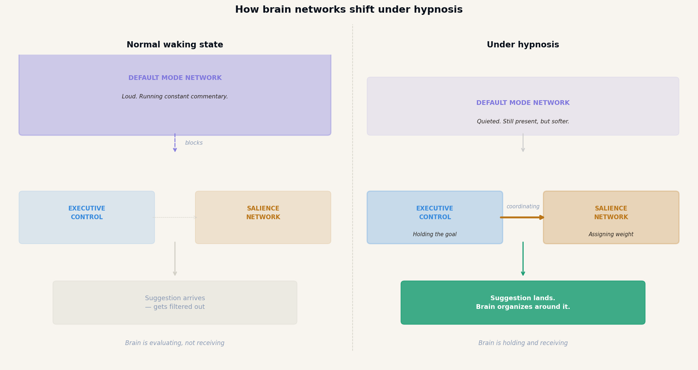
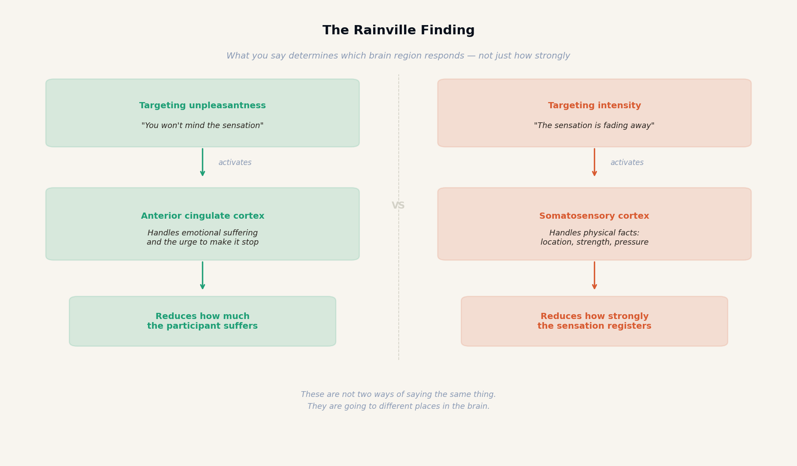
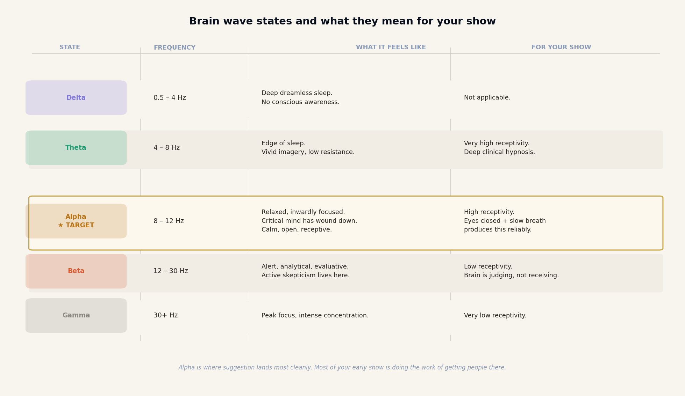
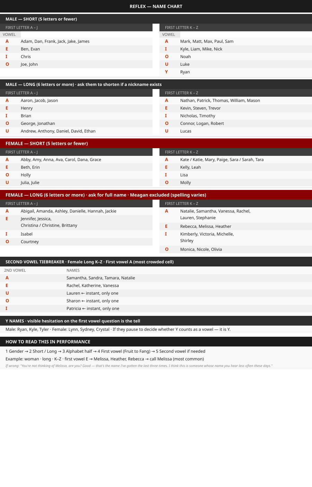

A MENTALIST'S GUIDE TO BEHAVIORAL SCIENCE, PSYCHOLOGICAL PERFORMANCE, AND ASTONISHMENT
BPCRVSAM
D E C O D E B E H A V I O R
wonder
/ˈwʌndər/
noun
A feeling of surprise mingled with admiration, caused by something beautiful, unexpected, unfamiliar, or inexplicable. The state of being open to what cannot yet be explained.
· · ·
building
/ˈbɪldɪŋ/
noun
The process of constructing something by putting parts together systematically. The deliberate act of assembling knowledge, skill, and experience into a structure that holds under pressure.
How to Read This Book
Every chapter opener in this book carries two rows of symbols. They are not decoration. They tell you what kind of evidence each chapter uses and what domain it applies to. Here is how to read them.
Signal Confidence Tiers
Every behavioral signal in this book is rated by evidential strength. The tier tells you how much weight to put behind a read.
T1
Physical Evidence
Directly observable, documentable, and not subject to interpretation. The most reliable tier.
Shoe resoling, cuff wear, belt notch wear, callus distribution
T2
Research-Backed
Supported by peer-reviewed behavioral science. High reliability when baseline is established.
Consistent operational evidence from applied practice. Reliable in the room without formal laboratory support.
Tonality drop at certainty, eye block before disclosure, breath-hold at decision
T4
Field-Used, Evidence-Disputed
Limited or contested formal research support. Widely used by experienced practitioners. Hold as context, not anchor.
NLP eye-movement direction, lower eyelid tension, hair part direction
Observation Categories
Each signal is tagged by its primary application domain. These codes appear as margin icons throughout the signal tables.
BP
Behavioral Profiling
Signals used to build a behavioral read on a person. Physical evidence, posture, grooming, belongings, and habitual patterns.
CR
Cold Reading
Signals that support verbal reads and statements. The cues that let you tell someone what they are thinking before they say it.
VS
Volunteer Selection
Signals that help you identify the right participant from a crowd. Who will play along, who will resist, who will make the moment land.
AM
Audience Management
Signals that tell you how the room is responding. Energy, attention, resistance, compliance. Read these to steer the group.
BUILT FOR WONDERHOW TO READ THIS BOOK
Every chapter opener in this book carries two rows of symbols. They are not decoration. They tell you what kind of evidence each chapter uses and what domain it applies to. Here is how to read them.
Signal Confidence Tiers
Every behavioral signal in this book is rated by evidential strength. The tier tells you how much weight to put behind a read.
Observation Categories
Each signal is tagged by its primary application domain. These codes appear as margin icons throughout the signal tables.
BP
Behavioral Profiling
Signals used to build a behavioral read on a person. Physical evidence, posture, grooming, belongings, and habitual patterns.
CR
Cold Reading
Signals that support verbal reads and statements. The cues that let you tell someone what they are thinking before they say it.
VS
Volunteer Selection
Signals that help you identify the right participant from a crowd. Who will play along, who will resist, who will make the moment land.
AM
Audience Management
Signals that tell you how the room is responding. Energy, attention, resistance, compliance. Read these to steer the group.
A Note on Sources
Where I cite scientific findings, I have tried to be accurate about what the research actually demonstrates and careful about distinguishing peer-reviewed evidence from practitioner frameworks developed through real-world use. Several chapters address areas such as behavioral profiling, cold reading, and compliance language, where some ideas are strongly supported in formal research while others are supported more by repeated operational success in performance, negotiation, communication, and observational practice than by tightly controlled laboratory study. I address those distinctions directly in the relevant chapters rather than overclaiming certainty or dismissing what falls outside narrow academic validation. In my line of work, many useful patterns are experienced consistently in the field even when they are difficult to isolate, measure, or study cleanly under laboratory conditions. That should not be taken to mean they are unreliable or unhelpful. In many cases, some of the most practically valuable behaviors are the ones whose research base is still incomplete, debated, or less formalized. It is like dismissing a seasoned sailor’s knowledge of the water because he cannot recreate the ocean in a laboratory tank.
ACKNOWLEDGMENTS
There are many people I owe thanks to, not only for helping shape this book, but for helping shape the path that led me to it.
First, I want to thank my friend Zach Alexander. Over the years, Zach spent countless hours talking through these ideas with me and helping me find language for thoughts I had felt for a long time but had never fully known how to express. He was also one of the people who encouraged me to step into the intelligence field in the first place. Without that push, I may never have taken my first agency contract, and this book may never have existed in the form it does now.
I am deeply grateful to Mike Gardner, Joe Navarro, Greg Hartley, Scott Rouse, Chris Edin, and Dr. Kasia Wezowski, whose teaching and guidance shaped the way I think about behavior, intelligence, and human communication. I also want to especially thank Tim Miller, Joe Navarro, and Nadia Ait for their mentorship, generosity, and willingness to answer questions and help guide me through important parts of my certification path.
My thanks also go to Lena Sisco, who encouraged me at a time when I needed it. She told me not to listen to the people who believed a mentalist had no place in law enforcement or behavioral Training. That conversation stayed with me, and her words mattered more than she probably knows.
I want to thank Kevin Hamdan, Philo, Jack Thomson, Tyler Reed, Anthem Flint, Michael Carroway, TJ Tana, and Michael Gutenplan for their friendship, insight, and encouragement. The conversations, late-night calls, shared excitement, and deep knowledge of entertainment all helped sharpen my thinking and strengthen my work as a performer.
I also want to acknowledge Patrick Redford, Ian Rowland, Chase Hughes, Peter Turner, Fraser Parker, and Jerome Finley. Each, in different ways, influenced how I think about this subject and helped expand what I believed was possible. Much of the material here is inspired by Chase Hughes and I really recommend anyone with a fascination with the topic of behavior read his materials and support him.
Finally, I want to thank my team at PROILLUSIONS, Ray and Pratik, I love you both. They have been more than teammates. They have been true friends and like brothers to me. Through PROILLUSIONS, they brought me deeper into the world of creating for and consulting with magicians, many of who I have dreamed of working for my whole life. They expanded my sense of what was possible. This book would not exist without them.
And to the PROILLUSIONS customers, you know who you are, many of you have become genuine friends, thank you. Your support and enthusiasm gave me a renewed sense of joy in performing and helped reconnect me with this art in a deeper way. For that, I am deeply grateful.
“The brain is a prediction machine. Every performance is a negotiation between what the mind expects and what you choose to deliver.”
— CHRIS MICHAEL
FRONT MATTER
BUILT FOR WONDERABOUT THE AUTHOR
ABOUT THE AUTHOR
Chris Michael is a behavioral strategist and corporate mentalist. He holds a DoD-recognized certification in counterintelligence threat assessment, is trained by a founding member of the FBI’s Behavioral Analysis Program, and serves as Executive Director of the Global Institute of Behavior. He has delivered behavioral intelligence training for FBI personnel, U.S. Army troops, Fortune 500 organizations, and government defense agencies across more than twenty industries.
1
1
THE METHOD IS NOT THE POINT
"Colin Cloud said something I have not been able to stop thinking about."
T1
SIGNAL CONFIDENCE TIERS
AM
OBSERVATION CATEGORIES
BUILT FOR WONDERCHAPTER 1 — THE METHOD IS NOT THE POINT
"There is a version of being a mentalist where you are pretending. This book is about the version where you are not."
T1
SIGNAL CONFIDENCE TIERS
AM
OBSERVATION CATEGORIES
CHAPTER 1 — THE METHOD IS NOT THE POINT
I
was nearly done writing this book when I had a conversation with Colin Cloud.
By that point, most of what you are about to read already existed in some form. The behavioral frameworks. The performance craft chapters. The systems for making mentalism feel real in ways that most performers never reach. I had spent years building this material and months putting it into a form worth handing to someone. And then Colin said something that I felt needed to come before all of it. So I put this chapter here.
This book is going to give you a new world of method. Techniques used by the best performers in the world. Behavioral systems that have never been explained in this way before. Frameworks for using mentalism with a level of realism and precision that most performers never reach. You are going to walk away with things that will change how you work. There is so much more I wanted to teach but knew that none of the methods or techniques would matter if I didn’t remove those to make room to discuss what I cover here before the book begins.
Colin Cloud was on tour with The Illusionists, a full-scale theater production that has played some of the largest stages in the world, night after night, with a rotating cast of elite performers. He was surrounded, every night, by people at the top of the field. And the two best performances he ever watched in his whole life were a part of that show, and it had nothing to do with their methods.
The first was Jeff Hobson doing the egg bag. The egg bag is not a new trick. It is not even a relatively new trick. It is one of the oldest pieces of apparatus in all of magic, a routine with roots stretching back centuries. Any working magician knows it. Most have access to how it works. The method is not hidden from the performing community. And yet Colin watched it rip through with waves of laughter and excitement every single night. Not because the method was stronger than anything else on the bill. Because Jeff Hobson is a character. Because what he does with that bag is not a magic trick. It is a piece of theater built around a specific human being, performed so completely and with such genuine craft that it does not matter what is inside the bag. You are watching a person who has become an irreplaceable presence in that moment. Magicians watched it. Laypeople watched it. Everyone watched it the same way. With joy. With full attention. With a feeling that something real was happening.
The second was Dave Williamson doing the Rocky Raccoon act with four kids on stage. If you have seen it, you already know. If you have not, what you need to understand is this: the method is not the point. There isn’t even really a “magic trick.” What is happening on that stage is a human being creating a small world, and pulling four children and a few hundred strangers into his unique and chaotic mind for several minutes, and making something that cannot be reduced to a method or a gimmick or a move. Colin watched it over and over again on that tour. He said each time, it stole the show.
Think about what that means. You are on stage with some of the most technically accomplished performers alive. People with acts built on extraordinary skill, original material, and years of refinement. And the piece that tears the show is a routine everyone in the field already knows. The methods you use are not what is holding you back.
This is uncomfortable for a lot of people to sit with, because it sounds like it is arguing against learning. It is not. What it is arguing against is the belief that the next strong method is what is standing between you and a great career. That if you had better material, more original ideas, more protected methods, everything would change. It will not change. Not on its own. The method is the vehicle. It matters that the vehicle runs. But a car that drives perfectly is still not a destination. This book is going to give you the vehicle.
We will cover techniques used by the best performers working today, explained in a way they have not been explained before. You will learn how behavioral profiling changes what is possible in a performance. You will learn systems for making mentalism feel real that most performers never encounter, let alone master. You will learn how to construct effects that land with a force that has nothing to do with luck. These things matter. They are worth learning. The material in these pages represents years of applied work across corporate stages, government contracts, and live performance at every scale.
But you are also going to learn the other half. Because if you cannot create a genuine connection with the person in front of you, and with the room around them, the method will perform for a stranger. It will not move anyone. And a performance that does not move people is just a demonstration. Demonstrations are forgettable.
In Part Five we are going to get specific about the psychological mechanics of connection. How interest is triggered, how trust is built in real time, how to make a room feel like it belongs to the moment rather than just observing it. These are not vague performance principles. They are learnable. They are repeatable. They work. And you will not be successful without them. Period.
But even before we get there, understand this now: the work you are about to do means nothing if you are doing it from behind glass. The methods in this book are tools. The performer using them is either applying these methods or limiting their growth and audience experience. You need to be applying these in the room you’re in. Jeff Hobson is in applying them. Dave Williamson is applying them. It’s obvious when you know what you are looking for.
That is what this book is ultimately building toward. Not just better methods. A more complete performer. And yes, there will be some VERY good methods too.
Now we can formally begin where I originally intended. Let’s get started.
· · ·
2
2
ON BEING THE PERSON WHO ADMITS WHAT THEY DO
"What you are about to read was designed to demonstrate its own content. Every page is a performance."
T1
SIGNAL CONFIDENCE TIERS
AM
OBSERVATION CATEGORIES
BUILT FOR WONDERCHAPTER 2 — ON BEING THE PERSON WHO ADMITS WHAT THEY DO
"What you are about to read was designed to demonstrate its own content. Every page is a performance."
T1
SIGNAL CONFIDENCE TIERS
AM
OBSERVATION CATEGORIES
CHAPTER 2 — ON BEING THE PERSON WHO ADMITS WHAT THEY DO
W
hat you are holding is a book about the neurobiology and some of the psychology of performance. Specifically: what is happening in the brain of the person watching you, and what that means for how you design, deliver, and follow through on every performance you give.
Three years ago, I walked into a private room at a steakhouse in Crystal City outside of the Pentagon and read a two-star general in front of his entire team. Thirty seconds in, his chief of staff leaned forward. Sixty seconds in, the general uncrossed his arms. By ninety seconds, the room had made its decision: I was credible. Everything that followed strengthened that judgment. There was nothing mystical about it. I noticed his watch was set four minutes fast, his shoes had been resoled instead of replaced, and when he checked his phone, he kept the screen angled down. Three signals. I simply told his team what I had noticed and what those details implied.
They imply a very specific kind of person:
Watch set four minutes fast. He values buffer, control, and readiness. That suggests someone who would rather arrive early than risk being late, and someone who quietly engineers advantage into routine behavior. Likely something he learned from a mentor. It can point to conscientiousness, anticipatory thinking, and a low tolerance for being caught behind the clock if he cared enough to apply that lesson to his own life.
Shoes resoled, not replaced. That suggests practicality over vanity. He values maintenance, continuity, and function. It often reads as disciplined stewardship rather than impulsive consumption. Someone like that may respect durability, standards, and the preservation of what already works instead of replacing it just because they can.
Checking his phone with the screen angled down. That suggests privacy, information control, and habitually managing access. It can imply discretion, security-mindedness, and an instinct not to broadcast what he’s dealing with to the room around him.
Together, those cues can support a read like:
“You strike me as someone who does not like being surprised by preventable problems. Your watch is set 4 minutes fast, General. You are far to careful for that to be an accident. You build small advantages into your environment, you value things that hold up over time, and you are careful about what people get access to. You probably look low-drama from the outside, but a lot of that comes from control, preparation, and standards, not indifference. Your team probably has a hard time living up to your standards. You find something you like and stick to it, like the shoes you have for your dress uniform, which you have resoled as your shoes have soles that don't match the age of the upper. The edge of the sole is cleaner, the leather or rubber fresher. You are almost certainly wearing Allen Edmonds, and most likely the Park Avenue Oxford, which is the only kind worth resoling.”
A little note about this:
While the line on the shoes seems impressive, it is more so just them assuming my ignorance of their standards. Dress code in the military creates shoe commitment. A two-star general in a Pentagon environment is in a Class A or dress uniform daily. That means the same pair of dress shoes being worn at a level of frequency and formality that makes them worth maintaining at almost any cost. These are their daily shoes. Allen Edmonds is the de facto dress shoe of Washington DC institutional life. Military officers, senior government officials, lobbyists, and defense contractors. I learned this because there is a shoe care service located just inside the metro entrance to the Pentagon on the second floor, offering sole replacement and shoe shining, open daily until 3:30 pm. They are always serving customers and I got my shoes shined there and struck up a conversation where it was mentioned casually that it was easier in this location because it is almost always the same shoe being brought in.
With that knowledge, I found that the specific tells on a well-worn Park Avenue are actually quite readable. The toe box develops a very particular set of creases because of the three-dimensional foot-shaped form that a shoe is built around during manufacture. The leather, which is a fairly stiff calf to begin with, develops a deep mirror shine over years of proper care that looks different from a newer shoe that has been aggressively polished. And the recrafted sole from the Allen Edmonds program has a specific appearance slightly lighter in color than the upper welt.
If you know me personally, than you know I am always observing small trends and features that are commonplace in different sub-cultures. It is my job. It is the job of any mentalist.
The mechanisms underneath that memory I shared are the same ones that make a training program memorable, a negotiation persuasive, and a first impression real. They all run on the same system. The nervous system. Nearly identical from human to human. The brain does not have a separate mode for entertainment and professional development. It pays attention for the same reasons in both. Same mechanisms. Same pathways. Uncertainty, social signal, novelty, resolution. If you understand how to engage those pathways deliberately, you are operating in a different category from anyone who does not.
That is what this book is for.
WHAT IT FEELS LIKE
Something impossible is happening in front of you, and your mind has gone quiet. Not confused — quiet. You are not trying to solve it. Part of you does not want to solve it, because you can feel that the moment you do, the feeling changes. That suspended state, the pleasure of an open question held at exactly the right temperature, is wonder. It is specific. It is neurological. And it is entirely designable.
What This Book Is
Part One is the neuroscience of what your audience experiences. Part Two is what you observe in them and how you respond. Parts Three through Seven take those principles into field notes, corporate stages, performance craft, and the business of getting booked. The science is real. The application is immediate.
· · ·
PART ONE
The neurobiology of performance. Predictive processing, salience, cortisol, dopamine, attention, authority, and credibility — the mechanisms every mentalist exploits whether they know it or not.
PART ONE
Built for Wonder
The neurobiology of performance. Predictive processing, salience, cortisol, dopamine, attention, authority, and credibility — the mechanisms every mentalist exploits whether they know it or not.
PART ONE
3
The neurobiology of performance. Predictive processing, salience, cortisol, dopamine, attention, authority, and credibility — the mechanisms every mentalist exploits whether they know it or not.
PART ONE
3
DESIGNING FOR REALITY
"Reality is not what happens. It is what they remember happening."
T1
SIGNAL CONFIDENCE TIERS
AM
OBSERVATION CATEGORIES
BUILT FOR WONDERCHAPTER 3 — DESIGNING FOR REALITY
"Reality is not what happens. It is what they remember happening."
T1
SIGNAL CONFIDENCE TIERS
AM
OBSERVATION CATEGORIES
CHAPTER 3 — DESIGNING FOR REALITY
H
ow the brain builds experience before it receives it. And what that means for every performance you design.
There is a moment in any performance when the audience’s imagination reaches for the furthest explanation it can hold, and then you step beyond even that. That is the real test of impossibility: not the reveal itself, but the instant before it, when their mind is already straining to predict the outer limit of what could happen, and you move past the edge it prepared for. Creating that moment is an architectural challenge, and the material you are building with is the human brain.
Right now, reading this sentence, your brain is predicting how it ends. Every brain in your audience is doing the same thing, constantly generating predictions about what is about to happen, then comparing those predictions to what actually occurs. The gap between their prediction and what takes place is where the best moments of our performance live. Wonder is not what happens when something impossible occurs. Wonder is what happens when the prediction fails at a moment of maximum confidence, in a context the nervous system has already decided to prepare for their imagined scenario. *PLACE HOLDER*, you just experienced a micro-version of it. The previous sentence started with your name. This book is about engineering those conditions deliberately.
__*note to the editor: I have code that will generate a version of this book once it is ordered and uses the buyers first name in that place holder. If we print the books I have an alternative version of that last paragraph.__
The Setup Is the Performance
Most people who watch mentalism and believe it is a collection of tricks and covert methods believe the reveal or the moment JUST before is where the work happens. It is not. The reveal is the moment the audience finally feels the effects of what was built earlier. The real work happened long before that, in how attention was guided, expectations were shaped, and significance was loaded into the moment.
Think about the last time a build-up really worked. The room goes quiet. Nobody reaches for their phone. Their blink rate is slower. You watch their bellies stop moving with each breath and you can see their chest lifting instead. The volunteer’s hand is shaking since they aren’t used to being on stage, and everyone in the first three rows can see it. They are anticipating something good. That is dopamine (the brain's anticipation chemical, released in the build toward expected reward rather than at the moment of reward itself) at full activation, the salience network (the brain's priority-detection system, continuously scanning incoming stimuli to determine what deserves attention) locked on, attention narrowed to a single point. The prediction machine is running at maximum confidence, which means the violation, when it arrives, will land with maximum force. All of that is happening before the reveal. The reveal just releases what all of that created.
Now consider what happens when performers invert this: delivering the reveal first, then explaining what happened. The prediction never got built. There was nothing to violate. The impressive thing happened and then got explained. The result is admiration at best. Wonder requires the setup. Two terms worth knowing:
Expectation Loading
The deliberate construction of a specific confident prediction before the moment that violates it. The more precisely you specify what the audience expects, the greater the force of the departure. Vague setups produce vague impact. Specific setups produce specific astonishment.
Earned Completion
There is a specific sound an audience makes when earned completion lands right. It is not a gasp. It is quieter, a sharp collective inhale followed by nervous laughter, the kind that comes when a brain finally assembles something it had all the pieces for but was not allowed to see yet. You have heard it. Once you know what you are listening for, you cannot stop noticing when it happens and when it does not.
The mechanism is simple: the brain hates unfinished business. When you place a detail in front of an audience, name it, let them touch it, make it real, and then leave it, their brain quietly files it as an open loop. Open loops get priority. They keep returning to working memory, asking whether they have resolved yet. By the time you return to that detail, the audience is not just watching. They are waiting, without knowing it.
When the connection finally snaps into place, the sensation is not that something impossible happened. It is that something inevitable happened. That they should have seen it coming. That it was right there the whole time.
That “of course” feeling is more powerful than pure surprise. Surprise is a system reset. Earned completion is a system confirmation. It rewards the brain for having paid attention. The audience feels clever for having been fooled, which is a genuinely strange and wonderful thing to engineer.
What this looks like in practice. Early in a show, you borrow a ring from an audience member, hold it for a moment, comment that it is heavier than you expected, then hand it back and move on. Nothing is made of it. Twenty minutes later, the climax of a completely different routine ends with that weight being meaningful — a chosen number, a prediction, a revealed word — and the person who owns that ring suddenly realizes you knew something about it from the first moment you touched it. The ring was the seed. The apparent casualness of returning it was the cover. The payoff recontextualizes the entire evening. Or consider this: you ask someone to think of a person they love who has passed. You write something down, fold it, and set it aside without showing anyone. The show continues. Three routines later, after laughter, after spectacle, after the audience has genuinely stopped thinking about that folded paper, you return to it. The reveal lands harder than almost anything else you do that night, not because the method was better, but because the audience spent forty-five minutes holding that moment in their peripheral awareness without realizing it.
A simpler version: you open by asking the whole room to silently think of any city in the world. You acknowledge the thought, give nothing away, and move forward. Forty minutes later, in the final piece of the show, you reveal it. The room does not just react to the revelation. They react to the wait. Every minute that passed was load-bearing. The practical rule: the seed has to feel like it belongs. If it reads as a setup, it poisons the payoff. Plant it during a transition, inside an explanation, somewhere the analytical brain is occupied with something else. When it returns at the end, the audience will not remember it arriving. They will only feel that it was always there. That is the difference between a show with good tricks and a show that feels like it was designed.
Chris Michael's Take
Most performance failures happen before the reveal. I have audited over two hundred of my own recorded performances. In every case where a reveal fell flat, the problem was in the build, not the method. The fix was never a better ending. It was a better thirty seconds before the ending.
Before going too far, let’s understand that the audience’s experience of wonder is built on a few recurring properties of the brain: its need to conserve effort, its habit of predicting what comes next, and its tendency to settle quickly once an explanation feels sufficient. If you understand those pressures, you can create wonder. Let’s look at the functions responsible.
Cognitive Economy
The brain tends to conserve effort by relying on shortcuts, patterns, heuristics, and explanations that feel good enough rather than fully analyzing every variable at maximum depth. This does not mean the audience is not thinking during a show. In many cases, they are thinking intensely. It means that even under scrutiny, the mind still prefers efficient interpretations over exhaustive analysis.
How it helps your performances: The audience cannot track everything equally. They simplify, compress, and often settle on partial understandings. This makes misdirection, false solutions, framing, and controlled attentional load much stronger.
How it hurts your performances: If you leave an easy explanation available, the audience may grab it and stop searching. A weak but plausible theory can become real enough in their mind to drain the effect of its impossibility.
Metabolic Efficiency
The brain is energetically expensive tissue, so it is built to manage limited resources efficiently rather than process everything at full depth all the time. Attention, working memory, and interpretation are always being budgeted. For performers, this matters because the audience cannot fully monitor every condition, object, and implication at once.
How it helps your performances: This is one reason psychological forces, clean framing, and misdirection work so well. The mind prefers fluent, low-effort paths unless something signals that deeper scrutiny is necessary. A well-constructed effect works with that limitation rather than against it.
How it hurts your performances: If your routine is too procedurally dense, mentally taxing, or cluttered, the audience may stop following what matters. When the cognitive cost is too high, the effect becomes harder to feel, remember, or care about.
Predictive Processing
The brain is constantly generating expectations about what is happening and what will happen next, then comparing reality to those expectations. Mentalism lives inside that gap. The audience is not just watching. They are anticipating, forecasting, and silently trying to get ahead of the moment.
How it helps your performances: This is part of what makes strong reveals hit so hard. You can shape prediction, encourage it, delay it, and then violate it at the point of maximum confidence. When the mind is not just surprised but confidently wrong, the moment lands with much more force.
How it hurts your performances: If the audience predicts the right category too early, or if the structure confirms what they were already expecting, the effect weakens. There is little wonder in an ending the nervous system had already prepared for.
· · ·
Design the memory, and you design the experience.
Design the memory, and you design the experience.
PART ONE
4
The neurobiology of performance. Predictive processing, salience, cortisol, dopamine, attention, authority, and credibility — the mechanisms every mentalist exploits whether they know it or not.
PART ONE
4
THE FIVE FORCES OF ATTENTION
"Your audience’s brain is deciding what matters before you open your mouth."
T1T2
SIGNAL CONFIDENCE TIERS
AM
OBSERVATION CATEGORIES
BUILT FOR WONDERCHAPTER 4 — THE FIVE FORCES OF ATTENTION
"Your audience’s brain is deciding what matters before you open your mouth."
T1T2
SIGNAL CONFIDENCE TIERS
AM
OBSERVATION CATEGORIES
CHAPTER 4 — THE FIVE FORCES OF ATTENTION
W
hat makes the brain say this matters? Understanding the salience network is understanding attention itself.
WHAT IT FEELS LIKE
The room is noise and motion and glasses clinking and nobody particularly interesting. Then your eyes move — not because you decided to look, but because something recalculated. Across the room, one person has gone still. Shoulders settled, chin level, not scanning for confirmation. In the middle of all that movement they appear as though they already belong here in a way the room has not caught up to yet. You are looking twice. So is everyone else.
Something powerful and rarely taught outside of covert operations is this: the moments that command human attention are not random. They follow patterns. Human behavior is constrained, and salience is not arbitrary. It’s an uncomfortable truth. Human attention and behavior show lawful patterns. Human behavior may feel unpredictable, but it is not random. Let me have you read that again. Just as no triangle exists with a total sum of its angles exceeding 180 degrees, no human can ever be random. Human attention is structured, constrained, and responsive to causes. Attention, memory, emotion, context, incentives, habit, fatigue, social pressure, past experience, and biology, all shape what stimulates people, how they interpret those stimuli, and how they respond. What you can not control (in most cases) are habits, past experiences, and biology. What we can control as performers are attention, memory, emotion, context, incentives, habit, fatigue, and social pressure. We will discuss ethical ways to control those later in the book, but for now we will focus on attention. The brain has a built-in priority system for deciding what deserves your attention first. Two important parts of that system are the anterior insula and the dorsal anterior cingulate cortex. You do not need to memorize those names. What matters is what they do. Together, they help form what is known as the salience network: the system that scans everything coming in and asks, What matters here? What is different? What might require attention right now? Out of the roughly eleven million bits of sensory information your nervous system is taking in each second, only a tiny fraction reaches conscious awareness. Even less will make it to the hypothalamus which controls the endocrine system which controls what we feel. The salience network helps decide what makes the cut. To a performer, that matters.
Five forces that control attention
Novelty
Emotional Relevance
Social Signal
Unresolved Uncertainty
Contrast
1
Novelty
The brain is not interested in the familiar. Familiarity produces habituation: the nervous system stops allocating resources to processing things that are predictable. Novelty does the opposite. Remember metabolic efficiency? Novelty triggers a full orienting response, pulling attentional resources away from whatever else is competing for them and directing them toward the novel stimulus. This is why your opening cannot be something they have seen multiple times before. I once opened a corporate show by standing completely still at the front of the room for twelve seconds before speaking. Twelve seconds of silence in a room that expected a greeting. Especially after a powerful intro video, and music that filled the room as I walked on stage. Every phone went down at the end of those 12 seconds. While different in texture, Rob Zabrecky also does this. For him it is to invoke curiosity rather than authority. Think also of the Eric Andre show. Watch how the guests are always fully attentive to the novel stimuli he presents to his guests. It’s what makes the show so funny.
2
Emotional Relevance
The amygdala in our brain. It continuously evaluates incoming information for personal significance. Particularly for threat or reward. Information that has emotional stakes gets prioritized. Information that is emotionally neutral does not. This is why a reading that connects to something relatable for the participant lands more powerfully than the same words delivered to someone with no context. Personal stakes heighten the applause in almost every routine.
3
Social Signal
The brain is a social organ. It devotes enormous processing resources to the evaluation of other people for our survival. Their status, their intentions, their emotional state, and what their behavior means for our own safety and belonging. A performer who understands social signal design can redirect this processing priority reliably. Walk into any room and look for the person who seems to be setting the social weather without trying. Watch where people’s eyes go after something happens. A joke lands, a surprising line is said, a volunteer is chosen. Who do people check for? Who are the people in the group facing towards. If you start consciously observing this, you’ll realize that this person is quite easy to find. Read them first. The room will watch you read the person that subconsciously commands more of their attention and then after this will put you in command.
4
Unresolved Uncertainty
The brain cannot tolerate open loops. The Zeigarnik effect (the psychological tendency to better remember interrupted tasks than completed ones) demonstrates that an unresolved question continues to occupy working memory long after you have nominally moved on from it. The brain compulsively orients toward unresolved states, which is why a well-built mentalism routine feels almost physically uncomfortable at its peak. The audience cannot look away because the prediction machine is screaming for resolution and it has no off switch.
5
Contrast
Change is more attention grabbing than content. The brain's change-detection systems flag transitions, not sustained states. A whisper after loud speech. Stillness after movement. Warmth after clinical precision. Dark after light. This is why the performer who speaks softly in a room accustomed to loud presentations commands more attention than the one who out-performances everyone else. The contrast is the signal. The softest line I deliver in any show is the one right before the strongest reveal. The audience leans in to hear it. They have no idea they just gave me their full attention.
Stacking the Forces
Your opening 60 seconds should engage at least three of the five simultaneously. Contrast + Social Signal + Novelty creates an attentional lock that most rooms cannot resist. Any act on America’s Got Talent that utilizes 3 or more of these forces that control our attention are far higher in measured watch time and shares. Think of an old man who does a strip tease for Howie Mandel. That contains multiple layers of contrast, creates novelty, and knowing that Howie is a germaphobe, gives that act social relevance.
⚠ Common Misread
If the room does not go quiet in the first ten seconds, you are not commanding attention. You are competing with background noise for it. These are categorically different situations. The first gives you the room. The second puts you in a fight you have already started losing.
Chris Michael's Take
Imagine I suddenly fell silent, looked you dead in the eyes, and threw my keys at the wall. In most environments, your attention would snap to that moment immediately. Not just socially, but biologically. Before you could explain it, your nervous system would already have tagged the event as important, unusual, and potentially meaningful.
· · ·
Salience is not what you show. It is what they cannot ignore.
Salience is not what you show. It is what they cannot ignore.
PART ONE
5
The neurobiology of performance. Predictive processing, salience, cortisol, dopamine, attention, authority, and credibility — the mechanisms every mentalist exploits whether they know it or not.
PART ONE
5
TENSION, THREAT AND THE WINDOW OF WONDER
"The moment before the reveal is worth more than the reveal itself."
T1
SIGNAL CONFIDENCE TIERS
AM
OBSERVATION CATEGORIES
BUILT FOR WONDERCHAPTER 5 — TENSION, THREAT AND THE WINDOW OF WONDER
"The moment before the reveal is worth more than the reveal itself."
T1
SIGNAL CONFIDENCE TIERS
AM
OBSERVATION CATEGORIES
CHAPTER 5 — TENSION, THREAT AND THE WINDOW OF WONDER
N
ot all tension is equal. The difference between wonder and fear is the finest line in performance.
WHAT IT FEELS LIKE
The room has gone quiet in a different way than before. You are holding your breath without having decided to. The performance has become something more focused, more private, like the air in the room changed its pressure. Every person around you is still. You are leaning slightly forward. This is wonder at its upper edge — the razor-thin line between captivation and too much.
And there is another experience, probably familiar: watching a performer hold tension past the point where the room can enjoy it. You can feel the audience receding. The room that was leaning forward starts to lean back. And then, not because anything funny happened, someone laughs. It is not a genuine laugh. It is a pressure release. I performed a show directed by magician Marcus Eddie in Washington, D.C. The show was designed to be very serious and even uncomfortable for the two of us to experiment artistically outside of our typical creative style. The show ran for several weeks in the speakeasy of the upscale Graham Hotel outside of Georgetown university and there were many performances that when attempting to increase the discomfort of the audience and increase “the pressure in the room,” someone would cut through it with a laugh. Someone’s nervous system regulated the room for their own comfort. That is a cortisol discharge event. The window had been exceeded.
The Cortisol Threshold
Cortisol is the primary stress hormone. It is released in response to perceived threat, and it produces a cascade of physiological changes designed to prepare the body for action: heightened alertness, narrowed attention, elevated heart rate, and the suppression of non-essential systems like digestion, which is one reason your stomach may feel strange in high-stress moments. Importantly, the limbic system (a set of interconnected structures including the amygdala and hippocampus, responsible for emotional processing, threat detection, and motivational drive) reacts to threat whether that threat is real or merely perceived. The body does not wait for a philosophical answer before it begins preparing. In moderate doses, and in a context where the nervous system has determined that the threat is not truly dangerous, cortisol can enhance attention and memory encoding. This is productive tension. The audience is alert, focused, and emotionally engaged. When cortisol rises beyond what the context can justify, the experience tips from exciting to aversive. The audience is no longer choosing to stay inside the feeling. They are managing it. The performance contract has been violated, not because the content was wrong, but because the physiological experience was not matched by sufficient safety cues. Moderate cortisol can strengthen memory encoding. High cortisol, especially when combined with helplessness, can impair hippocampal function (the hippocampus being the brain's primary memory-encoding structure, located deep in the temporal lobe) and degrade memory. The goal is excitation, not stress. They may feel similar in the moment, but they produce very different outcomes the next morning.
Tension Laughter
A laugh that arrives at a moment that is not genuinely funny is a cortisol discharge event. The nervous system is releasing pressure. Read it as a signal that the window is at its edge. Offer a brief social release, then continue the build.
Always Trust the Body
The body gives you the cortisol level before the mind processes it. A room that begins shifting (legs recrossing, hands moving to faces, the slight disruption of stillness) is a room telling you something. Read it and respond. The window is not permanent.
Reading the Audience's Cortisol Level
The cortisol window is not fixed. It shifts across the duration of a performance, and it is not the same in every room. A late-night corporate crowd that has been drinking for an hour has a different threshold than a lunchtime keynote. A room that has just been through a tense morning session brings a different baseline than one arriving fresh. You cannot import a tension strategy from last week’s show and apply it unchanged to this room tonight. The framework transfers. Fortunately, the way we calibrate does not.
What does transfer is a reading discipline: the ability to identify, in real time, where this room currently sits inside the window, and whether your last move pushed it toward the edge or deeper into it. Six visible indicators help you read what the room’s cortisol is doing. One of the most useful is blink rate. When blink rate slows, it is often a strong indicator that attention has narrowed and the audience is locked in. When blink rate increases, something has usually shifted. The room may be diffusing, mentally resetting, self-soothing, or losing the thread. That makes blink rate worth watching in the moment and worth reviewing later on footage. When you watch back your shows, note the places where audience blink rate rises. Those moments often tell you exactly where tension leaked, attention broke, or the room stopped fully following your script. These behaviors are also early indicators that a performer is beginning to bomb on stage, so they are worth watching closely. That is another reason they matter so much: when a performer lacks awareness of the room and keeps pushing past the audience’s tolerance, cortisol levels can spike sharply. This is one reason people may eventually leave a bad performance. Most people do not want to stand up, move around, or do anything that draws attention to themselves in the middle of a show. But if the discomfort created by staying becomes greater than the discomfort of being noticed while leaving, the calculation changes. At that point, the audience is no longer inside productive tension. They are managing discomfort, second-hand stress, or the social strain of watching something lose control in real time. A performer who cannot read those signals often makes the mistake of doubling down, which only drives the room further in the wrong direction.
Breathing Visibility
When an audience is inside productive tension, their breathing rate slows visibly. Chests are not heaving. Shoulders are still. When tension exceeds the window, shallow rapid breathing appears. Visible in the upper chest, in the slight elevation of shoulders. Watch the first two rows. They read out the whole room. This is much easier to spot when someone is wearing a suit. Watch the level of their shoulder pads or lapels on their jacket. For nearly as century this is part of the subconscious reason we trust people in suits more. We can detect their stress level far easier.
The Laughter Signal
The cortisol discharge, or tension laugh, described above is your clearest real-time indicator that pressure has started to spill over. When you hear it, offer a brief social release, then continue the build. The window often recovers faster than most performers expect. Because tension laughs are less common than the other signals, they should be taken more seriously when they do appear.
Stillness Gradient
A room inside the window goes progressively still (the stillness of held breath, not boredom. If that stillness starts to fracture) people shifting, recrossing legs, pulling at sleeves, preening, playing with their hair: the tension has tipped from engaging to uncomfortable. The distinction is in the direction of movement: are they leaning in, or beginning to lean back?
Phone Emergence
A phone appearing in a tense moment is not rudeness. It is a nervous system looking for an exit. The audience member who pulls out their phone during your highest-tension moment is telling you their cortisol has exceeded what the social agreement currently justifies. Either the tension was not earned or it has been held too long. Although, some people are just realtors. Those people check their phone constantly.
Self-Soothing
Self-touch tends to increase as cortisol rises, especially around the neck, face, hair, and arms. Common cues for a higher level of discomfort include women touching the suprasternal notch, the small hollow at the base of the neck above the sternum, or men placing a hand across the front of the neck. One or two self-soothing behaviors on their own are just noise or someone dealing with unrealted stressors. But when you see a wave of them move across a section of the audience at the same time, the room is telling you something much more specific.
Absence of Response
Silence during a build is attention. Silence during a moment that should have produced a response is something else entirely. If the room goes flat where energy should have risen, the dopamine response has likely been interrupted by stress or uncertainty. The audience is no longer simply experiencing the moment. They are managing it. You can feel this most clearly when a show is not going well and you ask for a volunteer. The response is no longer playful hesitation. It is social reluctance. The room does not want to move toward you because it no longer feels safe, easy, or rewarding to do so. In a strong show, volunteer selection usually has very little resistance. In a strained show, the absence of response tells you something important. The room is not with you. It is protecting itself from you.
⚠
⚠
When You Have Gone Too Far
It’s okay! We have all experienced this in one way or another and all of us performing will experience it again. It is part of the journey as a performer. Fret not! The window can be recovered. This is the most important thing a performer can know about cortisol: the damage is not permanent in the moment, and the tools for recovery are not complicated. But they require the willingness to recognize what has happened and respond to it rather than push through.
The standard mistake when a room tips over the window is to accelerate. To perform harder, give them more, make the next moment bigger. This loads more cortisol onto an audiences nervous system that is already at capacity. The right response is social: step briefly out of the performance, make human contact, and let the room's nervous system normalize before you resume the build. One word of caution that surprisingly comes from my law enforcement traingings and not the performance world but is aptly applied here: When relieving tension, unless it is absolutely critical to do so, do not break character.
01The Reflect and Reset
WHEN The room is leaning back. Someone laughed when nothing was funny. You can feel the contract fraying.
This will require some self-awareness. Step slightly out of performance mode: a shift in register, not a full break. Warmer, slightly more casual. Look at a specific person and say something that acknowledges the room rather than performing at it. Give them thirty seconds of normal human interaction. The cortisol drops. You resume. The build is still there. Example: “I know I keep saying your name wrong. It’s not that it’s a difficult name by any means. As you can imagine, while performing I have so much to keep at the front of my mind. I mean no disrespect by it, but I do feel a little embarrassed I keep saying it incorrectly. Let me take a second with you to get your name right, so that I can do right by you and by the audience.” Then redress the room: “Thank you all for allowing me that. I want to make sure everyone here is able to feel fully seen. May we continue?” Then strive for an enthusiastic yes.
02Productive Silence
WHEN A prop falls. Something small goes wrong. Acknowledgment would make it worse.
Three to five seconds of genuine stillness, not awkward void, is a cortisol modulator. It signals: I am comfortable in this moment. Nothing is wrong. The room reads the performer’s comfort in silence as safety data. If the performer is calm, the room recalibrates toward calm. Productive silence shows confidence and composure. In many cases, vocal acknowledgment of a small mishap increases discomfort rather than relieving it. Stay still. Let the room settle around you.
03The Redirect
WHEN You need to stall, adjust a prop, or recapture attention that has drifted.
A piece of misdirection that invites the audience to think about something external briefly suspends tension rather than building it. A detail about the volunteer, a brief observation about the room, a moment of directed curiosity. A few seconds of external attention lets cortisol settle before you reload the build. The audience does not experience it as a pause. They experience it as texture.
Audience Variability and the Moving Threshold
Corporate rooms that have been in a day-long conference arrive with elevated baseline cortisol. Decision fatigue, social performance pressure, the low-grade tension of professional evaluation. Their window for additional productive tension is narrower than a fresh audience. You have less room to build before they tip. Design accordingly: shorter build sequences, more frequent social releases, a first effect that earns the room rather than challenges it.
Evening events where alcohol is present are physiologically different rooms. Moderate alcohol reduces the sensitivity of the amygdala (an almond-shaped structure in the temporal lobe that serves as the brain's primary threat-detection and emotional-significance center): Which means the room's floor is lower, but so is its ceiling. You can hold more without tipping because the threat response is blunted. But you also get less from the window: the emotional encoding that happens inside productive tension is partially disrupted, which means the memory impact of the performance is reduced. More fun in the room. Less remembered the next morning.
High-status rooms, executives, government audiences, professional specialists, have more developed suppression behavior. They have been trained across careers to not visibly display cortisol response. This makes them harder to read using the standard indicators. The signal is still there; it is smaller. Watch micro-expression and self-soothing rather than gross body behavior. We will cover more on microexpressions later.
Chris Michael's Take
The window is the most important variable you cannot design in advance. You can design for the average. Calibrated from the brief you received, the event context, the room's constitution. But the actual threshold is in front of you when you start, and it moves as the show proceeds. Every technique in this book works inside the window. Almost nothing works reliably outside it.
· · ·
Tension is not the enemy. Boredom is.
Tension is not the enemy. Boredom is.
PART ONE
6
The neurobiology of performance. Predictive processing, salience, cortisol, dopamine, attention, authority, and credibility — the mechanisms every mentalist exploits whether they know it or not.
PART ONE
6
THE ART OF ANTICIPATION
"Dopamine does not reward the outcome. It rewards the anticipation."
T1
SIGNAL CONFIDENCE TIERS
AM
OBSERVATION CATEGORIES
BUILT FOR WONDERCHAPTER 6 — THE ART OF ANTICIPATION
"Dopamine does not reward the outcome. It rewards the anticipation."
T1
SIGNAL CONFIDENCE TIERS
AM
OBSERVATION CATEGORIES
CHAPTER 6 — THE ART OF ANTICIPATION
D
opamine is released during the build-up, not the reveal. You have been timing your performances wrong.
The dominant myth in performance is that the payoff is the performance. That the moment of resolution (the card named, the thought revealed, the impossible thing completed) is the event that everything else is building toward. The neurobiology inverts this completely. The payoff is the least neurobiologically active moment in the sequence. The dopamine is in the build.
Wolfram Schultz and colleagues demonstrated in research published in Science (1997) that dopamine neurons fire in response to the cue that predicts a reward, not the reward itself. Once the brain learns the pattern, dopamine starts firing at the cue that predicts the reward. My mentalist brain is telling me while writing this that you are thinking that Pavlov already proved this (actually you didn’t think this until I said it, but you did recognize that they are similar at this point now!) To answer the question I forced you to ask: Pavlov showed the learned association in behavior, while Schultz showed the prediction signal in the brain. That makes it especially useful for performance, because mentalism is built not only on association, but on shaping what the audience thinks is about to happen. Schultz helped us see how the brain tracks expectation, updates prediction, and reacts when outcomes are better, worse, or different than expected. The brain stops waiting for the outcome and starts reacting to what tells it the payoff is about to happen. If the cue appears, dopamine rises because the brain is already preparing for the reward. If the reward appears without the cue, the response is weaker. The key point is simple: the brain is not only reacting to what happens. It is reacting to what it expects is about to happen. You may even apply this whenever you have call-backs, repeated lines or poses. It will be more enjoyable after several times if you start holding the tension between when they know it is coming and when you deliver it. Turn over your cards slower, look towards the envelope slower. This is critical to improving the excitement in your show.
Which means every performer who rushes to the reveal is cutting the best part of the experience short. Including you. Including me, for years.
Increasing Dopamine
Dopamine is often oversimplified in popular culture and is far more than just a “feel-good chemical,” as it plays a role in movement and motor control that people seem to forget about. In fact, Parkinson’s disease is a dopamine disorder. However, the “feel-good chemical” that gives the feeling of reward is all we need to understand about it to approach the next topic. If dopamine fires during anticipation rather than resolution, then the most active and pleasurable part of a performance is the sustained build toward an uncertain outcome. Not the outcome itself. The reveal is a dopamine drop, not a spike. The build is the experience. We’ve established that.
This means: performances that move quickly to the reveal are structurally sacrificing their most powerful neurobiological moment. The performer who rushes to impress is cutting the dopamine experience short. The performer who can hold a room in sustained anticipation, who can extend the build without losing the thread, is extending the most pleasurable neurobiological state available to them. The more dopamine you deliver to your audience, the more compliant and suggestible they will become. This is good for making fans, selling merch, booking more shows, and above all else giving them a better experience.
Premature Resolution
After the slight internal snicker you had when reading that name I thought it wise to explain this formally. The most common structural error in performance: resolving tension before it has reached maximum sustainable intensity. Every effect has a peak: the moment where the combination of cortisol and dopamine produces maximum engagement. Releasing before the peak is leaving the best moment in the build unused.
Intermittent Structure
Variable reward schedules (structures where the payoff arrives on an unpredictable interval) produce stronger dopamine priming than fixed schedules. A performance that resolves at irregular intervals keeps the dopamine system more active than one that follows a predictable pattern. Vary the timing of your reveals.
Chris Michael's Take
Map your next performance backward. Start with the reveal and work backward to identify the earliest moment the audience could have started anticipating it. That point, the beginning of the anticipatory window, is where the real performance begins. Everything before that point is setup. Everything between it and the reveal is the experience.
· · ·
Delay is not cruelty. It is craft.
Delay is not cruelty. It is craft.
PART ONE
7
The neurobiology of performance. Predictive processing, salience, cortisol, dopamine, attention, authority, and credibility — the mechanisms every mentalist exploits whether they know it or not.
PART ONE
7
ATTENTION AS A WEAPON
"Attention is not given. It is taken."
T1T2
SIGNAL CONFIDENCE TIERS
AM
OBSERVATION CATEGORIES
BUILT FOR WONDERCHAPTER 7 — ATTENTION AS A WEAPON
"Attention is not given. It is taken."
T1T2
SIGNAL CONFIDENCE TIERS
AM
OBSERVATION CATEGORIES
CHAPTER 7 — ATTENTION AS A WEAPON
M
WHAT IT FEELS LIKE
Something happened directly in front of you. In your field of vision. In real time. And you have no idea how. You replay it and the replay gives you nothing, not because the method was fast or complicated, but because you were not looking there. You were fully occupied with something else, something that seemed more important. The mechanism lived in the space your attention had left unguarded. That is not an accident. That vacancy was built.
The Gorilla Principle
In 1999, Daniel Simons and Christopher Chabris published one of the most cited papers in attention research. Participants watched a video of two teams passing a basketball and were asked to count the number of passes made by one team. While they counted, a person in a gorilla suit walked through the scene, paused, and walked out. Most performers are familiar with this, and I anticipate you know where I am going with this, but keep reading as I have a point here. Approximately half of participants failed to notice the gorilla entirely. Not because they were not paying attention, but because they were paying maximum attention to the wrong thing. This is inattentional blindness: the failure to perceive something clearly visible when full attention is engaged elsewhere. For performers, this is not interesting but it is foundational.
Misdirection is not always in blocking, visuals, movement, sleights and the like. In many cases when the audience doesn’t catch the method, its not that the audience is being deceived or physically misdirected. It is the narrative of your show, character or perhaps your presence that makes them never look for it in the first place. They are allocating cognitive resources to the narrative you have given them, and the narrative is consuming what would otherwise be available for peripheral monitoring and likely to seek out methods. Your job is not to move faster than their eyes. Your job is to build a story compelling enough that their eyes never go looking.
The Octopus Principle
A mind given too many simultaneous suggestions handles none of them deeply. One or two high-quality, emotionally charged suggestions focused on a single outcome produce dramatically stronger results than a volley of technique. Concentrate the suggestion before you deliver it. This works bidirectionally. When you want to be paid attention to limit stimuli, when you want to distract increase stimuli. The Dunninger ploy is a great example.
Change Blindness
People regularly fail to notice large changes to objects they are looking at directly when those changes occur during a brief visual interruption: a blink, a cut, a glance away. Change detection requires attention, not just vision. They are different systems entirely.
System 2 Load Test
That name comes from the common dual-process model. The dual-process model is the idea that human thinking tends to operate in two broad modes: System 1 = fast, intuitive, automatic System 2 = slow, effortful, analytical. This model became widely known through psychologists like Daniel Kahneman and Amos Tversky (who I am a huge fan of), though the broader idea has roots in earlier cognitive psychology. Here’s what it means for performers:
Before every performance ask: is the story genuinely demanding? Does it require real cognitive investment from the audience? A story that can be followed passively leaves excess attentional capacity for peripheral monitoring. A story that requires tracking and prediction does not.
Psychological Marking
There is a technique so elemental that it operates without the audience noticing at all, and often without the performer noticing they are using it. Psychological marking is the act of placing deliberate, repeated attention on a specific object, location, or person in a way that causes the audience to unconsciously assign it significance. Not through gesture or misdirection toward it, but through what might be called a casual yet intentional distinction. You treat it differently, even slightly, from everything else in the environment. You touch it once more than the others. You hesitate a fraction longer when you look at it. You let your gaze return to it between actions.
The effect is this: the salience system marks the selected object as significant without being told why. When the moment arrives calling for a choice, the marked object carries a pre-installed weight. The person making the choice is not following your instructions. They are following the map your behavior drew on their nervous system without their conscious awareness.
Psychological marking is closely related to the dramatic principle known as Chekhov’s gun: if a gun is hanging on the wall in the first act, the audience expects it to matter later. The reason that principle works is not just narrative neatness. It works because attention creates weight. The moment something is subtly distinguished from its surroundings, the mind tags it as significant and begins holding space for its future relevance. That idea helped inspire this chapter’s title, Attention as a Weapon, because in performance, attention does not merely illuminate. It loads. It marks. It creates expectancy. A casually emphasized object becomes psychologically heavier than the rest of the environment, and when the time comes for a choice, a memory, or a moment of meaning, that weight can quietly steer behavior.
The Effort Inversion
Greater conscious effort by the participant produces less subconscious response. If someone is trying hard to feel something, they are occupying the processing bandwidth that would otherwise be receiving the suggestion. The participant who is relaxed and slightly distracted is more available than the one who is concentrating intently. Compliance does not require effort. It requires availability. Design for available, not effortful.
A practical rule: replace effort words with observation words. Instead of “try to feel your hand getting lighter,” say, “just notice which hand begins to feel slightly different first.” Instead of “concentrate,” say, “you do not have to force anything, just let yourself notice what changes on its own.” The moment you ask them to do the experience, you recruit deliberate effort. The moment you ask them to observe the experience, you free up bandwidth for the suggestion to land.
You also reduce conscious effort by giving the mind something light but occupying to do. A small task, like following your finger, imagining a color, counting two breaths, or picturing the last place they left their keys, can keep conscious attention gently busy while the suggestion takes root underneath. That is one reason spacing helps. If you seed the idea, move on, and come back, the participant has had time to stop working at it.
Another major factor is pressure. The harder they feel they are being watched, tested, or expected to respond, the more effortful they become. So remove the feeling of performance. Lower the stakes. Make it seem normal if nothing dramatic happens immediately. “Some people notice this fast, some notice it gradually” is often better than “you're about to feel this now.” One creates availability. The other creates demand.
So in practice, reduce conscious effort by doing four things: simplify the instruction, shift from forcing to noticing, lightly occupy the analytical mind, and remove the pressure to succeed. The participant should feel like they are allowing, not achieving. That is usually where the best responses begin.
· · ·
You cannot give someone an experience they were not paying attention for.
You cannot give someone an experience they were not paying attention for.
PART TWO
PART TWO
Reading the Room
Body language, cold reading, micro-expressions, and the art of extracting information before a single question is asked.
BUILT FOR WONDERREADING THE ROOMBUILT FOR WONDERINTRODUCTION
7A
THE LIMBIC SYSTEM
“The brain has two voices. One was trained. One was not.”
T1T2
SIGNAL CONFIDENCE TIERS
BP
OBSERVATION CATEGORIES
CHAPTER 7A — THE LIMBIC SYSTEM
Every working mentalist has heard of the limbic system. If you have spent any real time in this field, you have probably nodded along when someone mentioned it, felt the concept land as something familiar, and moved on. Most of us have. It gets referenced in behavioral science conversations, dropped into lectures, mentioned in passing in books like this one. It has the comfortable feeling of a thing you already know.
What I want to do in this chapter is go a layer deeper than the version most of us carry around, because the surface understanding of the limbic system and the working understanding of it produce genuinely different results in the room. The performer who knows what the limbic system is and the performer who knows how to read it in real time while standing in front of a volunteer are not operating with the same tools, even if they would describe their knowledge in almost identical terms. The gap between those two performers is not about talent or experience. It is about one specific shift in how they understand what they are actually looking at when a person’s breathing changes, or their hands tighten, or their attention briefly goes somewhere private before they bring it back.
That shift is what this chapter is for. And it starts with something that happened to you recently.
Picture yourself driving on a highway, music on, mind elsewhere, and a car cuts across your lane without warning. You do not think about braking. You do not weigh your options. Your hands move, your chest tightens, your breath stops, and your foot is already on the pedal before the thinking part of your brain has finished processing what is happening. By the time you have formed the sentence “that was close,” your heart is already pounding. Notice that sequence carefully. The physical response came first. The thought came second. That gap, the space between the body’s reaction and the mind’s interpretation of it, is exactly what this chapter is about.
What just happened in your chest and your hands and your breath during that scenario was not a decision. You did not choose it. That was the limbic system, and understanding it at a working level changes everything about how you read people in performance.
The most useful way I have found to think about the relationship between the two main operating systems of the brain is this. The limbic system is the big brother. The neocortex, the thinking, reasoning, language-using, socially calculating part of the brain, is the little brother. The big brother is wise enough to know that the little brother needs to feel useful, so most of the time he steps back and lets him run things. The little brother writes the emails and makes the plans and handles the social niceties and genuinely believes he is in charge. For the small stuff, he mostly is. But the moment anything actually serious happens, the big brother does not ask permission, does not consult, and does not wait for the analysis to finish. He simply takes over, and the little brother suddenly finds himself observing rather than deciding. Your hands moved to that steering wheel before your neocortex finished its evaluation of the situation. The big brother handled it.
What makes this so important for us is the second part of that relationship, and this is the part that most explanations of the limbic system leave out entirely. The big brother does not just take over in emergencies. He very often creates the response first, and then the little brother comes along afterward and interprets it, justifies it, or builds a story around it that makes it feel like a rational decision. You have felt this your entire life without necessarily having language for it. You walk into a room and something feels off before you can name why. You meet someone and like them immediately before you have learned a single thing about them. You hear a name mentioned in conversation and your stomach tightens before your conscious mind has finished deciding whether that name matters to you. The feeling arrived first. The explanation was constructed after the fact by a neocortex that needed the story to make sense. This is not a quirk or a flaw in the system. It is the standard operating procedure of the human brain, running exactly as designed, and it has been this way for millions of years longer than language has existed.
Joe Navarro spent over two decades as an FBI Special Agent working in counterintelligence, and the insight he returned to more than almost any other in his work was this: the limbic system is the honest brain. It cannot lie because it has no mechanism for deception. Deception requires planning and intention, and the limbic system operates well below the level where planning and intention live. When something significant happens in the environment, the body responds before the social management system can intervene. The limbic reaction escapes first. The managed presentation comes second. And that gap between the two, however brief, is where honest behavior lives and where a trained observer does their best work.
Here is another way to feel this principle rather than just understand it intellectually, and I want you to actually think about this rather than read past it. Think about what it takes to make a dog trust you. The dog is not evaluating your credentials or listening to the words you are saying. It is reading something else entirely, something about the quality of your energy, whether your movements are calm or anxious, whether your posture communicates ease or tension, whether you carry the feeling of safety or of threat. And here is the thing worth sitting with: the signals that make a dog trust you are not meaningfully different from the signals that make a person trust you. The calm, unhurried approach. The open posture. The absence of intensity or urgency in the gaze. The slow and deliberate quality of your movement through a space. These are all limbic signals. They are received and processed by the limbic system of anyone in the room, human or otherwise, before the neocortex has had a chance to form a conscious opinion. What makes you feel safe to a dog and what makes you feel safe to a person sitting at a dinner table are drawing from exactly the same ancient well. When you understand that, you start to understand why certain performers can walk into any room and have it relax around them before they have said a single word. They are not doing anything mystical. They are broadcasting the right signals to the right system, and the big brother is receiving them loud and clear.
Now let’s bring all of this into the room where we actually work.
When someone is holding a thought privately, a name, a word, a memory, something personal and quietly significant to them, their limbic system is already active. And here is something worth genuinely appreciating before we look at the specific signals. Most of the time, the person in front of you wants you to get it right. People do not sit across from a mentalist hoping to feel nothing. They are hoping to feel something. Even the person who crosses their arms and says “go ahead, try” is, underneath that performance of skepticism, quietly invested in the outcome. The wanting is not a barrier for us to overcome. It is a resource. And the limbic system is broadcasting that wanting whether the person intends it to or not, because the big brother does not check with the little brother before deciding what the body is going to do.
Breathing is usually the first place you will see this in a live performance context, and learning to read it is one of the most practically valuable skills in this entire chapter. When you approach the correct answer, when the right category or the right territory gets close to what the person is holding, the breathing will frequently change before anything else does. It may slow and go shallow, the body holding itself still as if that stillness might somehow protect the thought being guarded. You can see this in the chest and shoulders, a slight arrest in the regular rise and fall, replaced by something quieter and more carefully managed. Sometimes you will notice the opposite, a slightly faster and more visible breath as the nervous system activates in response to the proximity of something real. Either way, the breath shifted before the person chose to shift it. The big brother registered the relevance of what was happening and the body followed his instruction before the little brother had any say in the matter.
Stiffening and freezing operate on exactly the same principle, and once you know what you are looking for you will see it constantly. When something matters, the body goes still. This is ancient behavior that predates everything we think of as human sophistication. Before language, before reasoning, before social strategy of any kind, stillness was the body’s response to significance, a way of pausing all unnecessary output while the system processed something important. When you say something that lands close to the thought a person is protecting, you will often see a brief stiffening across the shoulders, a settling of the hands, a quality of arrested motion as if someone pressed pause on the person for a fraction of a second. They have not decided to do this. The big brother noticed that something significant just arrived, and the body responded before the little brother had finished forming his opinion about it.
The transderivational search, that inward quality people get when they are genuinely reaching for something rather than simply responding socially, is one of the most useful signals you will develop sensitivity to over time. When someone is really holding a thought they care about, the eyes defocus slightly from their outward focus and the face briefly empties of its social performance. You can actually see the search happening. There is a specific quality of absence in the expression, not vacancy, but inward attention, a person who is momentarily more occupied with what is inside than with what is in front of them. What makes this a limbic signal rather than a deliberate choice is the timing. It arrives before the person has organized how they want to present their thinking to you. The neocortex manages the composed face. The limbic system pulls the attention inward. When you catch that moment cleanly, you are watching the genuine cognitive event before its socially managed version has been assembled for your benefit, and that is a very different thing from watching someone decide how to respond to you.
Tensing is subtler than the other signals but equally real and equally reliable once you have trained your eye for it. Watch the jaw. Watch the muscles around the eyes and the corners of the mouth. Watch the hands, particularly whether the fingers tighten even slightly when a specific word, category, or name is introduced into the conversation. Tension is the body preparing itself for something significant, and in a performance context where the person in front of you is genuinely hoping you are going to get it right, that tension is almost always the physical expression of anticipation rather than threat. But the limbic system does not make fine distinctions between the two very cleanly. It simply activates when significance arrives, and the body tightens in preparation for whatever comes next. A person whose hands tighten slightly when you offer the right letter, or whose jaw sets fractionally when you approach the right name, is not making that choice deliberately. The big brother noticed that something important just got close, and began preparing the body accordingly. That preparation is visible, it is readable, and it is one of the most honest pieces of information you will receive at any point in a performance.
Pausing deserves its own mention here because it is so easy to misread. When a person pauses before responding to something you have said or done, the instinct is often to read it as hesitation or uncertainty. Sometimes that is correct. But a pause that arrives in conjunction with any of the other signals in this chapter, a change in breathing, a slight stiffening, an inward quality in the eyes, is usually something else entirely. It is the little brother catching up with a response the big brother has already produced. The limbic system registered the significance of the moment and the body responded first. The pause is the neocortex assembling the social presentation of that response. When you learn to read the pause in context rather than in isolation, it stops being ambiguous and starts being one of the clearest confirmations available to you.
The reason all of this matters practically, and the reason it changes what you watch for in a live performance setting, is that the social performance most people maintain is largely a neocortex production. The composed expression, the controlled posture, the measured and deliberate vocal delivery, these are little-brother constructions. They are thoughtful, they are practiced, and in many cases they are genuinely skilled. But they are managed, which means they tell you far less about what is actually happening inside the person than they would probably like to believe. The limbic system has no such production capability. It cannot rehearse. It cannot decide in advance how it is going to respond to something. When the big brother speaks, the body simply listens, and the signal that reaches the surface is the one that escaped before the management system could intercept it.
Everything in this chapter is built on that foundation. The signals we are going to look at are not the ones people chose to send. They are the ones the big brother sent on their behalf, before the little brother had a chance to compose the preferred version.
· · ·
Chris Michael’s Take
The cleanest way I have found to explain why I actually trust this in a room is to point at a dog. I have watched dogs read people with an accuracy that most trained behavioral observers would envy, and they are not running any kind of analytical framework. They are picking up on the same limbic signals that every human nervous system in the room is also receiving, just without a neocortex available to override the read with logic or social politeness. When I walk on stage and the room settles before I have said anything, when a volunteer’s breath changes before they consciously register that I have gotten close, when someone’s hands tighten a fraction of a second before their face arranges itself into neutrality, that is not guesswork and it is not instinct. It is reading the big brother. The little brother’s version of events comes afterward, and that version is always tidier and always less useful.
The honest brain does not ask permission before it speaks.
PART TWO
8
PART TWO
8
READING BODY LANGUAGE IN REAL TIME
"Authority is not claimed. It is perceived — in the first 250 milliseconds."
T1T2
SIGNAL CONFIDENCE TIERS
BP
OBSERVATION CATEGORIES
BUILT FOR WONDERCHAPTER 8 — READING BODY LANGUAGE IN REAL TIME
"Authority is not claimed. It is perceived — in the first 250 milliseconds."
T1T2
SIGNAL CONFIDENCE TIERS
BP
OBSERVATION CATEGORIES
CHAPTER 8 — READING BODY LANGUAGE IN REAL TIME
W
hat you are actually noticing when you know something is off. And how to formalize that knowing into a deployable system.
Even if you never plan to speak about body language directly in performance, it is still worth learning. And if you do plan to use it as part of your premise, it becomes even more important. There is nothing wrong with framing a performance around observation, influence, or behavioral insight, but it should at least feel believable. Too many performers make claims that sound impressive but collapse the moment a spectator thinks about them for two seconds or checks them afterward. Once that happens, the mystery weakens and so does the performer’s value. It is like sleight of hand. If you want to pretend to place a coin in your hand, you first have to know exactly what a real coin transfer looks like. Then you mimic it convincingly. Behavioral performance works the same way. If you want to present yourself as reading people, you should know what real observation looks like, what is actually possible, and where the limits are. A good example is pupil dilation. Many performers talk about it as if they can spot it instantly and pull information from it with total confidence. In real conditions, that is much harder than they make it sound. With brown eyes, imperfect lighting, movement, distance, and stage conditions, it can be very difficult to read reliably. So the goal is not to make wild claims. The goal is to understand the real thing well enough that when you reference it, imitate it, or build a premise around it, it feels grounded instead of fake.
Body Language Is Mostly Bullshit
At least, the way most people use the term.
That is, unless you are using the Five C’s framework and actually know how to observe, notate, and draw meaning from what you see. If you are not observing through all five, you are not reading behavior. You are instead narrating meaninglessly what you see. Otherwise, you are guessing, and usually guessing badly. People think body language means decoding a crossed arm, a glance away, or a fidget like it is a vending machine for truth. It is not. A single gesture can mean twenty different things depending on context, personality, environment, timing, and baseline. Without the tools and frameworks I’m about to give you, “reading body language” is usually just confident projection.
Joe Navarro tells a story from a counterintelligence interview that makes the point better than theory can. He was speaking with a suspected spy while the man smoked a cigarette. Then a certain name was mentioned, and the cigarette in the suspect’s hand began to tremble subtly causing the smoke of the cigarette to wiggle. This was not a generic nervous habit. It was a sharp departure, tied to a precise moment. That single reaction did not solve the case, but it revealed that something important had just been touched. Later, it was used as evidence that the subject had a meaningful connection to the name that had been spoken and the case was cleared to move forward on investigating the person whose mention of their name caused the observable shift in behavior from the interviewee.
That is the difference. Real behavioral observation is not about spotting a folded arm and pretending you can read someone’s soul. It is about noticing when a person departs from normal, at the exact moment something meaningful appears. When you learn how to establish a baseline, watch for clusters, and track deviation precisely, behavior can become startlingly useful.
Most mentalists already know how to read people instinctively. You have watched someone work a crowd and nail a read that had nothing to do with arm position or eye direction. And you have watched someone else recite a body language checklist and get it completely wrong. We are going to fix that.
What works is not isolated body language. What works is behavioral profiling.
What Behavioral Profiling Is — and Is Not
At the beginning, behavioral observation is most useful in mentalism, not because it lets you read someone’s secrets, but because it helps you make a few strong, practical judgments quickly. You can often tell who is engaged and who is drifting, who is hesitant and who is ready to move, who feels certain and who feels unsure, who is comfortable, who is resistant, who is in rapport with you, are you about to get a hit or miss, and who is carrying some visible internal conflict. That alone is incredibly valuable to a performer. It helps you choose better participants, frame reveals more intelligently, pace your language more effectively, and avoid pushing in the wrong direction.
With more training, that value grows. You begin to spot cognitive load (the measurable mental effort a person is expending at any given moment that is visible in hesitation, eye movement, response latency, and processing delays), stress load, intent to act, emotional salience, perception of territory, and, most importantly for mentalists, susceptibility to influence. That is where this becomes a real performance advantage. The goal is not to prove whether someone is lying or share their every thought. The goal is to recognize who is open, who is suggestible in the moment, who needs more safety, who is likely to comply, and who is most likely to help the effect feel clean, impossible, and undeniable.
You already do this. You walk into a room and within thirty seconds you know who is in charge, who is nervous, and who would make the best volunteer. You did not analyze anything. It arrived. Behavioral profiling is the practice of making that process deliberate, repeatable, and precise. It is not lie detection. It is not diagnosis. It is a probability skill: you learn which signal clusters correlate with specific patterns, and you act on them before the moment passes.
For a performer, this is not academic. Every show starts with a scan. Every strolling set is built on reads made in seconds. Every volunteer selection is a behavioral bet. The difference between a practitioner who consistently nails reads and one who occasionally gets lucky is whether the process behind the scan is intentional or accidental.
The difference between guessing and reading is best explained as triangulation. A single signal has twenty possible explanations. Three signals pointing the same direction have one.
KEY CONCEPT
KEY CONCEPT
The Foundation: Baseline First
Every behavioral read is only as good as the baseline it departs from. A baseline is a behavioral norm: the specific way this person, in this context, looks, moves, sounds, and holds themselves when they are not processing anything significant. It is not a generic human norm. It is their norm. And you cannot detect deviation from a baseline you have not established.
For instance, I shake my leg constantly. I am not nervous, I just do that. The behavior worth paying attention to isn’t when the shaking happens, rather, when it stops. That would be a deviation from my baseline.
The calibration window should be as long as you can get away with it. If you watch interrogation videos that are uncut, often between 8 and 20 minutes is spent on small talk and friendly banter. This is so they can bring you back to a steady state and reliably baseline the subject. For us we can ask about the event, the venue, directions. Low-stakes questions with no pressure. Watch how they speak when nothing is at stake. Their baseline behavior is a very valuable piece for us to help construct wonder.
For mentalists, the calibration window often begins long before the interaction itself. In many cases, you can start building a baseline while people are arriving, finding their seats, talking at their tables, ordering drinks, or reacting to the room before the show even begins. In a theater, you often have far more time than you think. You can watch how people carry themselves, how they interact with others, who leads, who follows, who seems relaxed, who seems self-conscious, and who is already seeking attention. If you greet people in the lobby, take photos before the show, or have any kind of pre-show contact, you gain an even better close-range view of how they naturally move, speak, and relate when nothing is yet at stake. The walk from seat to stage is the worst-case scenario baseline window, not the ideal one. Even then, it still gives you five to seven seconds of useful data: gait, posture, eye direction, breathing rate, hand position, and pace. But the best performers are usually building their reads well before that moment arrives.
KEY CONCEPT
KEY CONCEPT
High-Yield Baseline Signals
Breathing rate: visible in shoulders and chest. Speech rhythm: connected vs. fragmented. Eye movement pattern. Self-touch frequency: a reliable stress-load indicator, not a deception indicator. These together form the baseline you are departing from.
When you are scanning a room before selecting a volunteer, breathing rate is the fastest baseline indicator visible from stage distance. A person breathing high and shallow is processing arousal — excitement, nervousness, or both. A person breathing low and slow is settled. Neither is better or worse. But knowing which is which before they reach you gives you a head start the audience will never see.
If you are not observing through all five, you are not reading behavior. You are doing nothing more than narrating irrelevant observations in your own head.
THE FIVE C’s IN PRACTICE
Apply as a chain. Each piece builds on the previous ones.
Context—What environment is the behavior occurring in?
The same gesture means different things in different settings. Arms crossed at a cold outdoor show is thermoregulation. Arms crossed during a one-on-one reading is a barrier. Context determines meaning. Always.
Clusters—Are multiple signals pointing the same direction?
A single signal on its own is just noise — three co-occurring behaviors pointing the same direction multiply each other’s diagnostic weight and give you something you can actually act on.
Congruence—Does the body match the words?
When the body says one thing and the words say another, the body is telling the truth. Incongruence is your most reliable signal. This is where your real reads will come from. A volunteer says “I’m fine” while their hands grip the armrest. A spectator says “I don’t believe in this stuff” while leaning forward with dilated pupils. The words are the performance. The body is the truth.
Consistency—How does this compare to their baseline?
Compare what you are seeing to that individual’s personal baseline. Not against a generic chart, but against what is normal for them. The deviation from their personal baseline is the data point, and without that baseline, every read is just projection.
Culture—What are the background norms?
Eye contact, personal space, and emotional expressiveness vary significantly across cultures. What registers as confidence in one culture registers as challenge in another. Calibrate before concluding.
Apply the Five Cs as a chain, not a checklist. Most weak readings fail because they skip this chain. They treat behavior like a vending machine. Real behavior breathes. It moves. It has to be read in motion, against a baseline, inside a context.
Reading Deviation
Once you have a baseline, deviation from that is an opportunity to glean relevant information. In fact, observe any change, significant or insignificant, as a change in someone's body language or behavior is the number one most important piece here. A person who normally speaks in smooth, connected phrases who suddenly fragments their syntax is processing something more carefully. A person whose baseline includes relaxed open posture who crosses their arms at a specific question has registered something. A person who maintains easy eye contact who breaks it and looks down has encountered an emotional stimulus. None of these deviations tell you the specific content of the internal state. All of them tell you that an internal state worth tracking is active.
The mistake is trying to read too much too fast. One or two well read indicators tracked with real depth will outperform a scattered attempt to catch everything. You are following a trail, not building a spreadsheet. Stay on the trail. When it pauses, hold position.
Change is the key. Anything that adjusts, moves, responds, or shifts. It is the flicker that tells you a word landed, a prediction hit close, or a thought was genuinely suppressed. This feels like magic to everyone once you learn it well.
KEY CONCEPT
KEY CONCEPT
The Leakage Window
The gap between what someone manages to express and what they actually feel. Most people manage their face, voice, and words with moderate skill. Very few manage their hands, their breathing rate, or their micro-expressions during genuine stress. As Joe Navarro, one of the founders of the FBI behavioral analysis movement teaches, the feet are the most honest part of the body. The leakage window is where the most honest feelings, reactions, and thoughts live.
Mentalists live in the leakage window. Your entire craft depends on catching the signal that leaked past the person’s conscious management. The face they composed for the audience is the mask. The hand that tightened on the card, the breath that caught when you named the word, the foot that shifted toward the exit — those are the leaks. Train your eye to go where people forget to perform.
The behavioral observation tradition associated with NLP proposed that eye movement direction could reliably indicate whether a person was accessing a visual memory, constructing a visual image, or processing an auditory or kinesthetic experience. This model became widely taught and widely applied. Controlled testing of this specific claim has not found consistent support. Research by Richard Wiseman and colleagues (2012, PLOS ONE) directly tested whether the predicted eye-movement patterns were observable. The predicted relationships did not hold reliably.
This does not undermine the broader observational framework. The observation that someone is looking somewhere different from their baseline, and tracking what prompted that shift, remains valuable. The deviation from baseline is the signal. Chase Hughes makes exactly this distinction: the baseline-deviation approach is what works, and it is what field practitioners actually use. Track where this person’s eyes go when they are not actively managing their presentation. That is the signal worth following.
Chris Michael's Take
Eye movement is one input among many. Track it against their baseline, not against a codified directional map. Lateral movement before responding means processing. Downward movement often means emotional access. Read both against what this person normally does. That is where the useful read lives. In a mentalism context, eye movement deviation is most useful during reveals — when the volunteer’s eyes break pattern, you know the effect landed before they say a word.
The Evidence Framework: T1–T4
Every signal you will encounter in behavioral performance carries an implicit confidence rating. Practitioners who do not distinguish between them overclaim on weak evidence and under-use strong evidence in equal measure. The following tiers create precision where there would otherwise be habit.
T1Physical Evidence
Read directly from the body or belongings. Objective, stable, highly reliable. Shoe wear, belt notch wear, callus distribution. Very few alternative explanations. A T1 read is your anchor. Lead with it whenever you have one. T1 reads are your safest opening gambit. They land hard because they are specific, verifiable, and the audience cannot explain how you knew.
T2Research-Backed
Supported by published behavioral science. Eye contact willingness, blink rate shifts, foot direction. Reliability is high when combined with T1 anchors. These are the workhorses of behavioral reading — use them in clusters.
T3Field-Tested Pattern
Observed consistently across thousands of performance and training hours. These have not yet been formally validated in peer-reviewed research, but they are useful for adding nuance to reads already grounded in T1 and T2. Just do not lead with a T3 on its own.
T4Experimental
Weak or disputed research support. Documented in the T4 Appendix. Know what they claim. Know where the science stands. Many practitioners find real observational value here — some claims are difficult to test in a lab that are easy to observe across years of live work. Apply based on your own comfort and experience, but do not dismiss entirely. The practitioner who cites T4 signals as established fact in consulting contexts is a credibility risk. The practitioner who knows precisely why they are T4 is not.
KEY CONCEPT
KEY CONCEPT
The Three-Signal Rule
A single signal is just a guess. Three signals pointing the same way is a read you can stake your reputation on.
This is the most important habit in this system. Any single signal can be explained by cold temperature, a bad night, medication, or a passing mood. Three signals pointing the same direction cannot. The professional observer notices one signal and immediately, deliberately, looks for two more.
STAGE CONTEXT
Wait for three. In a stage context, where a volunteer walks toward you for five seconds and stands with you for minutes, three confirming signals are achievable before your first word. A read built on one signal is a guess with good delivery. A read built on three is a demonstration of craft.
STROLLING CONTEXT
Act on one strong T1. In a 90-second walkaround set you cannot wait. A single strong physical read — calluses, belt wear, shoe condition — is enough to open with confidence. Read as you go. Course-correct fast. The performer who hesitates waiting for a perfect three-signal cluster loses the window entirely. Move on one. Verify on two. Adjust on three.
You have been reading this page for about ninety seconds. Notice which hand is holding the book. That is Observation #01 — handedness indicator. You just demonstrated it without thinking.
Common Observer Errors
ACTING ON A SINGLE SIGNAL
One behavior tells you almost nothing. Wait for three consistent signals. This is the most common error and the fastest to fix.
IGNORING THE BASELINE
A signal only has meaning relative to that person’s own normal. Spend the first thirty to sixty seconds establishing how someone looks when nothing is happening. Then read the deviation.
CONFIRMATION BIAS
Once a first impression forms, the brain finds confirming evidence and discards contradiction. After forming a read, actively look for the signal that would disprove it.
CULTURAL PROJECTION
Eye contact norms, personal space, and emotional expressiveness vary significantly across cultures. Calibrate against the specific room you are in, never against an assumed universal baseline.
Cultural Calibration in Practice
The small warning on errors above deserves expansion, because cultural miscalibration in a live reading is not merely embarrassing. It is the fastest way to lose a room that was otherwise on your side.
Eye Contact. In Western corporate contexts, sustained eye contact is a confidence signal. In many East Asian, Middle Eastern, and Indigenous cultural contexts, sustained direct eye contact with a higher-status person is a challenge signal, not a confidence signal. A volunteer who avoids your gaze may be showing you respect, not anxiety. Reading it as low confidence and selecting accordingly is a misread with visible consequences.
Personal Space. The conversational distance that feels natural in Northern Europe and North America is noticeably larger than in Latin American, Southern European, and Middle Eastern cultural contexts. A volunteer who stands closer than your baseline expects is not necessarily an I-type seeking connection. They may simply be standing at the distance their culture considers normal. Adjust your spatial reads to the room you are in, not the room you are from.
Emotional Expressiveness. Cultures vary dramatically in the social permission granted for visible emotional response. A Japanese corporate audience that appears flat is not unengaged. They are engaged according to a different display rule. An Italian audience that appears overwhelmed may simply be responding at their cultural baseline. DISC profiles must be calibrated against the expressive norms of the specific population in the room, not against an assumed universal.
Touch and Compliance. Physical anchoring, shoulder touches, and handshakes carry fundamentally different meanings across cultural contexts. What registers as warmth in one culture registers as presumption in another. In mixed-culture rooms, default to less physical contact until you have read the specific norms present.
The practical rule: when working an international room or a culturally diverse audience, extend your baseline-building window. Spend the first two to three minutes reading the room’s cultural display rules before you commit to behavioral reads based on individual signals. The signals are still valid. The interpretation must be calibrated to the cultural context they are occurring in. Oh, and do your research!
Observation Is Not Lie Detection
This framework is built for personality and behavioral reads, not deception detection. I wanted to cover deception detection in this book, though I will likely release something in the coming time to cover this topic in depth for mentalists. It deserves its own dedicated release, and this is not the place for it. Grey elephant in Denmark, if you know it.
· · ·
Credibility is not what you say. It is what they decide before you say it.
Credibility is not what you say. It is what they decide before you say it.
PART TWO
9
PART TWO
9
THE 80-SIGNAL SYSTEM
"Every person who walks toward you is already broadcasting."
T2T3
SIGNAL CONFIDENCE TIERS
BP
OBSERVATION CATEGORIES
BUILT FOR WONDERCHAPTER 9 — THE 80-SIGNAL SYSTEM
"Every person who walks toward you is already broadcasting."
T2T3
SIGNAL CONFIDENCE TIERS
BP
OBSERVATION CATEGORIES
CHAPTER 9 — THE 80-SIGNAL SYSTEM
E
ighty observable signals organized by evidential tier. And the six-category radar that makes them deployable in real time.
Browsing this chapter first is the right approach. You will recognize most of these signals. What training adds is not the ability to see them. You are already seeing them. It adds speed, deliberate combination, and the confidence to commit to what you observe before you have talked yourself out of it.
T4 signals have been removed from this table and documented in the T4 Appendix. Everything in this table has evidential weight. Use codes: BP = Behavioral Profiling · CR = Cold Reading · VS = Volunteer Selection · AM = Audience Management.
#OBSERVATIONWHAT IT TELLS YOUTIERUSE
01Phone pocket sideHandedness indicatorT1BP
02Shoe sole wear directionGait and stance patternT1BP
03Clothing condition vs. postureSelf-image investmentT2CR BP
04Thumbs outside pocketsConfidence signalT2VS AM
05Thumbs inside pocketsComfort, reservation, or self-containmentT3VS
45Head tilt when listeningActive engagement and social interestT2VS
46Weight distribution at restPostural confidence levelT2VS AM
47Environmental scanning behaviorSecurity-awareness mindsetT2BP AM
48Micro-grooming during conversationSelf-consciousness or social anxietyT2VS CR
49Breathing depth in conversationCognitive load and stress levelT2VS
50Humor reaction timingSocial processing speedT2VS AM
51Vocal volume calibrationSocial awareness vs. self-focusT2AM
52Conversational distance preferenceIntimacy and trust baselineT2VS CR
53Face touching during thinkingCognitive engagement styleT2CR BP
54Postural symmetryPhysical training backgroundT2BP CR
55Ear redness in conversationEmotional arousal indicatorT2VS CR
56Eyebrow expressivenessEmotional reactivity levelT2VS AM
57Handshake pressure and timingAssertiveness, social calibrationT2AM VS
58How quickly they sit after enteringTerritorial confidence or deferenceT2BP AM
59Whether they move objects before sittingEnvironmental control tendencyT2BP CR
60Chair choice in a roomSecurity, status, or social strategyT2BP AM
61Coat placementComfort horizon and expected durationT2BP
62Drink placementTerritorial awareness and cautionT2BP CR
63How they hold a glass or cup while listeningComfort vs. self-protectionT2VS
64Whether they mirror pace or toneRapport tendency or strategic adaptationT2AM VS
65Response lag before answering personal questionsFiltering, caution, or internal editingT2CR VS
66Speed of agreeing to small requestsCompliance baselineT2AM VS
67How often they interruptDominance, impulsivity, or anxietyT2AM
68Whether they finish others’ sentencesControl tendency or high-pattern anticipationT2AM CR
70Pronoun use: “I,” “we,” “they”Self-focus, affiliation, or distancingT2CR AM
71How they react to being contradictedEgo threat thresholdT2VS AM
72Speed of smile disappearancePoliteness vs. genuine emotional carryoverT2VS CR
73Delay before laughter after others laughSocial dependence vs. independent processingT2VS AM
74Whether they ask permission before movingRule adherence and hierarchy sensitivityT2AM BP
75How they handle mistakes publiclyShame tolerance and recovery styleT2VS CR
76Whether they explain simple choices unpromptedNeed for justification or fear of misreadT2CR VS
77Speed of returning gaze after looking awayConfidence recovery and social resilienceT2VS
78Whether they turn whole body or only headEngagement level and physical opennessT2VS AM
79Object straightening / alignment behaviorOrder need and control preferenceT2BP CR
80How quickly they reclaim silence after speakingConfidence, authority, and social comfortT2AM VS
T4 Signals Removed
NLP eye movement direction, smooth lower eyelids, deep under-eye wrinkles, hair part direction, finger length ratios, ear shape personality claims, skull or face-shape character reading, and handwriting slant analysis are documented below with the research that informed their removal. Do not build reads entirely on them, but do allow yourself to use them to support readings if other indicators in higher evidence tiers are found. Once again, that should not be taken to mean they are unreliable or unhelpful. In many cases, some of the most practically valuable behaviors are the ones whose research base is still incomplete, debated, or less formalized. It is like dismissing a seasoned sailor’s knowledge of the water because he cannot recreate the ocean in a laboratory tank. I mentioned that earlier, but needed to state it again.
T4NLP Eye Movement Direction
THE CLAIM
Eye movement direction reliably indicates whether a person is accessing a visual memory (up-right), constructing a visual image (up-left), accessing an auditory memory (horizontal-right), or experiencing a kinesthetic state (down-right). This map allows a trained observer to detect the cognitive process a person is currently engaged in.
THE RESEARCH
Wiseman, Watt, ten Brinke, Porter, Couper, and Rankin (2012) published a controlled three-study examination of this specific claim in PLOS ONE. They tested whether the predicted eye-movement patterns were observable and whether they could distinguish truth-tellers from liars. The predicted patterns did not appear consistently. Eye direction did not reliably predict memory access mode. The study's conclusion was direct: the NLP eye-movement model is not supported by available evidence.
WHAT REMAINS VALID
Deviation from an individual's established baseline is a genuine signal. If someone's eyes go somewhere different from where they normally go when answering questions, that shift is worth tracking. Not because the direction predicts a cognitive process, but because the deviation signals that something is being processed differently than usual. The baseline-deviation framework survives in this case. I find it useful and I teach it as others will find it useful as well.
T4Smooth Lower Eyelids as Confidence Indicator
THE CLAIM
Smooth, relaxed lower eyelids indicate genuine confidence and authentic emotional display. Tension in the lower eyelid is a micro-leak of concealed anxiety or deception.
THE RESEARCH
Lower eyelid tension varies significantly with age, individual physiology, hydration, fatigue, and the ambient lighting conditions in a room. The specific claim has not been supported in controlled facial coding research. Meta-analyses of facial deception detection, including work reviewed by Vrij and colleagues, find that no single facial indicator reliably distinguishes authentic from deceptive emotional display across individuals.
WHAT REMAINS VALID
Deep wrinkles under the eyes do imply that somebody has made a facial expression of disapproval or skepticism much more in their life, creating deeper and more visible folds. The wrinkle pattern encodes the person's dominant emotional baseline. Someone with visibly very clear and smooth under eyelids is more likely to be accepting, open, and agreeable as their baseline. I would certainly look for these when choosing a participant for hypnosis but I would not rely on this alone.
T4Deep Under-Eye Wrinkles as Chronic Worry Indicator
THE CLAIM
Deep wrinkles under the eyes, when permanent, indicate a lifetime pattern of chronic worry, anxiety, or emotional suppression. The wrinkle pattern encodes the person's dominant emotional baseline.
THE RESEARCH
Under-eye wrinkle depth is primarily determined by sun exposure, skin type, genetics, hydration, sleep quality, and age — factors that have very limited relationship to chronic emotional state. Facial aging research consistently finds that sun exposure, smoking, and sleep patterns are the dominant determinants of under-eye wrinkling. The claim that wrinkle depth encodes emotional history lacks evidential support.
WHAT REMAINS VALID
The principle that faces encode habitual movement is real. Crow's feet from a lifetime of genuine smiling tell a different story than their absence. But under-eye wrinkle depth as a chronic worry read is not a defensible evidence-based claim. I haven't found this to be a useful cue to look at in my career.
T4Hair Part Direction as Personality Indicator
THE CLAIM
Hair parted on the left projects strength and logic, associated with dominant and authoritative personalities. Hair parted on the right projects cooperation and nurturance. Center parts indicate balance or ambivalence. Side-parting direction is a reliable indicator of dominant personality traits.
THE RESEARCH
This claim does not appear in any peer-reviewed behavioral science literature. It originates primarily in a self-published 1999 book. No controlled studies have examined whether hair part direction correlates with personality traits in ways that generalize beyond individual styling choices.
WHAT REMAINS VALID
Nothing in this specific claim is supported. Hair styling choices do carry social information — formality, cultural context, investment in appearance — but the directional claim is unsupported at any evidential level. Other than a possible indicator of handedness, do not use it in any professional or performance context where credibility is a concern.
The Six-Category Radar
AMTSCE — A MENTALIST TRACKS SIGNALS, CUES, EMOTIONS
Eighty signals become usable when organized into six dimensions. Categories 01 and 02 are baseline reads: assess once, anchor early. Categories 03–06 are live reads: update continuously as the interaction moves. Build fluency in each category individually, then read all six simultaneously.
Baseline read. Movement patterns reveal confidence, stress state, and social orientation. Foot direction is particularly reliable — feet orient toward genuine interest.
—Walking speed vs. crowdT2
—Forward lean vs. uprightT2
—Shoulder tension at restT2
—Weight distributionT2
—Postural symmetryT2
—Foot direction in conversationT2
—Head tilt when listeningT2
—Thumbs outside pocketsT2
—Posture: open vs. protectiveT2
03
TERRITORY & PERSONAL SPACE
Live read. Territorial behavior reveals guardedness. Bag-contact + wall-seating + exit-scanning in combination points almost certainly to security, military, or law enforcement.
—Bags kept in body contact when seatedT2
—Back-to-wall seating preferenceT2
—Objects arranged as territorial boundariesT2
—Scanning toward exitsT2
—Phone placed face-downT3
—Preferred conversational distanceT2
—Own vs. others' object handlingT2
04
SOCIAL CONFIDENCE
Live read. Confidence and suggestibility are not the same dimension. A highly confident person can be entirely resistant to suggestion. A quiet person can be extraordinarily responsive. Always assess these separately.
—Eye contact willingnessT2
—Speed of moving out of the wayT2
—Fidgeting in publicT2
—Eye contact break to swallowT2
—Blink rate change when speakingT2
—Compliance speed with casual instructionsT2
—Humor reaction timingT2
—Vocal volume calibrationT2
05
COGNITIVE PROCESSING
Live read. Cognitive style determines which performance approaches land most effectively. Fast processors respond to rapid-fire reveals. Deliberate processors reward slow burns.
—Response speed: rapid vs. deliberateT2
—Thinking gestures: chin, templeT2
—Analytical expression when processingT2
—Face touching during problem-solvingT2
—Notification response: immediate vs. deferredT3
—Finger tapping during pausesT3
06
EMOTIONAL REGULATION
Live read. High expressiveness signals an ideal reactor for any demonstration requiring visible emotional response.
—Breathing depth during conversationT2
—Ear redness in conversationT2
—Face scrunch + deep breathT2
—Inside cheek or lip bitingT3
—Cuticle picking: habitual vs. recentT2
—Micro-grooming during conversationT2
—Eyebrow expressiveness during surpriseT2
—Leaning forward at high-interest momentsT2
The 10-Second Scan
Ten seconds. Five data points. One read. Run this in exactly this order, every time, on every volunteer, before you say a single word to them.
01
SHOES
Notice: Condition · Style · Brand level.
Tells you: Investment in appearance, likely profession, economic background. Shoes are the most honest part of any outfit — they are the furthest from the face, the region most people actively manage.
02
HANDS
Notice: Calluses · Nails · Rings · Wear patterns.
Tells you: Occupation signals, stress level, relationship status, self-care. Hands tell a story the face has learned to conceal.
03
EYES
Notice: Eye contact? Blink rate? Curious or guarded?
Tells you: Confidence level. Likely compliance or resistance. The difference between a Supporter and a Challenger is often visible right here, before either has said a word.
04
POSTURE
Notice: Leaning in or back? Shoulders up or relaxed? Weight forward or settled?
Tells you: Dominance or deference, stress level, overall confidence. Posture is the body's honest summary of everything else.
05
ENERGY
Notice: Smiling? Animated? Making eye contact with the room? Are their hands moving at chest height or above?
Tells you: How reactive they will be when something impossible happens. High arm movement is one of the clearest indicators of elevated energy and openness. This is the number you are building the entire scan toward.
When you have three signals pointing in the same direction, you have a read. Commit before the moment passes. The performer who hesitates after a read turns certainty into a question.
Performer's Note. The 10-Second Scan does not happen out loud. You run it while shaking a hand, while laughing at the MC's opener, while pretending to look for somewhere to stand. By the time you open your mouth, you already know. That is the whole point.
· · ·
The read is never one signal. The read is the chain.
The read is never one signal. The read is the chain.
PART TWO
10
PART TWO
10
THE FOUR PERSONALITIES THAT CHANGE HOW YOU PERFORM
"Eighty signals. Four tiers. One chain to read them all."
T2T3
SIGNAL CONFIDENCE TIERS
BP
OBSERVATION CATEGORIES
BUILT FOR WONDERCHAPTER 10 — THE FOUR PERSONALITIES THAT CHANGE HOW YOU PERFORM
"Eighty signals. Four tiers. One chain to read them all."
T2T3
SIGNAL CONFIDENCE TIERS
BP
OBSERVATION CATEGORIES
CHAPTER 10 — THE FOUR PERSONALITIES THAT CHANGE HOW YOU PERFORM
R
eading personality in the first thirty seconds. And deploying that read to change how every subsequent moment lands.
DISC is a communication style model, not a clinical personality diagnosis. It groups observable behavior into four patterns that are immediately useful for predicting how someone will respond to you on stage, across a table, or in the first thirty seconds of a walkaround encounter. The value is not in the label. It is in the adjustment it produces in how you open, how you pace, and what you ask them to do.
THE DISC COMMUNICATION STYLESRead the style. Adjust the approach. Before you speak.FAST-PACED · DECISIVESLOW-PACED · DELIBERATETASK-FOCUSEDPEOPLE-FOCUSEDDDIRECTFast · Decisive · Results-focusedON STAGESkip the warm-up. Lead with precision.One dead-accurate specific wins them.Fast walk · Forward lean · Direct eye contactSpeaks first · Occupies spacePRECISION IS CURRENCYIINFLUENTIALExpressive · Social · EnthusiasticON STAGEIdeal reactor. Give them a visible role.Their enthusiasm gives the room permission.Open posture · Frequent smilingImmediate humor response · Forward leanREACTION IS THE EFFECTCCONSCIENTIOUSAnalytical · Precise · Detail-orientedON STAGELogic must precede compliance.Slow-burn reveals. Avoid rapid-fire.Balanced posture · Measured speechDeliberate pauses · Careful object handlingBUILD COHERENCE FIRSTSSTEADYCalm · Cooperative · SupportiveON STAGECooperates without resistance.Slow the pace. Warm, clear framing.Minimal movement · Relaxed shouldersSettled posture · Unhurried speechPATIENCE IS THE ASSETDISC
DDIRECT
FastDecisiveResults-focusedDislikes hesitation
On Stage Skip the warm-up. Lead with precision. A vague read loses them instantly. A dead-accurate specific wins them for the entire show
Fast walkingForward leanDirect unbroken eye contactSpeaks first
IINFLUENTIAL
ExpressiveSocialEnthusiasticWants to be part of the story
On Stage Ideal reactor. Their visible enthusiasm gives the room permission to feel the same thing. Select immediately for effects requiring emotional amplification
Open postureFrequent smilingImmediate humor responseForward lean
SSTEADY
CalmCooperativeSupportiveDislikes conflict and rapid change
On Stage Cooperates without resistance. Best for imagination routines where quiet cooperation matters more than visible reaction
Most real people are not clean types. The most interesting reads happen in the middle of the map. When signals from two DISC styles appear simultaneously, you are reading a blend. And blends require specific adjustments that neither pure type would suggest.
D/C
High-drive and highly analytical. Will comply. But only once they have decided you are credible. Most common in senior leadership and technical roles. Will not fake enthusiasm.
Fast walkdeliberate conversational pausescareful object handling
Strategy Lead with precision. One dead-accurate specific wins them completely.
I/S
Warm, expressive, genuinely people-focused. Easiest volunteer to work with. Risk: they react enthusiastically to almost anything. Calibrate what counts as genuine.
Open postureimmediate expressivenesshead tilts frequently
Strategy Use for effects requiring visible emotional response.
D/I
Confident, high-energy, competitive. The natural Performer volunteer. Wants to succeed and be seen. Best asset when channeled. Most complex management challenge when not.
Strategy Give them a role, not a task. Frame as collaboration.
C/S
Methodical, quiet, nearly unreadable in normal social interaction. Least expressive type. But capable of the deepest reaction when genuinely moved.
Very little movementminimal expressionlooks at hands when thinking
Strategy A C/S volunteer who goes wide-eyed is the most powerful moment in your show.
DISC and Volunteer Strategy
The most important application of DISC in performance is not the read itself. It is the adjustment. Two performers observing the same volunteer and arriving at the same DISC read will produce entirely different results based on whether they adjust their approach accordingly.
For the D-type: precision is currency. The opening line that is too warm, too general, or too slow loses them before anything has started. One specific, accurate observation delivered with directness earns immediate attention and maintains it. They also notice, and reward, when you get to the point. If you can make your first move land without preamble, they are with you.
For the I-type: they want to be part of the story. The frame that gives them a visible, valued role in what is happening, not just as a subject but as a collaborator, keeps their energy high and makes their reaction the effect.
For the S-type: patience is the asset. They will follow if given the time to settle. Rushing an S-type through an effect produces compliance without presence. A slightly slower pace with clear, warm framing produces genuine engagement.
For the C-type: logic must precede compliance. A C-type who is asked to accept something before understanding the framework will disengage while appearing to cooperate. The slow-burn reveal that builds internal logic before the payoff earns real buy-in rather than performed participation.
A practical note on sequence: in a group, win the D-type or D/I-type first. They are visible, they respond fast, and the room reads them. When a high-status, high-confidence person is visibly engaged, the I-types amplify it, the S-types follow the social current, and the C-types recalibrate their skepticism downward. The D-type is not just an audience member. They are an opinion-leader. Earn them early and they do part of the work for you.
Chris Michael's Take
DISC is a read you run on the way to something else. It is not a demonstration. It is a calibration. The audience does not know you are adjusting your approach. They only experience the result: a performance that feels like it was designed specifically for them.
· · ·
Eighty signals. Five filters. One practice.
Eighty signals. Five filters. One practice.
PART TWO
11
PART TWO
11
THE VOLUNTEER’S BRAIN
"The volunteer chose you before you chose them."
T2T3
SIGNAL CONFIDENCE TIERS
AM
OBSERVATION CATEGORIES
BUILT FOR WONDERCHAPTER 11 — THE VOLUNTEER’S BRAIN
"The volunteer chose you before you chose them."
T2T3
SIGNAL CONFIDENCE TIERS
AM
OBSERVATION CATEGORIES
CHAPTER 11 — THE VOLUNTEER’S BRAIN
T
he volunteer is not a prop. They are a co-author. And the most important casting decision in any show.
WHAT IT FEELS LIKE
The volunteer is still on stage. Still technically cooperating. But something has shifted and the whole room felt it. The audience that was leaning in has quietly leaned back. Nobody said anything. Nobody moved. The connection that was building broke at a point nobody in the room can precisely name, and the performance has not recovered since. That moment — invisible, irreversible, immediately legible to everyone — is what this chapter is about preventing.
What happened was a cortisol event. The volunteer's nervous system passed a threshold, their psychological availability dropped, and they stopped being a co-author in the performance and became a person trying to manage the experience of being on stage. The audience read this shift before they processed it consciously. Manage the volunteer's neurological state, and you manage the room's.
Seven Volunteer Types
Most volunteer failures are selection failures. The right read in the wrong hands produces nothing. The right person amplifies everything. These seven profiles cover the full range of what walks toward your stage. Each with a different strategy, a different set of signals, and a different set of effects that fit them best.
You have already built a framework for reading exactly these types. The DISC profiles from the previous chapter map cleanly onto what walks toward your stage. The Supporter is your I-type: open, expressive, already oriented toward connection before you have said a word. The Performer is D or D/I: dominant, motion-forward, socially competitive. The Challenger is C or C/D: analytical, withholding, waiting to see whether you have earned their participation. The Anxious and Reserved Volunteer are both S-dominant: safety-seeking, slow to commit, with a lower threshold for cortisol exposure in public settings. The Analytical Volunteer is your pure C. The Emotional Volunteer is I or I/S. You do not need to label them mid-selection. But when you recognize the profile, you already know how to frame the invitation, how fast to move, and whether to lead with warmth or credibility.
The Supporter
The audience member who wants you to succeed. Already leaning forward, already nodding, already sharing the experience with the people beside them.
Leans forward with open posture throughoutNods frequently (not just when promptedSmiles before anything has earned itMoves toward the invitation before it is fully delivered
Works best for suggestion, imagination effects, emotional peak moments, anything requiring visible audience reaction
Avoid for nothing) this is the ideal volunteer for most routines. Select immediately. This person does half the work for you
The Performer
Wants to be part of the show. Not as a participant but as a character. More animated than necessary, already performing. Will help you. Will also try to take the stage.
Expressive theatrical gesturesAlready making the room laughPosture opens wider when watchedOccupies more physical space than others nearby
Works best for demonstrations with a collaborative structure
Avoid for effects requiring silence or quiet cooperation. Give them a role, not a task
The Challenger
Skeptical by nature, not by choice.
Arms crossed or hands claspedLeaning back while others lean forwardAnalytical, still expression. Watching without reactingChecks the room's reaction before committing to their own
Works best for predictions, undeniable effects where their final conversion carries social proof weight for the entire audience
The Anxious Volunteer
Wants to participate but fears embarrassing themselves.
Visible nervous laughter when approachedHands cover mouth or face when surprisedLooks for reassurance from nearby friendsBlink rate increase when center of attention
Works best for short, success-guaranteed interactions
Avoid for any long on-stage sequence where extended attention amplifies anxiety. Give them explicit permission to succeed: 'This one is going to work for you. I can already tell.' Then make sure it does
The Analytical Volunteer
Processes everything before committing.
Deliberate, measured response to everythingAsks clarifying questions before participatingMinimal facial movement during observationHead tilts slightly. Actively processing
Works best for slow-burn reveals, prediction-based effects, anything that rewards patience
Avoid for rapid-fire or emotionally-paced effects. They become your most powerful endorsement if you earn it. Pace to their processing speed
The Emotional Volunteer
Reacts fully and authentically. Every expression visible to the room. Not performing (just feels everything in real time.
Immediate visible reactions to unexpected momentsCovers mouth when surprised) authenticallyEyes well up during personal revealsLeans to share reactions with neighbors
Works best for personal readings, life readings, emotional peak demonstrations. Any effect where the subject's reaction IS the effect. Protect this volunteer. Their reaction is the show. Never rush through a moment when they are still feeling it
The Reserved Volunteer
This person is quiet, contained, and not demonstratively engaged — but not disinterested either. They are just private.
Minimal facial movement throughoutVery little postural adjustmentResponds slowly and deliberatelyDoes not look around the room
Works best for close-up work where intimacy matters more than visible reaction
Avoid for large stage moments where the audience needs to see a reaction. Acknowledge their reserve directly: 'You're not the type to show what you're thinking. That's actually more interesting to me.' Then mean it
The Volunteer Selection Matrix
Rate every potential volunteer on two independent dimensions: confidence and suggestibility. These are not the same dimension. A highly confident person can be entirely resistant to suggestion. A quiet person can be extraordinarily responsive. Map them separately. Select accordingly.
High Confidence + High Suggestibility
BEST CHOICE
Supporter or Performer type. Select now. Reacts visibly, carries the effect, amplifies the room's response automatically.
High Confidence + Low Suggestibility
USE FOR UNDENIABLE EFFECTS
Challenger type. Their resistance becomes your proof. Use for predictions and demonstrations with no out. Win them and the room converts completely.
Low Confidence + High Suggestibility
USE FOR CLOSE-UP
Anxious, Emotional, or Reserved type. Ideal in intimate settings. May go too quiet for a large stage moment. Pair with a Supporter for stage work.
Low Confidence + Low Suggestibility
SKIP OR REDIRECT
High probability of silence where reaction should be. Find someone else. Graciously and quickly. The graceful redirect is its own performance skill.
Recovering from a Bad Selection
It happens to every performer. The wrong person is on stage. The sequence is not working. You have three options. And the one you choose in the next ten seconds determines how the next twenty minutes feel.
The first option is redirect. You broaden the effect to include the room rather than forcing it through one person who is not giving you what you need. You make the room the demonstration and the resistant volunteer becomes a data point rather than an obstacle.
The second option is reframe. You name the dynamic directly, which neutralizes it. The volunteer's resistance becomes part of the demonstration rather than a barrier to it. You convert the liability into an asset in real time.
The third option is release. You gracefully exit the sequence, acknowledge the moment with warmth and without apology, and move forward. You do not explain. You do not make the volunteer feel bad. You simply move.
The rule for choosing between the three is simple: redirect if the room is still engaged and you can transfer energy naturally; reframe if the resistance is visible and the room is watching for your response to it; release if neither redirect nor reframe is clean and staying in the moment longer will cost you more than exiting will. Most performers wait too long before choosing. The decision needs to arrive in the first ten seconds.
Redirect to the Room
Broaden the effect to include the audience rather than forcing it through one resistant volunteer. “What's interesting is what's happening out here. Let me show you.” The transition should feel intentional, not desperate.
The redirect works because it changes the social frame. You are no longer a performer with a problem. You are a performer who just found something more interesting. The room does not have to decide whether to feel awkward on behalf of the volunteer. You have already moved on, and you have moved toward them.
The language of the redirect matters. “What's interesting is what's happening out here” is strong because it implies you have noticed something the room does not yet know about. That implication creates curiosity before you have done anything. The room leans in. The volunteer is still on stage but no longer at the center of the tension.
Execute the redirect in one sentence and move immediately. Do not linger on the transition. The longer you stay on the pivot, the more visible it becomes. One sentence, then you are already into the next moment. The room files the volunteer under “part of the experience” and the show continues.
Reframe the Resistance
Name the dynamic directly, which neutralizes it. “You're not easy to read. That's actually more useful to me than someone who is.” The Challenger's resistance becomes part of the demonstration rather than an obstacle to it.
Reframing the resistance is one of the highest-leverage moves in live performance because it transforms the social meaning of the moment. The room was watching to see whether the resistant volunteer was going to derail the show. When you name the resistance and claim it as useful, that story disappears. Now the room is watching to see what you do with an asset you just acquired.
The key is naming the dynamic without judgment. Not “you seem skeptical,” which can read as antagonistic. Something that positions their quality as valuable to the demonstration. “You hold things privately. That is genuinely harder to work with and I want to try it.” The volunteer is no longer an obstacle. They are the most interesting person in the room. That shift is usually visible in their body immediately.
One practical note: only reframe resistance that is real. If the volunteer is not actually resisting, naming resistance that does not exist creates the awkwardness you are trying to avoid. Read first, then decide whether to redirect or reframe based on what is actually happening.
Graceful Close and Reset
Close the current interaction cleanly, thank them, return them to their seat, and open a new effect with a different approach. Do not apologize, and do not explain. Moving forward with authority resets the room's memory.
Selection
Volunteer selection is a behavioral read, not a social audition. The performer who selects based on who is most enthusiastic or most visually expressive is selecting based on surface signal. The performer who has been tracking the room throughout the pre-show (noting which individuals are engaged without performing their engagement, which ones hold eye contact without seeking approval, which ones have open posture and absent self-soothing) is selecting from genuine signal.
The 80-signal system from Part Two gives you the specific vocabulary for that scan. Signals in the VS category across that system — postural orientation, gaze pattern, proximity behavior, stillness under social pressure, the presence or absence of self-soothing — are exactly what you are running during pre-show. A single cue is noise. A cluster of aligned VS signals pointing in the same direction is a read. That is the same Five C principle you applied to behavioral profiling: no single observation decides anything. Context, clusters, and congruence decide it.
The Neural Selection Circuit - Do you have a gift?
What seasoned performers call a pull, a hunch, or magnetism is real. Trust it. Here is why it works. And if you do not care about the neuroscience, skip to “The First Thirty Seconds” below. What follows is the mechanism underneath. In mentalism and high-stakes behavioral reading, volunteer selection activates several neural systems simultaneously, and understanding the sequence helps you trust the read rather than second-guess it.
The visual cortex (the region at the rear of the brain responsible for processing all incoming visual information) handles the raw intake first: posture, stillness, movement, head angle, spatial position, gaze shifts, and how distinctly one person stands out against the behavioral noise of the room. The brain is doing this continuously, for everyone in the field of view, without any deliberate instruction.
From there the signal becomes weighted. The amygdala contributes emotional relevance, helping the brain mark a person as safe, risky, warm, guarded, or engaged before any of those assessments have been consciously verbalized. The orbitofrontal cortex (a region of the prefrontal cortex positioned just above the eye sockets, responsible for evaluating social reward, emotional significance, and the likely value of a choice) begins estimating value: which person in this room offers the highest probability of a successful, memorable interaction.
The social-inference systems then begin predicting the future. Medial prefrontal regions (areas of the prefrontal cortex involved in social reasoning and modeling the intentions and states of other people) and the broader theory-of-mind network help build a rapid model of who this person is, how they are likely to respond, and what the interaction would produce. This is not analysis. It is rapid social simulation, running at a speed that outpaces deliberate thought.
Memory and action-selection systems finish the job. The hippocampus compares the present person against hundreds or thousands of prior spectators and volunteers, producing a confidence-weighted output: this person is similar to the ones who went well. Or: this person carries a signal that has historically meant difficulty. The basal ganglia (a cluster of deep-brain structures responsible for habit formation and converting deliberate assessment into automatic, felt responses) help translate that output into the felt certainty of selection: the sense that this is the person, now, before you have articulated why.
This is also why other audience members sometimes drift toward the same person you would have chosen. They are not reading the room with you. They are running a parallel version of the same circuit. The person who draws multiple gazes without performing for attention is broadcasting something real.
The practical signals are rarely dramatic. Look for open posture without performative eagerness. Clean eye contact that meets and releases naturally. Not staring, not avoiding. Stillness in the body while the room around them moves. The slight forward orientation of someone who is genuinely curious rather than managing how they appear. These are not rules. They are the surface expressions of a nervous system that is available.
This matters because the sensation of certainty is usually felt in the body before it is explained in language. The performer experiences a physical pull, a settled knowing, toward a specific person. That sensation is the output of a multi-system neural process that has already done the work. Trust it. Do not override it with post-hoc analysis at the moment of selection.
The First Thirty Seconds
The first thirty seconds with a volunteer are not about the effect. They are about establishing the relational contract that will carry the effect. A volunteer who has been given a small win, who has been made to feel competent, comfortable, and seen, is a different neurobiological partner than one who has been hurried into a task before the relationship has any ground to stand on.
Give the volunteer a win before you ask for anything complex. Something small. Something they cannot fail at, without patronizing them. Something that makes them feel your attention is genuinely on them rather than on the upcoming effect or on yourself. That thirty seconds of investment changes the trajectory of the next several minutes.
Anchoring in Performance
Every moment of genuine peak emotional response with a volunteer is also an opportunity to install a conditioned response. At the moment the emotional state is at its highest (the laugh that releases, the surprise that lands, the vulnerability that was offered and honored) a specific physical touch, tonal shift, or repeated gesture becomes neurologically associated with that state. The next time the same anchor is applied, the state returns.
Anchoring Prerequisites
The state must be genuine before the anchor is applied. Install it at the peak. Not during the build, not after the resolution. Catch the peak first, then apply immediately — the timing itself is the technique.
Genuine means the person is inside the experience, not performing their participation in it. You can usually tell the difference: genuine emotional responses are involuntary. The hand moves before the person decides to react. The intake of breath happens before they know they are surprised. When you see the involuntary response, that is the peak and that is when the anchor goes in. Anchoring too early produces a weak association. You are installing the anchor during the build, when the state is anticipatory rather than fully realized. The anchor fires later but without the full emotional weight. Anchoring too late means the peak has already resolved and you are associating the anchor with the emotional exhale rather than the peak itself. Catch it exactly at the moment of maximum intensity. The anchor itself can be subtle. A light touch on the shoulder. A specific gesture. A tonal shift in your voice. The anchor does not need to be dramatic to be effective. It needs to be distinct and it needs to land exactly when the state peaks. The technique is in the timing, not the anchor.
Three-Response Principle
After three genuine compliance responses, the participant has conditioned their own nervous system toward agreement. The resistance that was present at the first request is functionally gone by the fourth. Build the runway before you ask for the destination.
The three responses need to be genuine, not just verbal. A nod that is polite but not committed does not count. You are looking for actual behavioral compliance: they moved when you asked them to move, they held what you asked them to hold, they agreed to something that required real commitment rather than social accommodation.
Design the first three compliance moments deliberately before the show. Make them easy. The first ask should be so small that refusal would feel strange. “Can you hold this for a moment?” is easier to say yes to than “can you think of something private?” You are calibrating the nervous system, not testing it. Each yes makes the next one more likely. By the third, you have a participant who has already agreed to things three times in a row. That is a fundamentally different participant than the person who walked on stage sixty seconds earlier.
The practical version of this in walkaround or strolling work is simpler. Your first three interactions with a group are your compliance runway. A question they answer. A moment where they follow a social cue. A laugh that arrives when you need it. Three genuine responses. Then you ask for what you actually need.
· · ·
Handle the person, not the trick.
Handle the person, not the trick.
PART TWO
12
PART TWO
12
CHRIS MICHAEL'S TELL TABLE
T2T3
SIGNAL CONFIDENCE TIERS
BP
OBSERVATION CATEGORIES
BUILT FOR WONDERCHAPTER 12 — CHRIS MICHAEL'S TELL TABLE
The table tells you what. The system tells you who. You need both.
T2T3
SIGNAL CONFIDENCE TIERS
BP
OBSERVATION CATEGORIES
CHAPTER 12 — CHRIS MICHAEL'S TELL TABLE
T
he 80-Signal System tells you who. This real table will tell you what's happening right now. They are different.
The 80-Signal System is a profiling tool. You use it before a performance, during volunteer selection, across a group — watching for patterns, building a picture of who someone is likely to be and how they will probably respond. It answers one question: who is this person?
The Tell Table answers a different question. What is happening right now?
Where profiling uses signals to build predictions over time, reading uses signals to extract direct information in the moment. You are not forecasting tendencies. You are reading what someone is doing right now — in response to what you just did — and deciding what to do in the next three seconds. Two different tools. Two different intentions. Both are in this book.
Profiling reads the person. Reading reads the moment.
Once that distinction is clear, reading becomes a different skill. You stop looking for who someone is and start looking for what they are telling you right now. The five questions below are the architecture for that. Every signal in the Tell Table maps back to one of them.
FIVE QUESTIONS PANEL
Designed insert: five questions that map to real-time signal categories. Each question is the architectural root of a Tell Table column. To be built as a formatted panel or visual grid.
Chris Michael's Tell Table
Every one of those five questions has a set of signals that answers it. This is the full set.
One signal is noise.
Three signals pointing the same direction is a read.
Every signal in the system, translated into plain language. Three colors. One decision per row.
SIGNAL TABLE
Designed reference table: every signal in the system mapped to its five categories, with three-color decision indicators. One row per signal. To be built as a full-width styled table.
The In-Performance Read
The table shows you what to look for. This is what to do when you see it.
MINI SCENARIOS
Designed insert: three to five short performance scenarios showing the Tell Table in action. Each scenario presents a signal cluster and the corresponding in-performance decision.
The Quick-Reference Sheet
If you remember nothing else, remember this page.
QUICK-REFERENCE SHEET
Designed one-page insert: the most essential signals condensed for at-a-glance recall. Intended as a tear-out or printable reference spread. Three signals minimum per category.
You will not use all of this at once. Nobody does. What you will find is that after enough shows, three or four signals become automatic. They will surface without effort before you have decided to look. That is the point. The table does not replace instinct. It builds it.
· · ·
PART TWO
13
PART TWO
13
THE EYES, THE FACE, AND THE WAY THOUGHT LEAKS OUT
"Thought does not stay inside the head. The body has been listening the whole time."
T2T3
SIGNAL CONFIDENCE TIERS
BP
OBSERVATION CATEGORIES
BUILT FOR WONDERCHAPTER 13 — THE EYES, THE FACE, AND THE WAY THOUGHT LEAKS OUT
"Thought does not stay inside the head. The body has been listening the whole time."
T2T3
SIGNAL CONFIDENCE TIERS
BP
OBSERVATION CATEGORIES
CHAPTER 13 — THE EYES, THE FACE, AND THE WAY THOUGHT LEAKS OUT
T
he face is managed. The eyes are managed less.
WHAT IT FEELS LIKE
You ask someone a question and something behind their eyes moves before the words arrive. They go briefly inward — not physically, but visibly. The search is already running. The answer has not landed yet but you can see the process of looking for it. You noticed this without deciding to. Now you are going to do it on purpose.
The face is the most socially managed part of the body. People spend their adult lives composing their expressions for the people around them and they are reasonably good at it. The eyes are harder to manage, not because people are not trying, but because the movements that happen during thought happen before the managed response arrives. The face performs. The eyes search.
The Eyes as Performance Information
The face gives you emotion. The eyes give you process. This distinction matters in performance. Micro-expressions show you what someone is feeling. Eye behavior shows you the shape of how they are thinking. Both are useful. But in mentalism, where you are often more interested in cognitive process than emotional state, the eyes frequently carry more actionable information than the expressions around them.
Three things are most useful here. The direction the eyes move during thought. The duration and quality of any inward search. And the timing of when the eyes return to you. Each can be read against the individual’s baseline and turned into performance information.
Directional Preference
There are directional maps that have circulated through training programs for decades: up-left for remembered images, up-right for constructed ones, down-left for internal dialogue, and so on. These were proposed by early NLP practitioners and have not survived controlled research. T4 Every study that has tested these specific claims has found no reliable directional pattern that holds across individuals. Do not build reads on a fixed directional grammar.
What is reliable: each person has habitual directions they move their eyes when thinking, and deviation from that habit is worth tracking. Establish the baseline first. Ask questions you already know the answer to, or that carry no stakes. Watch where the eyes go. Note the habitual direction. That is your individual map for this person, in this interaction. Once you have it, any deviation signals that something has changed in how they are processing. Not what changed. Only that whatever is being processed right now is being processed differently than usual. That is the accurate and useful claim.
Where the Eyes Go When the Mind Reaches
When someone is genuinely searching for something, the search is visible. The eyes go somewhere. Often inward or lateral. And there is a quality of absence to them that is completely different from vacancy. It is the absence of outward attention while inward attention is running.
I started paying attention to this years ago during a rehearsal, and once I saw it I could not stop seeing it. Someone thinks of a memory and their eyes drift slightly to the side. Someone imagines something and the eyes pull upward. Someone accesses something emotional and the eyes go down. These are tendencies against a baseline, not reliable rules. The NLP directional grammar that circulated for decades tried to make this into a fixed system, left for memory, right for construction, and it did not survive controlled research. But the inward quality itself is dependable. When someone is genuinely reaching for something, the eyes defocus from you slightly. The focal distance shifts. The pupils may dilate. The blink rate often changes.
This cannot easily be faked because faking it requires doing the opposite of what social attention looks like. Social attention is focused, forward, and engaged with you. The inward search is unfocused, slightly distant, and engaged with something you cannot see. The difference is visible from four feet away once you know what you are looking for.
In performance, the moment the eyes go inward is the moment you know the thought is real. The participant has genuinely engaged with the task rather than responded socially. There is a big difference between someone giving you the answer they think you want and someone actually looking for something. You can only work with the second one.
I use this constantly during any routine where the spectator is asked to think of something. I am not watching their face for the answer. I am watching their eyes for the search. If the search is real, the thought is real. If the eyes stay locked on me and the answer comes immediately, they grabbed the first thing that came to mind. That is fine for some routines. But for anything where you need the thought to carry genuine weight or personal meaning, you want to see that inward moment first.
But the eyes do not only show where thought is going. They also show how hard the mind is having to work to get there.
Cognitive Load and the Search for the Right Thing
Another way I use the eyes is to measure cognitive load.
In performance, this is not only useful for understanding whether someone is remembering, imagining, or hesitating. It is useful because it tells you how hard the person is having to work to find something. That matters. The harder the search, the narrower the likely field often becomes.
Transderivational Search
The internal scan the brain runs when it cannot retrieve something immediately. Rather than producing an answer, the mind searches across stored memories, associations, and categories to find the best match. Visible externally as a brief pause, an inward shift of attention, and often a change in eye direction.
You ask for something, and instead of it arriving immediately, you can see the person search for it. Their eyes shift. Their attention goes inward. There is a pause — sometimes a fraction of a second, sometimes several — while they sort through possibilities. That is the transderivational search in action.
The term comes out of hypnotic language work and is not widely used outside specialist circles. But the behavior it describes is immediately recognizable once you know what you are watching for.
How to spot it
The clearest sign is the gap between the question and the response. When retrieval is fast, the answer comes almost before you finish asking. When the search is active, there is a visible beat of internal processing. The eyes often shift, sometimes laterally, sometimes downward, and the face briefly empties of expression. The person is not composing a response. They are locating something. That distinction is important.
You may also see micro-movements in the eyes that do not settle on anything external. The gaze is not avoidance. It is computation. In some people this is subtle; in others it is very obvious. Once you have seen it clearly a few times, you will begin to notice it in every conversation.
Why it happens
The brain does not store memories like files in a folder. It reconstructs them from distributed fragments, sensory impressions, emotional tags, contextual associations. When you ask someone to name a color, a country, or a childhood memory, the brain does not retrieve a pre-formed answer. It assembles one. The transderivational search is the assembly process becoming visible. The heavier the search, the more fragments the brain has to sort through, and the more unusual or personally significant the final answer is likely to be.
For a mentalist, that delay is often more valuable than the answer itself. If something common comes to mind easily, the search is light. If the person has to scan, filter, and work, the search is heavier. The eyes can tell you not just that a thought is forming, but how likely it is to be ordinary or unusual.
That becomes extremely useful in routines built on category narrowing.
Fruit to Fang
FRUIT TO FANG
Propless Method: Using the Eyes to Discern a Vowel in a Word
I call this process Fruit to Fang because it begins in an easy category and pivots into a wilder one, allowing the difficulty of the search itself to reveal the hidden vowel. What looks like a casual broadening of options is actually a narrowing device. The participant believes the field has expanded. In reality, the way they search through that expansion gives the game away.
What you observe
What it usually suggests
What you do next
What it may indicate
Fruit comes immediately
Easy category access, common answer
Stay with the fruit path
Likely A or O
Visible search, no fruit arrives
Harder category access
Offer the animal option
Less likely A or O
Animal arrives immediately after the shift
Easy animal retrieval once redirected
Move toward a confident reveal
E — Eagle / Elephant
Animal takes a little longer
Narrower, less common animal search
Use a playful test statement
I
Strong surprise when you dismiss it as not a real animal
They likely chose something unusual or imaginary
Lean into the reveal
U
Mild confusion when challenged
They chose something borderline or category-fuzzy
Reframe and refine
Iguana or another unusual choice
HOW SEARCH EFFORT NARROWS THE FIELD
Think of the first vowel
↓
Think of a fruit with that letter
↓
Fruit comes immediately
likely common fruit
think A / O
apple or orange
Did it come easily?
No fruit / visible search
offer the animal option
↓
Animal comes immediately
think E
Eagle / Elephant — ask if it feels like a large animal; confident yes confirms elephant
Animal ease?
Animal takes longer
think I / U
watch quality of search & reaction to challenge
↓
Playful challenge: “That’s not a real animal.”
↓
Mild confusion
likely I
iguana or another borderline answer
Reaction?
Strong surprise
likely U
unicorn — watch for shoulder shrug or head wobble as social protection
↓
Very long search before settling
points toward U rather than I — the mind is reaching for a less natural answer
Have someone think of any word, any word they choose, privately. Ask them to focus on the first vowel that appears in it. They do not say it. They hold it. Then ask them to think of a fruit that begins with that vowel. They do not speak the fruit either. At that moment, I am not only waiting for their answer. I am watching the search.
Watching the First Search
If the fruit arrives quickly, the person landed on A or O. Apple or orange. The search is light. If I see a real search, extended, the eyes moving as they filter through possibilities, I know the answer is less available. The easier vowels become less likely.
The Pivot
Then I give them an apparent escape hatch.
That line seems to widen the possibilities. In reality, it gives me more information.
Reading the Animal Search
Now I watch again.
If they shift quickly and seem to land on something immediately after I offer the animal option, they found an easy animal. That often points toward E, because elephant comes fast and the search is short. T3
If it still takes them a little time, I begin thinking about I, because the animal field is thinner there and many people reach for iguana.
Reading the Reaction
“That's not a real animal.”
A mildly confused look suggests something borderline. I can soften: “Well, I suppose it is, technically. More of a reptile.” That gives me a clean way into iguana.
If they react with genuine surprise, I start thinking of U, because many people under pressure go to unicorn. Occasionally someone reaches for urchin, which is still informative.
The important point is that the eyes let you see the difference between easy retrieval and effortful retrieval. That difference can become method. T2
This is one of the places where observation stops being decorative and starts becoming operational. You are no longer just noticing that the eyes moved. You are using the quality of the search to reduce possibilities in real time.
It ties directly into attention, because you are watching inward search happen. It ties directly into language, because the wording of the category determines difficulty. It ties directly into method invisibility, because the participant experiences your follow-up as casual conversation while you are quietly narrowing the field.
In other words, the search itself becomes part of the force.
Once you can tell the difference between an easy answer and a hunted answer, you are no longer just watching thought. You are shaping what the search reveals.
If they react with genuine surprise when I dismiss it as not a real animal, I start thinking of U, because under pressure many people reach for unicorn. Occasionally they will think of urchin, which is still informative. Often you can tell whether the vowel is I or U from the search itself. U usually takes longer and feels less clean, because the mind is reaching for something more strained. When they settle on unicorn, you may catch a small shoulder shrug or a faint wobble of the head as they say, “Okay, I got one.” That movement often acts as social protection. Some part of them knows the answer is a little shaky, and the body reveals that hesitation before the mouth ever fully commits.
It goes without saying that this works best on someone who is not deeply involved in the world of animals, zoology, or niche vocabulary, otherwise you may get a more obscure answer than the structure is designed for. But in ordinary performance conditions, this has worked for me with a very high success rate.
Once I have the vowel, getting the fruit is usually very easy. At that point, I will often have them picture the color of the fruit and begin with something safely broad.
“I'm getting a very vibrant color here.”
Most people will immediately agree, regardless of the fruit, because most fruits do feel vivid in the mind. That gives me an easy point of entry without creating resistance. From there, I can begin narrowing.
Then I might say, “It feels warm-toned.”
This is where the response starts doing real work. If they seem slightly puzzled, that is useful. I can lean into it and say, “What's funny is, they're not always actually that color. We call it an orange, which is the name of the color, but there are all different shades. So which one is really orange?” Then I can land the reveal: “You were thinking of an orange, weren't you?”
If, instead, they do not show that same confusion, or they seem to accept the idea that the fruit is often not actually the color people casually associate with it, I start thinking apple. That gives me a clean line such as, “Yeah, you're probably thinking of one that's red, but they're also often green or yellow. I like the yellow ones best. You were thinking of an apple.”
What makes this work is that the language sounds observational, not procedural. I am not asking them to confirm a checklist. I am describing my way toward the image while their reactions quietly tell me which branch I am on.
Not a Lie Compass, but a Shift Detector
Eye direction is not a reliable indicator of deception. T4 The research that has tested that claim repeatedly finds no consistent link between gaze direction and lying. Building a deception read on eye direction is one of the fastest ways to get it wrong with confidence. That lane is closed.
What eye behavior is, reliably, is a shift detector. T2 When the pattern changes, something has changed in how the person is processing. The shift does not tell you the content of the change. It tells you that a change is happening. In a cold reading context, that is often all you need.
Eye behavior in readings operates on two tracks. The first is behavioral profiling. BP Before anyone says a word, you are reading gaze pattern, scan behavior, and eye contact comfort as part of your initial baseline read. Does this person make sustained eye contact or avoid it? Do they scan the room before settling? Do they look down when they think? That is structural information about how this person moves through the world, and it informs how you approach them before the reading begins.
The second track is cold reading. CR Once you are in the reading, the eyes tell you when a line has landed. When you name something and the gaze briefly goes inward before they respond, you hit a real access point. When the eyes break their habitual pattern for a fraction of a second before they compose their answer, the effect has already registered. You do not need the verbal yes. The body gave it to you first.
Both tracks run at the same time. You are profiling the person and reading the response simultaneously. The baseline you built in the first thirty seconds is what makes the shift readable in the next five minutes.
One more thing worth saying. Because popular culture has spent decades teaching people that liars avoid eye contact, some people in high-stakes moments do the opposite. They try to look honest. They hold eye contact too deliberately, too continuously, too cleanly. In a reading, a participant who maintains completely flat, overmanaged eye contact throughout a process that should involve some inward search is working on their presentation as much as on the thought itself. That is its own kind of information. The deviation goes both ways. CR
The real rule is not about high or low eye contact in the abstract. It is about whether what you are seeing is normal for that person. The baseline is what makes the deviation readable. The shift is the signal. The direction is context. The content is yours to interpret.
Pupil Constriction/Dilation
The pupil responds to genuine interest, arousal, and cognitive engagement. T2 Dilation increases under all three conditions. The response is autonomic and cannot be voluntarily controlled to any meaningful degree, which makes it one of the more honest channels available in close-up work.
Constriction in a context that should produce interest is worth noting. It often means the stimulus was not engaging, or that something about the interaction produced a mild threat response rather than curiosity.
One thing I have learned from experience is that pupil response only makes sense once you know which side of the effect the participant is on. You need to know whether they want you to be right or do not want you to be right. That changes the meaning of the reaction. If a participant is open, engaged, and hoping the moment lands, you will usually see dilation when you are correct. But if the participant is resistant, skeptical, or quietly rooting against the effect, you may see the opposite. In those cases, being right can produce constriction, not because the reveal missed, but because the correct hit created tension rather than pleasure. Most of the time, especially in normal show conditions, you will find the first pattern is more common. People usually want the moment to work. They want to be impressed. So in practice, dilation is still the response you will see more often when the reveal lands cleanly. Just do not interpret the pupils in a vacuum. Read them in light of whether the participant is cooperating with the experience or fighting it.
In performance this is most useful in one-on-one close-up and during reveals. A volunteer whose pupils dilate during a reveal has had a genuine neurological response to that moment. That is the real confirmation before they say a word.
The limitation is practical. Pupil response requires proximity, good lighting, and the kind of sustained observation that can read as intrusive if it becomes obvious. Use it where the situation allows.
Social Referencing Glance
Often called a social referencing glance, this is the quick, involuntary look a person sends to someone they trust or defer to in the room after something important happens. They are not really deciding to do it in the usual sense. It is a fast check for orientation, safety, approval, or shared reality. Developmental research uses the term social referencing for exactly this kind of behavior: in an uncertain or emotionally charged moment, people look to another person for cues about what the moment means and how to respond. That is why children, when asked what happened, will often glance toward the sibling or friend whose idea it was before they answer. They are not trying to be theatrical. They are checking the social map before they commit.
In adults, the same thing happens in more subtle form. A reveal lands, a statement hits, a question creates pressure, and the eyes briefly go to the person whose reaction matters most. A spouse. A boss. A close friend. The glance is useful because it often tells you where permission, reassurance, or authority lives in that interaction.
There is also a difference between someone looking at you and someone watching you. Looking is direct engagement. Their attention is on you and available. Watching is slightly different. The eyes are still on you, but they have gone a little less focal, a little more distant. The person is no longer simply receiving the moment. They are processing it. During a reveal, that distinction matters. The person who is looking is ready for the next beat. The person who is watching still needs a second because the moment is still landing. You can usually feel that shift before you can fully explain it. Trust it. When the gaze goes slightly distant, hold for a beat. That is often the moment the meaning is moving from event to experience.
The Eyebrow Flash
The eyebrow flash is a brief, involuntary rise of both eyebrows, usually lasting well under half a second. It often appears with recognition, surprise, or greeting, before the person has had time to organize a more managed response. Functionally, raised brows and widened eyes belong to the same larger pattern of opening the visual field to take in more information. That is one reason this movement shows up so often when something good, unexpected, or socially important happens. In surprise, the system opens first, gathers information, and only then narrows in if there turns out to be something threatening that needs closer attention. Research on widened-eye expressions supports that broader sensory-intake account, especially in fear and surprise. T2
In performance, the eyebrow flash during a reveal tells you the effect landed before the person has said a word. If you name something and the brows jump before the rest of the face catches up, you are usually already there. You do not need to wait for verbal confirmation. The body often gives it to you first.
It is also useful in baseline setting. Some people flash quickly and cleanly at genuine humor, recognition, or pleasant surprise. Others barely do it at all. A person who does not flash in moments that reliably produce it in others may simply be more controlled, less expressive, or less engaged than they appear. The point is not to force one meaning onto it. The point is to notice whether that movement is part of their normal rhythm, and when it appears outside that rhythm, pay attention.
A useful way to think about it is through social referencing. In uncertain or meaningful moments, people often check other people automatically before they fully settle on a response. That pattern is well documented in children, who will often look to a caregiver or another child when something ambiguous happens, using that other person as a social cue for what the moment means. You can see a simple version of this when you ask a group of kids what happened and the one speaking glances toward the child whose idea it was before answering. They usually do not realize they are doing it. They are orienting to the social map before they commit.
A practical extension of that same idea shows up in investigative thinking. If two people may know each other but are not supposed to, one useful moment is not the formal interview but the incidental pass. Let them cross paths in a hallway, or allow one to appear unexpectedly in the other's visual field, and watch for the flash of familiarity before composure returns. The eyebrow flash is not proof by itself, but it can be an early recognition signal that the body gave away before the person had time to manage it. That is the larger value of the movement. It is one of the quickest ways the face can briefly admit — I know this person, I recognize this, this matters — before the social mask comes back down.
Lip Compression
Few facial movements are more practically useful in performance than the moment the mouth closes against what it was about to say. Something that has served me well in every area of my life, and something I identify and make use of multiple times a day, is lip compression.
When the lips press together, something is often being held in place. A reaction. An objection. A correction. A hesitation. A thought that has not yet been released into language. In the language of facial measurement, this is simply a movement of the mouth. In performance, it is often much more interesting than that. It is one of the cleanest moments in which you can watch restraint happen in real time. It is sometimes easier to spot than you might expect: when the orbicularis oris tightens, it can produce a small divot or wrinkle just below the bottom lip and above the chin. In stronger compressions, you may also see dimpling appear on the chin itself, caused by the activation of the mentalis muscle. Once you know what you are looking for, the signal becomes difficult to miss.
The behavior also appears in two close variations: a slight pursing of the lips, or what looks like the lips almost disappearing as they press inward against the teeth. Research in English-speaking populations has found that these variations carry slightly different nuances in meaning. For our purposes, that distinction is largely academic. All three point the same direction. The person is withholding something, most often an opinion they have decided not to voice. In a performance context, that opinion is usually that you have said something they believe is wrong. They have the correction ready. They chose not to release it. That is the beat you are looking for.
That is why I do not think of lip compression as “negative” in some broad, generic sense. I think of it more specifically as a sign that the person is containing something. The mouth has moved into management. Whatever was about to come out has been checked, edited, delayed, or kept private. Sometimes that is disagreement. Sometimes doubt. Sometimes a social instinct not to interrupt. Sometimes a quiet objection the person has not yet even decided to voice. The important thing is not to force one meaning onto it. The important thing is to recognize that the response has become less free and more regulated.
That makes this one of the most useful mouth behaviors in the whole book. Which I strongly feel deserves to be in the book for the same reason the eye material belongs in this book: it helps observation become design.
It helps with volunteer management, because you can catch resistance before it hardens.
It helps with method invisibility, because you can redirect before the public miss arrives.
It helps with pacing, because you learn when not to force the next line.
It helps with language, because you know when to move from narrow to permissive framing.
It helps with anagrams and progressive revelation, because you can feel the wrong turn before the spectator says it out loud.
The mouth often reveals restraint before language does
Earlier in the book, attention, anticipation, and method invisibility are treated as things that must be managed before they become obvious. Lip compression belongs in that same family. It gives you a chance to catch resistance before it becomes public.
That matters in performance because spoken resistance is expensive. The moment a participant says “no,” “not really,” “that is not it,” or even “sort of,” the texture of the moment changes. The audience feels the stumble. The method becomes more visible. The participant becomes more self-conscious. What was fluid becomes procedural. Lip compression is valuable because it often appears in the beat just before that spoken correction arrives. That gives the performer a narrow but powerful window to redirect, soften, or reframe before the miss becomes audible.
This is one of the reasons the behavior fits so naturally with the broader architecture of the book. It is not just an observational curiosity. It is a steering cue. It helps you preserve rhythm, protect method, and keep the participant inside the experience rather than letting them step outside it to judge it.
Why context matters
Lip compression becomes useful only when tied to the thing that caused it. On its own, it is just a movement. Inside context, it becomes valuable information.
If you ask about confidence and the lips press, that moment matters. If you offer a letter in an anagram and see the lips compress before the participant answers, that moment matters. The behavior is useful because it tells you where the friction entered. This is the same principle that makes the eye material valuable. You are not collecting isolated signals. You are mapping change to cause. Once you know what just happened, the face becomes far easier to use.
In mentalism, this often means: you have something wrong
In mentalism, lip compression is often one of the clearest signs that I have stepped onto the wrong stone. Not always dramatically wrong. Not always enough for the participant to interrupt. But wrong enough that some part of them is beginning to hold back a correction. That is incredibly useful.
If I am working through an anagram, I do not need the participant to say “no” in order to know that I missed. In fact, I would rather they never say it. The public “no” is what makes the process feel like a process. If I can catch the lip compression before the word arrives, I can redirect before the audience experiences the miss as a miss. I can reform the question, pivot the category, soften the path, or move to the next branch in a way that feels intentional rather than corrective. From the audience's point of view, the sequence remains clean. From the participant's point of view, they feel led rather than forced into contradiction.
It lets you perform anagrams with what appears to be zero misses. That does not mean you are never internally adjusting. It means you are adjusting early enough that the audience never hears the adjustment as failure. Lip compression gives you a chance to catch the correction in the mouth before it becomes a spoken objection. In terms of method invisibility, that is gold. Start using this right away.
The Language of Yes
Once you see lip compression, the goal is usually not to bulldoze past it. The goal is to reduce the need for open contradiction. If you keep forcing the participant down the same path, you are likely to earn the spoken “no” you were trying to avoid. But if you widen the frame at the right moment, you can often carry the participant forward without ever making them publicly reject you. That is where this behavior connects directly to the Language of Yes.
A pressed mouth often means the person is moving toward noncompliance, but has not fully arrived there yet. That is your cue to ease off. Widen the frame a little. Give them a gentler path forward. Let them stay with you without forcing them into a public contradiction. It is not only better handling. It also makes for better theatre.
The silent objection is often more useful than the spoken one
Outside of mentalism, this principle has obvious applications in sales, interviews, depositions, negotiation, and any room where people do not always say what they mean the moment they feel it.
If someone says, “That sounds good,” and then presses the lips together, the mouth and the language are no longer fully aligned. Something has tightened. Something is being held back. It may be a price objection, a status concern, embarrassment, uncertainty, or disagreement. The facial movement does not tell you which one with certainty, but it tells you the response was not complete. There is more in the room than what was said.
That is a powerful idea for performers because audiences do this. Participants do this too. They may smile politely while withholding. They may nod while editing. They may answer while not yet agreeing. The mouth often catches the moment where the social version of the response and the private version of the response split apart. Learn to feel that split.
How it changes handling on stage
Once you begin watching for this, your timing changes. You stop plowing ahead through moments that want a softer touch. You stop demanding precision from participants who are showing you, silently, that the path you just stepped down is not quite right.
Instead, start using the moment of restraint as information. If the lips press when you offer a letter in their word, you shift. If they press when you describe the image, you reframe. If they press when you land on a category, you loosen the category before they reject it. The participant experiences this as ease and also this helps you feel less limited in your method to the audience. The audience experiences it as fluency. The method becomes harder to see not because it is absent, but because it is being managed so quickly.
That is the performer's use of lip compression.
Not “I caught you.” Please don't point this out to an audience member. It's akin to revealing the secret of a magic trick, and I rely on this every day in my performances.
What this is really showing you
The best way to think about lip compression is that the person is regulating. Suppressing. Holding. Managing. Preventing something from coming fully forward. That may be opinion. It may be objection. It may be correction. It may be discomfort. It may simply be the social instinct not to say what they are actually about to say. What matters is that the response is no longer flowing freely. And for a performer, that is enough.
The Eyes in the Larger Frame
Everything in this chapter connects back to the same principle that runs through all behavioral reading: the baseline is what makes the signal meaningful.
An eye movement means nothing without a baseline. A pupil response means nothing without comparison. The eyebrow flash is useful because it deviates from the composed face. The transderivational search is useful because it deviates from an easy retrieval. None of these are universal signals you decode from a reference chart. All of them are deviations from what this specific person does when nothing is happening.
That is the discipline. Not a catalog of tells, but a practiced sensitivity to when something shifts. The eyes are where that shift is most visible and least managed.
Train your observation there. The rest follows.
· · ·
40%
INCREASE IN TRUST
The boost in perceived credibility when text is set in a highly readable font.
Processing Fluency Research
The font you are reading right now was chosen for this reason.
Intention is not invisible. It is just smaller than you were looking for.
Intention is not invisible. It is just smaller than you were looking for.
PART TWO
14
PART TWO
14
THE MICRO-EXPRESSION MATRIX
"The face performs. The eyes search."
T1T2
SIGNAL CONFIDENCE TIERS
BP
OBSERVATION CATEGORIES
BUILT FOR WONDERCHAPTER 14 — THE MICRO-EXPRESSION MATRIX
"The face performs. The eyes search."
T1T2
SIGNAL CONFIDENCE TIERS
BP
OBSERVATION CATEGORIES
CHAPTER 14 — THE MICRO-EXPRESSION MATRIX
P
artial, rapid, and involuntary: the face tells the truth for a fraction of a second before the managed response arrives.
WHAT IT FEELS LIKE
Someone smiles at you and the smile is technically correct — teeth, lip corners, the whole presentation — and yet something is wrong. You cannot articulate it. You leave the interaction carrying a faint residue of unease that you cannot justify with anything they actually said. Your nervous system caught something your mind has no language for yet. That is the Duchenne tell. You caught the timing.
Genuine positive emotion activates two muscle groups in the face: the zygomatic major, which pulls the lip corners up, and the orbicularis oculi, which pulls the outer corner of the eye and produces the characteristic creasing around it. The second muscle, the one around the eye, does not respond to voluntary instruction. It activates automatically in response to genuine positive emotion, and in most people, it activates before the conscious smile arrives. A managed smile, produced to meet a social expectation, activates the lip movement without the eye involvement.
The Science of Universality
The research of Paul Ekman (who offers an excellent entry level course that I recommend taking) and colleagues in the 1960s and 1970s proposed that a core set of facial expressions (happiness, sadness, fear, disgust, anger, surprise, and contempt) are universally recognized across cultures, including in populations without Western media exposure. This work became foundational to the field of micro-expression research and to a generation of practitioner training.
The Seven Expressions
Happiness · Sadness · Fear · Disgust · Anger · Surprise · Contempt. Observed consistently across multiple cultures and in congenitally blind individuals. The extent of universality across all cultural contexts remains an active area of scientific research.
The Duchenne Smile
Named for Guillaume Duchenne, who identified the orbicularis oculi as the muscle that distinguishes genuine from social smiling. The eye crease cannot be voluntarily produced in most people. If the eyes are not involved, the smile is consciously constructed, not because they are truly happy.
The Leakage Hierarchy
Face — most managed, highest social training. We spend our entire lives learning to control our facial expressions. By adulthood most people can smile on demand, hold neutral under pressure, and suppress visible reactions in real time. The face is performative by default. It is the first thing people think to manage when they feel observed, and the last place you should be anchoring a read on its own.
Upper body — moderate management. People have some awareness of their posture, their shoulder tension, whether they are leaning in or pulling back. But sustained upper body management is effortful, and effort shows. Shoulder tension creeping upward, a chest that subtly closes, a torso that angles away from someone mid-conversation. These are less controlled than facial expressions and more reliable for that reason.
Hands — less managed, self-soothing reveals. When the nervous system is under load, the hands often begin regulating it without conscious direction. Rubbing the palms together, touching the neck, running a finger along the lip, gripping one hand with the other. These are pacifying behaviors. The body calming itself. The hands are not lying. They are working.
Feet — least managed, most honest. Almost nobody thinks about their feet during a conversation. Feet point toward what we want and away from what we don't. They shift weight when a topic lands wrong. They angle toward the exit before the mind has consciously decided to leave. A person whose face is engaged and whose feet are already turned away from you has told you something their expression hasn't. You can also see kicking motions as a distancing behavior that displays discomfort. In a 1977 interview with Barbara Walters, you can see Dolly Parton go from having her leg relatively still and only moving slightly at the ankle to kicking her foot when she is asked if she is a hillbilly. That kicking motion is a distancing behavior that shows that Dolly was not quite happy with the question.
When face and feet disagree, trust the feet. The face was dressed for the occasion. The feet forgot there was one. Good to know, huh?
Convergence Rule
A read is reliable when face, voice, and body all deliver the same signal. When they diverge, theone being suppressed most is usually the most truthful. This means that
Reading in Clusters, Not Snapshots
The practitioner error is reading a single expression and concluding too much from it. A flash of fear means the brain registered a threat. It does not tell you what the threat was or what will be done about it. Micro-expressions are most reliable when they appear in clusters and align with other behavioral channels: the vocal tone, the body posture, the timing of response. When the face, voice, and body all converge on the same emotional signal at the same moment, you have a read.
Microexpressions in Mentalism
Microexpressions are useful to mentalists for the same reason all good behavioral material is useful: not because they turn you into a lie detector, but because they let you see moments the participant has not fully managed yet.
A microexpression is a very fast facial expression of emotion, usually appearing for half a second or less. In the research tradition most associated with Paul Ekman, David Matsumoto, and Hyi Sung Hwang, microexpressions are treated as brief, compressed emotional displays, while subtle expressions are smaller, lower-intensity, or partial expressions that may appear in only one area of the face. The broader coding framework behind this work is FACS, the Facial Action Coding System, which breaks visible facial movement into Action Units rather than vague labels like “looks upset.”
That distinction matters in performance.
Most performers hear the word microexpression and imagine a full emotional confession flashing across the face like a neon sign. In real life, it is usually less theatrical than that. What you more often see is a fast leak, a partial leak, or the beginning of an emotion that gets interrupted before it fully forms. Real faces are messy. They do not always give you the clean textbook version. Matsumoto and Hwang's work on subtle expressions is useful here because it shows that low-intensity and variant expressions can still carry recognizable emotional signal, and that the presence or absence of specific facial movements often matters more than sheer intensity.
For mentalism, that means you should stop waiting for perfect expressions and start learning to catch emotional direction.
What microexpressions are actually good for
In performance, microexpressions are most valuable in five places.
First, they help you tell whether something landed. You offer a statement, a category, a name, a letter, a relationship frame, a memory prompt, or a psychological premise, and the face gives you a fast reaction before the participant has decided what they want to say about it. That gives you an informational advantage. It tells you whether to stay, pivot, soften, or go deeper.
Second, they help you protect method. A participant may verbally play along for social reasons while the face briefly gives you disagreement, confusion, recognition, contempt, surprise, or concern. That lets you redirect before the audience hears the miss as a miss.
Third, they help you manage pacing. A big part of mentalism is not just saying the right thing, but knowing whether the internal event you need has actually occurred. A brief flash of recognition, fear, disgust, or surprise can tell you the thought became real. That is often your cue to slow down, shut up, or let the moment breathe.
Fourth, they help with readings. If a line produces a tiny recognition reaction before the participant answers, that is often more useful than the verbal confirmation itself. The audience hears the yes. You get the reaction before the yes.
Fifth, they help with volunteer selection and handling. Some people are readable because they are expressive. Others are readable because they are trying very hard not to be. Microexpressions often show up in that tension between what the participant feels and what they are trying to present.
This is where performers get sloppy. Microexpressions are not a magic key that lets you declare, “That proves deception.” They are better understood as emotional leakage or emotional interruption. They can reflect concealed feeling, internal conflict, effortful regulation, or an emotion that appeared before the social mask returned. They are useful because they narrow the possibilities of what is happening, not because they eliminate ambiguity entirely.
That is the correct mentalist's use of them. You do not use them to overclaim certainty. You use them to adjust faster than the audience realizes there was anything to adjust.
How to identify them in the real world
The easiest mistake is trying to memorize a hundred expressions at once. Do not start there. Start by learning the emotional families and the handful of movements most associated with each. The goal is not full FACS certification. The goal is to know what emotional direction a face briefly moved in.
Anger — brows pull downward and together, tension in the eyelids, compression or tightening in the mouth.
Fear — raised brows drawn together, widened upper lids, mouth stretched, tense, or suddenly part-open.
Surprise — cleaner and rounder: brows go up, eyes widen, jaw drops, without the tension pattern of fear.
Disgust — nose and upper lip: a brief nose wrinkle, upper lip raise, or look of recoil.
Contempt — frequently asymmetric, especially a one-sided mouth corner raise.
Sadness — inner brows lifting, upper eyelids softening, mouth corners pulling slightly down, or lips flattening as if holding something heavy.
Joy — not just a smile. Watch for eye involvement around the cheeks and outer corners.
That is enough to begin. If the face moves briefly in one of those directions, you do not need to name the exact Action Units in the moment. You just need to know what family you may have seen and whether it was consistent with the moment that caused it.
If you are ever uncertain which expression you just witnessed, try to quickly flash it on your face, mimicking what you saw, and ask yourself what you feel when you make that face. That is the fastest shortcut to interpreting micro-expressions without having been formally trained in them.
How to identify variations
Not every useful expression is a full-face prototype. This matters more than most people realize. Many of the expressions you will see in live performance are not the clean textbook version. There are four variations worth caring about as a mentalist.
1
Full-face micros
These are the cleanest version. The whole face flashes an emotion quickly and then returns to baseline. They are rare enough to feel dramatic when you catch them.
2
Partial or fragment micros
Only one area of the face leaks. The mouth may show contempt while the rest of the face stays socially neutral. The brows may flash sadness while the smile remains. These are common and easy to miss.
3
Subtle low-intensity expressions
The emotion is there, but at low volume. It may appear in the brows, nose, lips, or cheeks without ever becoming a full prototype. Research on subtle expressions suggests these low-intensity and variant expressions still carry meaningful signal.
4
Masked or blended expressions
One emotion appears, then another covers it. A flash of contempt gets smoothed over by a smile. A moment of fear is covered by composure. A recognition reaction is buried under amusement. Ekman's framework explicitly distinguishes micro, subtle, false, and masked expressions, which is especially useful in performance because participants are often regulating themselves socially in real time.
5
Chiral expressions
The two halves of the face show different emotions simultaneously. The left side of the subject's face displays one signal while the right side displays another. This is chirality: the face is not lying with both sides at once. One side is managed. The other is not.
The left side of the face is the honest side. The reason is anatomical. Each hemisphere of the brain controls the opposite side of the body, but the two hemispheres do not have equal access to voluntary emotional suppression. The right hemisphere, which controls the left side of the face, has a more direct connection to the limbic system and less capacity for deliberate social management. The left hemisphere, which controls the right side of the face, handles more of the language, social presentation, and conscious regulation. When a person feels one thing and presents another, the right hemisphere often cannot fully participate in the performance. The left side of the face leaks.
In practice, this means the emotion to read is the one on your right as you face the person. If the left side of their mouth shows contempt while the right side holds a smile, the contempt is the honest signal. If one brow briefly drops while the other remains neutral, the dropped side is usually carrying the real emotional weight. You are not looking for dramatic mismatches. You are looking for the asymmetry, however small.
For a mentalist, this means you should watch the transitions, not just the endpoints.
The reveal is often not in the face they hold. It is in the face they had to briefly pass through on the way to holding it.
What to look for in a performance context
If you want this to become practical fast, stop scanning the whole face evenly.
Watch three zones:
The brows and upper lids for surprise, fear, sadness, effort, and tension.
The nose and upper lip for disgust and recoil.
The mouth corners and lip line for contempt, restraint, doubt, and suppressed correction.
Those three zones will give you most of what you need most often.
And watch them at three moments:
right after the prompt
right before the verbal answer
right after the verbal answer
Those are the moments where the participant is most likely to leak something before their social presentation stabilizes.
How this applies to specific mentalism methods
In readings, a microexpression tells you which line created inward contact. If you say, “You are good at carrying more than people realize,” and see a brief sadness flash or a fast softening around the eyes before they answer, you have likely touched something real. That is not the moment to rush into the next line. That is the moment to let the recognition live for a beat.
In anagrams and category narrowing, microexpressions can keep you from needing public correction. You offer a letter, category, or branch. Before the participant says no, the mouth tightens, contempt flickers, or a fast confusion flash appears. That tells you enough to pivot before the contradiction becomes audible. The audience experiences fluency. You experience course correction.
In psychological forces, microexpressions can tell you whether the option carried charge. You mention a shape, a color, a card value, a letter, a memory category, or a type of image, and the face reacts before the participant decides how to answer. That does not guarantee your force worked, but it tells you which options deserve more attention.
In dual reality or pseudo-hypnotic material, microexpressions help you tell the difference between genuine inward absorption and social compliance. A participant can nod along outwardly while the face shows uncertainty, skepticism, amusement, or mild resistance. That helps you decide whether to deepen the frame or back off and re-enter more gently.
In Q&A or one-ahead style material, microexpressions can help with emphasis. Sometimes you already know the answer structurally. What you need is not information but timing. A flash of surprise or recognition tells you when the revelation has emotional charge, which is often the ideal moment to land it.
The best way to train this
You do not get good at this by reading lists.
You get good at it by slowing footage down, looping transitions, and learning what emotional families look like on many different faces. Matsumoto and Hwang also published evidence that microexpression recognition can be improved with training, which is useful because it means this is not just a talent claim. It is a trainable perceptual skill.
In practical terms, the best training path is simple:
learn the families,
watch slowed footage,
focus on transitions,
study one region at a time,
then return to full-speed interaction.
The mistake is jumping straight to live conversation and expecting yourself to see everything.
The performer's rule
Never reveal the mechanism. If you catch a microexpression, do not say, “I saw fear on your face,” unless your character explicitly supports that style and the moment can carry it. Usually that is the weaker choice.
A better use is invisible.
You see the fear, so you soften.
You see the contempt, so you pivot.
You see the sadness, so you stay.
You see the surprise, so you land the line and stop talking.
That is the mentalist's advantage.
Microexpressions are not there to make you sound clever. They are there to make your handling cleaner, your pacing better, and your revelations feel impossibly well-timed.
The deeper point
The reason this belongs in a book like this is not because microexpressions are fashionable. It is because they are one of the clearest examples of the book's central idea.
Wonder is built by noticing what the room has not noticed yet and shaping the experience around it.
A microexpression is exactly that kind of moment. Tiny. Fast. Easy to miss. But if you catch it, and know what to do with it, the whole performance becomes more precise.
· · ·
Seven expressions. One-fifth of a second. That is the window.
Seven expressions. One-fifth of a second. That is the window.
PART THREE
PART THREE
The Methods
Technical methods, systems, and practical frameworks. How the tools work at the level of mechanics, psychology, and application.
PART THREE
15
PART THREE
15
CLOSING THE BARN DOOR
"The moment after the effect is where the real work happens."
T3
SIGNAL CONFIDENCE TIERS
BP
OBSERVATION CATEGORIES
BUILT FOR WONDERCHAPTER 15 — CLOSING THE BARN DOOR
"The moment after the effect is where the real work happens."
T3
SIGNAL CONFIDENCE TIERS
BP
OBSERVATION CATEGORIES
CHAPTER 15 — CLOSING THE BARN DOOR
E
very performance creates an open question. What the audience does with that question is your last design decision.
This concept goes by many names in different circles. Zach Alexander and I have called it closing the barn door for the last ten years. Zach helped me develop and refine this section, and his thinking is woven through most of what follows. He is one of the sharpest people I have had these conversations with. Credit where it is due.
WHAT IT FEELS LIKE
The applause was real. Three people stopped you on the way to the bar. And then you hear it. Not hostile. Not cynical. Just a person thinking out loud. “I think the pen was gimmicked, right?” They are not trying to ruin your work. They are trying to settle their nervous system. It just encountered something it could not comfortably file, so it reaches for the cheapest available explanation and puts the moment to bed. That is the danger. The impossible thing becomes a clever prop. The astonishment becomes a method guess. The room you built now has a ceiling. The barn door is open.
And once the explanation gets out, it does not matter that it is wrong. A wrong explanation that feels complete will often beat a true memory that feels unresolved. The effect is not just what they saw. It is the structure they build around what they think they saw. That is why this chapter matters. If you do not close the moment, they will close it for you.
THE PROBLEM THIS SOLVES
In order for an audience to experience wonder, they have to be fooled. In order to be fooled, they have to understand the situation. That sounds simple. It is not. If you are doing the show right, you are subjecting them to novelty. New premises. New conditions. New objects. New assumptions. New impossibilities. That novelty is part of the pleasure. It is also part of the risk. Novelty taxes tracking. It makes it harder for them to mentally hold the sequence of events with precision. They remember flashes. They remember feelings. They remember the gist. They do not always remember the architecture.
If the architecture is fuzzy, the effect weakens. Not because the method was bad. Because the memory was loose. As the guide through the experience, your job is not merely to perform the method invisibly. Your job is to tell them what mattered. You are not just creating the event. You are helping create the memory of the event. That is what closing the barn door is.
DEFINITION
Closing the barn door is the final framing move, usually just before the reveal, where you remind the audience of the conditions, narrow the possible explanations, secure the participant's verbal buy-in, and direct attention to the exact point where the impossibility lives. You have already done the secret work. You palmed the card, peeked the billet, loaded the coin, stole the glance, forced the word, got away with it. In one sense, the cows are already in the barn. But method alone is not the finish.
To fully seal the effect, you remind them what did not happen. You shuffled the deck. I never saw what you wrote. My back was turned. You have had your hand closed the whole time. Then something crucial happens. They agree. Now the audience is not merely hearing the conditions. They are affirming them. The participant becomes the witness for the prosecution and the defense at the same time. They certify the fairness. They certify the impossibility. They help lock in the lie the method needs. That is the door closing. And once it closes, the reveal has fewer exits.
WHY IT WORKS
There are three things happening here. The first is attentional clarification. Barn-door language tells them what the effect is before the effect lands. It directs attention not just at the level of sightline, but at the level of meaning and memory. The second is cognitive closure. The audience wants an answer, and they want it fast. If you do not define the impossible thing clearly enough, they will solve the wrong problem. Instead of asking, “How could he know the exact thought I never exposed?” they ask, “Maybe he is just good at reading reactions.” Instead of asking, “How did the coin change places in my closed fist?” they ask, “Maybe he switched something while I laughed.” The reveal does not fail because they are skeptical. It fails because they solved a smaller, cheaper version of it.
The third is memory shaping. Memory is not a vault. It is active. Once you call a moment back into attention, what happens around that moment helps stabilize how it will later be remembered. That is why the recap matters. You are not padding. You are editing.
THE TWO JOBS OF THE BARN DOOR
Closing the barn door has two jobs. First, it reminds them of the methods you have already negated. Second, it reminds them that what you are about to do should be impossible. Those sound similar. They are not. Negating methods is about closing routes. Impossible framing is about defining the mountain. If you only negate methods, the audience may think, “Okay, so I do not know how.” If you only frame impossibility, they may think, “Maybe I missed something.” You need both. You need to close the exits and raise the walls.
CONVICTION ENGINEERING
Barn-door work sits inside a larger design problem: conviction. There is a difference between a hit and a proof. A hit is correct. A proof is correct under conditions that make correctness impossible.
Engineering conviction means designing the conditions around the hit, not just the hit itself. Anyone can name a card. The conditions that make naming the card feel impossible are what the engineer is building.
Start from the skeptic's position. What will they say? Build the performance that removes each explanation in advance. “He could have seen it when I took it from the deck.” Fine. Turn away. “He could have forced it.” Fine. Use a genuinely free selection confirmed by a third party. “He could have gotten the information earlier.” Fine. Place the selection after a clean, observed cut. Each condition you add costs you almost nothing in the design. Each one closes an exit the skeptic would have used.
The trap is over-engineering. Five or six conditions starts to feel like a courtroom brief. The audience begins watching the architecture rather than experiencing the effect. Three well-chosen conditions is almost always the right number. Make them visible, make them unambiguous, make them real. Then land the hit inside the space those three conditions created. That is conviction engineering.
PROOF DESIGN
You can name someone's thought and get a reaction. You can name someone's thought from across the room, with no writing, no questions, no physical contact, while simultaneously writing it on a board before they speak, and get a fundamentally different reaction. The content is the same. The conditions are different. Those conditions are the proof, and proof is a design task, not an afterthought.
Start with the skeptic. What will they say? “He asked leading questions.” Then design a version where you ask no questions. “She had them write it down.” Then design a version where nothing is written. “It was a lucky guess.” Then design a version where you reveal not just the final word but the entire chain of associations that led to it, six or seven correct pieces of information in sequence, because no guessing system produces that volume of accuracy.
Speed is proof. A revelation that arrives too fast to have been calculated eliminates the deduction theory before the audience can form it. Distance is proof. Simultaneity is proof. Reverse revelation is the strongest proof of all. If you wrote it down before they thought of it, the timeline itself becomes the evidence.
That said, speed is not the only rhythm that creates conviction. Sometimes the fast hit kills deduction. Sometimes the slower build is what lets the conditions harden in the audience's mind before the reveal lands. The point is not to make every revelation fast. The point is to make the timing serve the proof.
Proof is not about adding more to the performance. It is about eliminating exits. Every condition you engineer closes a door the skeptic would have walked through. When you have eliminated the plausible explanations and the impossible one is all that remains, you are not performing a trick. You are creating a genuine experience of the unexplainable.
Design the proof before you design the performance. The conditions are the architecture. The revelation is just the roof.
Here is a post Anthem made on Facebook that explains this well:
The reason is simple. ASSUME THE AUDIENCE DID NOT PAY ATTENTION!!! (They probably didn't)
You need to make it crystal clear that there is no way you could know this, and the only person who can affirm that is the participant. If you do not make this clear you are destined to get a confused or lackluster response when you reveal your impressions.
One more great thing that happens here is that the tension builds… They feel the reveal is coming. Why would you be saying all these things, with that glint in your eyes, if you weren't about to blow my mind?
It is the same function as a jump scare in a movie. It is counterintuitive, the way jump scares work. You'd think that there must be total surprise. The audience doesn't see it coming, something just pops out. But remember… THE AUDIENCE ISN'T PAYING ATTENTION. So, we have to tell them that the scare is about to happen. There is a droning sound, an anxiety-inducing musical tone. The camera gets tighter on the protagonist, while the shots of their environment are wide and full of potential threats. They pull back the shower curtain… Nothing………… They turn to walk away, and BAM, monster.
The audience screams and giggles at the release of tension and the feeling of fright that they built up in their minds. They would have been confused without all the context that the music and framing provides. YOU must provide that framing in your mentalism for the most extreme reaction.
So I implore you to actually try saying some stuff like this before you reveal your impressions. Watch your reactions get even stronger!”
JAMY IAN SWISS AND THE BUY-IN
A key point here is getting their buy-in. I learned that from Jamy Ian Swiss. I used to do a copper-silver transposition in the spectator's hand. It got decent reactions. Jamy told me to add one line before the reveal: “There is no way I could get into your hand without prying your fingers open, right?” That line changes everything, because now the spectator is not passively waiting for the reveal. They are actively certifying the condition that makes the reveal impossible. It also locks in their belief about which coin is where. So when they open their hand and find the opposite coin, the transposition lands harder because the conditions have just been verbally sealed.
This is bigger than that one trick. Fooling the audience is only the beginning of the mentalist's job, not the end of it. Barn-door work is exactly that extra layer. It is what takes secret success and turns it into theatrical impact. Method fools. Framing devastates.
ASSUME THEY WERE NOT PAYING ATTENTION
This is where the Anthem point becomes powerful, and brutally useful. Assume the audience did not pay attention. They probably did not. Not fully. Not cleanly. Not in the way mentalists fantasize they did. They were laughing. Thinking ahead. Looking at the wrong hand. Watching their friend. Wondering whether to clap. Comparing what they think this effect is to something they saw years ago. Enjoying themselves. Which means, by definition, they were not running a forensic reconstruction of your handling.
That is not a problem. That is the medium. But it means you must make the conditions explicit. You need to make it crystal clear that there was no way you could know, no way you could touch, no way you could switch, no way you could see. And the strongest person to establish that is not you. It is them. If they do not affirm the condition, the reveal often gets a confused reaction instead of a violent one. Not because the effect is weak. Because the audience did not yet understand what was impossible.
Closing the Barn Door
KEVIN HAMDAN CONTRIBUTION
To me, Mentalism is not about the effects we perform, but about the connection we create. The ideas of mind reading, suggestion, and influence are the core of what we do. With that said, there are a multitude of methods available to us: analog, electronic, psychological, verbal, and more. Every method has its pros and cons, and every method gives an audience member a linear thought process to follow. That linear thinking can make the difference between an audience that believes and one that doesn't, and that disbelief kills the connection we're trying to build.
To close the barn door means to shut out all possible thoughts about how a method works.
Let's isolate a simple peek, analog or electronic. Once a spectator writes something down, they immediately start wondering why they wrote it. They become suspicious of the billet, the prop, the pen. Their guard goes up: how will the mind reader see this?
The first step to closing the barn door is to ask: what is the spectator thinking right now? Look at it from their perspective:
Is the mentalist making me write in the corner of the paper so he can see it?
Is this pen gimmicked?
Maybe the wallet is the gimmick. Is that why he's making me write on it?
He touched my paper. Was that the moment?
These variables can make what we do feel transparent. To elevate the experience and create something real, we have to close the barn door on all of them.
How do we do that?
Once we put ourselves inside the spectator's mind and consider every possibility, we can find ways to move them away from the prop and the method and into the experience. The first and most powerful way is in the experience itself. Make it feel real. Give every action, every thought, every prop a reason. When it makes sense, the spectator has no reason to question it.
Another powerful tool is the purposeful miss. I use deliberate misses in my performance to take the heat off the method entirely. Say we know someone is thinking of the word happy. I tell them to focus on a single letter and keep repeating it in their mind. Then I say:
"You're thinking of a 'K' — correct?"
They say no. I double down:
"Okay, but there is a 'K' in there somewhere — correct?"
We obviously know there isn't. But here's the thinking: if we had already seen what they wrote through whatever method the spectator suspects, why would we get a letter wrong? Why would we get it wrong twice? Getting it wrong is uncomfortable for the performer, so if we got it wrong, we must have genuinely gotten it wrong. That closes the barn door on the method entirely. It breeds credibility and realism: he must actually be reading me and just not getting a clear signal. The miss becomes proof.
The goal is to dismiss methodology in the most realistic and natural way, but always through the lens of what the audience is actually thinking. This approach applies to any piece of mentalism, any piece of magic, any prop. The first step is always to ask: what will my spectator think or believe in this moment? From there, you can analyze it and close every door.
I've been inspired by many brilliant minds on these ideas. Tommy Wonder's Books of Wonder, specifically the chapter "Walk, Don't Run," was formative for me. Mark Chandaue's Harpacrown, particularly "Making Sense of It All," is essential reading. And while it approaches the concept from a different angle, "Predicting the Miss" from Peter Turner's Attic Salt gave me a great deal of inspiration through its handling of the miss as a premise. All three are worth your time.
Cold reading is another powerful tool for closing the barn door, perhaps the most powerful. When you're guessing information that was never written down and couldn't possibly have been "seen," you eliminate the methodology entirely. Even working cold as a wider net and then honing in does the work. Spidey, Timon Krause, and Taha Mansour have all produced.
The inspiration for the way he thinks about this is from The Magic Way by Juan Tamariz. It’s worth reading to get even more great ideas on how to approach this topic.
What to take away from Kevin Hamdan
Kevin's framework gives us a practical lens that applies to every piece you perform, and the place to start is with a single discipline: stop thinking like a performer and start thinking like a spectator.
Most performers analyze their material from the inside out. They know the method, so they evaluate the effect through the method, which means they are always looking at it from the wrong angle. The spectator knows nothing about the method. They are evaluating the effect through their own logic, their own assumptions, their own deeply human need to figure out what just happened to them, and that logic is completely different from yours. Understanding how they will interpret the experience is something you must consciously approach from an outside view.
What most performers underestimate is just how hard spectators are working to solve the problem you gave them. They are not passive observers sitting back in quiet wonder. They are detectives, and some of them are annoyingly good at it. A spectator will quickly and confidently arrive at a conclusion, whether that conclusion is correct or not, because the mind does not need to be correct; it needs to feel satisfied. It just needs one plausible explanation. The pen looks suspicious, so the pen must be the method. Done. Mystery solved. They will shake your hand at the end of the night fully convinced they figured out some part of how it must be done, and you will never know.
Here is the part that catches most performers off guard: this problem does not get easier as your skill improves. It gets harder. The better you perform, the fewer obvious suspects you leave behind, which means the spectator's attention has nowhere natural to land. So it goes looking. And when people go looking without a clear lead, they will attach to almost anything: the way you held your hands, the moment you glanced away, something sitting on the table that you never once touched. They construct an explanation out of whatever is available, believe it completely, and call it a night. Ruling out those candidates, the real ones and the invented ones, is the only way to leave someone with a genuinely unexplained experience rather than a wrongly explained one.
The miss, as Kevin describes it, is one of the most powerful tools in mentalism precisely because it works on the spectator's assumptions rather than their attention. When you get something wrong, you are not stumbling. You are producing evidence. The spectator's logic runs like this: if he already knew the answer, he would just say it, so if he got it wrong twice, he must genuinely not know yet. That logic works entirely in your favor the moment you learn to use it with intention. The miss is not a crack in the performance. Used well, it is the strongest moment in it. Just be aware of the frequency and believability of your miss. I also urge you not to always come out on top.
Cold reading operates on the same principle from a different angle. If you are calling out information that was never written down, never handled, never passed through any prop or any pair of hands, there is simply no physical trail to follow. The door doesn't close because it was never open to begin with. This is why layering cold work on top of a method is so much stronger than running a method alone. It doesn't just add entertainment value. It retroactively closes the barn door on everything that came before it, quietly reframing the entire sequence in the spectator's mind while they are busy being impressed. Keep in mind that with cold reading, there will be a deeper evaluation of the quality and accuracy of your statements because that is the only thing they have to focus on and pick apart.
Here are some practical principles worth building from in cold reading:
Lead with behavior, not circumstance. "You've been stressed lately" is a guess. "You process things internally before you ever say them out loud, which means the people around you often underestimate how much you're actually carrying" is an observation. One describes a situation anyone could be in. The other describes a person.
Name the contradiction. People are defined by their internal tensions more than their consistent traits. "You're confident in most areas of your life but surprisingly hard on yourself in one specific area you rarely talk about" is nearly universal and yet feels deeply personal because it targets the gap rather than the surface.
Be specific about the feeling, not the event. You don't need to know what happened. You need to know how it felt. "There's something from a few years back that still sits with you in a way you didn't expect it to" is far stronger than guessing the event itself.
Use the second person as a scalpel, not a brush. The difference between "people sometimes feel overlooked" and "you specifically have felt overlooked by someone whose opinion genuinely mattered to you" is the difference between a horoscope and a reading.
Make your misses sound like precision. If something doesn't land, don't abandon it. Redirect it toward someone in their life. "That may not be you directly, but someone close to you fits that exactly and you thought of them immediately." Now the miss becomes evidence of range. I very much like the idea from the book “Ice Cold” by Morgan Strebler. If you play the role of a clairvoyant, you can ascribe your misses to something that hasn’t happened yet. For instance: “I am seeing a black Tesla, is that a part of your life?” then if a spectator says no, reply with something like “Ah, then that must not have happened yet. I would keep your eye out for it. There is a sign that will put something big into place for you moments after you encounter the message from the driver of that car.” The fun part about that is they almost certainly will have an impactful encounter with someone who drives a black Tesla sometime in their near future by the sheer volume that those cars exist.
End statements before they need defending. The moment you over-explain a cold reading statement, you invite scrutiny. Drop it and move. Confidence in delivery signals accuracy even when accuracy is partial.
Avoid the words "maybe," "sometimes," and "perhaps." They are the verbal fingerprints of a guess. Commit to the statement and let the spectator do the work of fitting it to their life. They will, and they will credit you for the fit.
Let them correct you into a deeper hit. Saying something slightly off and accepting the correction gracefully often produces a stronger moment than a clean hit. "Not quite, but close" from a spectator means you were in the right room. Stay in the room.
Method invisibility is not achieved by hiding the method better. It is achieved by making the method irrelevant. When the experience is strong enough, when the internal logic holds, when the miss and the cold reading have done their work, the spectator is not thinking about methodology at all. They are inside the experience, which is exactly where you want them, and exactly where the magic actually lives.
The best method is the one they never thought to question.
FALSE SOLUTION ENGINEERING
The audience will always generate a theory. Your job is not to prevent it. Your job is to shape it.
Leave the audience holding a wrong explanation that feels right — one that is weaker than the truth but satisfying enough that they stop looking for the real answer. You are not hiding in the dark. You are standing in a different light, one you chose, illuminating something real but insufficient.
The audience thinks it was psychology, but it was structure. They think it was body language, but the core was restriction. They think it was deduction, but the anchor arrived in preshow. In every case, the theory is wrong. And in every case, it is close enough to something real that they are slightly proud of themselves for arriving at it. That pride is your greatest ally. A person who feels clever about their wrong answer does not keep searching for the right one.
The technique is not to state the false solution. It is to show it. Make a behavioral observation that is genuine — a comment about the participant's body language that is accurate. None of it produced the answer. But it looks like it could have. The audience now has an explanation built from real material, and real material is more convincing than invented material.
The ideal false solution accounts for sixty or seventy percent of what they observed. It leaves a gap, but the gap is small enough that most people will not pursue it. They file it under “he's really good at reading people” and move on.
The strongest false solutions are the ones the audience builds themselves from the evidence you designed them to find. You did not tell them it was body language. You just let them see you watching. They connected the dots you placed. That ownership is what makes the theory sticky. People do not abandon conclusions they reached on their own.
THE JUMPSCARE PRINCIPLE
There is another reason this works. Tension. The reveal is stronger when they feel it coming. That sounds backwards to people who confuse surprise with astonishment. A jump scare in a film does not work because the audience has no warning. It works because the film creates a field of expectation. The score changes. The pacing narrows. The camera starts behaving differently. The room suddenly feels full of threat. They pull back the shower curtain. Nothing. They turn away. Then the hit comes.
The scream is not caused by surprise alone. It is caused by tension being built, compressed, and then discharged. Barn-door language does the same thing in performance. You shuffled. I turned away. You have been holding that the whole time. There is no way I could know this. The audience feels the floorboards tightening under them. They know the reveal is close. They feel the weight of the conditions. They do the final math one beat before you detonate it. That beat matters. Too early and it diffuses. Too late and it sounds like explaining after the fact. Right on time and it feels like the room is being cinched shut.
WHERE TO USE IT
Most performers think of closing the barn door as a line before the climax. That is the obvious place. It is not the only place. You can close the barn door in the setup by making the target precise. Not “I'll read your mind,” but “I'm going to tell you a small detail from a memory you have not thought about in years.” You can close it in the isolation by clarifying custody. “Keep that folded. I do not want to come near it again.” You can close it in the pre-reveal moment by recapping the negated methods. “I never opened it. I never asked a fishing question. You changed your mind twice.” You can even close it in the aftermath by shutting up. Let the impossible sit there for a few seconds so the experience lands before interpretation starts rushing in.
That last one matters more than most performers realize. A lot of people ruin a great reveal by talking right through the impact. They hand the audience language before the audience has had a chance to feel. Do not do that.
THE FIVE THINGS YOU SHOULD USUALLY CLARIFY
When I look at a routine through this lens, I usually want the audience to be clear on five things: who had control, what was hidden, what I could not access, what was decided freely, and what would have been required for fraud. That last one is gold. If the audience can picture the action fraud would have required, they can better feel the impossibility of the clean version. “There is no way I could have gotten into your fist without forcing your fingers open.” That line works because it names the forbidden action. If your barn-door line does not name the forbidden action, it is often too vague.
THE BEST KIND OF LANGUAGE
The best barn-door lines are concrete, not grand. “This is impossible” is weak. It is self-praise disguised as drama. What works is visible language. You wrote it while I was turned away. You mixed those before I touched them. That hand has been closed from the start. You never said the name out loud. I committed before you even decided. That language works because the audience can see each condition in memory. Specificity closes doors. Abstraction leaves windows open.
WHAT TO AVOID
There are four common ways people ruin this concept. The first is over-proving. If you recap too much, too long, or too defensively, the audience starts to feel method pressure. The effect begins to smell like a courtroom brief. You are not trying to win on volume. You are trying to place three or four clean spikes in the ground. The second is false importance. Do not underline conditions that do not matter. If you remind them of irrelevant fairness, you dilute the actual impossibility. Only stress the conditions that support the effect they are about to experience.
The third is after-the-fact explanation. If you wait until after the reveal to start telling them why it was impossible, you are late. The explanatory process has already begun. Barn-door work belongs before the audience solves the wrong problem, not after. The fourth is performer testimony. If you are the only one asserting the fairness, it is weaker. The participant's agreement carries more force than your claims. Get the yes. Get the nod. Get the witness statement.
EXAMPLES
In a coin transposition in the hand, you might say, “You felt me nowhere near your fist, right? There is no way I could get in there without opening your fingers. Keep that in mind.” In a billet reveal, you might say, “You wrote that while I was turned away. You folded it yourself. I never opened it again. So whatever I say now has to live inside those conditions.” In a thought-of-name revelation, you might say, “You never said the name. I did not ask for initials. I did not ask whether it was a man or woman. I am not arriving there by process. I am going to tell you what you decided to hide.” In a book test, you might say, “You opened anywhere. You landed on any page. You could have changed your mind. I was committed before you ever looked. That matters.”
That last line is strong because it places the impossibility inside time. Time is often the hidden wall in an effect. Use it.
LAYERING AND CANCELLATION
The strongest mentalism set is not built from one method hidden well. It is built from two methods that make each other invisible.
If every effect in your set uses the same approach, the audience forms a theory. If you always have them write something down, they decide the writing is how you get the information. If you never use props, they decide it must be psychology. Consistency creates a pattern, and patterns are theories waiting to happen.
When you combine propless work with a traditional approach in the same set, each method provides an alibi for the other. The audience saw you reveal a thought with no writing, no props, nothing but conversation. Then they saw you reveal a different thought using a sealed envelope. Now they cannot say “he always gets them to write it down,” because sometimes he does not. The two methods cancel each other's obvious explanations. The audience is left holding two contradictory theories, and contradictory theories collapse into wonder.
Sequencing matters. Open with the propless piece. When you open with a direct thought revelation — no writing, no objects, just two people and an impossible exchange of information — you establish a baseline: this person does not need anything external to do this. The traditional method that follows benefits from that frame. The envelope reads as unnecessary, a formality, not the method. You have used the propless work to launder the prop work.
Your set is well-layered when a skeptic would need two different explanations for two different effects, and those two explanations contradict each other. The skeptic is left with fragments. Fragments do not satisfy. That dissatisfaction is what keeps wonder alive after the show ends.
THE MEMORY SIDE OF THE EQUATION
One caution here. Do not lean on endings too casually and assume the last moment alone does all the work. Endings matter, but they are not magic by themselves. Closing the barn door is not a substitute for good construction. It is the final lock on a door you should have been building all along. A weak routine with a strong recap is still a weak routine. A strong routine with no recap is often under-realized. You need structure and seal.
A DEEPER WAY TO THINK ABOUT IT
The cheap version of this idea is “remind them of the fairness.” That is true. It is not enough. The real version is this: you are deciding which memory trace gets strengthened. The audience leaves with some blend of event, feeling, and explanation. Your goal is not merely to make the secret inaccessible. Your goal is to make the impossible interpretation the most stable interpretation available.
FINAL DISCIPLINE
Do not close the barn door with speeches. Close it with precision. A line. A question. A confirmation. A pause. A reveal. That is enough. Close the moment before they close it for you.
The weak version of this looks like: you deliver the reveal, the audience reacts, and then you explain what just happened. “You wrote that down before I ever touched it. I have been facing away from you the entire time. There is no way I could have known that.” That sequence is not closing the barn door. That is explaining after the effect has already resolved. The audience heard the explanation and filed the effect under “explanation exists” rather than “genuinely impossible.”
Precision means the closing language lands before the reveal, not after. Before you open the folded paper, before you name the card, before the revelation arrives, you build the wall. “You wrote that down. I haven't touched it. I haven't been near you.” Then you reveal. Then you stop talking. The conditions were stated before the impossibility landed. Now the audience is experiencing the impossibility inside the conditions you set. That is a different cognitive experience than evaluating the conditions after the fact.
One line before the reveal is often all it takes. Not a speech. One clean sentence that names the thing that makes this moment impossible. Then the reveal. Then silence. The barn door does not need to be heavy. It just needs to close before the horse gets out.
CHRIS MICHAEL'S TAKE
I lost a room once in Austin because I did not close the barn door. Strong show. Strong reactions. Standing ovation. Then on the way out I heard a woman tell her husband, “I think he reads body language really well.” That was it. Forty minutes of impossible reduced to “reads body language well.” The next week I redesigned my close. I added a reveal that could not be explained by observation, and I got more deliberate about the conditions leading into it. I got more deliberate about what the audience was being allowed to remember. Not just what they saw. What they would later say happened.
That changed the room. The easiest explanation is the one that sticks. Do not let them leave with the cheap one.
CHARACTER DETERMINES METHOD
A person trying to understand the trick is looking for the method. A person trying to understand you is looking to see how you handle different situations. The beauty of Rob Zabrecky is that none of the magic is why you go to see him perform. You watch him because you are interested in what the character might do and how he handles different situations he gets himself into. The same technique performed by two different people produces two entirely different audience experiences. If that is not true for you, and you are worried about whether other mentalists perform the same effect, your character work is probably weaker than it needs to be. That said, there are exceptions.
Character is not a costume. It is not the suit you wear or the lighting you choose. It is the lens through which every technique you use is interpreted by the audience. When the method fits your character so precisely that it appears to be a natural expression of who you are, the audience stops trying to figure out how it works and starts trying to figure out who you are. That is the better problem for them to have. A person trying to understand your method likely does not hold you in very high regard.
Different characters make different categories of technique invisible. The psychological profiler makes behavioral reading plausible. The pattern recognizer makes statistical prediction feel native. The intuitive empath makes emotional resonance feel like a real channel of information. Each character provides a different home for the method. The right character makes the right method feel as if it does not require explanation — it is just who you are.
Here is the test: if someone asked you why you specifically can do this, does your character provide an answer? If you have built a persona around years of studying human behavior — around the intersection of neuroscience and intuition — then a propless word revelation feels like an extension of that character. If your character is built around physical objects, around cards and props and tactile interaction, that same propless revelation creates a dissonance the audience cannot resolve in your favor. The method is floating without a home.
Build capability into the character and the method arrives pre-explained. The audience does not ask how the profiler knew what they were thinking. Of course they knew. That is what profilers do. The explanation is the character.
· · ·
Close the moment before they close it for you.
Close the moment before they close it for you.
PART THREE
16
PART THREE
16
MEMORY DISTORTION
"Memory is not a recording. It is a story the brain tells itself every time you ask for it."
T1T2
SIGNAL CONFIDENCE TIERS
AM
OBSERVATION CATEGORIES
BUILT FOR WONDERCHAPTER 16 — MEMORY DISTORTION
"Memory is not a recording. It is a story the brain tells itself every time you ask for it."
T1T2
SIGNAL CONFIDENCE TIERS
AM
OBSERVATION CATEGORIES
CHAPTER 16 — MEMORY DISTORTION
CHAPTER ROADMAP — SUGGESTED ADDITION
This chapter runs 6,100+ words across 28 sections. Consider adding a brief roadmap here: a 4–6 line summary of the chapter's major movements so the reader understands the sequence before the detail begins.
T
he reveal is not the end of the effect. The remembered version is.
WHAT IT FEELS LIKE
They tell the story cleaner than it happened.
A spectator will swear you never touched them. Another will insist the choice was completely free from the beginning. Someone else will retell the moment as though the object never left their hand, as though there was no window for method, as though every condition was tighter and every path narrower than it really was in the room. If you know the literal sequence, you know those accounts are not exact. But they are not random either. They are the version that survived. They are what remained after attention sorted, sequence blurred, emotion elevated certain moments, and the mind rebuilt the event into something cleaner than the raw experience.
That is where this chapter lives. Not in memory as storage, but in memory as aftermath. Not in what happened alone, but in what is left once the performance is over and the audience starts telling itself what it believes happened.
READ THIS FIRST
The same principles that make this powerful in performance are the principles that make witness contamination dangerous in real life. That needs to be said early, because it is not a footnote. It is part of the subject.
This belongs inside a theatrical frame. It belongs in the agreed-upon game of performance. Use it to strengthen harmless conditions in an effect. Use it to shape how the audience remembers fairness, impossibility, distance, procedure, and control. Do not use it to rewrite anything involving consent, safety, physical boundaries, accusations, money, or any fact that matters outside the performance. The line matters. Know where the line is and do not cross it. Ever.
That caution does not weaken the chapter. A performer who understands why this is powerful should also understand where it does not belong. For obvious reasons, I will not discuss covert methods such as sleep deprivation, monarch programming, propranolol, V2K, or the other more effective methods as these are extreme, blunt tools. They can be unpredictable, questionable, and moreover, they belong nowhere near entertainment. Ever.
THE ROOMS WHERE THIS IS TAKEN SERIOUSLY
There are rooms most people will never see. Debrief rooms. Interview rooms. Quiet offices where a witness sits down, thinks they are about to simply tell what happened, and does not realize how easily the shape of that account can be changed by timing, wording, sequence, confidence, and suggestion. The people who work close to those environments learn something fast. Memory is not a vault. It is not a camera. It does not sit there sealed and waiting to be replayed untouched. It bends.
That is why serious interviewing doctrine places so much weight on open narrative, neutral language, contamination control, and the danger of feeding structure into someone's account before their own account has had a chance to settle. The fight is not only over what happened. The fight is over what will later be said to have happened, what version will be repeated, what details will harden, and what details will disappear. That is the doorway into this chapter.
Not the cartoon claim that a performer can erase memory. The real thing is stronger than that and more useful in practice, but it does not happen at the snap of the fingers. What the best performers understand, whether they learned it from suggestion work, hypnosis literature, mentalism, stagecraft, interview doctrine, or hard years in live rooms, is that recollection can be steered. What gets noticed can be weakened. What feels important can be delayed. The boundaries of an event can be drawn late. A later summary can become easier to retrieve than the original sequence. Once a spectator says that summary out loud, especially in front of other people, it begins to harden. That is not a side issue in deception.
WHAT MAGICIANS ALREADY KNOW
Magic has lived in this territory for a long time. Modern mentalism has especially pushed into suggestion, participant framing, thought construction, implied conditions, and retrospective impossibility. If you know the public work around Derren Brown, or the literature around Luke Jermay, Peter Turner, and Patrick Redford's Glemme, then you already know the neighborhood. The field has not ignored this subject. What it has often lacked is a clean and cohesive map.
The literature gives fragments of a condition that somehow grows stronger in the retelling than it felt in the room. A routine where the spectator later remembers more freedom, less contact, fewer procedural steps, and less opportunity for method than actually existed. Those fragments are useful. But the subject deserves more than fragments. It deserves structure. It deserves a chapter that explains what mechanism each idea leans on, where the pressure points are, where the ethical line sits, and how to use the idea without drifting into vague mysticism or fake explanations.
That is what this chapter adds. The scientific backbone comes from attention, eyewitness memory, reconstructive recall, source monitoring, and the way later wording feeds back into remembered experience. The performance literature shows what that looks like once it is built into live deception. The science explains the machinery. The magic literature shows how the machinery feels in the room. You need both.
THE MAIN IDEA
A spectator does not leave with their memory intact. They leave with some version of events that has been altered.
That version is built from selective attention, event boundaries, source confusion, gist, social reinforcement, and first retelling. The trick in the room and the trick in memory are related, but they are not identical. Once you understand that, you stop performing only for perception. You start performing for recall.
That shift changes how you think about setup lines, fairness conditions, timing, touches, glances, recap language, witness handling, and the seconds after the reveal. It changes what counts as method, because the method is no longer only the thing that created the effect. It is also the thing that protects the effect once the room begins turning it into story.
WHAT IS ACTUALLY HAPPENING
It helps to strip the subject down before building it back up.
ENCODING
Encoding is the first stage. This is what gets in. If attention is elsewhere, if the action reads as administration, friendliness, or a necessary process, then the audience has no reason yet to mark the moment as important; then the moment may be encoded weakly or fail to become useful later. The spectator may have looked directly at it. That does not mean the mind treated it as a meaningful event.
Consolidation
Consolidation is what happens after the fact, when the experience begins settling into memory. This is not mystical. It is the mind deciding what stays linked, what fades, what keeps emotional weight, and what gets demoted to background texture. Events that were clearly segmented, emotionally marked, or socially reinforced settle differently from events that were low-status, fragmented, or ambiguous.
Retrieval
Retrieval is the act of remembering, and this matters because remembering is not the same thing as replaying. A spectator does not always go back and pull a perfect sequence off a shelf. They rebuild their account under the influence of the cues available at recall. The question you ask matters. The frame you set matters. The version already spoken in the room matters.
Reconstruction
Reconstruction is the fact that memory is rebuilt rather than replayed. The mind fills gaps. It privileges coherence. It prefers a story that makes sense over a record that is exact. This is why a routine can become cleaner in retrospect than it felt in real time. Procedure falls away. Verdict remains.
Source monitoring
Source monitoring is one of the most important ideas in this chapter. It is the mind's attempt to decide where a detail came from. Did I see that? Did I infer it? Did I imagine it? Did he say it? Did the room say it? Did I say it? When source tags are weak, a spectator can remember a detail while becoming uncertain about where it entered. That uncertainty is where a great deal of strong mentalism lives.
A brief note on the function
There is also a useful neuroscience layer, but only the part that actually helps. Episodic memory depends heavily on hippocampal binding of the elements of an experience, while medial prefrontal systems contribute to organizing and retrieving context over time. When an event is weakly encoded, poorly segmented, or badly tagged for relevance, later recall leans harder on reconstruction and context. That is where framing and our telling of the events can replace the event that should have been encoded in the first place.
The performer's version of all this is simple. The brain binds events, organizes context, and later tries to reconstruct what happened from whatever traces remain strongest. When encoding is weak, when relevance arrives late, or when context is muddy, recall becomes more guess-driven and more sensitive to framing. That is the ground under your feet.
THE SCIENCE OFTEN OVERCLAIMED IN MAGIC
This is where the word reconsolidation usually enters the conversation, and this is where a chapter can lose discipline if it is not careful. Yes, there is real work on memory updating after retrieval. Yes, reactivated memories can sometimes become more open to modification under specific conditions. Yes, reminder cues can matter. But performers often grab the word reconsolidation and use it as a universal explanation, as though every altered recollection in a show can be pinned neatly to one scientific label. That is too loose.
You do not need the overclaim anyway. This subject does not depend on fantasy neuroscience. It depends on attention, framing, source, sequence, social reinforcement, and retelling. Those are more than enough. Reconsolidation can stay in the chapter as a cautious lens, but not as an excuse to say more than the evidence can carry. The stronger move is restraint. Let the science support the point. Do not let the point hide behind the science.
WHAT THIS LOOKS LIKE IN A SHOW
Take a simple example. You casually touch a spectator's hand while positioning them. Nothing about the moment has yet marked touch as important. A beat later, when the procedure tightens, you say, “Make sure I don't touch your hand or get near you.” On the surface it sounds like a fairness condition. Underneath, it starts the clock late. It tells the spectator where the watched portion of the event begins.
Later, if you ask whether you touched them, many will search inside the meaningful section rather than across the full timeline. They are not necessarily lying. They are retrieving under the frame you supplied. Then they answer out loud, and the answer itself becomes part of the memory. That is the point at which the remembered version starts pulling away from the literal one. This is a huge advantage.
THE EIGHT MECHANISMS
The practical core of the subject is not one line or one subtlety. It is a stack of mechanisms that can be built into the same routine. These are my working terms for the performer's side of the subject. They are not always the formal language of the lab, but each maps onto established findings in memory science. I use these terms to make them more approachable for entertainers. I will list the scientific language for each at the end should you want to research the topic further as I am certain there is far more to learn than what I have laid out here. However, for a majority of our work, this will cover nearly all of the required terms to use this effectively throughout your career.
The first is weak encoding. Do the critical thing before the audience knows it is the critical thing. The secret action happens during a moment that reads as setup, positioning, friendliness, clarification, or administration. The audience may see it, but that is not the issue. The issue is if it feels important. If the moment is not yet marked as important, it often fails to become part of the remembered causal chain. This is why a casual touch before touching someone is relevant in the routine is often stronger than a hidden touch after fairness has already been announced. The mind does not only track action. It tracks importance.
The second is event segmentation. Define the event after part of it has already happened. This is where lines like “From this point on, watch closely,” or “Make sure I don't come near you,” do real work. They sound procedural. They sound like fairness. But underneath they are drawing a border around the event. They are telling the spectator where the important portion begins, where the official sequence starts, and where the memory should anchor itself. Anything outside that border becomes easier to downgrade later.
The third is temporal smearing. Break strong sequence memory by spreading methods across moments and offbeats. A method that happens in one sharp, obvious block gives memory something clean to organize around. A method spread across pauses, adjustments, bits of business, transitions, laughter, eye contact, and apparently unrelated beats creates a different texture. Now the spectator has no single clean timestamp to point to. Sequence blurs. Cause and effect separate. What happened becomes harder to line up with when it mattered. This is especially important in PK touches or dual reality effects.
The fourth is source confusion. Make them unsure whether a detail was seen, inferred, imagined, or suggested. Implication can become stronger than a declaration. If you tell the audience what happened, they may remember your claim. If you guide them into silently supplying part of the experience themselves, they may remember the conclusion as their own. A detail that feels self-generated often carries more authority than one that feels fed from the outside. You'll also employ some cognitive dissonance so they don't later contradict the idea that they formed by themselves. A spectator does not need to be certain how the thought arrived. They only need to feel that it belongs to them. An example would be borrowing a pen from one of the hotel staff while on stage. This implies the pen is normal, and so when it moves on its own, it is assumed you can do it with any object. I imagine you can think of more clever ones.
The fifth is gist replacement. Trade precise detail for a larger, cleaner takeaway. Weak retellings die in the middle of the procedure. Too many steps, too much administration, too much setup — this weakens the larger impossibility. The audience does not need all of that. They need the verdict. “I held everything.” “He never touched me.” “I could have changed my mind.” Those lines are stronger than a transcript because they flatten complexity into condition. That is what gets repeated.
The sixth is post-event suggestion. Use recap lines, presuppositions, and summary questions to seed the preferred story. The moment after the effect is where many performers drift and go soft. They enjoy the applause and let the room write its own report. That is often a mistake. The recap is not decoration. It is method. The way you package the event after it lands has direct consequences for what gets carried away. “You shuffled, you locked it in your mind, and I never changed my answer.” “You never let me near it.” “You held that from the start.” Those lines do not just summarize — they also prioritize the information in the audience's mind. They tell their memory what matters and what can be forgotten.
The seventh is witness management. Use co-witnesses, audience reaction, and social agreement to stabilize one version. A performance does not live in one head. It enters a room. The room reacts. Faces confirm. Someone says, “No chance.” Another says, “He never touched you.” Another repeats the impossibility before the participant has had time to sort through the literal sequence. That matters because the room does not merely observe the effect. The room helps decide which version survives. It would be wise to even get a verbal agreement from the audience as this will strengthen the effect and ensure that the retelling is how you suggested it to be. “And I never approached that side of the stage, not even close. Is that correct?” Then the audience is prompted to agree. Once that happens, the brain prefers consistency over accuracy.
The eighth is rehearsal locking. Get the spectator to say the story in the strongest form before anyone else does. The first retelling is sacred. Once the spectator speaks the event aloud, that spoken version becomes a new memory object. It is often cleaner than the lived sequence, easier to retrieve, and more socially reinforced. If the first retelling is weak, messy, or procedural, the method gets remembered. If it is clean, strong, and impossible, the effect hardens.
The official terminology:
As promised above, here are the proper terms in case you are hungry to learn more.
A performer using relevance delay understands that the secret action should happen during a phase that reads as setup, not effect. The audience thinks the trick has not started yet. That misconception is the method.
A performer using boundary rewriting knows that a line like “From this point on, watch closely. I won't come near you,” is not merely about fairness. It redefines the memory border. Now the mind has a formal start point. What happened before that point begins losing status.
A performer using gist replacement knows that it is better for the audience to remember one clean impossibility than three accurate but weak details. “I held everything. He never touched anything.” That is stronger than a long but true sequence of events.
A performer using post-event suggestion avoids open factual questions after the effect if those questions invite procedural unpacking. Instead, the recap packages the event. “You shuffled, you locked it in your mind, and I never changed my answer.” That is not presentation polish alone. It is structure.
The same principle shows up in smaller ways. If a touch must occur, let it happen before touch matters. If a fairness condition needs to land, announce it late enough to become the official start point. If the room is reacting strongly, do not waste that heat. Use it to crystallize the clean version before analysis begins. If a spectator is about to tell the story weakly, rescue it with a sentence they can step into.
These are not separate tricks. They exist all together.
THE LANGUAGE TOOLS
Wording matters enough to deserve its own section.
Presuppositions let you build structure into a sentence without stopping to argue for it. “When you changed your mind,” carries different force from, “Did you change your mind?” The first form gives memory a path. The second opens debate.
Negative conditions are useful because they define a boundary while sounding fair. “Make sure I do not touch you.” “Do not let me near it.” These phrases do not only prohibit action. They can also reset the remembered clock and establish what counts.
Recap statements are often stronger than recap questions because statements reduce the chance of procedural drift. “You never let me near it,” is cleaner than, “Did I ever come near it?” The question invites an audit. The statement offers a verdict.
Selective questions matter because they narrow retrieval. Ask the wrong question and the spectator searches the full event. Ask the right one and they search inside the framed event.
Role labels matter because they assign identity to the experience. “You kept me honest.” “You were in control the whole time.” “You never gave me anything.” Labels like that influence how the spectator positions themselves inside the memory.
Certainty language matters because confidence is contagious. Precise wording often sounds more believable than vague wording, even when the literal sequence was messier than the later summary.
Memory anchors matter because certain phrases become the handle by which the entire event is carried away. If the line is strong enough, the line becomes the effect.
Count distortion matters because people are poor at preserving exact quantity inside a fast layered experience. “Several times,” “from the beginning,” “the whole time,” “at every stage,” — these phrases compress a complicated sequence into a more unified remembered condition.
Contrast phrases matter because they sharpen one version by opposing it to a weaker alternative. “Not only did you hold it, you never even let me near it.” Contrast makes the preferred version feel more defined and more final.
The point is not to sound clever. Simply control what language gets used after the fact. This is not only for the way the story gets told to others but for the audience member retelling it to distort their own memory.
IMAGINATION, VERBALIZATION, AND MEMORY DRIFT
This is where the subject separates itself from the usual magic discussion.
Imagining an event can increase confidence that it happened. That matters because a spectator does not always draw a clean line between what they saw, what they pictured, and what they later narrated so vividly that it began to feel seen. In practical terms, sometimes getting them to imagine is enough to blur seen versus inferred. Not perfectly and not every time, but enough to matter in a performance built carefully.
The partner effect runs the other direction. Sometimes getting people to describe something in clumsy detail makes the original trace worse, not better. That is one of the most useful performer implications in this chapter. There are times when forcing a spectator to verbally unpack the sequence helps the cover of the method. There are other times when verbal unpacking degrades what they actually perceived and replaces it with a rougher, more reconstructive account. That means the wrong kind of analysis can help you. It also means the right sentence after the reveal can matter more than five smaller but more accurate details.
SOCIAL MEMORY
The group is not an applause machine. The people in the room are part of this technique.
A spectator rarely leaves an effect alone. They leave it inside a social field. The table reacts. The audience confirms. Someone repeats the impossibility in stronger language than the participant would have used on their own. Another person says the line that ends up becoming the official version. Once that happens, memory is no longer working only on private perception. It is working on public consensus.
This is why the key-bending eyewitness material is so useful here. A verbal suggestion can shift later testimony. A co-witness can reinforce a version that the participant then adopts. The room can and will help write the story.
That gives you practical rules. The first witness effect matters. Applause acts like confirmation. Audience reaction can cement the impossible version. Skeptical co-witnesses can weaken the effect if they get to the story first. The first public retelling should usually be yours, not theirs.
As we will cover in later chapters, the amount of authority you are perceived to have, and the more compliance you garner early, decreases the chance the audience will fight against you on the retelling. They may even start to believe your version more than theirs. Then once they retell it in your favor, their original memory gets overshadowed by the one you created.
WHERE THE PERFORMANCE LITERATURE FITS
It is worth placing the names cleanly because readers will already be thinking of them.
Notice your posture right now. Did you lean forward slightly in the last few paragraphs? That is engagement. Your body responded before your mind decided the content was interesting.
Derren Brown belongs here in suggestion, framing, and theatrical psychology. Luke Jermay belongs here in thought construction and strong telepathic framing. Peter Turner belongs here in theory-heavy mentalism and participant psychology. Patrick Redford's Glemme belongs here as explicit forgetting territory inside modern mentalism literature.
But those names should not be used as scientific proof. They are performance applications. The scientific backbone comes from attention research, memory research, eyewitness research, and source monitoring. The performance literature shows what those realities look like once they have been absorbed into live deception. The science explains why the floor holds. The performers show what can be built on it.
Chris Michael's Take:
Do not overplay these techniques.
The audience does not need to feel that you are trying to rewrite them. The moment the handling becomes too overt, the suggestion itself becomes high-status. Now the audience starts watching the frame instead of living inside it. Once that happens, the whole thing weakens.
The strongest use of this material is usually quiet. A line that sounds procedural. A touch before touch matters. A fairness condition that secretly starts the clock late. A recap that sounds inevitable instead of strategic. A room that confirms the miracle before doubt gets its footing.
That is enough.
APPLICATIONS FOR MENTALISTS: WHEN AND HOW TO USE IT
This idea does not belong in every routine.
It belongs where the remembered version of the effect matters as much as the lived version. That usually means routines where the story gets stronger if the conditions get cleaner in memory than they felt in the room. Touch effects. No-contact effects. Drawing duplications. Book tests. Psychological forces. Chair tests. Prediction work. Contact mind reading. Any piece where the audience will later compress a messy sequence into a clean impossibility is a place where this belongs. Not “Can I make them remember it wrong?” but “Can I help the strongest honest version of the effect become the one that survives?”
That is the right question. It keeps the technique inside performance. It also keeps the handling clean. You are not trying to plant fantasy. You are trying to decide which parts of the routine should remain alive tomorrow and which parts should be allowed to die for the benefit of the audience's enjoyment and wonder.
PK TOUCHES AND NO-CONTACT EFFECTS
This is one of the clearest homes for the idea because the remembered condition is the effect. If the spectator later tells the story as, “He never touched me,” or, “He never came near me,” the routine grows. If they tell it as, “Well, he adjusted my hand first, then maybe brushed past me, then later something happened,” the routine shrinks. That tells you when to use it.
Use it before contact becomes important. Any necessary positioning, orienting, or casual touch should happen while the moment still reads as setup rather than effect. Only later do you formalize the condition. Once the condition is spoken, the watched portion of the event begins. After the effect lands, do not ask for a forensic replay. Crystallize the impossibility. The spectator should leave with the condition, not the setup.
This belongs in PK touches, remote sensation work, pulse presentations, energy demonstrations, and any routine where distance is part of the miracle.
BILLET WORK, CENTER TEARS, AND DRAWING DUPLICATIONS
Here the goal is usually not to make the audience forget that paper existed. The goal is to make the procedure collapse into a small number of remembered conditions. They wrote it. They kept it hidden. You committed before they confirmed anything. The information lived with them, not with you.
That is when to use it. Use it after the information has been secured and before the reveal turns into pure applause. That is the moment where the routine can either harden into impossibility or soften into process. If the audience leaves remembering the handling, the effect weakens. If they leave remembering the condition, the effect strengthens. In a drawing duplication, the remembered version should not be a list of folds, glances, and timing beats. It should be that the drawing existed only in their mind and somehow still became visible to you. That is the story that should survive.
BOOK TESTS
Book tests live or die on remembered fairness. The audience does not need to remember every phase. They need to remember that the word felt unreachable.
That means this belongs wherever the routine contains necessary management around page handling, sight lines, selection procedure, or verbal framing. Any of that business should happen before the word feels like they have locked in past the point of no return. Once the targeted word is mentally freely chosen by the spectator, your job changes. Now you are protecting the remembered condition. They could have landed anywhere. You never saw the page. Once the word existed in their mind, everything stayed with them.
This is especially useful in book tests with layered handling, multiple beats, or subtleties that would sound suspicious if preserved too accurately. It is less necessary when the method is brutally direct and the fairness already feels self-evident. You do not add language where language is not needed.
PSYCHOLOGICAL FORCES AND EQUIVOQUE
These routines benefit from remembered freedom. In the room, the choice may have been shaped. In memory, it should feel open.
That tells you both when and how to use it. Before the force, your language is shaping expectation and attention. After the force, your language is shaping recall. Those are different jobs. Once the choice has landed, the audience should not carry away the branching structure. They should carry away the broad verdict that they had room, agency, and alternatives. The power of psychological forces and propless mentalism is that they can retell that they did nothing other than simply think of something, and you told them what they thought of.
This is where freedom can grow in memory. The spectator may not remember every branch. They may not preserve each narrowing step. What survives is the feeling of choosing. That is what you want. The effect becomes much stronger when the remembered experience is, “I could have gone anywhere,” rather than, “There was some sort of verbal funnel I could probably reconstruct if I sat down long enough.”
CONTACT MIND READING AND MUSCLE READING
Contact mind reading gets stronger in memory almost automatically if you treat it correctly. In the room there may be small adjustments, hesitations, pressure changes, or subtle steering. In the story, it should become clean. He took my wrist and went straight to it. I tried not to help and it still worked. My body gave it away before I did.
That tells you how to use it. The framing should define what counts as guidance before the effect is complete. If the participant understands their role as “trying not to help consciously,” then small unconscious cooperation stops feeling like cooperation and starts feeling like evidence. Later, when the routine is retold, the remembered version becomes less about handling and more about involuntary leakage.
This is where the line matters most. Do not overstate what happened. Do not turn a guided search into a false claim of perfect stillness. But do understand that the participant's interpretation of their own role is part of the method. If they leave feeling that their body betrayed the thought rather than that they gave you a trail of corrections, the effect lives longer.
CHAIR TESTS, WHICH-HAND, AND LOCATION EFFECTS
These effects often contain branching structure, progressive narrowing, or hidden control. That means the routine gets stronger when the remembered geography becomes simpler than the literal route.
Use this anywhere the effect could later sound like a process of elimination if told badly. The audience does not need to preserve every narrowing step. They need to remember that there were real possibilities and that you committed cleanly inside uncertainty. If the story tomorrow sounds like a maze of contingencies, the effect weakens. If it sounds like a clear decision made against real odds, it grows.
That is where temporal smearing and later compression matter. Spread the method across beats so there is no single clean place to point, then let the outcome collapse into one sentence. They could have sat anywhere. You committed before they locked in. There was no clean route back once the choice was made.
PRE-SHOW AND EARLY INFORMATION
This area needs discipline because it is easy to become clumsy here. The best use is not pretending the earlier conversation never happened. The best use is making sure the earlier conversation never became the effect in the first place.
If information is acquired before the audience feels the trick has started, then the later formal beginning of the routine becomes the memory border. That is what you want. The earlier moment should read as social texture, not method. Then, when the effect is later retold, that earlier interaction is less likely to survive as a live explanation.
This belongs in stage mind reading, Q&A structures, and any routine where information is innocently gathered long before the room knows why it matters. The mistake is pushing too hard. The more eager you sound to erase the past, the more interesting the past becomes.
MULTIPLE OUTS, INDEX WORK, AND PREDICTION ROUTINES
Prediction effects need remembered inevitability. The audience does not need to preserve the branching architecture. They need to leave with the conviction that the outcome was fixed before the choice settled.
That tells you when to use it. Use it at the transition point between open possibility and committed reveal. Once the spectator feels that their choice has genuinely landed, your language should make the timeline feel singular. The prediction was there from the start. The commitment happened before the answer existed. Nothing changed after the decision.
This is where a later sentence can do enormous work. The reveal itself proves the effect. The sentence afterward protects the timeline. If the audience later remembers branching, the method lives. If they remember inevitability, the effect lives.
THE ROOM ITSELF
Stage mentalism gives you something close-up often gives you in a smaller way: a room full of witnesses who can help decide what version survives.
That is not background. It is part of the construction. If a participant has a strong moment and the room immediately reacts with the strongest reading of it, that reading begins to harden. He never touched her. She named that freely. There was no way back from that point. Once the audience begins repeating the miracle in those terms, smaller and weaker details start losing ground.
That is why the first public version matters so much. Do not waste the first wave of reaction. Land the line that tells the room what just happened. If you leave a vacuum, someone else will write the report for you. Sometimes they will do it well. Sometimes they will accidentally hand your method a place to breathe.
WHEN TO LEAVE IT ALONE
Not every routine needs this.
If the effect is already brutally clear, extra recap can sound defensive. If the audience is already in audit mode, too much framing can become suspicious. If the routine is weak, this will not save it. It sharpens conviction. It does not create conviction out of nothing.
That is worth remembering because this material is easy to overuse. Once the audience starts noticing the framing itself, the frame becomes high-status. Now they are not living inside the experience. They are watching you try to shape it. The whole thing weakens at that point.
The strongest use is quiet. It feels like clarity, not correction. It feels like fairness, not spin. It feels like the natural shape of the effect rather than an attempt to rewrite it.
THE TEST
A good way to build this into a routine is to ask one question.
What sentence do I want them to say about this tomorrow? That sentence tells you almost everything. It tells you what the effect really is. It tells you what details should survive. It tells you what parts of the handling should stay low-status. It tells you where the formal beginning of the event should be felt. It tells you what line belongs after the reveal. If you do not know that sentence, part of the routine is still unfinished.
If you do know it, the work becomes clear. Build the handling so the sentence is honest to the effect. Build the structure so that the sentence they say tomorrow becomes the natural retrieval path. Build the recap so the sentence gets spoken before weaker versions have time to form.
That is how a mentalist should use this.
· · ·
The memory of the effect matters more than the effect itself.
The memory of the effect matters more than the effect itself.
PART THREE
17
PART THREE
17
COLD READING, WARM READING, AND THIN SLICING
"Partial, rapid, and involuntary: the face tells the truth for a fraction of a second before the managed response arrives."
T3
SIGNAL CONFIDENCE TIERS
CR
OBSERVATION CATEGORIES
BUILT FOR WONDERCHAPTER 17 — COLD READING, WARM READING, AND THIN SLICING
"Partial, rapid, and involuntary: the face tells the truth for a fraction of a second before the managed response arrives."
T3
SIGNAL CONFIDENCE TIERS
CR
OBSERVATION CATEGORIES
CHAPTER 17 — COLD READING, WARM READING, AND THIN SLICING
A
strong reading says: I notice you. Here is the science, the craft, and the honest account of what each is.
WHAT IT FEELS LIKE
Someone says something about you that is accurate in a way you did not invite. Not a compliment. Something specific — a pattern, a tendency, a private truth. Your talking stops. You feel two things simultaneously: the surprise of being known, and the weight of recognition that they are right. That combination is distinct from warmth or flattery. It is stranger. It is the experience of being seen by someone who had no reason to see you. That is the target state. Everything in this chapter is designed to produce it.
A Note on Two People Referenced in This Chapter
Anthem Flint is a dear friend and one of the most well-researched cold readers I have ever met. His readings are not just technically precise but are precise in the way that only comes from someone who has thought carefully about why they work, not just how. Named 2025 and 2026 APCA Mentalists of the Year alongside his partner Aria, the two of them have spent over a decade studying and performing readings at the highest level, with close to three hundred shows in twenty countries, and multiple teaching releases and great lectures. I wanted to include Anthem and Aria's tips they have genuinely shared with me when writing this book.
Cold-Reading Theory & Knowledge
Before we get into the techniques, a brief word on what you are actually working with.
Some of what follows has direct peer-reviewed support. Thin slicing, the Forer effect, context dependency, cluster reading — tested, replicated, documented in controlled research. When you use them, you are standing on solid ground.
Thin Slicing
A clinical term from psychology. The ability to make accurate, stable judgments about a person from a very brief observation of behavior. Ambady and Rosenthal (1992) showed that observers watching six-second silent clips of teachers — with the audio removed — could predict end-of-semester student evaluations with statistically significant accuracy. The clips contained no words, no content, and no context. The accuracy came entirely from behavioral pattern.
This is not a performer's trick or a folk intuition. Emergency room nurses use it to triage patients whose charts say one thing while the body says another. Experienced trial lawyers use it to read juror reactions before deliberation begins. Hostage negotiators use it in the first thirty seconds of contact to assess volatility and openness. In each case, the judgment is fast, it draws on a narrow behavioral sample, and it is measurably more accurate than chance. That is thin slicing.
Forer Effect
People receive vague, broadly applicable statements and experience them as specific, personally accurate descriptions of themselves. Forer proved this in 1948 with a single shared personality profile endorsed as accurate by an entire class.
Context Dependency
No behavioral signal carries meaning in isolation. The same movement reads differently in different situations. Context is not a background factor, it is the dominant piece of the entire reading.
Cluster Reading
Reading behavior through groups of co-occurring signals rather than single cues. One signal is noise. Three signals pointing the same direction is a read.
Other material, including the modality matching system and the VAK pacing framework, carries a different kind of weight. These have been applied in high-stakes settings for decades and are taught by intelligence professionals. Being wrong while using them has had real consequences. That is how field evidence gets validated. It is not, however, the same as a controlled laboratory study.
Modality Matching System
A framework for identifying whether a person primarily processes experience visually, auditorily, or kinesthetically, then matching your language and phrasing to that channel. Widely used by performers and intelligence professionals.
VAK Pacing Framework
Visual, Auditory, Kinesthetic — a three-channel model of how people represent experience internally and communicate externally. Taught in NLP, intelligence training, and performance contexts as a practical tool for building rapport and compliance through matched communication style.
Chase Hughes, a former Navy intelligence officer, put it plainly: field evidence is not the same as lab evidence, but it is not anecdote either. It is pattern recognition validated through repeated application in which being wrong has consequences. Know what category of evidence you are working with, and hold it at the right weight.
One Name, Three Different Skills
What performers call cold reading actually describes a spectrum of practice. At one end is pure cold reading: no prior knowledge, no warm-up, working entirely from observation, context, and the Forer effect. In the middle is warm reading: building on live observation rather than pure inference, using behavioral signals the participant has already broadcast. At the hot end is research-based reading: specific knowledge gathered in advance.
Most real readings are warm. The moment a participant enters the room they are already broadcasting. Almost every reading is built on live observation rather than pure inference. Understanding which register you are operating in changes how you design and deliver.
The Cold-Warm-Hot Spectrum
COLD
Pure Cold Reading
No prior knowledge. Works entirely from observation, context, and the Forer effect.
→
WARM
Warm Reading
Live observation. Using behavioral signals the participant has already broadcast. Most real readings are here.
→
HOT
Hot Reading
Research-based. Specific knowledge gathered in advance before the participant arrives.
COLD
Pure Cold Reading
No prior knowledge. Works entirely from observation, context, and the Forer effect.
→
WARM
Warm Reading
Live observation. Using behavioral signals the participant has already broadcast. Most real readings are here.
→
HOT
Hot Reading
Research-based. Specific knowledge gathered in advance before the participant arrives.
The Forer Effect
People receive vague, broadly applicable statements and experience them as specific, personally accurate descriptions of themselves. Bertram Forer proved this in 1948 by handing every student in his class the same personality profile. All of them endorsed it as accurate. Context frames the statement as relevant. Plausibility does the rest. Cold reading has run on this engine since the practice began.
The Four Principles of Translation
01
01
02
You are never going in cold.
03
The moment you can see someone, you have information.
By the time they walk on stage, you have been reading them for minutes. Observation-based reading, warm reading, is not a compromise on cold reading. It is a better version of it. Use it that way.
04
02
Lead with the hit, then build the read.
Resist the instinct to warm up with softer statements before landing the strong one. Your credibility is established in the first ten seconds. Lead with the sharpest read you have. Everything that follows lands harder because the audience already believes you.
03
Watch before you speak.
Before asking for verbal confirmation, look for nonverbal confirmation: a slight forward lean, a sharp blink, a micro-expression of recognition. Only ask for a verbal yes when you already know the answer is yes. The audience hears the confirmation but not the process that led you there.
04
Observe.
Do not prescribe. You are reading behavior. You are not directing lives. Never tell someone what to do, what their relationship means, or what their future holds. State what you see. Frame it as insight, not instruction. The moment you cross into advice, you have left performance and entered something with real consequences.
Context Is Never Neutral
A reading never begins at zero. The room matters. The event matters. The age of the participant matters. Their relationship to the people around them matters. The way they hold themselves while waiting matters. Even silence is not empty. Silence is behavior, and it is readable.
This is why strong readers rarely rely on isolated statements. They read in context. A ring means one thing on one person and something different on another. A confident answer may signal genuine certainty in one participant and controlled defensiveness in another. The skill is not in noticing a single cue. The skill is in interpreting cues inside a living frame.
Anthem & Aria — Field Advice
Anthem and Aria also stress that readings land harder when the spectator is willing and silently holding a real question in mind, because meaning has a frame to organize itself around.
Stock Lines vs. Seeing the Person
Most weak readings are built on stock lines alone. Stock lines exist for a reason. They give a beginner structure, provide entry points into common personality categories, and help someone understand recurring emotional patterns before they have developed their observational range. But they become a liability when the performer starts leaning on them instead of seeing the person in front of them.
Anthem & Aria — Field Advice
As Anthem and Aria point out, stock lines work best when they function as an imagined oracle rather than a canned script. The line should surface because it belongs to this person, not because it belongs to your act.
Anthem & Aria — Field Advice
Aria's idea of a DIY oracle is useful here: build a private symbolic vocabulary from phrases, images, and fragments that genuinely resonate with you, so the reading sounds like yours rather than inherited whole.
A stock line says: I know a type. A strong reading says: I notice you. That difference is everything. People do not remember readings because the performer accumulated hits. They remember them because the reading felt specific, personal, and emotionally true.
Chris Michael's Take
The easiest way to ruin a reading is to make it feel clinical. If your tone communicates 'I am analyzing you,' the participant becomes guarded. If it communicates 'I am noticing something human and real here,' the same insight lands with far more force. That is the difference between dissection and recognition.
Thin Slicing
In 1992, psychologists Nalini Ambady and Robert Rosenthal published research that quietly redrew the boundary between intuition and science. They called the phenomenon thin slicing: the ability to make accurate, stable judgments about a person, a relationship, or an outcome based on a very brief observation of behavior. Not a full interview or a battery of assessments — just seconds of observation, sometimes less.
Their initial work showed that observers watching silent thirty-second video clips of teachers could predict end-of-year student evaluations with statistically significant accuracy. There was no audio and no context — just behavior, briefly observed. Later studies compressed the window further. Clips as short as six seconds still produced predictions that were accurate. Thin slicing is taken seriously. It appears in peer-reviewed literature, has clinical and forensic applications, and describes something real about how human beings extract meaningful signal from brief behavioral exposure.
VAK Pacing Framework
Every person processes the world through a primary sensory channel. Or at least, presents most consistently through one. Visual processors anchor their understanding to what they can see: they describe experience in visual terms, their eyes move upward when thinking, their gestures frame the space in front of them. Auditory processors anchor to sound and sequence: they use phrases like 'that rings true' and 'I hear you,' speak with deliberate rhythm, and animate when they hear something that matches their internal logic. Kinesthetic processors anchor to physical sensation and emotional feeling: they learn through doing, speak with references to gut feelings and weight and movement, and make large embodied gestures as they communicate.
The practical application (once you identify a person's dominant processing channel from these observable signals, shift your language to reflect it) is widely taught and broadly used in NLP-derived practitioner contexts. To be precise about the evidence base: this system has been tested in controlled laboratory conditions with mixed results, and the underlying mechanistic claims have not been robustly confirmed. What has been confirmed, repeatedly, in high-stakes practitioner settings, is that matching a person's observed communication style (their pace, their language patterns, their preferred modes of expression) produces better rapport, faster trust, and stronger compliance. Use the framework I am about to give you. Know what it is and what it is not.
Visual
Language
see, clear, picture, frame, look, perspective
Eye movement
upward during recall
Gesture
frames and defines spatial space
Posture
composed, still
Auditory
Language
hear, sounds like, rings true, loud and clear
Eye movement
horizontal or down-left
Gesture
rhythmic, in time with speech
Often tilts the head
Speaks deliberately
Kinesthetic
Language
feel, sense, heavy, smooth, get a grip, gut feeling
Eye movement
down-right
Gesture
large and embodied
Breathing
deeper, lower in the body
The Cold Reading Toolkit
This section is the operational layer of everything built in earlier chapters. The Six-Category Radar and the 80-Signal System give you raw behavioral data. The DISC profiles give you the psychological architecture behind what you are observing. What follows connects all three into a single deployable reference.
Use this toolkit differently depending on context. On stage with a full room, scan quickly, pick one strong line, and deliver it with precision. In strolling close-up work, you have more time and proximity. Layer two or three lines, watch the feedback between each, and steer in real time. In a static seated close-up, you have the most signal access available: full radar data, continuous feedback, and enough time to move through all five stages of a reading.
Jump to section
Appearance, Movement, Territory, Social Confidence, Cognitive Processing, Emotional Regulation
Feedback Signals · Quick Reference
🎭Stage or crowd
🏃Strolling
👁Close-up or baseline
⚠️Adjust first
Lip compression → pause, then reverse the direction of the line
Eyebrow flash + pause → broaden the statement, give it more room to land
Head turning away → switch cue category entirely
Smile or nod → expand on the theme — you have the thread
✨ Appearance
🏃 Movement and Posture
🛡 Territory and Personal Space
👁 Social Confidence
🧠 Cognitive Processing
❤️ Emotional Regulation
Icons: 🎭 Stage context 👁 Close-up / observation 🏃 High energy ⚠️ Handle with care Types: D = Dominant I = Influential S = Steady C = Conscientious
Cold Reading in Practice
Three complete reads from observation to delivery. Each shows the full sequence.
Stage context. A corporate conference. A woman arrives before the rest of her group, walks the room with a direct stride, positions herself where she can see the entrance. Fast pace, minimal hesitation. You wait until the room settles, then: Your default is to decide first and justify second. She stopped mid-conversation. Her colleague turned. She said: That is exactly right. You have the thread. You extend: What frustrates you most is not pressure. It is dealing with people who hesitate when the decision is already obvious. She was nodding before you finished.
Close-up context. Strolling work at a private dinner. The man at the corner table has not moved much. Relaxed shoulders, positioned with a clear sightline to the room, drink placed slightly forward. You approach: You are someone people feel calm around. That has been useful and expensive in equal measure. Something shifted in his expression. Not surprise. Recognition. You continue: People lean on you more than they should. You rarely name that directly. He set down his drink. The read had traction. You let it land.
Contempt pivot. Before a keynote. The procurement director arrives early, walks at a measured pace, adjusts the seating arrangement before anyone else has entered. You try: You are someone who loves variety in your work. Slight eyebrow flash. Head tilts. Wrong frame. Without a pause: Actually, you are someone who prefers to understand a situation fully before committing to a direction. He looked back at you directly. That is more accurate. You had corrected mid-read. He did not notice. The read continued from there.
The Reading Decision Tree
How to use this toolkit in real time: observe the cue, identify the radar category, match the DISC tendency, select the line, deliver it, then watch the response.
When the read lands: head nods, forward lean, open eyes, verbal agreement. Stay on the same thread. Add the next layer.
When the read is off: adjust before continuing. Four signals to know.
Reading the Feedback. Four signals. Four corrections.
Signal Means
Adjustment
Pivot To
01Lip Compression
Suppressed disagreement. They think the read is wrong.
Reframe without defending. Preserve the theme, reverse the direction.
Instead of You trust people easily, try You want to trust people, but experience has made you careful.
02Eyebrow Flash + Pause
Uncertainty. The frame did not fit cleanly.
Broaden the statement. Give it more room to land.
This may not apply in every situation, but there is a pattern around you where…
03Head Turning Away
Low recognition. This category has lost traction.
Change topic territory entirely.
Move from relationships to work, or from work to trust and decision-making.
04Microexpression of Contempt
They have rejected the frame. They do not buy into this experience you are providing.
Full reset. Do not push further.
You strike me as someone who does not particularly like being read too quickly. Their resistance becomes your hit.
Collocation. Reading How a Person Connects Ideas
In corpus linguistics, which is something they mention over and over and over in counterintelligence training programs, so much that you get sick of hearing it, collocation is the probability that any two words frequently occur together, typically within five words of each other. When researchers study how a population talks about a subject, they do not just count which words appear most often. They map which words appear together. The pattern of co-occurrence reveals something deeper than vocabulary. It reveals how the speaker connects concepts.
Baker and his associates, studying United Kingdom press around immigration, found that four words, immigrant, migrant, refugee, and asylum seeker, shared a consistently high number of collocates. The press was linking those concepts in readers’ minds whether or not the individual articles intended to. The association was built through proximity, not argument. Words that appear near each other become associated. The association becomes belief. The belief becomes invisible.
This matters because the same mechanism operates in individual speech. When a person talks, they do not select words randomly. The words they place near each other reveal their private architecture of meaning: which concepts live together in their mind, which ideas are emotionally fused, which associations they carry without knowing they carry them.
Listening for Collocates
In conversation with a volunteer or subject, track which words consistently cluster together in their speech. Not the content of what they are saying: the architecture of how they say it. You are listening for recurring proximity between concepts that reveals how they organize their inner world.
Work and obligation. A person who consistently places work-related words within a few words of obligation language, ‘should,’ ‘have to,’ ‘need to,’ ‘supposed to’, has fused their professional identity with duty. Work is not something they chose. It is something that was assigned. The read: ‘The thing you do for a living started as a choice. At some point it became an obligation. You’re not sure exactly when that happened.’
Family and geography. When someone collocates family words with place words, ‘back home,’ ‘where I grew up,’ ‘my mother’s house’, they are telling you that family is not a relationship category for them. It is a location. They experience closeness as proximity and distance as loss. The read: ‘The people who matter most to you aren’t in this room. They’re somewhere else. And the distance isn’t just physical.’
Success and isolation. A person who clusters achievement language near words like ‘alone,’ ‘myself,’ ‘no one,’ or ‘on my own’ has internalized a narrative in which winning requires solitude. The read: ‘The things you’re proudest of, you built alone. You’re not sure whether that’s a strength or a pattern you can’t break.’
The Five-Word Window
In formal corpus analysis, the standard window is five words on either side of the target word. In live performance, you are not counting words. You are listening for proximity. When two concepts keep appearing in the same breath (the same sentence, the same clause, the same conversational turn) they are collocated in that person’s mind. Three instances in a single conversation is a pattern. Two is worth noting. One is noise.
The practical threshold: if a person places the same two concepts near each other three or more times across different conversational moments, they have shown you a connection they may not know they are making. That connection would lead to a good hit. That connection is a read.
Collocation as a Pre-Show Tool
In corporate and private contexts where you have time to access an audience member’s written communication, emails, bios, social media posts, LinkedIn page, or published writing, collocation analysis becomes a great covert method. Read their writing not for content but for co-occurrence. Which words do they consistently place near each other? Which concepts are fused?
A CEO who consistently collocates ‘team’ with ‘challenge,’ ‘push,’ and ‘performance’ sees their team as an instrument. A CEO who collocates ‘team’ with ‘trust,’ ‘build,’ and ‘together’ sees their team as a relationship. Both will respond to being read accurately. Neither will expect you to have seen the distinction. The read lands because you are naming something that exists below their conscious self-presentation.
Why Collocation Works Where Direct Statements Fail
People manage what they say. They do not manage which words they place near each other. Content is curated. Proximity is automatic. A person can rehearse their answer to ‘tell me about yourself.’ They cannot rehearse the collocational patterns embedded in the next five minutes of unguarded conversation. The signal is in the structure, not the story.
This is why collocation-based reads feel different from standard cold reads. A Barnum statement says something true about most people. A collocation read says something true about the specific way this person organizes their private experience. It is not a guess that happens to fit. It is an observation about how they think, rendered visible through how they speak.
IF YOU REMEMBER NOTHING ELSE
Cold reading is not guessing. It is observing, reflecting, and delivering in a register that the person cannot dismiss. The Forer effect does not make a cold read land. Delivery does. Specificity does. The emotional register you bring to the room does.
Warm reading is more reliable than cold because it is grounded in what you actually saw. You are not fabricating insight. You are surfacing what was already there and handing it back with confidence.
Collocation is not a technique you announce. It is something you hear. The content is managed. The proximity is not. If you are listening at that level, you are operating on a different floor from most readers in the room.
And a psychological force is not about steering someone against their will. It is about making one answer easier than all the others. When it works, they feel like they arrived there themselves. That is the point.
The mechanism disappears. The perception remains.
· · ·
The best cold read is a warm observation delivered cold.
The best cold read is a warm observation delivered cold.
PART THREE
18
PART THREE
18
CONTACT MIND READING
"You already know more than you think. The trick is knowing what to trust."
T2
SIGNAL CONFIDENCE TIERS
BP
OBSERVATION CATEGORIES
BUILT FOR WONDERCHAPTER 18 — CONTACT MIND READING
"You already know more than you think. The trick is knowing what to trust."
T2
SIGNAL CONFIDENCE TIERS
BP
OBSERVATION CATEGORIES
CHAPTER 18 — CONTACT MIND READING
T
hought does not stay inside the head. The body has been listening the whole time.
WHAT IT FEELS LIKE
You are holding a thought. Not a big one. Just an awareness of where something is in the room the way you might be quietly aware of a sound you're not fully paying attention to yet. You are not trying to send it anywhere. You are just holding it. The performer takes your wrist. Loose. Easy. Not the grip of someone pulling you somewhere, more like the contact of someone who stopped talking and started listening. And then something happens that you will not have a clean sentence for afterward.
You start moving. Not because you decided to. Not because anyone pushed you or pulled you. The direction just starts feeling more obvious than the alternatives, the way a familiar route feels easier than a new one even when they cover the same ground. You are walking and somewhere in the middle of it you genuinely cannot tell whether you are leading or being led. That line has gone somewhere. The performer slows. You slow with them. Something in the movement changes quality, the way a conversation changes when someone stops performing and starts actually talking. You stop.
The object is there.
From the room it looks like something that does not have a comfortable home in the filing system. The audience watched someone walk through a space toward a target that was never announced, never described, never pointed at. They saw hesitation that looked like searching and correction that looked like tuning and arrival that looked nothing like guessing.They do not have a word for what they saw. Which means you did your job.
Muscle Reading
Usually muscle reading is performed by having the spectator choose an object out of a presented set of objects, perhaps envelopes could also be a freely chosen object in the room. As the spectator holds your body, typically your arm, They subconsciously guide you to the correct and chosen object. There are other variations that you can use, like having them imagine a large keypad and focusing on a set of numbers. This can be done to correctly divine the PIN code of somebody without the use of props or peeks. There have been many effects where muscle reading is the method and for most untrained mentalists, muscle reading will typically lead to some of the most fooling effects there are. Muscle reading, ideomotor response, hellstromism, contemporary motor imagery theory, or contact mind reading is something so mysterious to so many, and I am sure you are surprised to find it in a book like this. It is much more grounded and, in a way, more interesting than people think. Thoughts do not stay neatly inside the head. This is why interrogation and forensic interviewing is so successful. Under the right conditions, thought begins to organize the body. Contact mind reading is a very clear demonstration of a larger principle that runs through mentalism. Internal events do not stay internal for long. Under the right conditions, they become structure. A thought becomes a movement. A hidden target becomes a change in pressure through the wrist. A private intention begins leaking into physical behavior before language catches up.
Seen that way, contact mind reading is not separate from the rest of mentalism. It is one of the purest examples of the same rule. If the experience is designed properly, the body begins revealing what the mind is trying to hold.
Admittedly, I refer to it in my personal conversations as muscle reading. In my behavioral work it is referred to as contemporary motor imagery theory, which is peer-reviewed. Cool, huh? Contact mind reading is more descriptive of the technique and probably more common to mentalists, so I will refer to it that way from here on.
The Method
When a person imagines a direction, a location, a movement, or a stopping point, the nervous system begins preparing for that action before the person feels like they have consciously done anything. Motor imagery recruits real motor planning. It changes readiness in the system. The body starts leaning toward the thought before the action fully appears.
You already know this is true from ordinary life. Think about reaching for your keys on the kitchen counter. Before your hand gets there, the movement is already being solved. Your posture shifts, your balance adjusts, your fingers begin preparing. The action begins before the action becomes visible in any dramatic way. Contact mind reading works inside that same space. The participant is not usually moving in some exaggerated, obvious fashion. What is happening is smaller than that. They are beginning to organize around the next step, and if you are in contact with them, you can feel it. That is why contact matters so much. You are not listening for words, and you are not waiting for conscious assistance. You are feeling changes in pressure, hesitation, readiness, resistance, acceleration, and release. When you move in the correct direction, the participant often becomes microscopically easier to move with. When you move in the wrong direction, something usually changes. The arm firms slightly. The hand resists. The body no longer wants to continue in that path. The method lives in that difference.
The older language for this is ideomotor. The basic principle is that when the mind represents the outcome of an action, the motor system begins orienting toward it. The thought of the result is not separate from movement planning. It begins biasing the body toward that result, sometimes before the person experiences themselves as intentionally signaling anything at all. But there is an important refinement here. In practice, the signal is not created by the participant alone. It is created inside a relationship between the participant and the performer. As Trevo Sheikh (one of the students of master muscle reader, Satori) pointed out to me, what looks like a weak transmitter is not always a problem with the spectator's focus. Very often it is a problem with the mentalist's. If your own attention keeps splitting between method, outcome, room management, self-judgment, and the fear of missing the cue, you stop feeling what is actually there. The signal has not necessarily disappeared. Your ability to stay with it has.
That is a crucial shift in how to think about this. Contact mind reading is not only about what the participant sends. It is also about what the performer can remain quiet enough to detect. A strong performance state on your side is part of the method.
This is also why practicing with a friend can create misleading results. If a friend knows exactly what you are trying to do, they often begin helping in ways that distort the experiment. Sometimes that produces exaggerated signals, but those are not the subtle involuntary changes you are trying to learn to detect. They are conscious motor assistance. Other times the opposite happens. They try so hard to help that they send confused, weak, or even incorrect signals because the intention becomes muddy. They are no longer simply holding the target. They are thinking about helping, performing, correcting, and monitoring themselves all at once.
That distinction matters. We are not only reading movement. We are reading organized intention. The thought of the target matters, but the participant's genuine orientation toward that target matters too. A person who is quietly and sincerely holding the end point often gives a cleaner signal than someone who is anxiously trying to help.
This is one reason some performers prefer to practice in more natural settings. Trevo made a point I think is worth keeping: one useful way to develop sensitivity is not always formal rehearsal, but ordinary walking contact. Holding hands with someone as they naturally lead through a street, a store, or an outdoor market can teach you a great deal about readiness, directional pull, hesitation, and commitment. They are not trying to be a transmitter. They are simply moving toward what they want. That often produces more honest signals than a practice session loaded with self-consciousness.
Focus, Not Clutter
Contact mind reading becomes much cleaner when the participant is only thinking one thing at a time. If they try to mentally send the whole map, the signal gets muddy. “Take me to the envelope on the back table beside the lamp behind the chair” is too much to hold as one clean direction. But “left,” then “forward,” then “stop,” then “down” creates a much cleaner chain. Each thought becomes a small motor bias instead of a traffic jam of competing intentions.
That said, not every good performer describes the process the same way. Satori used to tell me that contact mind reading was not always about motor imagery in the narrow sense of mentally rehearsing movement, but about holding the end target. That can sound contrary to the usual explanation, but I do not think it has to be. Focusing on the destination can still organize the body toward it. The participant may not be internally narrating each directional step. They may simply be holding the final object or location with enough clarity that the motor system begins solving toward it on its own.
So whether the participant is thinking “left, forward, stop” or simply locking onto the hidden object as a meaningful end point, the larger rule may be the same: clear intention organizes the body better than clutter does.
The strongest transmitter is usually not the person straining the hardest. It is usually the person who can quietly hold the target, stay emotionally committed to it, and let the body do what it naturally does.
Suggestibility and the Frame
There is another layer to contact mind reading that should be said plainly. The technique is not only dependent on motor preparation, ideomotor response, or the body organizing around intention. It is also highly dependent on suggestibility.
That matters because many performers want to present contact mind reading as though it is purely mechanical. It is not. It is interactive. It depends not only on what the participant's body is doing, but on what the participant accepts, expects, and allows.
Peter Turner raised an important point about a common line used in this kind of performance: “You are going to guide me to the object, but you will not consciously know you are doing it.” His point was simple and important. Why would you need to say that if suggestibility were not part of the method?
He is right.
That line is not neutral. It is a suggestion. It gives the participant a role. It tells them what kind of experience they are about to have. It narrows interpretation. It creates expectancy. It subtly separates conscious intention from unconscious process and invites the spectator to accept that split as real in the moment. Once they accept that frame, they are often much more likely to respond in the way the effect requires.
This connects directly to earlier ideas in the book. Suggestion works best when the path is clear, the frame is believable, and the participant understands what is expected of them. Contact mind reading benefits from exactly those same conditions. The spectator does better when they know, at least in broad terms, what is about to happen, what their job is, and what kind of internal experience to allow. In that sense, contact mind reading has a great deal in common with other suggestibility-based work. The participant is not only transmitting. They are entering a role.
That is one reason participant selection matters so much. If you choose someone highly analytical, resistant to instruction, embarrassed by participation, or overly self-monitoring, the method often becomes noisy very quickly. But if you choose someone who is socially responsive, imaginative, comfortable following a frame, and willing to engage, the process usually becomes much cleaner.
Using the shorthand from earlier in the book, this is often where an I-type spectator can become very useful. They tend to be externally engaged, expressive, responsive to social momentum, and more willing to step into an experience without trying to over-control it. That does not mean every I-type is automatically ideal, and it does not mean other types cannot work well. It means that when suggestibility, responsiveness, and willingness matter, that style of participant often gives you better odds.
What you are looking for are markers of responsiveness. Someone who easily follows a simple imagination exercise. Someone who reacts well in a pendulum or suggestibility test. Someone who does not seem embarrassed to play along. Someone who accepts your framing quickly rather than interrogating it. Someone who can focus on a simple instruction without cluttering it with performance anxiety or the need to outthink the premise.
So yes, contact mind reading can be discussed through motor imagery, intention, and pre-movement organization. All of that is real and important. But in performance, the effect is usually strongest when those physical principles are joined by something else: a participant who is suggestible enough to accept the frame, responsive enough to inhabit the role, and motivated enough to let the process happen.
The body may reveal the path, but suggestion often clears it.
Setting Up the Conditions
This is where performance technique matters more than many books admit. Contact mind reading is not only something you do. It is something you set up.
One of the most useful ways to set it up is to begin with some kind of suggestibility or ideomotor test. A pendulum demonstration, magnetic fingers, hand lock, or another simple response exercise can help identify who responds well to this style of concentration. I would not present that as a scientific screening device, but as a practical one. It helps you find the people who naturally convert thought into response with the least friction. In practical terms, that person is often your best candidate for contact mind reading.
Emotional investment also matters more than many performers realize. If you ask someone to hide a meaningless object, you may get a weaker signal because very little is at stake internally. But if the object matters, or if losing it would create a real reaction, the participant often becomes much more engaged in the process. They care whether you succeed. Their attention sharpens. Their internal orientation toward the object becomes stronger. In practice, that can make the signal cleaner.
This is also where expectation becomes practical. Much like hypnosis, contact mind reading often improves when the participant and the room understand what is about to happen. They need a frame for the experiment. They need to know that the effect depends on concentration, intention, and cooperation. Sometimes it is useful to place some of the responsibility on the spectator by making it clear that the experiment works best if they genuinely allow themselves to focus and transmit. That does not mean blaming them for failure. It means giving them a job that helps produce the right conditions.
You should also not go silent the moment contact begins. When the signal weakens, you can often strengthen it by coaching the participant back into the correct state. Keep thinking of the object. Hold only the next direction. Stay with it. Good. Keep that. Do not let the mind wander. Those lines are not filler. They help maintain the participant's focus and preserve the channel you are trying to read.
Trevo Sheikh made another observation here that I think is especially useful: sometimes the mentalist assumes a weak signal means the spectator is bad at transmitting, when really the spectator simply needs clearer structure, stronger expectation, or better guidance in the moment. Many performances improve not because the participant changes, but because the performer gets better at shaping the conditions.
The Grip
The grip matters because contact mind reading is a tactile method. More shared surface usually means more available information.
Different performers prefer different holds, but the goal is the same: a position that gives you clear contact without creating unnecessary tension. Trevo prefers a grip that maximizes the amount of surface area between performer and spectator. His approach places the spectator's arm under the non-dominant arm, with the wrist controlled and rested in a way that lets the forearm stay in meaningful contact. The exact configuration matters less than the principle. You want a hold that is stable, sensitive, and quiet. Too loose and the information becomes vague. Too forceful and you create resistance that drowns out what you are trying to feel. A good grip does not merely control the participant but it also allows you to feel any subtle signals, tugs, or pushes.
Verify, Verify, Verify
Even when you think you know where the object is, verify it. Then verify it again.
One of the easiest ways to turn a strong read into a miss is to fall in love with your first impression. Contact mind reading rewards patience. If you feel a convincing pull toward one object or location, test it. Move away. Re-approach. Change angle. Compare the signal against nearby alternatives. Often the right target becomes clearer through contrast. Verification is not a sign of insecurity. It is part of good method.
This is one of the places where performers get in their own way. They feel a flash of certainty and rush to the reveal because they want the moment. But contact mind reading often becomes more deceptive, not less, when you allow yourself the discipline of checking what you think you know.
The Science Behind Contact Mind Reading
You may be surprised to see a T1 label here. There is some real science behind the broader mechanism. The brain does not wait until the final second to decide on movement and then switch the body on. It is constantly predicting, preparing, simulating, and biasing action. Motor imagery can increase readiness in the motor system before overt motion appears. Anticipated action effects shape planning early. By the time the participant feels like they are merely concentrating, the body may already be broadcasting the next step in miniature.
That is why the effect can feel so impossible when it is done well. The audience sees a blindfold, a wrist hold, maybe a little hesitation, and then someone moving through space as if led by thought alone. But underneath that theatrical frame, the mechanism is quieter and more physical. The performer is feeling the body prepare around a goal the participant is holding in mind. Thought becomes tension. Intention becomes direction. Uncertainty becomes drag. Confidence becomes continuation.
I would still be careful not to reduce the whole thing to a laboratory sentence. In performance, there is more going on than motor readiness alone. Suggestibility matters. Expectation matters. Emotional investment matters. The performer's attentional stability matters. The participant's willingness to let the process happen matters. The method is physical, yes, but the conditions that make it work are psychological and relational.
Framing the Effect
That is where many performers lose the balance of the piece. If you frame it too mystically, you risk claiming more than the method can honestly support. If you frame it too mechanically, you flatten the wonder. The strongest framing usually sits in the middle. Focused thought genuinely changes the body, and touch lets another person feel those changes in real time. That is already fascinating enough.
It also helps to remember one final thing: getting out of your own head is part of the technique. Anxiety, over-analysis, and constant self-monitoring make you less sensitive, not more. The performer who is obsessed with success and failure often misses the signal that was present all along. The performer who stays calm, curious, and playful usually feels more.
In that sense, contact mind reading teaches the same lesson as much of mentalism. Internal events do not stay internal for long. Under the right conditions, they become structure. And under the right conditions, another human being can feel that structure as it forms.
Intent Cues Beyond the Stage
In intelligence and law enforcement, you are not going to muscle read your subjects or suspects. It makes me laugh to even think about that happening. Instead, one of the more useful techniques is not waiting for the full action, but learning to notice intent cues. Those are the small preparatory changes that show up in the body before the visible act begins. Research on movement and motor preparation supports the broader principle: intention changes the body early. Action planning alters readiness before overt movement appears, and prior intent can shape the kinematics of reaching and grasping before contact is ever made. In practical terms, that means people often begin to lean toward an action before they fully do it. In threat detection work, that same logic shows up in the study of pre-incident indicators, where the useful rule is not that one cue proves intent, but that behavior has to be read in context and as part of a pattern rather than as a single magical tell.
For mentalism, that opens up a very practical lane. You can give a direction, watch the body begin preparing to follow it, and then stop the participant before they have clearly given anything away to the room. Sometimes that shows up in the hand, shoulder, posture, breath, or the first small commitment toward an object they are about to reach for.
Lipping
Sometimes the intent cue shows up in speech preparation. My dear friend Peter Turner has sometimes referred to something called lipping. I do not know who originated that term, but there is a real literature behind the principle. Anticipatory coarticulation (the way the mouth begins preparing for an upcoming sound before that sound is physically produced) is well documented. Articulatory gestures can begin before the sound is heard, including lip rounding in advance of rounded vowels. That means there are moments where the mouth starts preparing for the word before the word arrives. Lipping can fall into that category. If the first phonetic shape of the word becomes briefly visible in the mouth before the participant speaks, that can function as an intent cue.
I would treat that carefully. I do not rely on it as a primary method, because it is easy to imagine things that are not there. I only use it when it happens unpredictably and clearly enough that the signal feels obvious rather than wished into existence.
· · ·
Once you can see the difference between an easy answer and a hunted one, you are no longer just watching thought. You are shaping what the search reveals.
Once you can see the difference between an easy answer and a hunted one, you are no longer just watching thought. You are shaping what the search reveals.
PART THREE
19
PART THREE
19
HOW HYPNOSIS REALLY WORKS
"Hypnosis is not what you think it is. That is why it works."
T1T2
SIGNAL CONFIDENCE TIERS
AM
OBSERVATION CATEGORIES
BUILT FOR WONDERCHAPTER 19 — HOW HYPNOSIS REALLY WORKS
"Hypnosis is not what you think it is. That is why it works."
T1T2
SIGNAL CONFIDENCE TIERS
AM
OBSERVATION CATEGORIES
CHAPTER 19 — HOW HYPNOSIS REALLY WORKS
W
hat it actually is, how it actually works, and why the myths get in the way.
WHAT IT FEELS LIKE
You arrive at your destination and have no memory of the last several miles. The lights were responded to. The lane changes happened. The car is parked correctly. You drove competently for twenty minutes and experienced none of it consciously — your attention was somewhere else entirely, absorbed in its own interior weather. That absorbed state, where the internal world quietly supersedes the external, is the everyday experience of trance. You have been in it hundreds of times. It requires no script, no watch, no performance.
Or: you are reading a book and you realize you have read five pages without retaining a word. Your eyes tracked the text. But you were somewhere else entirely, absorbed in an internal experience so complete that the external environment effectively ceased to exist for you. That absorption (the state in which the internal world temporarily supersedes the external) is the ordinary phenomenological experience of hypnosis. Without the script, without the swinging watch, and without the performance.
Why People Find Hypnosis Hard to Believe
I have always found it strange that people doubt hypnosis while unquestioningly accepting something far more bizarre: dreams.
Every night, human beings close their eyes in an otherwise quiet room and enter fully immersive realities generated entirely by the brain. They see impossible things, feel real emotions, respond to imaginary threats, and inhabit worlds that do not exist, all without needing chemicals, props, or external proof. We do not call that pseudoscience. We call it sleep.
Hypnosis is different, but not unbelievable for the same reason. The brain has always had the capacity to create experience from the inside out. It has always been able to take expectation, attention, memory, emotion, and suggestion and turn them into something that feels immediate and real.
Even in dreams, outside stimuli can be pulled into the story and absorbed into that temporary world. A sound in the room can become part of the dream without resistance. Hypnosis operates on a similar principle. The brain is not merely detecting reality. It is actively constructing it.
What makes hypnosis feel more suspicious to some people is not that it is mystical, but that the suggestion often comes from another person. That can make it seem foreign or unnatural, when in fact it relies on the same deeply human machinery that already shapes perception every day.
A Cold War Quote That Stayed With Me
I first encountered the following quote through my intelligence work, and I am at liberty to share it here because it captures something important about hypnosis and the way it has so often been misunderstood:
“Frankly, I now distrust much of what is written by academic experts on hypnotism. Partly this is because many of them appear to have generalized from a very few cases; partly because much of their cautious pessimism is contradicted by Agency experimenters; but more particularly because I personally have witnessed behavior responses which respected experts have said are impossible to obtain. In no other field have I been so conscious of the mental claustrophobia of book and lecture hall knowledge. I don’t think we have enough evidence to say positively that hypnotism is a practicable covert weapon, but I do say that we’ll never know whether it is or not unless we experiment in the field where we can learn what is practicable materially and psychologically in a way that no laboratory worker could possibly prove.”
What struck me most was not just the content, but the tone. During the Cold War, hypnosis was not merely a theatrical curiosity or a fringe fascination. It was taken seriously enough inside intelligence circles to be examined for its possible use in covert operations, interrogation, and behavior control. The author’s frustration is obvious. He believed academic experts had become too cautious, too narrow, and too willing to dismiss effects that field observers claimed to have witnessed firsthand.
That does not prove every extraordinary claim made about hypnosis in that era. But it does show how seriously the subject was being considered behind closed doors. In many ways, that seriousness never fully disappeared. To this day, hypnosis still comes up in a surprisingly normal and matter-of-fact way in conversations about interrogation, influence, interviewing, training, and security. It is often discussed less like some exotic or mystical phenomenon and more like any other behavioral tool or technique, not entirely unlike elicitation, rapport-building, suggestibility management, or other methods used to better understand and shape human responses. That does not mean everyone agrees on its limits or applications. It means that in professional environments where memory, compliance, perception, and behavior matter, hypnosis is rarely treated as fantasy. It is treated as something worth understanding clearly.
History ultimately moved in a different direction. Hypnosis did not emerge as a reliable covert weapon. Instead, it evolved into something more grounded and, in many ways, more important: a legitimate clinical and psychological tool. As research matured and medical organizations began recognizing its value, hypnosis gradually moved from the fringe of public imagination into mainstream use in pain management, psychotherapy, and behavioral medicine.
That shift matters, because hypnosis has spent much of its history trapped between two distortions. On one side, it has been exaggerated into mystical nonsense. On the other, it has been dismissed as theatrical trickery or wishful thinking. The truth is more interesting than either extreme. Hypnosis is not magic, but it is not fake. It is a real alteration in attention, perception, and responsiveness, and modern neuroscience gives us a much clearer picture of how and why it works.
The Neuroscience of Hypnosis, Down to the Cell Level
Hypnosis is not sleep, and it is not a shutdown of consciousness. It is better understood as a shift in how the brain allocates attention, weighs incoming information, monitors the self, and predicts experience. Under hypnosis, the brain does not turn off. It reorganizes.
I want to be precise about this because the mythology around hypnosis has done real damage to its credibility, and the actual neuroscience is far more interesting than the stage version most people carry in their heads.
Networks involved in executive control, salience, self-reference, and sensory interpretation begin interacting differently. That is why a suggestion can be experienced not as mere imagination but as something more immediate and compelling. The anterior cingulate cortex, which normally monitors conflict between what you expect and what you experience, shows reduced activity in highly hypnotizable individuals. The dorsolateral prefrontal cortex, the upper-outer portion of the frontal lobe responsible for working memory, sustained attention, and goal-directed behavior, shifts how it communicates with the rest of the network. The insula, which processes interoceptive awareness and emotional salience, begins weighing suggested experience more heavily. And the default mode network, the system that maintains your running self-narrative, quiets down in ways that resemble what happens during deep meditation.
What this means practically is that hypnosis alters three things at once. First, it narrows and stabilizes attention. The person is not distracted. They are focused in a way that excludes competing inputs. Second, it reduces the ordinary running commentary of self-monitoring and doubt. The internal narrator that normally says "this is not real" or "I should not be feeling this" gets quieter. Third, it changes the way top-down expectations shape perception and bodily experience. The brain becomes less busy arguing with the suggestion and more prepared to organize perception around it.
That does not mean the person loses control. It means the brain temporarily treats the suggested model as more behaviorally relevant than competing models. The person can reject the suggestion at any time. What has changed is that the default weighting has shifted. The suggestion gets more processing priority than it normally would, and the skeptical evaluation that would normally compete with it gets less.
This is why skilled hypnotic subjects can experience genuine analgesia, genuine perceptual shifts, and genuine changes in motor behavior. The brain is not pretending. It is genuinely reorganizing how it processes the world for the duration of the suggestion. And you can see this in imaging studies. The networks actually change their communication patterns.
For performers, the practical takeaway is this. You are not overpowering someone's will. You are creating conditions under which the brain voluntarily shifts how it weighs competing inputs. Everything you do in your induction, your pacing, your vocal tone, your suggestion structure, is aimed at making that shift easier for the person's own nervous system to execute.
What the Brain Is Doing at the Network Level

Figure 19.2 — How brain networks shift under hypnosis. The induction is not putting the brain to sleep. It is shifting which networks are in charge of the experience — quieting the self-critical commentary while the goal-holding and priority-sorting systems coordinate more strongly around your suggestion.
One of the most replicated ideas in hypnosis research is that self-referential processing quiets down. The default mode network, especially the regions associated with spontaneous self-reflection and mental chatter, tends to become less dominant during hypnosis. That matters because this network is involved in the ongoing background process of comparing experience to autobiographical identity.
Is this really me? Is this plausible? Am I doing this right?
When that internal narration softens, suggestions can be processed with less friction.
At the same time, systems involved in executive control and salience become more prominent. The executive control network (a distributed brain system anchored in prefrontal and parietal regions that manages goal maintenance, directed attention, and working memory), especially prefrontal regions, helps maintain a goal or instruction. The salience network, including the anterior cingulate and insula, helps determine what matters in the present moment. Hypnosis appears to alter the relationship between these systems. In highly hypnotizable people, researchers have found stronger interaction between the dorsolateral prefrontal cortex and dorsal anterior cingulate-related circuitry, suggesting that attention and relevance assignment become unusually coordinated.
In effect, the brain becomes better at holding a selected frame of experience in place.
That is why hypnotic suggestions can alter pain, movement, agency, and perception. The suggestion does not float above biology. It enters through normal cognitive channels, then changes how sensory and emotional information is weighted by the brain. Hypnosis works because expectation, attention, and interpretation are already part of how the brain constructs reality in everyday life. Hypnosis is a more directed use of that same architecture.
The Rainville Finding

Figure 19.3 — The Rainville finding: suggestion type determines brain region. “Relax,” “you will feel safe here,” and “let the tension leave your shoulders” are not three ways of saying the same thing. They are routing to different systems. Published in Science, 1997, and replicated across multiple subsequent neuroimaging studies.
One of the clearest demonstrations of this came from Pierre Rainville’s work on hypnotic pain reduction. His research showed that wording matters biologically.
In one of the most important findings in hypnosis neuroscience, hypnotic suggestion altered the unpleasantness of pain without changing its intensity, and this selectively changed activity in the anterior cingulate cortex rather than the primary somatosensory cortex (the strip of cortex running across the top of the brain that processes the physical location and intensity of sensory input). That means the suffering dimension of pain can be separated from the raw sensory signal, and suggestion can act specifically on one part of that system.
Related work showed the other half of the story. If the suggestion targets the sensory intensity of pain, changes can appear more directly in somatosensory regions. So hypnosis is not a vague relaxation effect. It is content-specific modulation. The brain region that changes depends in part on what the suggestion is asking the brain to recode. Suggestion about sensation targets sensory coding more directly. Suggestion about distress targets affective and evaluative coding more directly.
That is a major clue about mechanism. It suggests that hypnosis is not one monolithic state doing one monolithic thing. It is a condition in which language-guided, top-down control can selectively reshape different components of experience. The wording of the suggestion helps determine which networks are reweighted.
Hypnotic Responsiveness vs. Compliance
Hypnosis is not simply everyday suggestibility with a theatrical introduction. Research by Tasso and Pérez in the Oxford Handbook of Hypnosis examines this question directly. While nonhypnotic suggestibility and hypnotic responsiveness share some variance, they are distinguishable phenomena. The traits that predict hypnotic responsiveness are specific: primarily absorption, defined as a genuine tendency to become deeply immersed in sensory or imaginative experience. General compliance, agreeableness, and susceptibility to flattery predict almost nothing.
Roughly ten to fifteen percent of adults are highly hypnotizable. Hypnotizability is stable over decades. Your most responsive volunteer is not the most compliant person in the room. They are the person with the richest internal imaginative life. Select accordingly.
The Alpha Shift

Figure 19.4 — Brain wave states, alpha is your target. Beta is the brain scanning for threats and judging. Alpha is the brain settling in and becoming willing to receive.
The brain's ordinary waking state produces beta-wave activity. Fast, high-frequency, and critically engaged. When focused attention is directed inward through breath, visualization, or relaxed concentration, the brain moves toward alpha-wave activity: slower, more open, and significantly less resistant to incoming suggestion. The shift is not dramatic. It is not visible from the outside. But it is the difference between a brain that evaluates your suggestion and a brain that receives it.
The three-part process that reliably produces this shift: ask the participant to close their eyes, take one or two slow deep breaths, and actively visualize the word, number, or image they are holding in mind. Each of these three steps alone nudges the brain toward alpha engagement. Together they produce a measurable shift in the receiving architecture.
Down to the Cell Level
At the cellular level, neurons do not know the word hypnosis. They know excitation, inhibition, synchrony, gain, salience, and prediction.
So when we ask what hypnosis looks like at the cell level, the right answer is not that there is some special hypnosis neuron. The better answer is that hypnosis likely changes how populations of neurons fire together, how strongly they respond to input, and how much influence top-down signals exert over lower-level sensory processing.
Start with cortical pyramidal neurons, especially in prefrontal and cingulate regions. These are the main excitatory output cells of the cortex. They integrate thousands of incoming signals across their dendrites. Some of those inputs carry bottom-up sensory information from the outside world. Others carry top-down predictions, goals, and expectations from higher-order cortex.
Hypnosis likely biases that competition.
Suggestions strengthen the influence of top-down input, so the pyramidal cells representing the suggested interpretation become easier to activate and sustain. In simple terms, the brain begins favoring what is expected over what is merely incoming, especially when attention is tightly focused. This is partly an inference from predictive processing and attention neuroscience, but it fits the hypnosis data well.
Surrounding those pyramidal neurons are inhibitory interneurons, especially GABAergic cells that help control timing, synchrony, and gain. These interneurons help determine which signals are amplified and which are suppressed. A hypnotic suggestion that narrows attention likely depends on this kind of local inhibitory sculpting. Irrelevant competing signals are dampened while the selected representation is stabilized. That is how a person becomes less distracted by alternative interpretations and more absorbed in the suggested one.
The exact interneuron subclasses have not been specifically mapped in hypnosis research in humans, but the overall computation depends on this constant balance between excitation and inhibition.
Neuromodulators: The Brain’s Gain Knobs
If synapses are the piano keys, neuromodulators are the hands changing how hard the keys are struck.
Two of the most relevant systems here are norepinephrine and acetylcholine. Norepinephrine, released largely from the locus coeruleus (a small nucleus in the brainstem that serves as the brain's primary source of norepinephrine, modulating alertness and the responsiveness of neural circuits throughout the brain), helps regulate arousal, priority, and signal gain. Acetylcholine, released from the basal forebrain, sharpens attention and changes how sensory cortex responds to input.
These systems do not create hypnosis by themselves, but they are likely part of the chemical environment that allows focused attention and selective processing to happen.
Norepinephrine is especially important because it changes neural gain. Gain is essentially the volume control on neuronal responsiveness. When neural gain is adjusted, some representations become more dominant and others fade. If a hypnotic induction succeeds in making one stream of thought highly salient and behaviorally relevant, locus coeruleus norepinephrine is one plausible contributor. Not because hypnosis is just arousal, but because the brain uses norepinephrine to prioritize what should matter now.
Acetylcholine likely helps by sharpening cortical attention and improving the brain’s ability to sustain a selected internal model. In a hypnotic context, that could mean maintaining vivid imagery, stabilizing the suggested framework, and reducing interference from unrelated sensory or conceptual noise. We should be careful here. This is a mechanistic inference from attention neuroscience, not proof of a uniquely hypnotic acetylcholine signature. But it is a biologically grounded inference.
Dopamine may also matter, especially in motivation, salience, expectancy, and the felt relevance of a suggestion. Some work has linked hypnotizability to dopamine-related traits, though this area is less settled than the broader attention and network findings. The safest conclusion is that dopamine may help determine how strongly a suggestion is tagged as meaningful, credible, or behaviorally worth implementing.
Pain as a Model for Understanding Hypnosis
Pain is one of the best models for understanding hypnosis because it allows us to watch experience change in a measurable way.
Pain signals begin with nociceptors (specialized nerve endings throughout the body that detect tissue damage or potential harm and convert it into electrical signals), travel through the spinal cord, then ascend through the brainstem (the stalk of neural tissue connecting the spinal cord to the higher brain, responsible for routing sensory signals upward and regulating basic survival functions) and thalamic pathways (the thalamus being the brain's central relay station, sorting and directing incoming signals to the appropriate cortical regions) to cortical targets. The sensory-discriminative aspect of pain, such as location and intensity, depends more heavily on somatosensory systems. The affective-motivational aspect, the this is awful part, involves cingulate and related limbic circuitry.
At the cell level in the anterior cingulate cortex, noxious input increases neuronal firing and synaptic plasticity. ACC neurons can encode aspects of pain intensity and aversion, and the region receives strong input from medial thalamic nuclei. So when hypnosis changes the suffering component of pain, it is likely affecting the firing and synaptic weighting of cingulate networks that attach emotional significance to the input.
It is not erasing the body. It is changing the brain’s interpretation and prioritization of the signal.
This is one of the most elegant ways to explain hypnosis, because it demonstrates that experience is not just incoming data. Experience is constructed by layered circuits that add meaning, urgency, and self-relevance. Hypnosis changes those layers.
Oscillations and Timing
Neurons do not merely fire. They fire in rhythms.
EEG studies of hypnosis often point to theta-band involvement, especially in highly hypnotizable individuals, although the field is not perfectly uniform. Theta activity is often associated with internally directed attention, memory access, and coordination across distributed networks. The point is not that theta equals hypnosis. That would be too simplistic. The stronger claim is that hypnosis seems to involve changes in large-scale timing and synchrony that support absorption, sustained attention, and altered integration of internal representations.
At the cellular level, oscillations emerge from coordinated interactions between excitatory pyramidal neurons and inhibitory interneurons. So when the EEG changes, what you are really seeing is altered population timing. Hypnosis may therefore be understood partly as a retiming problem. The brain begins coordinating around an internally selected model with less competition from stray inputs and less self-correcting chatter from default self-monitoring.
Why Suggestion Can Feel Involuntary
One of the strangest features of hypnosis is that a person can carry out a suggestion while feeling that it happened by itself.
That likely involves altered integration between executive systems that initiate action and self-referential systems that label action as “mine.” When those systems are functionally reorganized, behavior can still be generated by the brain, but the conscious feeling of authorship can shift. That does not mean agency disappears, but the perception of how the agency is created will shift.
This is another place where the default mode network matters. If self-narrative and self-evaluative processing are reduced, the brain may implement a suggestion with less reflective tagging. The action still emerges from the person’s own nervous system, but it can feel more automatic because fewer higher-order monitoring processes are interrupting it.
A Useful Comparison to Alcohol, With an Important Warning
There is a limited but useful comparison to alcohol.
The comparison is not that hypnosis is intoxicating in any literal sense. It is that both alcohol and hypnosis can reduce the ordinary mental friction that stands between suggestion and experience. Alcohol can chemically weaken inhibition, cloud judgment, and soften the brain’s usual critical filtering. Hypnosis can produce a different kind of softening, not through sedation, but through focused attention, absorption, and a temporary shift in how expectation shapes perception.
In both cases, the mind may become more responsive to the frame it is given.
But the difference matters.
Alcohol is a broad pharmacological disruption. Hypnosis is a targeted cognitive reorganization. One blunts through chemistry. The other guides through attention. Alcohol generally impairs precision. Hypnosis can, in some cases, increase precision around a selected internal model. So while the two may overlap at the level of lowered resistance, reduced inhibition, or increased responsiveness to suggestion, they are not the same kind of state and should not be confused.
Closing Thought
The deeper you look into hypnosis, the less mystical it becomes and the more fascinating it gets. It is not mind control in the cartoon sense, and it is not pseudoscience in the dismissive sense. It is a real and measurable change in how attention, prediction, perception, and self-monitoring are organized by the brain.
That is exactly what makes it so powerful.
It sits at the intersection of language, biology, expectation, and experience. It shows us, perhaps more clearly than almost any other phenomenon, that reality as we experience it is not simply received. It is built.
Chris Michael's Take
Your pre-show framing, context, and language are already shaping neurological readiness before any induction begins. Expectation is not separate from the effect. It is part of the mechanism. Build absorption, narrow focus, and construct suggestions with precision. The science tells you exactly what you are doing and why it works.
· · ·
The trance state is not extraordinary. It is the brain doing what it does best.
The trance state is not extraordinary. It is the brain doing what it does best.
PART THREE
20
PART THREE
20
THE BABEL COUNT
"The word they are thinking has not been written down, but you are still about to measure it."
T2T3
SIGNAL CONFIDENCE TIERS
CR
OBSERVATION CATEGORIES
BUILT FOR WONDERCHAPTER 20 — THE BABEL COUNT
"The word they are thinking has not been written down, but you are still about to measure it."
T2T3
SIGNAL CONFIDENCE TIERS
CR
OBSERVATION CATEGORIES
CHAPTER 20 — THE BABEL COUNT
C
ounting the letters in a thought they never wrote down.
This is not about guessing. This is timing and body language together. Body language takes priority, and if you are not getting a clear read, you can switch to using timing on the fly. You are counting how long it takes them to think. That is it. Once you establish a cadence, every letter occupies a unit of time. They move through the word step by step, and you count those steps. They think a letter. Time passes. They think the next letter. Time passes. You are measuring the length of the word based on this. It is a very useful technique when you need to parse out which of two or three possible choices they could be thinking of.
The Basic Idea
Most people think silently. They do not realize they typically move a lot when they think. Give someone the simple task of spelling a word in their head. Their body leaks the structure of that thought.
A finger taps. A head nods. A rhythm forms. They are not doing this for you. They are doing it to keep track. Most of the time they are completely unaware. Working memory is limited. The moment a person is asked to hold and sequence information, especially something as linear as letters, the brain looks for external support. It offloads part of the process into the body. This is why people count on their fingers, nod as they list items, or pulse their breath when stepping through something internally. The thought becomes physical. Without an external anchor, the sequence drifts. A nod marks a step. A finger marks a step. A breath marks a step. You are going to use that function. Additionally, we want to increase the reliability of this so it can be a common tool in our tool belt by influencing them to think in a certain cadence and rhythm.
Setting the Rhythm
Do not expect this to happen on its own. You cause it. Before they ever think of their word, you demonstrate the process.
“Close your eyes.”
Slowly, clearly, you spell a word out loud and mark each letter visibly: “S… T… R… A… W… B… E… R… R… Y — DONE!”
As you do, your head nods with each letter. Not exaggerated or theatrical. Just enough to establish a pattern that they will follow.
Do this naturally, without rushing, and you will land at roughly one letter every 0.6 to 0.7 seconds. That is not entirely set by you, though you are reinforcing it. This pacing is where most people settle when they are being deliberate and clear in going through something sequentially.
That rhythm becomes the crux of the method.
People mirror structure more than instruction. You are not telling them how to think. You are showing them how thinking looks. When they take their turn, they follow it. This works as long as you have not raised their guard or given them a reason to resist.
Since they will mirror your structure, you do not need to tell them to say “done” when they finish. They will either say it without being told, or mirror your example by snapping their eyes open and punctuating the moment they finished with their body language.
If this seems too advanced, instruct them to open their eyes as soon as they are done or say “done” when finished. Disguise the instruction as part of what makes it impressive: “The exact moment you do this, I will immediately tell you every letter I heard you say in your head.” You are saying this so they believe it serves the effect, not so it serves you.
The Key Insight
People believe they are thinking freely. They are not.
They are following a structure you gave them. That structure has a pace. Pace is measurable. Once you understand that, the method becomes very easy and approachable.
The Method
Once the rhythm is set, the rest is counting.
You both close your eyes. You ask them to think of their word and spell it, one letter at a time, exactly as you demonstrated. From there, you have two options depending on your conditions.
One-on-One
This is where the method is strongest.
You close your eyes with them initially so they see your eyes closing with them, then secretly open your eyes to watch. You find their counting rhythm by watching their head nod or fingers tap as you count. Then you stop counting as soon as you spot that they open their eyes. You now know the length of the word.
“I heard S—” Pause here to check their reaction and confirm the hit. If it lands, continue quickly: “T… R… A… W… B… E… R… R… Y.”
The reactions are larger than you expect.
In Front of a Group
Do not reopen your eyes after closing them. That weakens the premise.
Keep the conditions clean. You both close your eyes. Tell them to say “done” when they finish. The moment you say start, you begin counting internally at the established pace. When they say done, you stop. That gives you a letter count, plus or minus one letter if you are not yet well practiced. That margin is workable.
Days of the Week
The same structure applies to days of the week, with one important difference. The distribution is uneven in your favor.
01 — MONDAY | 6 letters
02 — TUESDAY | 7 letters
03 — WEDNESDAY | 9 letters
04 — THURSDAY | 8 letters
05 — FRIDAY | 6 letters
06 — SATURDAY | 8 letters
07 — SUNDAY | 6 letters
At first glance, the overlap looks like a problem. Three days share six letters. In practice, people overwhelmingly reach for Monday, Friday, or Sunday when given a free choice. One small adjustment eliminates the ambiguity entirely: “Think of a weekday, not the weekend.” Now you have five options with four distinct letter counts. Wednesday and Thursday stand alone. Tuesday stands alone. Monday and Friday remain a pair — but a pair is manageable. Determining whether it is at the start or end of the week gives you your answer immediately.
The Birthday Application
Where this becomes genuinely powerful is in birthday work.
There are situations where you have already obtained the date. You know the month, the day, the year. What you do not know — what no one expects you to know — is what day of the week that date falls on. That is the detail most people would never think to calculate, which makes it the detail that lands hardest. Have them concentrate on the day of the week they were born. If they do not know, they can look it up. Then run the count and confirm the day.
Then reveal it alongside the month, day, and year. The spectator's perspective: you started with a question about a single day of the week. You ended with the full picture — day, date, month, year. That escalation from small to large is what makes this method worth learning.
Hiding the Method: The Season Reading
Once you have the day, you have an opening.
Ask them to stop thinking about letters entirely. Ask them instead to think about the season they were born in — specifically, the things people do during that time of year. Not the season by name. The images and activities that come with that season.
Spring brings cleaning, allergies, rain, flowers. Summer brings beach, heat, vacation, evenings outdoors. Fall brings leaves, sweaters, school starting, Halloween, Thanksgiving. Winter brings snow, skiing, holidays, staying cozy inside.
As they hold those images, you begin naming them. You are not guessing the season. You are describing it through its associations. They hear their own mental images reflected back to them, and the method disappears entirely. It reads as deep perceptual access, not arithmetic.
What you have done, across a few minutes of apparently separate work, is obtained the day, the season, and everything that implies — all while they believed you were hearing the thoughts inside their head.
Credit
This principle has been pushed further than almost anyone by Fraser Parker, through his work on Obsidian. Obsidian builds on the Babel Count as a foundation, layering in additional techniques and automating much of the process to the point where you can identify a freely chosen word from an open category with minimal verbal output from the spectator.
What is written here is the foundation. What Parker built on top of it is worth your time if you enjoy finding where this principle leads.
· · ·
Influence and counting. That is the whole secret of The Babel Count.
Influence and counting. That is the whole secret of The Babel Count.
Influence and counting. That is the whole secret of The Babel Count.
PART THREE
21
PART THREE
21
PSYCHOLOGICAL FORCES
"A free choice is only free until someone designs the menu."
T2T3
SIGNAL CONFIDENCE TIERS
CR
OBSERVATION CATEGORIES
BUILT FOR WONDERCHAPTER 21 — PSYCHOLOGICAL FORCES
"A free choice is only free until someone designs the menu."
T2T3
SIGNAL CONFIDENCE TIERS
CR
OBSERVATION CATEGORIES
CHAPTER 21 — PSYCHOLOGICAL FORCES
P
sychological forces will be a brief topic in this book. There are many resources out there that will teach you these. I recommend Psychological Forces in Mentalism Remastered Volume Two by Emma Wooding, Psychological Forces which is volume 7 in Peter Turner’s Propless Mentalism Series, as well as Psychological Subtleties (Series) by Banachek. I will cover some useful information to help you categorize them and briefly explain the architecture of each.
My Current Favorite Psychological Force
Credit is due to Peter Turner here. This was shared with me on a phone call when discussing this book and some of its ideas. Peter threw this at me and I thought it was fantastic. With his permission, I will demonstrate it here. Currently, I would say this is my favorite psychological force, but I will show you my second favorite at the end of this chapter. They are both great and the second one is arguably more usable since you don’t have to ask if they know what a safeword is. Here is the first one:
Before you read any further, do this.
Do you know what a safeword is? Perhaps you have heard this to refer to something called out in the bedroom. I want you, as the reader, to very quickly think of a random safeword. Lock that in your mind. Do not change it.
As this is text and not a conversation, I cannot psychologically close the loop on your thinking, so there is a chance you have already spent too long to come up with one, but let us try this anyway.
Picture what this word is. Hear yourself saying it out loud in a normal context.
I sense that this is a food. More specifically, this is a tropical fruit.
If you landed on pineapple or banana, that is right on target!
And if you did not, this does not translate well to text, but try it on someone you know. It will work.
What makes this interesting is that many people who arrive at banana or pineapple have never consciously traced where those words came from. They may never have seen or been aware of the origin. Yet it is still implanted somewhere in their mind.
Banana as a safeword got a very visible pop-culture boost from Family Guy, in the episode “Let’s Go to the Hop,” first released on June 6, 2000, where the line is, “The safety word is banana.” Pineapple got a similar boost from Kevin Hart’s Laugh at My Pain, where he says, “My safe word is pineapples.”
But that does not mean the spectator has to know or remember either source. Culture does not spread only through direct viewing. It spreads through repetition, paraphrase, secondhand reference, clips, jokes, headlines, and the thousands of tiny echoes that detach an idea from its original home and turn it into ambient cultural residue. That is what makes a force like this so deceptive. By the time you ask the question, the work may already be half done.
Performance Note
There is a way to perform this in an appropriate way without leaning too far into the sexual meaning of safeword.
Performing this during a fundraising event is perfect because you can bring up the idea that the audience should not have a safeword with their spouse during the auction. If they want to bid, let them bid. This gives you a natural segue into this force without overstepping an uncomfortable line.
Another approach: “There are two places where safewords might be used. In mentalism, in case someone is beginning to feel uncomfortable, and, well, I suspect you know the other one. Imagine you needed a safeword. Come up with one randomly right now.” Then you are off to the races.
WHY PSYCHOLOGICAL FORCES WORK THE PSYCHOLOGY BEHIND IT
Repetition increases familiarity. Familiarity increases fluency. And fluency changes what feels easy, natural, and immediate to retrieve. At the same time, people rely on what memory researchers call scripts — organized patterns that help us fill in gaps and generate what feels like the “normal” answer for a given situation. So when you say safeword, the mind often does not search the whole dictionary. It searches the script: harmless, funny, absurd, easy to shout, obviously nonsexual. That script does not hand you every possible word equally. It does, however, tilt the odds in your favor. I would not oversell it and say the hippocampus contains a neat little drawer labeled banana safeword. That is too crude. What seems closer to the truth is this: your phrasing provides a partial cue, and the brain completes the rest from cultural knowledge. The hippocampus is heavily implicated in pattern completion, meaning that partial information can help reinstate a larger memory pattern. At the same time, semantic memory operates through rich associative structure, where one idea activates neighboring ideas. So when you say safeword, funny, harmless, easy to say, you are not inserting a thought like a computer command. You are setting conditions that make some thoughts easier to reach than others. The spectator experiences the result as spontaneous, but spontaneity is often just the name we give to a process whose bias we did not feel happening. Remember, humans cannot be random. We just can’t. It is truly impossible. That is why this force matters. It reveals something deeper than a cute coincidence. It recruits whatever culture, memory, fluency, and association have already made available, then times the question so the answer arrives before competing answers fully assemble. In that sense, the force is not really about safewords at all. It is about retrieval. It is about knowing that the first thing a person says is not always the first thing they ever knew. It is often the thing most efficiently cued in that moment.
A NOTE ON PERFORMING THIS
There is an important practical distinction.
In my experience, this force is far less reliable on the page than it is in live speech.
Reading is flatter. The words arrive, but not always with urgency. Not always with rhythm. Not always with the tiny pressures that come from hearing a human voice choose one phrase over another, linger on a word, speed through one idea, slow down on the next, and make the thought feel like it is unfolding in real time.
On the page, the reader has distance. In conversation, the spectator has momentum. And momentum is where this force lives. It also doesn't seem to hold up well on the phone as people will tend to name whatever object they can see or last interacted with. If you want to try it over the phone, have them close their eyes and clear their mind before doing this. Ensure that they are not in an environment with a lot of distractions.
Spoken aloud, this can hit harder than almost any psychological force I have come across. In live exchange, you are not only giving content. You are giving cadence, tone, expectation, immediacy, and social framing. The spectator is not calmly browsing memory. They are responding. And in that response window, the easiest answer often wins.
USING PSYCHOLOGICAL FORCES AS A TOSSED-OUT DECK
One of the best ways to get mileage out of a psychological force is to select one that has a very high success rate for you and have the entire audience play along. I will use the safeword force as an example. Give the same instruction to the entire audience. Then say that you sense that there are some people in the back of the room whose minds seem to be on something interesting — perhaps something tropical. Ask the back row if it is they that you are sensing to raise their hand. Then have three, four, or even five people stand up. Lean into your acting skills and pretend to get a cue from each. Then rattle off different tropical words, but ensure you include pineapple and banana in your list. Name the same number of fruits as participants standing, to give the illusion that each person was thinking of something different. Do not direct any one fruit at any one volunteer in particular. Simply “name the ones that are coming to you.” Once you have done this, give the direction that if you have named their safeword, they should take a seat. Since you named pineapple and banana, everyone you directed to stand will sit.
If on the off chance one or two people remain standing, walk out into the audience and use an impression device or peek method to obtain their word after asking them to write it down. The justification:
“I have named the ones I felt comfortable saying out loud, and for each of you I was getting a few things I thought it might be. In case this is something you would not want me to say out loud, could you write it down so that I can hint to you what I think it might be — and you can simply tell me if I am right or wrong. And if anyone wants to ask you what it is after the show, you’ll be able to show them what you wrote and they can confirm for themselves if this worked.”
You really don’t have to overjustify it. Even that leans more toward over-explanation than I am usually comfortable with. It is there for mentalists who prefer more solid ground before trying anything in their professional shows.
Speaking of solid ground — how do we handle the large portion of the audience thinking: I was also thinking of one of those words? Since you will be using a high hit-rate psychological force, the chances are that a majority of the audience landed on pineapple or banana. There are a few ways to handle this. The first: explain that if this worked, you should have been able to implant a specific thought into the minds of the audience even though it felt completely free. Then state that you sense there is a group of people you weren’t quite able to get it to land with exactly — but they got close. Ask who in a chosen section of the audience had thought of something tropical, have them stand, work through the list, and have them sit when their word is named. Once everyone is seated, tell the audience that the thought you were hoping to implant was in fact pineapple or banana — it seems it did land with a few of the people you asked to stand, but you weren’t totally confident they had received it. Then ask the full audience who thought of one of those two words, and receive your applause.
TURNING THIS ROUTINE INTO A REPUTATION MAKER
The last idea that comes from my personal show is a reputation maker. It is almost identical to the previous method, except that you have pre-showed one person in the audience to think of any word — something unpredictable. Take any piece of the preshow section in this book and apply it here. Once you have performed the tossed-out psychological force, find a reason to call attention to this person.
Performer: “I almost thought for a second I did end up influencing you. I saw something shifting in your head. Then I noticed your hand did not go up. This is great. Obviously you have a word in your mind. Other than the fact that I know you are concentrating on a word other than banana or pineapple — is there any way I could know the word in your mind?”
Spectator: No.
Performer: “But you remember the word that you were concentrating on while everyone was thinking of their safeword? Don’t tell me what it is. Just tell me if you remember the word you chose to concentrate on.”
Spectator: I do.
Performer: “Good. Concentrate on the word you chose. Now change it. Don’t let me into your mind. Change it. Annnnnd change it. You didn’t let me in, did you?”
Spectator: No.
Performer: “For the first time — tell me your word, nice and loud.”
The spectator calls out the word. Half the audience gasps. The performer turns the board to reveal the written word to the full room. Shock, then applause.
CATEGORIZING PSYCHOLOGICAL FORCES
The examples given in the following section are not designed to be creative or fooling, but to give a very simple example so that you can understand the architecture of each category.
The examples below are not designed to be creative or fooling. They are here to give you a clear reference so you can understand the architecture of each category.
01Dominant Choice
Prompts where one answer dominates the category so heavily that most people arrive there immediately.
How they work: Fast associative retrieval. The brain favors the lowest-effort, highest-familiarity memory trace rather than exhaustively searching all options.
Pros
Very high hit rate. Easy to understand. Good for demonstrating the principle.
Cons
Often too transparent. The spectator may feel the answer was obvious rather than secretly influenced.
When to use: As a teaching example, quick opener, or stepping stone into a larger effect rather than the final revelation itself.
How to construct: What is the most culturally dominant answer in this category? What would a child know first? What answer appears most in media, repetition, and memory? Keep the wording clean and fast.
Example“Name a famous reindeer.”→ Rudolph
02Statistical
Common answers that are strong statistically, but not always transparently obvious.
How they work: A tug-of-war between fast intuitive retrieval and light self-monitoring. The participant edits slightly, but not enough to escape the cluster.
Pros
Better balance of hit rate and mystery. Stronger than Dominant Choice forces.
Cons
Can vary by culture, age, and wording. Needs testing.
When to use: For direct predictions, casual mindreading demonstrations, or one-ahead style pieces.
How to construct: What answer feels random but is actually common? What avoids the obvious extremes? Remove the extremes and let them settle into the “quiet default” zone.
Example“Think of a number from 1 to 10. Don’t make it too obvious.”→ 7
03Scene-Completion
You put the person inside a familiar mental scene and let them fill in the missing detail.
How they work: Schema activation. Familiar scene templates help the brain predict and complete missing elements quickly. The mind prefers completion over generation.
Pros
Feel much more psychological and personal. Less obviously mechanical.
Cons
Need careful wording. Too broad a scene can create multiple common answers.
When to use: Close-up and intimate mentalism, book tests, drawing duplications, or anything memory-themed.
How to construct: What object is expected but not guaranteed in this scene? What item is noticed most when missing? What captures the function of the moment? Use a familiar place, a specific moment in time, and a missing functional object.
Example“Picture a junk drawer in a kitchen. Think of the one object people always seem to need, but never when they’re actually looking for it.”→ Scissors
04Contextual
Framing, emotion, or story narrows the answer until one choice feels natural.
How they work: Concept priming through emotional and narrative context. Once a frame is active, compatible answers become easier to retrieve. People choose inside the frame, not outside it.
Pros
Very deceptive. Hides the method well. Feels organic and genuinely psychological.
Cons
Requires stronger scripting and delivery. Harder to improvise cleanly.
When to use: Longer routines, stage pieces, or when you want the force to feel like genuine thought-reading rather than coincidence.
How to construct: What answer best fits this mood? What answer feels cinematic inside this frame? What is emotionally right, not logically correct? Build with a feeling, a qualifier, and a vivid tone.
Example“Think of a city that feels expensive and impressive. Not just big…”→ Dubai (backup: Tokyo)
05Anchoring
An earlier word, image, or idea quietly biases a later choice.
How they work: Associative priming. Related concepts remain more available in memory after activation. Earlier ideas stay mentally warm when the later choice arrives.
Pros
Elegant and invisible when done well. Can happen far before the reveal moment.
Cons
Subtle enough that results can be inconsistent without good supporting structure.
When to use: As an early seed in a routine, or layered with another force to strengthen the outcome. Best when combined, not used alone.
How to construct: What words or images connect naturally to your target? How can you plant them organically? How far before the force can you seed the answer?
Example: Talk casually about celebrities, fame, constellations, wishes, Hollywood, and the night sky. Then ask: “Think of a simple shape or symbol you could easily draw.”→ Star
06Exclusion
Establish a category, remove the most obvious options, and let the remaining target feel self-chosen.
How they work: Local search after pruning. Once options are excluded, the brain works from remaining nearby candidates rather than rebuilding the full answer-space from scratch.
Pros
Can be very strong. Feels impossible when it lands. Useful for narrowing broad categories without sounding procedural.
Cons
If exclusions are too specific, the method becomes visible. If handled clumsily, it feels like steering rather than mind-reading.
When to use: When you want to guide a thought inside a known category while keeping the choice feeling free. Works especially well layered with anchoring or earlier framing.
How to construct: What are the top 2–3 most obvious answers in this category? If you remove them, what attractive remainder is left? Can you make the exclusions sound casual rather than procedural?
Example“Picture a simple shape. Not a square or a rectangle.”→ Triangle
Note: Simply mentioning the alternatives tends to suppress them. The exclusion does not need to be forceful to be effective.
07Phonetic
Forces based on the sound, rhythm, or feel of words.
How they work: Cross-links between sound processing, meaning, and imagery. The word does not just mean something—it feels like something. Similar sounds and word-texture can bias retrieval.
Pros
Very unusual. Can feel deeply psychological and non-obvious when constructed well.
Cons
Harder to script. More language-dependent. Can fail if the wording is not precise.
When to use: When you want to force shapes, invented words, textures, or qualities rather than obvious named objects.
How to construct: What target word has helpful sound echoes? What nearby words can smuggle those sounds into natural speech? What does the target feel like in the mouth or ear?
Example“Think of a small object. Something simple. Something people bring with them, wear, hold, or keep.”→ Ring
Why it works: “Bring,” “thing,” “keep,” and “wear” share phonetic echoes with ring without naming it directly.
08Sensory
Forces through smell, touch, temperature, sound, or physical memory.
How they work: Sensory cues—especially smell—connect strongly to autobiographical memory and emotion. Sensory memory often feels more private, vivid, and immediate than verbal category search.
Pros
One of the strongest theatrical categories. Feels private, emotional, and real.
Cons
Can split into a few common answers. Needs careful exclusions to narrow the cluster.
When to use: Intimate work, emotional routines, memory pieces, or material that should feel less like a trick and more like a genuine reading.
How to construct: What sensory memory is early, vivid, and common? What cue is simple rather than complex? What can you exclude to remove diffuse or competing answers?
Example“Think of a smell from childhood. Not food, not perfume. Something simple that takes you back immediately.”→ Crayons
09Social-Normalcy
These exploit the tendency to choose the safe, acceptable, non-weird answer.
How they work: Choice shaped by self-monitoring and social evaluation. People filter their answer through what feels normal to say aloud in front of others.
Pros
Often highly reliable in live performance. Spectators rarely realize social pressure is shaping their choice.
Cons
Can feel ordinary if overused. The safest answer is sometimes also the dullest.
When to use: When asking about preferences, drinks, pets, habits, or anything where people want to seem like a reasonable, normal person.
How to construct: What answer sounds socially safe in this room? What avoids embarrassment or over-literalness? What sounds like what a “normal person” would say aloud?
Example“Think of a drink people have every day.”→ Coffee
Why it works: Water is technically correct but often feels too literal or socially flat. Coffee sounds more human and more performatively normal.
10Contrast / Opposites
You ask for the opposite of something, and they land on a dominant contrast rather than searching broadly.
How they work: The original concept stays active and shapes the search. The “opposite” is found nearby, not globally. People do not search the full universe of opposites.
Pros
Feels broad, but is often narrower than it sounds. Good for more disguised forcing.
Cons
Can produce multiple valid opposites unless the setup is tight.
When to use: When you want a force to feel conceptually open, but still converge on a predictable answer.
How to construct: What is the most prototypical opposite of this idea? Can you constrain the kind of opposite they choose? How can you stop them from going abstract?
Example“Think of something soft. Now think of something the exact opposite.”→ Rock or metal (depending on framing)
11Psychological Framing
The answer is shaped by order, pause, emphasis, gesture, salience, or how the idea is presented.
How they work: Attentional weighting. The brain privileges what is most salient or easiest to process. The answer that is most emphasized, best placed, or easiest to picture often wins.
Pros
Very powerful when combined with other categories. Often entirely invisible.
Cons
Rarely strong enough by itself. Depends heavily on performance skill and live delivery.
When to use: As a hidden support layer underneath another force, not as the primary mechanism.
How to construct: What can you place for maximum attention? What is easiest to picture? What word sounds strongest when spoken aloud?
Example“F"Focus on one of these words: Ambient, Fracture, Storm, Derivative." Target: Storm. Short, vivid, kinetic, easy to picture, easy to say, and surrounded by longer words that take more processing to hold. It wins on almost every dimension the category describes.
Why it works: Second to last in the list, naturally emphasized in speech, and the easiest to picture of the four.
12Timing and Compliance
Forces that depend on when the instruction lands and when the participant mentally commits.
How they work: Commitment inertia under time pressure. Once a person begins a response pattern, they usually continue it. The brain starts the action path before later instructions can reshape it.
Pros
Can be extremely deceptive. Useful in live, controlled interaction where you manage the pacing.
Cons
Timing must be precise. Harder to teach on paper than to perform in person.
When to use: In a polished live performance, especially when you can control rhythm and interrupt thought flow before the participant settles on a deliberate choice.
How to construct: When does the participant begin deciding? Can you deliver a clarification after commitment starts? Can you use rhythm to create a predictable lag between instruction and action?
Example: When dealing cards onto a table, tell the spectator to say stop at any time. They will often stop 3 cards after the instruction—but you must already be dealing before giving the direction.
13Piggyback
You start with one force, then convert that answer into another domain.
How they work: Associative chaining. Once the first answer is stabilized, later thoughts build naturally from it. The original force becomes less visible because attention has moved on.
Pros
Excellent for disguising the original force. Makes the final reveal seem much broader and more impossible.
Cons
More structure required. If the first force is weak, the whole chain suffers.
When to use: For multi-phase routines, apparent mindreading, and effects that should grow in impossibility across multiple steps.
How to construct: If they think X, what naturally follows? Can you move from image to word, word to letter, object to place? Does the second step feel justified rather than forced?
Example: Force Paris, then ask them to think of the first letter of the country it is in.→ Paris → France → F
HOW FORCES COMBINE
Most psychological forces are not strong enough on their own. The real strength comes from layering. A strong force is rarely one method, one line, or one moment. It is usually an anchor set earlier, a category narrowed later, a phrasing bias at the moment of choice, and a reveal that locks meaning in place.
Consider this example: Earlier if you talked about the night sky, constellations, and wishes you could say “Now, picture a simple symbol. Not something blocky. Something quick. Something sharp.”
The target is star. What is happening: anchoring from the opening frame, exclusion of blocky shapes, social-normalcy toward common simple symbols, and phonetic pull toward short sharp words. Four forces working simultaneously inside two sentences.
This is how real propless mentalism works. The individual forces are ordinary. The stack is not.
HOW STRONG IS THIS FORCE?
Force Strength — Three Levels
Level 1Soft Influence
Phonetic · Anchoring · Framing
Used alone: weak | Used together: powerful
Level 2Guided Choice
Exclusion · Contextual · Scene-completion
Balanced and practical
Level 3Hard Bias
Dominant Choice · Statistical · Social-normalcy
High hit rate | Higher risk of feeling obvious
The stronger the force, the more it risks feeling obvious. The weaker the force, the more it needs support.
WHY PSYCHOLOGICAL FORCES FAIL
Most failures are not random. They come from one of five predictable sources.
Over-restriction closes the field too aggressively. The participant feels the walls and resists or freezes. You have eliminated too many options, and the surviving options feel forced rather than chosen. Under-restriction leaves the field too open. The force does not produce reliable drift. You have created a bias, but not a strong enough one to outcompete the rest of the participant’s associations. Poor timing delivers the force at the wrong moment in the cognitive sequence. A force that arrives after the participant has already settled on an answer does nothing. You needed to arrive first. Lack of layering relies on a single force to do work that requires two or three. Any force in isolation is weak against a focused, analytical participant. Stack them. Bad framing makes the force visible. If it sounds like a test, it feels like a test. The participant becomes aware of the pressure and responds to it by resisting rather than complying. Framing is the difference between a force and an obvious setup.
ONE RULE THAT FIXES MOST FORCES
If it sounds like a test, it feels like a test. The difference between a visible force and an invisible one is almost never the mechanism. It is the framing. Consider the difference between saying “Don’t pick this, don’t pick that, now think of something” versus “See something simple, not the obvious one that everyone reaches for first, let it be something that feels like yours.”
The second version contains exactly the same exclusions and restrictions as the first. But the second sounds like an invitation. The first sounds like a procedure. The participant’s relationship to their own choice is completely different. The difference is tone, not logic. Make the force feel like permission, not elimination.
HOW TO CHOOSE THE RIGHT FORCE
I have watched performers use beautiful, technically sound forces and get nothing. Not because the force was wrong. Because it was the wrong force for what they were trying to reveal. A color force applied to a name is like using a screwdriver on a bolt. The tool is not broken. It just does not fit the job.
Before you reach for any force, ask yourself these three questions. They will save you a lot of embarrassing failures:
What am I revealing? The nature of the target determines which category of force is viable. A number behaves differently from a name. A color behaves differently from a memory. Match the force type to the cognitive structure of what you are trying to produce.
How clean must it feel? Some performances require a complete absence of apparent method. Others have more latitude. The cleaner the reveal needs to feel, the more the force must be invisible in construction, not just effective.
How much control do I need? A force that produces a hit seventy percent of the time requires a different fallback structure than one that produces a hit ninety-five percent of the time. Higher control forces often carry higher visibility costs. Build your fallback before you build the force.
The third question is the one most people skip, and it is the one that costs them the most. If you do not know your fallback before you start, you are performing without a net over a concrete floor. Build the fallback first. Every time.
HOW TO CONSTRUCT YOUR OWN PSYCHOLOGICAL FORCES
When I first started trying to build original forces rather than use other people's, I kept hitting the same wall. I understood the principles. I had studied enough strong forces to know what good ones looked like. But every time I sat down to build something original, what came out felt thin. It worked sometimes and failed other times and I could not explain either outcome.
The thing that finally cracked it open for me was understanding that every effective force is not one thing. It is five things working together. When a force fails, it is almost always because one of those five things is not doing its job. When you can see all five, you can diagnose the failure instead of just experiencing it.
Here are the five moving parts.
Five Moving Parts of Every Psychological Force
01
Activation
What ideas are now mentally on the table?
02
Restriction
What ideas feel less valid, less likely, or less attractive?
03
Fluency
Which answer is easiest to access?
04
Commitment
At what moment do they mentally lock in?
05
Memory
How will they remember the freedom they had?
A force works when it reduces the search space, increases accessibility, and lets the answer feel self-generated.
A force works when it reduces the search space, increases accessibility of the target, and allows the answer to feel self-generated. The participant does not experience a force as an external constraint. They experience their own thought arriving. That is the goal of every part of the construction.
THE SIMPLEST WAY TO THINK ABOUT ALL 13
After everything in this chapter, here is the honest simple summary of when to use what. You can come back to this any time you are standing in front of a blank page trying to figure out which tool fits the job.
Force Category Reference Map
Best Raw Reliability
Dominant Choice · Statistical · Social-normalcy
Best Theatrical Strength
Scene · Contextual · Sensory
Best Hidden Support
Anchoring · Framing · Timing · Piggyback
Most Dangerous If Used Badly
Dominant · Exclusion · Opposites
MY SECOND FAVORITE PSYCHOLOGICAL FORCE
Now that you have made it to the end of the chapter, I am excited to share with you another fantastic psychological force shown to me by my close friend Jakob Michaels. Admittedly, this fooled me when I first experienced it because it was not presented as a psychological force at all. It felt that he truly read my mind. This version is built for an American audience. With some slight research, you will be able to adapt this for your country. However, this is already pretty airtight. Let me demonstrate this by having you follow the directions being given in the script below:
The Script:
Imagine that you are at a bar one weekend. And there is an emotion that you truly in heart want the people in that bar to feel before they leave. It could be: Sadness, Happiness, Excitement, Connection, Hatred, Love, or Nostalgia. Think of that feeling in deep in your heart. Imagine that as you are standing in the bar you notice the juke box in the corner that has been playing music throughout the night. In order to share that feeling you chose just now, you cue up a song that you know everyone will know the words to and you are going to get them to all sing loudly together, start to finish. Focus on the way that song that just popped in your heart sounds when a group of people from all walks of life are belting it out loud together. Do not continue reading until you have imagined that fully.
That's interesting. The song you chose isn't exactly the easiest song for everyone to hit all the notes well. You chose it anyway. There is a rise to a bigger moment in the song that gets everyone excited before it goes back to the normal volume and chorus. The only song that I could imagine this would be is Don't Stop Believing by Journey.
You could have been at a heavy metal bar in your mind, or you could have been at the bar fill with your friends that all know a particular song that is special to that group. Yet, I was able to pluck the very notes of this song from your head to mind and really feel that I was there with you.
Juke Box Oracle Explanation
I know that psychological forces suffer when they are read instead of performed. In my heart I truly hoped that you were able to feel how that could be fooling in a performance setting. It truly seems there are so many songs you could think of. Though the way the script is written is clever. Since you present this in a heartfelt manner, the fact that you mention emotions such as: Sadness, Happiness, Excitement, Connection, Hatred, Love, or Nostalgia removes the chance that they will select hatred or sadness. As long as you are not performing this for someone as a challenge and have a good rapport with them, you are not going to have them select either of those. Who would want to imagine sadness or hatred deep in their heart. Do however, consider the mood of the person you are performing this for and be sure to keep a sentimental and heartfelt tone as these factors could sway your results. We are dealing with psychology after all. Any of the remaining emotions are aligned with the song we are aiming for so it truly doesn't matter. You may remove love if you are worried that this will trigger another song choice, but I recommend that you keep it as it will make the method harder to back track since all of us can think of songs that evoke love more than Don't Stop Believing. The script is written in such a way that even if they do chose love, the outcome with likely be the same anyway.
The next clever part of the script is the mention of a bar. In our minds when we are asked suddenly to picture a nondescript bar, most people default to a classic, darker, older, more dive bar-esque image in their mind. A long wooden counter, backlit bottles, stools, dim lighting, brownish amber tones, and worn textures. We can primarily thank the vmPFC (ventromedial prefrontal cortex, the region responsible for evaluating familiar contexts and generating prototype-based simulations rather than episodic recall) and the anterior hippocampus for generating prototype images and not real images when we are asked to quickly think of a particular scene or setting. As you place yourself deeper into the scene, the prototype you generated in your mind becomes more solidified as you are asked to place yourself in it and move to a particular point in the hypothetical bar. This helps us since we all can call a memory to mind where we have heard this song in a bar exactly like that.
Once the bar is solidified, we purposely do not mention being at the bar with any friends or a description of the people there. We do not want any external social cues that might alter the choice of the song. Age, background, location, style, of the bar patrons is never called to attention so they instead have to think of a song that would be known by everybody. The last important piece is the mention of a juke box. This will skew the song towards the “classics” category further reinforcing our target.
The cognition map works like this: emotional frame plus setting cue plus social goal leads to a semantic search of the group bar singalong category, which then spreads associatively to highly familiar candidate songs, where a small set of strong exemplars compete and one culturally dominant anthem wins, producing auditory imagery of the chorus and hook before a word is named.
If you need further refinement, you can apply some behavioral reading to this. If you mention that there is a high note and not everyone will be able to sing it, then you can likely deduce that the song will be "Sweet Caroline" or “Wonderwall” though, and this seems hard to believe, Wonderwall is seldom chosen in this context due to the habituation of the song in American culture and the loss of its emotional meaning. Additionally if somebody does not seem to be impressed when you start implying that it could be, don't stop believing; then it may very well be living on a prayer. None of these outcomes are very likely. Don't stop believing when the script is performed properly; it will be the most common by far.
21A
PREDICTIVE TEXT AND ALGORITHMIC FORCES
“Most people believe their phone is personal. It is not. That gap is where this works.”
T3
SIGNAL CONFIDENCE TIERS
AM
OBSERVATION CATEGORIES
CHAPTER 21A — PREDICTIVE TEXT AND ALGORITHMIC FORCES
There is a category of force available to you right now that almost no one is using, and it works because people have a fundamental misunderstanding about how their own technology behaves. No single mentalist has written about this method before now, and I believe you will find it useful, especially in an impromptu setting.
Most people believe their phone’s predictive text is personal. They have been using it for years, it has learned their writing patterns, and the three suggested words hovering above the keyboard feel like a reflection of how they specifically communicate. That belief is largely accurate in messaging apps, in email, in social media. In the iPhone Notes app, on a fresh note, it is completely wrong, and that gap between what people believe and what is actually happening is where this entire section lives.
If you do not know, the predictive text panel is the strip of three word suggestions that sits directly above the keyboard whenever you are typing on an iPhone. As you type, iOS analyzes what you have written and offers three words it thinks you are most likely to type next, one on the far left, one in the center, and one on the far right. Most people have seen it their whole lives and never paid it much attention beyond tapping a suggestion occasionally when it saves them a keystroke. What almost nobody knows is that this system behaves very differently in the Notes app on a fresh note than it does anywhere else on the phone, and that difference is the entire foundation of what follows.
When you open a brand new note in the Notes app on iPhone, the predictive text engine loses its personal context almost entirely and reverts to a near-universal baseline. Everyone’s suggestions look roughly the same. Which means that if you type a word, add a space, and begin tapping the far left suggestion repeatedly, you will produce the same phrase the spectator produces when they do the exact same thing on their own phone. The output is not random. It is consistent, predictable, and unknown to virtually everyone sitting in your audience. This will change only slightly from region to region and will also change depending on the language that they have set for their keyboard.
The “My Favorite” Force
The simplest version: have them type “My favorite” in a new note, add a space following it, and then repeatedly tap the first word on the left of the predictive panel. The phrase they generate will be “My favorite part of the day is when I get to the gym and I get to see my friends and family and I get to see their faces.” You can reveal the gym before they finish generating the sentence by asking them to picture an object or a place, then guide them toward the colors they see in their mind, because obviously it would be steels and silvers and blacks, and there are smells, not oil and metal like a car shop but rubber and body and something sharp and caffeinated, more energy drink than anything else. You are thinking of a gym.
Forcing a Single Word
One of the cleaner applications is to force the word “fireworks.” Have them type it into a fresh note, add a space, and tap the first suggestion repeatedly. They will generate “Fireworks are a thing of beauty in the world.” If you have them think of the next word each time you snap, you can stop them cleanly on “beauty” and treat it as a specific word worth noting before you reveal it. The sentence is the same every time, which means you can script around it as precisely as you would script around any other method.
You might also try to find interesting phrases that you can tap predictive text words on, with the first word that appears being the most reliable and consistent. You can use this by having people in the audience stand up, maybe four or five of them, and have them type in a specific word that somebody chose. You do it as well, but after tapping the first predictive text word once, you tap the middle one repeatedly secretly, and they will assume you are still tapping the first one. You can then read your paragraph and it will be very different than the one they have. This reinforces the fact that all the people standing throughout the audience have a different paragraph of text available to them. All you need to do now is employ a tossed-out deck effect where you guide them to think of the longest word, or an object that appears, or any word you could reasonably limit them to. You will know the word ahead of time because of how predictive text works in this context. You can mis-call a number of choices and include the word you are forcing, and then ask that if you have named their chosen word, to please sit. They will all sit.
The Proof Built Into the Method
There is a proof built into the method itself. After the reveal, have them start a new line in the same note, type “my favorite” again, and tap the leftmost option again. The output will be completely different. They have just demonstrated that the app produces variable results, which retroactively makes what happened before feel like a genuine coincidence rather than a consistent output you knew about in advance.
Using the Loop as a Stopping Mechanism
You can also use the cyclical nature of predictive text as a stopping mechanism. Have them type a word like “apple,” add a space, and keep tapping the first suggestion until they notice a phrase beginning to repeat. When they see it repeating, tell them to stop. Predictive text loops, and depending on the starting word, they will typically stop at a predictable point. With “apple” as the seed word, most people stop when they see “great company” appear for the second time, which means you know they have landed on the word “company” without anything being written down, spoken, or handed over.
Pre-Show Applications
This principle extends into pre-show work in a way that is particularly clean, because the assumption almost everyone holds, that predictive text is personal and individual, makes the method essentially invisible as a method. Nobody is watching for it because nobody believes it would be consistent across devices. Do note that when typing in a name, it will vary slightly person to person and it will vary more widely region to region. The advantage, however, is that if they type any name, the output will be the same as any other name that they type. So the name they chose does not matter.
I will be releasing a project using this idea in a much stronger and more strategic way soon. Until then, I thought it might be useful for you to get some ideas and have fun performing as I have laid it out here.
· · ·
The ChatGPT Layer
ChatGPT is on most people’s phones now, and it produces outputs that feel genuinely random to the people using it. In fact it is also random when you do not want it to be. The truth is, ChatGPT is not random, and several of the consistent behaviors are directly useful.
Some examples. Ask ChatGPT to ask you any question. It will almost always land on some variation of: “If you could instantly master one skill with zero effort, what would you choose?” The exact wording changes slightly each time, but the question is always the same question. The apparent possibility space is enormous, a question about anything, in any direction, about any subject, and it always comes back to that one. Ask ChatGPT to roll a dice and it will say four. Ask it to flip a coin and it will say heads. Ask it to choose truth or lie and it will choose truth.
One important note. The behaviors listed here apply to the first prompt of a fresh chat session. Once the conversation has context, it may not work the same. Open a new chat every time. If you really want to be foolproof, there is a feature called temporary chat that they can use. You can justify this by telling them you do not want to alter any of their ChatGPT memory or workflows, so just generate a temporary chat so it doesn’t affect anything in their account.
None of these are glitches or bugs. The model is not broken. It is doing exactly what it was designed to do, which is produce the most statistically likely output given the prompt. These just happen to be the peaks. The training data is vast enough that most people assume the outputs are random, and the prompts are open enough that the consistency seems impossible.
The Octopus Fact
When ChatGPT is asked for an interesting fact at the start of a fresh conversation, it reliably produces the fact “Octopuses have three hearts, and two of them stop beating when they swim.” This phrase is great because it gives you an animal or a subject, an object or symbol (heart), and the numbers two and three. This lends itself well to a card trick where you need the fact to be converted into a card, because it could be the three of hearts. You can demonstrate this by having someone open ChatGPT and ask it for an interesting fact, then reveal the subject of whatever it tells them before they read it to you.
As a credibility piece, you can ask your ChatGPT to always give a different answer using a prompt like this: “From now on, whenever I ask for an interesting fact, you must always provide a completely different fact than any you have previously given to me on this account. You must never give the octopus facts about three hearts or anything closely related to it. Update your memory so this applies across all sessions.” This lets you generate one along with the spectator, show them what you got, and ask them if they got the same thing. When they say no, say, “Great, don’t show me what fact you were given.”
You can also use this to stack with predictive text. Have them generate an interesting fact and then ask them to take the subject of that fact and type it into a new note, then spam the first word that appears on the predictive text. Mention that not only do you not know the word they have put in there, but even if we had the same word and I did it, ours would be different because we have different communication styles and our predictive text would change. Now you know the secret and know that none of what you tell that spectator is the full truth.
Stored Memory Instructions
There are a few other consistent first-response behaviors worth knowing. When asked to roll a dice, ChatGPT will say four. When asked to flip a coin, it will say heads. When asked to choose between truth and lie, it chooses truth. These only apply to the first prompt of a new chat session, but that condition is easy to control for because you are the one setting up the demonstration.
There is one important note here. If you tell ChatGPT in a separate conversation to store a memory instruction, such as always responding to requests for interesting facts with something about a specific topic, it will follow that instruction going forward. This could be applied to making lists where a specific number always contains your force. You may also use this to answer “what am I thinking of?” with a very specific pre-written output. The possibilities are endless.
If you like the idea from the previous paragraph but wish you could do it on a spectator’s phone with a prompt you’ve saved in your account, you can using Marc Sueper’s Mentyx. This lets you load a secret ChatGPT link onto the spectator’s device that is identical to ChatGPT but receives your phone’s inputs, uses your saved prompts, and is truly a great innovation in magic.
· · ·
The Truth and Lie Framework
This is where the ChatGPT principle becomes genuinely powerful as a group management tool, and I want to credit Peter Turner for originally discussing this approach with me, though the underlying principle traces back further to Luke Jermay.
You have a group of people, say six to ten, each with ChatGPT open on their phone. You ask everyone to type “pick one: truth or lie” and tell them that ChatGPT will randomly assign them a role. They should not tell you what it selects. As you now know, every single one of them will be assigned truth, but nobody knows that because everyone assumes the outputs are different. You have just created a room full of people who believe they have been randomly divided into truth tellers and liars, while you know that every answer you receive is completely honest.
From here, you can ask personal questions freely. The month they were born. Where they grew up. The first digit of their PIN. What car they drive. Nobody in the room questions whether they should answer honestly because they are playing a role that was supposedly assigned to them at random, and nobody tracking the demonstration thinks you are gaining real information because half the room is supposed to be lying anyway. You move through the group collecting accurate biographical data while the audience watches what appears to be a game.
To clean it up, eliminate one person by correctly identifying them as a truth teller and dismissing them, then suggest randomizing the assignment again. “Let’s put some human into this. Talk amongst yourselves and decide who is going to be the liar and who is going to be the truth teller, but do not tell me.” Now you are completely clean. You have a bank of accurate personal information from the first round, and from the second round you can apply any method from any source you trust to identify who is lying and who is not, operating from a position of knowing far more about each person than anyone in the room realizes you know.
The framework is invisible because the apparent game structure gives every piece of information a plausible cover. Nobody leaves thinking you gathered intelligence. They leave thinking they played a guessing game that you happened to win.
· · ·
The phone in their hand is a force waiting to be recognized.
A psychological force is not a trick. It is an architecture.
PART THREE
22
MAKING BETTER PROPLESS MENTALISM
"Propless does not mean effortless. It means the work is invisible."
T2T3
SIGNAL CONFIDENCE TIERS
AM
OBSERVATION CATEGORIES
BUILT FOR WONDERCHAPTER 22 — MAKING BETTER PROPLESS MENTALISM
"Propless does not mean effortless. It means the work is invisible."
T2T3
SIGNAL CONFIDENCE TIERS
AM
OBSERVATION CATEGORIES
CHAPTER 22 — MAKING BETTER PROPLESS MENTALISM
P
ropless mentalism is the hardest thing to do well and the easiest thing to do badly.
If you traditionally do not use or enjoy propless mentalism, my goal is to change that. In this chapter, I will discuss theory. Practice discipline and do not skip this chapter even though the next chapter will share methods and ideas that you can use. I very much want us to be on the same page (pun intended) before I share some of my favorite work with you.
With props, you have structure built in. You have a billet to hand out, a board to write on, a box to seal. The props create a visual structure that tells the audience when the performance starts and stops. More importantly, they give the audience somewhere to look for the method. They aren’t going to over-analyze your words or rhythm because there is something else that they can analyze. Without props, you have none of that. No object to draw the eye. No visual anchor to tell the audience where the magic lives or how it could have been done. What you have is two people (sometimes more) and an exchange of information with an outcome that should not be possible. That is theoretically more impressive which is why so many mentalists get drawn to propless mentalism at some point ot another. But then, in practice, it almost always lands worse than using a device or a prop. The only thing the spectators can pick apart is the information that was exchanged. Propless should not be weaker, but it often is. This chapter fixes that. It will give you a new way of understanding why the methods you already have tried in propless mentalism are not convincing, and a set of frameworks for repairing them before the audience shows you the problem the hard way.
WHY LEARN PROPLESS MENTALISM
WHY LEARN PROPLESS MENTALISM
If every effect in your set uses the same approach, the audience forms a theory. If you always have them write something down, they decide the writing is how you get the information. If you never use props, they decide it must be psychology or some kind of logic puzzle. Varying your techniques and having methods that add texture to your performances is what keeps the audience from settling on any single explanation for what you do.
I find a lot of peace in knowing that I could leave my home with no gimmicks, no props, no pen, no paper, and be able to read minds just as well and just as quickly as if I had my entire show with me, and that kind of confidence is the sort that changes how you carry yourself on stage, because you know the work is yours and not the object's.
The strongest mentalism set is not built from one method hidden well. Even independent effects get stronger when you layer methods, because two or more methods working together help make each one invisible. The Invisible Deck is a good example of this. You're working with two techniques at once: a pre-ordered deck, and a substance applied to the cards that prevents them from spreading apart unless the right amount of pressure is applied. If you name a card, spread through the deck, stop somewhere, remove a card, and turn it over to reveal the named card, the spectator just looks at you, because knowing the order is obvious and by itself that's not interesting enough to produce a reaction worth having. But if that card appears to be the only face-up card in the deck, because you knew its location and could spread in a way that keeps the other face-up cards hidden, the method becomes genuinely unclear to a layperson. Knowing the card's location combined with the ability to conceal that half the deck is already face up is what makes it work, and those two techniques together are what make the Invisible Deck one of the most performed effects in all of mentalism.
When you combine propless work with a traditional approach in the same set, each method provides an alibi for the other. The audience watched you reveal a thought with no writing, no props, nothing but conversation. Then they watched you reveal a different thought using a sealed envelope. Now they can't say "he always gets them to write it down," because you apparently don't need them to. The two methods cancel each other's obvious explanations, and the audience is left holding two contradictory theories where contradictory theories collapse into wonder.
Sequencing matters here. When you open with a direct thought revelation, no writing, no objects, just two people and an impossible exchange of information, you establish a baseline that this person doesn't need anything external to do this. The traditional method that follows benefits from that frame. The envelope reads as unnecessary, a formality, a piece of theater, not a requirement for the effect to work, and you can use propless work to launder the prop work in a way that makes both methods stronger.
Your set is well-layered when a skeptic would need two different explanations for two different effects, and those two explanations contradict each other. The skeptic is left with fragments, and fragments don't satisfy, and that unresolved explanation is what keeps wonder alive after the show ends.
WHY PROPLESS MENTALISM TYPICALLY SUCKS
THE THREE MAIN FAILURES
Every problem in propless mentalism lives inside one of three failures. Identify which one is killing your work before you reach for a fix. The method may be perfectly executed and the effect still dies. When that happens, it usually died for one of three reasons.
The first failure is that it feels like you are fishing.
The audience can hear you working hard. Not literally, not always, but they can feel that you're hoping to get something usable from the questions or lines you deliver. You ask a question, you observe the answer, you ask a related question, you narrow the possible options. The participant cooperates because they're polite, but the audience watches the pattern and correctly identifies it as a funnel slowly ruling out potential options. The fishing tell turns a demonstration of knowledge into a demonstration of organization and memory, and those two things are not the same, because cleverness doesn't produce wonder and the audience knows the difference even when they can't name it. You will likely encounter this if you need a lot of information to form your reveal or if they can tell that you are adjusting on the fly for your benefit not theirs.
The second failure is when deduction feels possible.
When the information you visibly receive is sufficient to produce the revelation, it will not get a great reaction. The audience can see and hear what you do, so they themselves can produce the output if they organized the information. The gap between input and output isn't impossible enough. If someone tells you their favorite color is blue and their favorite animal is a dolphin and you ask what scene they could make with both of those things and you tell them "you're thinking of the ocean," the audience adds it up the same way you do. The moment they can trace a line from your inputs to your output, the effect is dead, and what survives in their memory isn't "he knew something impossible" but "he put together things I already told him," which produces no wonder at all.
The third failure is the visible process.
The audience can see you thinking. They can see you calibrating, testing, adjusting. Your face does the work of the revelation before the revelation arrives. The slight confirmation when they nod at the right moment, the change in your posture when you land on the answer, the way your speech becomes slightly more deliberate as you commit. All of that is visible. The audience reads you reading them, and when that happens they're watching a procedure, and watching a procedure is never as interesting as watching an experience.
Most problems in propless mentalism live inside one of those three failures. The audience member also doesn't need to have fully figured out the procedure, just that it's feasible one exists, and even worse if they caught a glimpse of it. The rest of this chapter will give you what you need to avoid all three, and to make propless mentalism one of the first tools you reach for rather than the last.
PREMISE ARCHITECTURE
The premise isn't the explanation. It's the frame that makes explanation unnecessary, and you need to build it before you build the method. Many propless effects lack premise entirely. There's no script to tell a story of what's going to happen, nothing to give the audience something to latch onto, so instead the first thing they latch onto is the questions you suddenly started asking. A premise is not "I can tell your zodiac sign without you telling me."
The premise should be a sufficient explanation for how this must have been possible in the audience's mind. Create a premise in your performance that makes them question what is and isn't possible for a human being to do. If you blur that line well enough, you create a powerful memory and therefore a powerful story.
There's a difference between a trick and a demonstration. A trick requires an explanation that will never arrive. The audience watches, they're fooled, and they're left holding a question with no satisfying answer. A demonstration carries its own internal logic, a premise that tells the audience why this is possible before the method ever begins. The trick asks: how did he do that? The demonstration asks: what is he capable of? One question leads to frustration that will continue to have them searching for an answer, and the other leads to wonder that is both accepted and respected.
Consider the difference between walking onstage and saying "think of a word" versus walking onstage and spending only forty seconds talking about how the brain processes language in predictable clusters, how certain categories of thought share neural pathways, how people under mild social pressure default to words connected to their immediate sensory environment. None of that needs to be fully true. All of it needs to be coherent. What you've done is build a house for the method to live in. The audience now has a theory before the procedure starts. They believe this is possible because pattern recognition is real, because subconscious leakage is real, because behavioral tells are real. You haven't told them how you'll do it. You've told them why someone could.
The strongest premises are built around ideas the audience already half-believes. Predictive cognition. Emotional resonance. The idea that body language reveals more than speech. The idea that shared cultural imagery creates overlap between strangers' thoughts. These aren't methods, they're homes for methods, and they give the audience a story they can tell themselves that is always more interesting than the mechanical truth.
The audience will always generate a theory. Your job is to make sure the theory they generate is more interesting than deduction, more flattering than trickery, and more coherent than randomness. A premise doesn't need to be true. It needs to be the kind of thing that could be true, spoken by the kind of person who would know. That gets reinforced by perceived authority, which I'll cover later in the book.
Without a premise, the audience watches, they can't explain what happened, and that inability registers not as wonder but as suspicion. Something doesn't add up, and that feeling is the opposite of what you're building toward, so give them something to believe before you ask them to witness something they can't explain.
FREEDOM AND RESTRICTION
You need the participant to experience their choice as free as possible.
Every mentalism effect depends on a choice. The participant chooses a word, a number, a person, an object, a memory. If the audience believes the choice was genuinely free, the revelation is closer to impossible. If they believe the choice was guided, the revelation feels like a trick. And if the participant can feel the rails, they know they're being guided even when they can't identify how. What produces the feeling of freedom is the invisibility of structure. When the structure is invisible, the choice feels entirely the participant's own, because as far as they can tell, no other hand touched it.
Every instruction you give either reveals the structure or conceals it. "Think of any zoo animal" announces the restriction. "Think of an animal, any animal at all" conceals it while still creating a natural, predictable outcome. The language that sounds most open often produces the most reliable outcomes, because people aren't likely to seek freedom within a restriction they never noticed. People are predictable inside the illusion of freedom since they have less of a chance of recognizing their choice isn't random.
The same principle scales to social restriction, which is more powerful than any instruction-based limit. You don't need to tell a corporate audience what not to think of. The social environment shapes the choice before any instruction is given. A room full of people at a leadership event self-restricts toward aspirational, broadly human thoughts without being asked to. The social context is a constraint the participant never notices because it was never spoken aloud. The selection of the right volunteer, covered earlier in this book, makes the chance of an abnormal answer diminish significantly.
Here is an example of False Expansion you may use when getting someone to think of a zoo animal. Start by asking where the last place was they saw lots of different animals. When they say a zoo, act slightly skeptical: "Oh. Not a park, or a pet store, or a farm?" Let them confirm the zoo, then agree to use it while emphasizing how free the choice is. That's the setup. Now the actual technique:
Performer: "I recently went to the zoo with my family. Can you remember the last time you went to the zoo?"
Spectator: "Oh, it was a long time ago, probably been years."
Performer: "What zoo would it have been?"
Spectator: "It would have been when I lived in Austin, Texas."
Performer: "Yes, that one is perfect. Do you remember the animals that were at the Austin Zoo? Don't tell me what they were, but just tell me if you can think of them."
Spectator: "I think so, yeah."
Performer: "Well, if it isn't a crystal clear picture, we can just use any zoo. That would be less limiting for you. Just think of any zoo animal, whether they have these in Austin or not. It's going to be much more difficult, but I should be able to see what you're seeing as long as you can picture this animal clearly. Can you?"
Spectator: "No, I've got one."
You can see what's happening. I restricted the category greatly by originally requesting an animal from the Zoo in Austin, Texas, then expanded to any zoo. Once they locked an animal in their mind, I knew they wouldn't be likely to change categories, so I then suggested we broaden it further to anything with a unique shape or quality. Each expansion feels like freedom and each expansion was planned.
One more version: "Think of a movie that came out when you were a kid. Don't tell me, just let me know when you have one." Using the body language lessons from earlier in this book, you'll know the moment they thought of one. Once they have one locked in, expand: "Well, I suppose you can think of any movie as long as you think I've seen it. Do you have one?" The story they tell afterward is that they could have picked any movie they believed you'd seen. This is technically true. They could have. But they didn't.
Let the choice feel like theirs, because the experience of choosing freely is what they'll remember, and what they remember is what they'll tell other people. You're not engineering the choice. You're engineering the memory of the choice.
COVERT ACQUISITION
The acquisitional moment should look like rapport, humor, or logistics. If it looks like information-gathering, you're not going to enjoy propless mentalism, and neither will your audience.
Propless work isn't about speed or distraction. It's about making the acquisitional moment look like something else entirely. Ideally the participant doesn't even notice that they gave you the information you needed. The moment you gather information should look like rapport or basic instructions, and it can even be contained inside humor, logistics, or a transition.
Covert acquisition is the skill of disappearing the method inside natural behavior. Natural behavior has a rhythm and texture that looks different from performed behavior. We often refer to this as on-beat and off-beat moments. On-beat behavior carries slightly too much intention, it arrives too deliberately and has visible edges, whereas natural behavior is continuous and fluid with no clear starting and stopping point. When the method blends into the unbroken stream of natural human interaction, it can't be isolated because it has no visible beginning or end. As we'll discuss in the chapter on memory distortion, this will also prevent it from being encoded into their memory in the first place.
Take any information-gathering moment in your current routines and ask: what does this look like to someone who doesn't know what I'm doing? What would someone do at this moment in a normal conversation? Do that. Let the method live inside the normal version of this moment.
NATURAL LANGUAGE AS METHOD
The most powerful information-gathering technique in propless work doesn't look like a technique. It looks like a correction.
You're mid-thought and you use the wrong pronoun. "He might have been thinking about" and then you stop. "Oh, sorry, he or she?" You look at them, slightly apologetic. They correct you. "She." You nod, move on. You've extracted a binary piece of information with zero apparent intent and zero apparent consequence.
Here's a direct example. In the effect called REFLEX, which I'll teach in this book, I may need a way to determine the gender of the person they're thinking about in order to rule out some of the possible names. Before the trick begins, it goes like this:
Performer: "Think of an old friend that you grew up with but haven't spoken to in a while. I want you to imagine that this person is standing in front of you and she, oh sorry, he? She?"
Spectator: "He."
Performer: "Sorry. He is standing beside you…"
A useful tip: if you're performing for a man, say "she" first before correcting yourself. Do the opposite if it's a woman. The vast majority of people will have thought of a same-sex friend, and they're more likely to correct you when you misgender the person they're thinking about.
When the method feels natural, the performer feels natural. When the performer feels natural, the audience relaxes. When the audience relaxes, they stop evaluating, and an audience that has stopped evaluating is available to experience wonder.
The structure is: assumption, correction window, dismissal. You make an assumption embedded in natural speech. You pause and create space for the participant to correct it. They correct it, which gives you the data. You dismiss the correction as inconsequential. "Oh, right, doesn't matter, anyway." The dismissal is the most important part. It tags the moment as administrative rather than acquisitional. The audience files it under "logistics" and forgets it. You file it under "confirmed."
One rule: use this once per effect. The first instance is invisible. The second begins to feel like a pattern, and the third is a look at the method.
THE DISCARDED METHOD (Wipe-Away)
The discarded method is the oldest form of temporal deception in mentalism and still one of the most underused.
You begin a process. You ask for something, you examine it, you work with it briefly, and then you set it aside. You say, with genuine-sounding candor, that it wasn't quite giving you what you needed. You move on to a seemingly different method, and sometimes a truly different one. The process appeared to fail. The audience mentally crosses it out, even though you were able to obtain something of value that will serve you in your final reveal.
When the information surfaces later, it will seem to come from nowhere, because the moment it arrived has been actively cancelled from the audience's working memory. When they review the performance backward from the reveal, they check the final thirty seconds, then the minute before that, then the obvious exchanges. They don't check the brief moment that was explicitly marked as a failed attempt. You told them it didn't work. They believed you.
Here's an example. When performing the R.A.I.S.E. anagram, you can start by claiming to see letters of their zodiac sign pictured in their mind, with full confidence, until they tell you that you're incorrect. You simply pause, take a deep breath in, and say: "Alright, this doesn't seem to be working. Can we try something else?" Then you shift into a performance that seems to use an entirely different method, such as closing their eyes and picturing the day they were born, imagining that as they watch over that scene like a disembodied spirit, they wander outside and look up at the stars. They can feel the temperature of the outdoor air, they can smell the smells of that season. In reality, none of that tells you anything. You've already received the information you needed the moment they told you that you were wrong about one of the letters you claimed to have seen.
CAUTION: The best version involves real engagement during the discarded phase, an authentic attempt at something with a plausible but insufficient connection to the eventual revelation. That narrative needs to feel real, because anything that feels rehearsed invites review.
TIME AS DECEPTION
Certainty should arrive before the audience knows you're looking for it. By the time the effect seems to begin, the process is already complete, and the methods worth building are not the ones that happen when nobody is looking but the ones that happened well before anyone thought to look.
Spatial misdirection gets all the attention. Look here, not there. Temporal misdirection is more powerful by orders of magnitude though, because the audience doesn't know they need to be looking at a different moment in time.
The longer the gap between acquisition and revelation, the more impossible the revelation becomes. A revelation that arrives two seconds after the method moment is a trick. The same revelation arriving ten minutes later, after three other conversations, a joke, a seemingly unrelated demonstration, and a change of subject, is genuinely inexplicable. The audience reconstructs the performance backward from the reveal. They ask: when could he have gotten that? And they look at the last sixty seconds. If the answer isn't there, they have nowhere to go.
Obtain certainty privately and then perform uncertainty publicly. You already know the information you need. But you behave as though you're working toward the answer in real time. The discovery happened during what looked like small talk, or the introduction, or a preshow conversation that appeared to be logistics or getting them ready for what you might try with them later.
Callback structure exploits this directly. You mention something early, it registers as casual, and when it returns as the foundation of a revelation twenty minutes later, the connection between those two moments has been severed by everything that happened in between. The audience can't navigate the gap because their memory has already reorganized the timeline around the revelation, not the setup.
THE PUMP
The pump is the technique of building toward certainty in public without the audience knowing that's what you're doing.
A pump is a series of statements that each carry a small, adjustable degree of commitment. If the participant confirms it, you build on it. If they don't, you adjust slightly and move forward. The audience watches what looks like an increasingly accurate reading, when what they're actually watching is a progressive refinement process dressed as natural speech. Calibrate every pump statement to carry two possible readings, one correct if the signal confirms it and one that retreats gracefully if it doesn't. This isn't hedging, where you cover yourself with vague language. This is far more precise and well-planned: every statement should be maximally specific within a range, landing as accurate from inside the participant's experience regardless of which direction it resolves.
The pump eliminates the fishing tell because it never looks like questions. It looks like a performer with growing certainty getting closer and closer. Fishing is what happens when you ask a question and then wait for a verbal response. The pump happens when you state and then observe, and that gap between those two approaches is where your audiences will feel the difference even when they can't name what changed.
DIRECTION, DEPTH, AND DISTRACTION
Most performers treat scripting as decoration. Something to say while the real work happens. This is exactly backwards.
Scripting is the primary architecture of propless mentalism. The words you speak don't accompany the effect, they are the effect. They create the cognitive environment inside which the revelation will land, or fail to land, and if you have spent any time with this book at all you already know how much can be accomplished through words alone.
The three functions of scripting in propless work are direction, distraction, and depth.
Direction steers the participant's internal experience. "Give a color to that thought in your mind" moves the participant from the word to the sensory world around the word, deepening the thought and keeping the part of their brain that would otherwise be evaluating your behavior occupied with something else.
Distraction hides the method. The scripting around the acquisition of information should be engaging enough to occupy the audience fully and generic enough not to draw attention to what's happening underneath it.
Depth creates the experiential frame. The difference between "what are you thinking of?" and "I want you to go somewhere specific, somewhere you know, and find something there that has profound meaning for you that no one else would understand if they saw it" is entirely scripting. Neither one changes the method. The second one creates an experience, and creating experiences is what we're actually here to do.
Write the script first, before you come up with the method. Build the experience you want the audience to have and then find the method that fits inside it. Most performers do the opposite and then wonder why propless mentalism feels so boring and mechanical.
TIPS WHEN PERFORMING PROPLESS MENTALISM
THE CONTROLLED MISS
Even though I'll teach you how to do propless mentalism that requires zero misses, you will miss. It just happens. If you never miss, you're performing for the wrong audiences.
The controlled miss isn't damage control. It's a pre-built structure that handles a wrong answer better than a right answer handles itself, and it has two requirements.
First: know before the participant confirms it that the answer is wrong. Focus on them, not your words. The face confirms before the voice does. Then have a prepared transition that keeps the frame intact, not "sorry, let me try again" but something like "I'm getting something but it is slightly removed, let me approach from a different angle. Is it possible that you have [cold reading guess] on your mind?" keeps you inside the persona of someone working with genuine information.
Second: use misses strategically. A deliberate small miss before the large correct reveal eliminates deduction suspicion in one blow. If you could have deduced the answer from the information you received, why would you miss? The miss proves the answer wasn't deductible. In a single sequence, you've destroyed the most common theory the audience was building. For example: "At first, I thought this might be something like Seinfeld… but that can't be right, Seinfeld is clever but it's detached. This feels more connected. More familiar. Does this mean, yes! You must be thinking of Friends."
ENDGAME CONTROL
Most performances fail in the ten seconds after the revelation.
I know this because I've failed in exactly this way more times than I'm proud of. The method worked. The hit landed. The participant's face did the thing you spend years waiting for it to do. And then I kept talking. I added detail. I underscored the impossibility. I narrated the moment instead of letting it breathe. And every word I added was a new seam for an audience that wasn't even looking for seams until I pointed them toward one.
The instinct to keep going comes from insecurity, even when you don't feel insecure. It masquerades as thoroughness. You think you're cementing the moment. You're actually dismantling it. The audience already felt the impossibility the moment they saw the participant's face. They don't need a tour guide. When you can let the moment sit, when you can already be moving before the reaction has fully landed, you carry the ease of someone who was never in doubt, and that reads completely differently from a performer who's watching the participant for confirmation while the audience reads uncertainty into the watching.
SILENCE CAN BE BETTER THAN APPLAUSE
There's a version of mentalism where you reveal the word and the audience claps. There's another version where you describe the scene the word created in the participant's mind, the warmth of the room they pictured, the face of the person standing in that room, the feeling they had when that image arrived, and the audience doesn't clap. They go silent. That silence is worth more than any applause you'll ever receive.
Most mentalists stop at the procedural revelation. "Your word is dog." Correct. Impressive. Forgettable. But what if the participant didn't just hold a word? What if you asked them to give that word a setting, to see the dog, to notice where it was, to feel what they felt when that image arrived? Now the thought isn't a word. It's a scene, with emotional weight and sensory detail and personal meaning the audience never heard them speak aloud.
When you reveal the scene instead of the word, you're revealing something the method didn't give you. The word was "dog," but you're talking about a golden retriever on a porch in afternoon light, and the participant's eyes are filling because that was their childhood dog and they didn't tell you any of it. The revelation exceeds the question, and that's my favorite type of moment.
Before the procedure begins, ask the participant to build the thought into a picture. Not "think of a word" but instead: "I want you to see it. Give it a place. Put it somewhere real. Notice who is there, what the light looks like, what you feel when you look at it." You're not changing the method. You're changing the depth of the thought. Experiences are harder to reverse-engineer than data points. The method gives you the word. Behavioral reading gives you the world around the word. The audience doesn't separate those two things, and to them it's all one impossible act of knowing.
Near misses are a different problem. The reframe must arrive before the participant has a chance to fully feel that it was a miss. "I had something but it wasn't completely clear" is different from "I was wrong," because the first keeps the miss inside the frame of genuine attempt while the second converts the entire demonstration into a failed trick. The difference between those two outcomes is often only one second.
Give the participant something to hold as you close, not a physical object but an emotional anchor, a word, a feeling, a connection between the revelation and something they care about. When they're feeling something, they open up and become vulnerable. Your job in the endgame is to allow them to have that vulnerable moment with space and patience.
CLOSING TOOL
THE DIAGNOSTIC
Run these questions against every propless routine. When a question reveals a gap, the gap tells you which section to return to.
If the method works but the experience fails, you have built a machine that runs perfectly and produces nothing.
CH18_DIAGNOSTIC_PANEL
Propless mentalism is the purest test of what you actually understand about this craft. There's nowhere to hide, because it's you, another person, and a thought that should not be possible to know.
When it works, it's the most powerful thing in performance.
IF YOU REMEMBER NOTHING ELSE
CH18_IFYRE_PANEL
When there is nothing in your hands, everything in you has to be right.
When there is nothing in your hands, everything in you has to be right.
PART THREE
23
PART THREE
23
PROPLESS SYSTEMS THAT ACTUALLY WORK
"Design backward from the end. The last two minutes are where the hippocampus decides what to keep."
T2T3
SIGNAL CONFIDENCE TIERS
AM
OBSERVATION CATEGORIES
BUILT FOR WONDERCHAPTER 23 — PROPLESS SYSTEMS THAT ACTUALLY WORK
"Design backward from the end. The last two minutes are where the hippocampus decides what to keep in their memory of the effect."
Understanding propless mentalism and being able to build it are different skills. This chapter is primarily about the second one.
I'll share a few systems you can use right away, but purely to expand your thinking about how a propless routine might work. The previous chapter explained why propless mentalism fails. This chapter is the workshop. A philosophy tells you what to think. A workshop teaches you what to build. That distinction matters because design is its own skill. You can understand the theory of propless work and still sit down to create a routine and discover you have nothing, not because you lack methods, but because you lack architecture.
What follows is that architecture. First, the core design rule. Then the acquisition channels that make propless work feel like thought rather than procedure. Then a build process you can actually use. Then two worked systems. Two is enough. The goal here isn't volume. The goal is to make the machinery visible enough that you can build your own.
THE CORE DESIGN RULE
Most propless systems are designed backward. The creator picks a target, usually a word, a name, a number, or a sign, and then builds a procedure to reach it. The procedure becomes the performance, the performance becomes visible, and the audience watches someone extracting data. Start somewhere else. Start with the experience of the revelation landing. What does it feel like when it works? What does the participant tell their friends the next day? What parts survive in memory? Build that moment first. Then work backward until you find the minimum structure required to produce it. That one shift changes everything, because simplicity stops being a cosmetic goal and becomes the entire philosophy. You're no longer trying to simplify a complicated procedure. You're trying to preserve a clean experience while hiding the narrow amount of structure needed to make it possible.
STOP USING LETTERS IN YOUR PROCEDURE
I want to challenge an assumption so baked into propless mentalism that most performers never notice they're making it. The assumption is this: in order to reveal the thing, you need to obtain the name of the thing. You don't. And chasing the name is making your work harder, more visible, and less interesting than it needs to be.
Think about what actually happens when someone thinks of a tiger. They're not internally experiencing the letters T-I-G-E-R. They're experiencing weight, speed, stripes, the specific orange-and-black-against-green, the cool air of a zoo in the afternoon, a kind of danger that commands distance. The word "tiger" is the label they put on all of that after the fact. The experience comes first and the label is secondary.
When you design your extraction around the letters, you're asking the participant to leave the experience, step outside it, perform a linguistic analysis, and report back. That's a completely different cognitive task from the one they were doing when the thought was richest, and it looks procedural from the outside because it is procedural.
Fraser Parker has written extensively about why he prefers visual and sensory narrowing over linguistic narrowing wherever possible, and spending time with his thinking on this genuinely changed how I build. Not because letters don't work, but because they almost never match how the thought is actually being held in the participant's mind. When you ask someone to confirm whether their animal commands respect at a distance or invites closeness, they can answer that from inside the experience. When you ask whether it starts with a letter from the first half of the alphabet, you've ejected them from the experience entirely and handed them a homework problem.
Atlas Brookings takes the same principle and pushes it even further in Train Tracking, which remains one of the best books on this subject I have ever read. If you can find a copy, find it. His category chains feel like thought because they're built around how the participant is naturally holding the choice, not around how you need to label it for the reveal. He does use letters as a primary procedural element in parts of his work, and when he does it's genuinely brilliant. But the underlying principle, that the category does the heavy lifting and not the spelling, is what makes the whole thing fly.
Letters are useful, they're just not always the most useful thing, and they're almost never the most theatrical thing. Use them as a last resort, not a first instinct.
If you remember nothing else from this chapter: don't ask for the name of the thing when the world of the thing is easier to access, easier to hide, and more interesting to reveal.
FIVE ACQUISITION CHANNELS BEYOND LETTERS
These aren't the only channels available, but they're the ones that show up over and over in strong propless construction. You don't need all five in the same routine. In fact, you usually shouldn't. One or two clean channels are enough.
These are the five channels I reach for when I'm building a propless routine from scratch. I'm going to be honest with you about how I actually use them, because the order matters and most explanations skip over that. I almost always start with a category lock or a sensory gate, because those do the most work the earliest without looking like work at all. They establish the lane before the participant has any reason to be suspicious that a lane is being established. I will explain those further here:
Physical Tagging
Physical tagging, or embodied matrixes Or when the spectator does a specific action, movement, or pose to confirm the information. An example of this would be to ask them to think of a sitcom and instruct to do something like “If this is an older sitcom, I may not be as familiar with it. I don’t know many before the 90’s. So if it is older, I'm going to ask you to grip me higher up on my arm, where I'm more sensitive and can likely pick up on more new information. If it's a newer sitcom, then it'd be better to grip closer to my hands so I can feel your feelings of the physical set and environment. That way I may have an easier time telling you what it is since I may already be familiar with some of the physical aspects of what you see when you picture this.” What this does is, without them having to say anything, it gives you a confirmation that cuts your available revelations in half. If they grip me higher on the arm, I know that its going to be either: I love Lucy, Bewitched, Happy Days, Golden Girls, or Cheers. I can easily use `fruit to fang` that I taught in the Behavioral Reading section of this book to get the first vowel that appears in the show's name and instantly get down to one of those instantly. I will also mention that when I perform this if the first vowel is E then I'm between Bewitched and Cheers. All I have to do is tell them that the show is very magical. Based on how quickly they respond yes I know whether it's Bewitched or Cheers. If they don't seem very confident that it's magical but they still say "I suppose so," then I can simply say that there is nothing more magical than being at a bar with friends. Especially if one of those friends is a mentalist who knew that you were thinking of Cheers. You'll notice I don't include Frasier as one of the possible sitcoms and that's because I'll use it in my example. When I tell them it could be an older sitcom like Frasier, I'm not as familiar with those. That eliminates that option entirely. You too should utilize mentioning examples as a means to eliminate possible options. But do not overdo it. Physical tagging comes into play once the category exists but I need to split it cleanly. They're the most reliable single extraction I know of, but they need a limited category to be useful, because a binary on an open field just gives you two halves of infinity. That's why I use sitcoms in this example because realistically when you ask somebody to think of a sitcom quickly, they really only have 15 possible ones that they would choose from. Cutting that in half gets me a much more workable number. Reaction-based pumps come last, when the field is small enough that a reaction meaningfully narrows it. Just like in the example where I could possibly be between Be Witched and Cheers. A reaction-based pump gets me 100% of the way across the finish line. Pumping too early is the most common mistake I see. You end up with a reaction that could mean three different things because the field is still too wide.
Here is how each one actually works.
The rule is simple: the physical choice must feel adjacent to the thought, not arbitrary. If the mapping feels random, the ritual becomes an obvious code. That's why I created a false explanation of why they need to grab me in each different place on the arm, depending on what they are thinking. If it feels psychologically adjacent, it flies. Crafting the script and justification can be tricky. Play around with ideas until it feels natural and fully justified. And remember that you're the one in control of the reality they're stepping into, which gives you a lot of freedom if you're good at scripting.
The other great benefit of physical tagging is that you can layer them if and only if you do it cleverly. For instance you can say after they grab you on either the wrist or the upper arm:
“I'm not getting much. Do me a favor and think of it again. Maybe the issue, perhaps, is that there are multiple words in the sitcom name and if that's the case could you just squeeze me a little bit tighter? If not don't worry about it. Just think about it again but I want to have stronger contact with you if there are more than one word that I have to pick up on.”
MULTIPLE WORD TITLES
ONE WORD TITLES
If it's a one-word title then something I recommend is not using fruit to fang as it is traditionally taught but instead adjust it so that you first ask them to think of a planet that begins with the first vowel. If they can then it's obviously Earth and the first vowel will be an E. If they can't think of a planet that begins with this letter then all they have to do is think of an animal. If it takes them a little bit longer to get one and you can tell that they are increasing their cognitive load, then it will be an I for iguana. If it comes immediately then it will be O for octopus. Alternatively because I don't like to use letter guessing or the word at all but rather use the actual thoughts that will come to their mind about the sitcom, I may instead ask them, as a second phase, to concentrate on whether this takes place in a public setting often or if it's almost always in someone's home. If it's in a public space can you grip a little tighter that way I can see more of the stimuli because there will be much more things to take in as opposed to one fairly consistent set they use to film. That can narrow you down to Roseanne and Bewitched pretty quickly if it is a show that takes place mostly in their private homes. I mention this just to give you an idea that you don't need to use letters or the word itself as binaries. There are tons of categories that you can use to limit the available field of choices it could be. This is a great segue into talking about sensory gates.
SENSORY GATES
Some distinctions are available before language. Physical versus conceptual. Large versus hand-held. Warm versus dark. Open versus enclosed. These are strong because the participant can answer them from inside the image or feeling itself, with no translation required. Sensory gates are especially useful at the front of a routine because they create fast separation without making the participant feel managed. They're also theatrical. Revealing the texture of the thought before naming the thought is often more impressive than naming the thought immediately.
The other major advantage is that most people within the same culture will ascribe similar feelings or descriptions to certain thoughts, even though it feels purely subjective. An example: asking whether a particular TV show feels warm or sharp when they think about it. We all know what kinds of shows would land more easily in each category. I Love Lucy would likely be warm whereas The Office would likely be sharp, for example. This helps you cover the method afterward, Because it is possible that they could have ascribed any show as part of the warm category. Any time the way they're categorizing something is subjective and abstract, then it gives you plausible deniability that that information was useful to you at all. For instance, you can point out that it's possible the show to have been something they watched to get them through a rough period of their life, which is why they think of it as warm, whereas someone else might associate it with an ex-lover and so it feels sharp to them. In reality, they categorized it exactly the way nearly everyone would. The misdirection is created when you logically explain that the choice was not forced. But it was.
There's a balance to strike between creating plausible deniability through abstract definitions and being so abstract that the answer varies person to person. This also applies to opinionated statements, such as whether or not a particular show is funny. Test your ideas on many different people before you inherently trust them.
CATEGORY LOCKS
A category lock is a hidden lane. The participant believes they're moving through broad, natural descriptions. You know those descriptions secretly point to a small and manageable cluster. Once the lane is locked, you no longer need much data. You need nerve, pacing, and one or two intelligent pumps.
This is where propless design really shines. The goal isn't to reduce a thousand possibilities to one in public view. The goal is to move the participant into a lane so quietly that the audience never realizes the field became small. Psychological forces are similar to category locks but instead of having one likely choice, these give you a small cluster of available choices. With other propless methods, you don't need to lock the participant into a single feasible option. You only need the field small enough that your system can parse through it.I used sitcoms as my example earlier and I will use it again here. U.S. sitcoms alone from the 1950’s to the late 2020’s give about 1,500 choices. Worldwide sitcoms are easily in the several thousand (likely in the high 5000’s). But every single time I've asked somebody to think of a sitcom, I always get one of the same fifteen. And even fewer are selected repeatedly over and over. That's what a category lock is.
SOCIALLY NATURAL NARROWING
This is the channel I use more than any other, and it's also the one that took me the longest to trust. The reason it's hard to trust is that it doesn't feel like you're doing anything. There's no clever mechanism to point to. You're just talking to someone, and somewhere inside that conversation a piece of information changes hands and neither of you makes anything of it. A mentor of mine told me once that the best intelligence is collected inside conversations that never felt like a formal interview or interrogation. I think about that a lot in this context. The moment your narrowing reads as narrowing, the whole thing collapses for the spectators. The participant feels managed. The audience feels the machinery. You're left holding a method that worked perfectly and produced no reaction.
The lines that do this work best don't sound like questions because they're not structured as questions. They sound like the kind of things people say when they're genuinely trying to understand someone.
"This is not a title you respect from a distance. It is one that was a consistent part of your life for a while."
Both of those lines are narrowing moves dressed as statements of perception. The participant experiences recognition. You receive information. The audience files it under "he/she just knows things about people," which is exactly what you want them to file it under. One rule that isn't negotiable here: use this channel to collect one clean piece of information per effect. The moment you reach for a second one, the exchange starts to feel like fishing, and fishing is visible from the back row. One example I frequently use is to say, "The person you're thinking of isn't an ex is it?” And even though they almost always say no, The reaction to that question tells me how likely this person is to be the same gender as them. A sudden Burst of laughter when asking this question, especially in the presence of another spectator who also knows the person that they are thinking of tells you a lot. The socially natural part comes in after they react and you say, "Good I'm just checking because I don't like to meddle in anyone's prior love life. I didn't think you were thinking of an ex but if you were I was going to ask you to change it to somebody else.” The example here demonstrates that by creating a socially acceptable expectation or conversational note, it hides the fact that this is part of the method and rather you are just communicating your expectations from the spectator. Think of these as “off-beats” in traditional selight-of-hand routines. These aren’t going to be remembered as part of the process you used to create your reveal.
REACTION-BASED PUMPS
Once you're in the right lane, you no longer need extraction in the same sense. You need confirmation and texture, and that's where pump statements belong. A pump is a committed statement designed to trigger a useful reaction whether it's right or wrong.
Used well, a pump does three jobs at once. It appears to demonstrate confidence. It tests a specific branch or out. And it gives you texture for the reveal. Used badly, it looks like guessing. The difference is in the timing. Pump only after the lane is already narrow enough that the reaction meaningfully changes what you say next.
The strongest pumps are tangential. Color. Setting. Age. Emotional climate. Associated object. Don't ask, "Is it a tiger?" Say, "This is not gentle. This has distance in it. I get two main colors before I get fur." The reaction tells you what the direct question never could, and without the risk of receiving a verbal no from the participant.
THE TEST FOR ANY PROMPT YOU GIVE A SPECTATOR
Before any prompt, question, or statement earns a place in a propless routine, put it through three tests.
First, speed: can the participant recognize the answer in under a second?
Second, stability: if you asked it again five minutes later, would the answer probably be the same?
Third, theater: if the line is heard by the room, does it sound like genuine insight rather than procedural questioning?
If a prompt fails any one of those tests, improve it or remove it. Fast but unstable is useless. Stable but boring is unimpressive. Beautiful language that still feels like you are doing basic deduction is still bad architecture.
THE BUILD PROCESS
I want to walk you through how I actually build a propless routine, because the order matters more than most explanations let on. If you start in the wrong place, everything that follows has to compensate for it, and compensation is visible.
Most performers start with a target and then build a procedure to reach it. I understand why. It feels logical. You know what you want to reveal, so you figure out how to get there. The problem is that when you build a routine this way, the procedure becomes the entire performance. You end up with a technically functional routine that looks exactly like what it is, someone extracting data and then announcing it. The audience watches the process and correctly identifies the category of thing that's happening. Even if they can't name the method, they recognize the shape of it. That’s no good.
Start somewhere else. Start with the experience of the revelation landing. Not the reveal line, not the technical moment of correctness, but the experience itself. What does the participant feel? What do the other people do while watching? What is the story this person tells someone the next day? Build that moment first, in full detail, and then work backward until you find the minimum amount of structure required to produce it.
That one change restructures everything. Simplicity stops being a cosmetic goal and becomes the whole philosophy, because you're not trying to simplify a complicated procedure anymore. You're trying to protect a clean experience from unnecessary structure getting in the way of it.
Here is the process step by step:
STEP 1 — DEFINE THE TARGET WITH REALISTIC SCOPE
Don't begin with a category so broad that it forces ugly extraction. "Any animal" isn't a starting point, it's a problem statement. Give yourself a real field. Fifteen sitcoms. Twelve star-signs. Eight objects. A cluster of first names that are actually common in the room you're playing. A propless routine is only as strong as the space you choose to build inside of.
This isn't a weakness, it's good design, because the audience doesn't experience the hidden field. They experience the apparent freedom. Your job isn't to win an guessing contest with infinity. Your job is to create astonishment inside a frame you can truly control. And to have the most control, you should build it yourself. The propless routines you perform but haven't created lose something by the nature of the labor, genuine interest, and intention you could have put into them. Even though I am writing this clearly, you will see people using the exact routines from this book. Which I am of course excited by, but also a bit worried that by giving existing frameworks, people will ignore that piece of advise. Propless routines are always performed better when you construct them yourself. It’s like serving a meal to your friends where the recipe was something you created and refined over several years. It’s just better than sticking the prepackaged version in the oven and then serving that those same friends.
STEP 2 — CHOOSE STABLE VARIABLES ONLY
A useful variable is one the participant can recognize quickly and consistently. If the answer changes depending on mood, wording, or second thought, it isn't stable enough. "Warm or cold" can be excellent. "Complex or simple" is often too interpretive. "Public or private" can be strong. "Heavy or light spiritually" usually isn't. Of course the category you’ve chosen will influence how stable a choice is. Elegant or down to earth would make sense for a specific type of garment, but at the same time would be too dificult to correctly perscribe to a certain fruit.
Stability matters more than cleverness, if you have to chose. They invent distinctions that sound smart on paper but don't produce the same answer twice in a real performance setting making it difficult to be a reliable part of your repetoire.
STEP 3 — TURN QUESTIONS INTO RECOGNITION PROMPTS
There's a meaningful difference between a question and a recognition prompt in terms of what each one signals to an observant audience. "Is it an object?" asks for an answer. "This exists in the physical world. It has weight and texture." invites recognition, and the participant's body language and facial expressions will tell you if you are correct before their mouth does. You should try to stop them from answering once you have a reliable read to stop them from ever recognizing you already know what it could be.
This doesn't mean you never use a literal question. It means the burden of the moment should sit on felt recognition rather than interrogation. Whenever possible, phrase the prompt as a description the participant can meet from the inside of their own thinking.
STEP 4 — LIMIT EXTRACTION
Most propless systems die because the creator keeps collecting data after the lane is already small enough. Every additional extraction increases process visibility, and in practice two structural extractions and one pump will outperform five neat binary questions (questions with two possible answers that help you split the possible options) almost every time.
This is where discipline comes into play. Once you can feel the lane becoming specific, switch from gathering to revealing. Take risks! Or use a multiple-out method. Even just a billet with a different word on each side can do the trick. If you have built the routine effectively, there should be no possible way that in the spectator’s mind you would even be down to two options anyway
STEP 5 — BUILD CLUSTERS, NOT SINGLE ANSWERS
You should never move from a wide category directly to a single target unless the structure genuinely guarantees it. At that point, you should be studying psychological forces. Build clusters. If the thought is physical and hand-held, you're not at keys yet. You're in a family: keys, phone, book, wallet, ring, coin. Now work like a performer, not a spreadsheet. What is most common in this room. What answer fits the age of the spectator. What matches the reaction. What line gives if you are correct and the most justified dismissal if you’re wrong. If you are struggling with this, then you didn’t create a reliable enough process. A small miss shouldn’t have to happen over and over until you get it right.
Once you have a reliable cluster, that’s when your human and social intelligence comes into play, where the structure you made gets you into the neighborhood and your charm and creativity gets you to the door.
STEP 6 — DESIGN THE REVEAL IN LAYERS
The target should almost never be the first thing you name in the reveal. A layered reveal turns a hit into an experience. Start broad, then sharpen. Category. Emotional quality. Associated image. Specific target. Each accurate layer makes the final naming feel less like luck and more like access.
A bare correct answer often gets the wrong kind of response because it feels like a guess that worked, whereas a correct answer that arrives after two or three completely accurate layers feels impossible because the audience already watched you live inside the thought before you named it. This might look like:
“I'm seeing bright overhead lights and lots of bland colors. I'm feeling exhaustion from the people around me. I'm seeing a lot of suits here and feel some social tension. It actually is quite uncomfortable to be here. Someone is wearing a hideous yellow shirt with brown pants. Do you see that person?”
When they reply yes, it’s a clever way to make the other spectators feel as though you locked on to the exact person they were picturing when in reality you guided them there. Next, comes the reveal. Do not act uncertain. No “I think” or “maybe this could be.” State the reveal clearly and is if you have zero doubts.
“That was D’wight you were seeing. I can bet my house that right now i’ve stepped into the scene of ‘The Office.’”
One last note before I move on. I like to tell them what they were seeing. This rules out any chance that they were not picturing that person because if they weren’t on the same page, to them it simply feels I was explaining what I was seeing through them. If they were on the same page, it lands as another layer to the reveal.
STEP 7 — BUILD THE FALLBACK FIRST
Before you finish any system, decide what happens when you're one branch off. The fallback isn't failure, it's your floor, and you should build it before you think about the ceiling. If the title misses but the world lands, that's still strong. If the exact object misses but the sensory lane and associated detail land, that's still strong.
A performer who knows the fallback plam is solid carries the routine differently nad more confidently. Less fear in the body. Less hunger in the face. That changes how convincing the whole thing feels. We are playing with the limbic system of the spectator when creating wonder afterall.
STEP 8 — REHEARSE THE INVISIBILITY
The system isn't invisible when the process is finished. It's invisible when the timing is refined. Where do you pause. When do you look away. How long do you let a recognition beat breathe before speaking again. What happens physically after the acquisition is complete. These details aren't to be left unrehearsed. They're the place where the spectator becomes a true believer, a fan, and lifelong contact.
Build the routine on paper, then rehearse it with someone you trust until the process no longer looks like a process and the whole thing just looks like what you wanted it to look like.
The arc does not exist in the show. It exists in what the audience carries out with them.
· · ·
The arc does not exist in the show. It exists in what the audience carries out with them.
The arc does not exist in the show. It exists in what the audience carries out with them.
PART THREE
24
PART THREE
24
REFLEX — PROPLESS WHICH HAND AND NAME DIVINATION
"The body reveals what the mind is trying to protect."
T2T3
SIGNAL CONFIDENCE TIERS
BPVS
OBSERVATION CATEGORIES
BUILT FOR WONDERCHAPTER 24 — REFLEX — PROPLESS WHICH HAND AND NAME DIVINATION
"The body reveals what the mind is trying to protect."
T2T3
SIGNAL CONFIDENCE TIERS
BP
VS
OBSERVATION CATEGORIES
CHAPTER 24 — REFLEX — PROPLESS WHICH HAND AND NAME DIVINATION
T
His effect has become one of my most famous and easily the best way to fool a fellow mentalist or perhaps someone who is skeptical. What you are about to learn is a propless which hand routine followed by a name divination of a freely thought of name that feels genuinely impossible. Of course, if this book teaches it, then it is not truly impossible, but it is can be done with absolutely nothing except you and the spectator. The name divination is swift and will require a maximum of ONE question. And that is if you need to ask a question at all, which in most cases you will not. This chapter is a complete tutorial. Since this method is ungimmicked, it can work on a video call as well as in person!
By the end of it you will know how to identify which hand a concealed object is in across three progressive phases with no gimmicks other than how to actually spot the concealing hand, and how to use that information alongside the Fruit to Fang method taught earlier in the book to arrive at the freely chosen name the person is thinking of. Everything here has been developed through live hundreds of live performances. The system works incredibly well and is reliable. The only variable is how much time you put into it before you take it in front of people.
A formal acknowledgment of Timon Krause is in order. While these methods were self-discovered, as I have taught my method to mentalists around the globe, many have mentioned that the tells related to knuckle position and stepping were published before my work in Timon Krause's Kurotsuke, and The Secret.
Read the whole chapter before you practice anything. The phases taught will build on one another.
To help you learn: I have included a QR code to a live training I did with mentalists across the globe so you can visually see what is happening and what each cue looks like. The video will teach everything from this chapter:
Password: BuiltForWonder
What You Are Actually Doing
REFLEX, my which-hand routine, is not a guessing game. You can achieve this with a nearly 100% success rate with practice. You will need to learn how to actually learn body language and work your muscles in this area. When I say “muscles” I am referring to structures in your brain namely the fusiform face area, STS, and insula in the brain. As you do this more, your signal-to-noise ratio will improve, myelination increases on the relevant pathways to ensure success, and cortical real estate gets redistributed. Much like going to the gym, you get better and stronger each time you practice and perform. You will be given the tools to do this with near 100% success right away, but you will get unconciously competent overtime requiring very little analyzing and will experience an innate “knowing” of the hand that possess the object. While that sounds like fiction now, give this a go a few times over the coming weeks and revisit this section and you will find that this is a fairly apt explanation of how this comes to be.
Regardless, here it is taught as a structured observation exercise with a known set of variables and a learnable set of signals that resolve them. This routine, I am proud to be teaching you, is called REFLEX. It was first released through ProIllusions, who makes some of the best mentalism effects for working pros out there.
Good news! There are some “cheats” you can employ as you learn to make sure you never miss. You may utilize the cheats in any phase as you see fit until you are able to do this without them. These “cheats” do not need to correspond with the phase that they are taught in. They can be used during any phase as you see fit. I have simply placed them on the phase that I feel fits the best. The need for”cheats” will diminish as you train your mind to authentically recognize the concealment of an object hidden in their hand.
Here is what you know before you start:
The person is thinking of someone important to them from their past. This person is someone with a name that you likely also know several people in your life that has that name. You have directed which hand the object goes in based on one characteristic of that person or their name. The body, almost without exception, leaks information about a concealed object regardless of the person's intent to hide it. You are going to read that, confirm it through a cluster of signals, and make your claim with confidence.
Simply put, the three phases of the which hand give you three separate bits of information on the name they have chosen. Each phase uses different cues you can rely on to identify which hand is concealing the object. Each cue you detect gives you information the next phase can build on. By phase three you will know enough information to divinate the name confidently. The information obtained in the first 3 phases will be:
The gender of the person they are thinking.
The length of their name (short or long).
The half of the alphabet that the first letter of their name resides in.
You will ask the spectator to take the object and say:
Phase 1
“Take the object and go behind your back with it. If the person you are thinking of is a man, place it in their right hand; if it is a woman, place it in your left hand. If it is neither you can put it in either hand. Close your hand around it then bring both of your hands straight out in front of you.”
Phase 2
Phase 3
“Now, if the person has a long name, meaning more than 5 letters, place it in your left hand. If they have a short name, 5 letters OR less, place it in your right hand. Then, bring your hands out in front of you.”
After this, we have 3 valuable pieces of information. Then we can use fruit to fang to determine the first vowel in the name. Once you have done that, you will very easily be able to tell them the name of the person they were thinking of. You can play around with the 3 phases and reorder them as you like. Keep in mind that the order from easiest to hardest is: gender, length, first letter.
The Object
Use something small. A small ball of paper or a crumpled straw wrapper is ideal for practice. In performance, a branded piece of notepaper from a small pad works well because it gives you a natural reason to tear it off and hand it to them. A poker chip works beautifully because it is exactly the right size to make every signal more pronounced. When using a piece of paper, folding it with jagged edges on the outside of the ball so that it creates discomfort when squeezed tightly may assist you, but is not necessary.
Whatever you use, have them make it small enough that the shape cannot be identified from outside the hand. The method has nothing to do with size or shape of the object. Making it small removes that as a theory, so I prefer to use something small. Additionally, avoid metals and heavy objects as these could be magnetic, and in my experience, spectators feel this is less impressive when the object is weighted because it feels as though it would be easier to tell which hand is concealing the heavy object. The non-magnetic part will work in your favor since magnetic thumpers are commonly sold on amazon for cheap and easily revealed with a simple Google search. This removes that theory from the spectator after the fact extending the impossibility.
If they have a large ring on their index or middle finger, ask them to remove it before you start. You might even ask them to use that ring as the object they conceal in their hand as to motivate the reason you ask them to remove it. A ring on the third finger is fine. Anything on the first two fingers will interfere with reading knuckle position in phase one in the case that you might need to rely on that cue as an indicator.
Before You Begin: The Pre-Scan
Before you ask them to go behind their back, you have already started analyzing them.
Watch which hand they use to take the object from you. Watch which pocket their phone is in. If they are wearing a belt, note which direction it is looped. All three of these give you their dominant hand. Without any instruction from you, the object will go to the dominant hand more often than not. That is a helpful baseline before a single phase has been run. It is not a certainty. It is a starting point that adds a point to one side of your mental tally. You can even reveal as a way to impress the spectator during the first phase that you can tell their dominant hand. This will not help you guess the hand the object is in but gives you a clue that proves you can read some of their tells. Note the gender and age of the spectator, both of which will help you later on. Most people, when think of a friend from their past will think of someone with the same gender. In fact, it is going to be the case in almost every single performance of this you do. Especially if their current partner is present during your performance. Using the phrasing “think of someone you grew up, someone you’ve lost touch with, but not an ex” also mitigates the chance they think of the opposite gender. The age range will help you sort out the possible name if you have several options at the end as there are names that would be more common throughout different generations. For Instance, someone in their 20's is not likely to think of someone named Mary. That is not a common name for young people in the US t ohave grown up with. A name like Ava is very common for younger people but not for older ones. Try to keep this in mind.
While you are giving them instructions, watch their face. When you say the condition — “if it is a woman, place the object in your left hand”— watch whether their lips compress slightly or whether their expression shifts. Look for head nodding. Watch to see if you can see their arms move to immediately place it in that hand before you have given another instruction. Also listen for what they ask for clarity on. Typically, people will ask for clarity mentioning the gender or the hand that contains information. For example if they say
“You said if it’s a woman, which hand?” or “My left hand is what?”
Without realizing it, they’ve given away information. It happens fairly often since they aren’t even aware that you are about to guess which hand the object is in. Use that to your advantage.
Important - Clusters are the key
The most important thing to understand is that you are not looking for any one tell but rather a cluster of tells. In each phase you will learn you a minimum of 3 tells to look for. While some of the tells are more likely to occur on a specific phase, any of the tells you learn should be considered and looked for during all phases of the routine. The more data you collect, the more accurate and confident you will be. This will take practice! Do not let that stop you. You should be proud and willing to gain powerful skills that most people never take the time to learn.
Phase One - Concealment Loves Volume
By far the easiest.
When a person conceals something in their hand behind their back and brings both hands out in front of them, the concealing hand configures itself differently than the empty hand. It does this automatically. They are not aware it is happening. The limbic system is protecting the concealment without asking permission from the thinking brain.
The primary tell is thumb placement. Look at both thumbs when the hands come out. On the other hand, the thumb will most often sit on the side of the fist, pressed close to the body of the hand. This is the natural position for a hand that is gripping something. The grip needs to feel secure. The thumb on the side provides that security. A thumb on the side of the hand also creates more space inside the hand.
On the empty hand, the thumb will often rest over the knuckle of the index finger, or underneath the hand. This position would be uncomfortable if something were inside the fist. That position feels fine when there is nothing to hold. There is also less volume inside the hand when the thumb is underneath your fist. Try it. Make a fist and move your thumb from the side of your fist to the underside of the fist near your first knuckles. You will feel the volume inside of the hand reduce. The tells get more pronounced the less the spectator knows what they are preparing for. It’s best not to tell them that you are about to guess which hand its in and rather have them follow these directions initially as an exercise to help you get “into their mind.”
The secondary tell is hand height.
The concealing hand is almost always held slightly lower than the empty hand. This is a protective instinct. The body keeps the concealed object closer to the center of gravity. It is subtle. In a photograph, it can look ambiguous. In person, once you have trained your eye, it is immediately recognizable.
The third tell is knuckle stepping.
Look at the profile of the fingers across the top of the fist. On a hand gripping an object, the knuckles tend to be flatter and more even because the fingers are wrapped around something. On an empty hand, the knuckles will often form a more pronounced staircase pattern stepping down from index to pinky, with more visible separation between them. Compare both hands simultaneously. The difference is usually clear. If the thumb is on the bottom and the knuckles are stepped one by one, then you can almost certainly confirm that the hand is empty. Have a look at the previous image and find which hand the object is in. Do not continue reading until you have done this. Go look now. The next sentence is for when you return.
The object is in the hand with the flat knuckles, thumb on the side, and held lower. This would be the participants right hand. When viewing the image that is the hand you see on the left side (because your left is their right hand when facing them).
Variations
If the thumb is on the knuckle and only the index finger is stepped, then it is likely in the hand but in an uncomfortable position more towards their thumb, causing that finger to buckle out. If there are two knuckles buckled out, the forefinger and the middle finger, then it is also a sign that something is concealed within. If the middle and ring fingers are stepped out from the other fingers, then this is certainly a sign that the object is held in that hand. This is nearly impossible to occur without being pushed on from the inside of the hand. The confirmation is the knuckle profile.
Both images above are displaying variations of the concealing hand. In one, the index finger is stepped out independently. In the other, both the first and second fingers are stepped out. Both are clear signs that this is the concealing hand.
What to say:
After you have noticed which hand the object is in, say this to the spectator: “Don’t move. Look at your thumbs.”
This line does two things. It tells the audience how you knew, which makes the moment more impressive and more verifiable. And it removes the thumb tell for the next phase, which forces the person to try harder to conceal, which makes the subsequent signals more pronounced. We will use this to our advantage.
Once you have named the thumb, they will almost certainly tuck it underneath on the next round. That is fine. You have already used it. Now you are watching for the other things.
Cheat #1
If the first phase is to ask about the gender of the person they are thinking, you can almost be certain that the gender will be the same as theirs when prompted to think of a friend form their childhood that they grew up with but eventually lost touch. If needed you can save the gender question to be the last phase so you have this out available to you on the hardest of the 3 phases. For me, I usually ask the gender first, though I almost never am worried about missing the signal on the first one.
Phase Two — Direct and Collect.
The cognitive load tell.
When you give the direction — if this person has a long name, left hand, short name, right hand — watch the person's face and eyes during the instruction. A short name is retrieved instantly. There is no search. If you watch someone hear the instruction and immediately register which hand without having to count anything, the name is short. If you watch their eyes lift slightly and their lips go still as they count letters internally, the name is long. You are watching the transderivational search activate in real time. As you will know from other material in the book, when this happens it is very easy to spot. You can increase the chance by not staring at them as intensely as you give this direction so they are not feeling under surveillance. Either way, It takes between one and three seconds for a long name. A short name produces almost no gap at all.
This is covered in the Eyes chapter. What is worth saying here is that in phase two you are not looking at the hands at all. You are watching the face during the instruction. If you catch the search, you know the answer before they have moved.
The orientation reflex.
If you felt confident in the cognitive load giving away the information, great! Use this as a way to confirm. Otherwise, use this to be your first signal as to which hand it is in. As their hands come from behind their back, time the following line to land just as the hands begin to emerge: “Watch your thumbs this time.”
You are not saying this to see their thumbs. You are saying it to trigger an orientation reflex. The moment you say watch your thumbs, their gaze will go to the hand that contains the object. Not because they decided to look there. Because the limbic system registers that something important is near that hand and orients attention toward it automatically.
Watch their eyes and head movement as the hands emerge. They will cross their gaze to the concealing hand first, then often correct to look at both. The correction tells you they caught themselves. The direction of the first glance tells you everything. Their head may move fractionally in that direction before they pull it back. If you are watching for it, you will not miss it.
Say this early and you lose it because they will adjust before the hands come out. Say it late and you still get a small version of it. The ideal timing is exactly as the hands begin to emerge from behind the back and pass their waste — not before, not after.
The verbal confirmation.
Occasionally, while you are giving the condition for that phase, the person will verbally confirm which hand it is going into before they think about it. You say A through J is left hand, K through Z is right hand, and they say okay, and then there is a small nod or a quiet yeah only on one of those options. They have just told you. This happens more than you would expect. People are not thinking about their words when they are focused on following instructions. When you hear it, note it, and count it as a strong point on that hand. Additionally they may ask a clarifying question. Let me use the last phase in the example here. The spectator might say “If its a guy, which hand?” Often completely not realizing that you now know it is a guy. It is less likely that they will ask out of order during a sequential question such as the alphabet as it is natural for them to say “A-J is which hand?” With that said, if they do ask about k-z first, you can be almost certain the first letter is in that part of the alphabet. What to say:
This time before you tell them which hand it is in you can simply say “As soon as I said 'watch your thumbs' your eyes shot over to your [left/right] hand. That means i know for certain it has to be in that hand because why would you subconsciously check the empty hand.”
This line does two things. Again, it tells the audience how you knew, which makes the moment more impressive and more verifiable. It also allows you to see if they react as if you are correct. If they do not react you are able to quickly pivot and claim that it must be in the other hand since they are “clever.” This rarely ever happens, but if you can read their body language and detect you are about to miss, PIVOT!
Cheat #2
Claim you've forgotten which hand you assigned to which letter set.
Look at them and say: “Wait — I said K through Z was which hand?”
Then watch what happens.
If they answer immediately and without hesitation, the object is in that hand. Their brain retrieved the instruction cleanly because their name lives in that range. When someone is holding K—Z, confirming K—Z costs them nothing.
If they pause, look away, or have to think — they're doing math. Their name starts in A—J, and your question forced them to calculate backwards from the wrong end of the alphabet. That friction is your tell.
The logic is simple: you can only recall an instruction instantly if it's directly relevant to what you're holding onto. As crazy as this sounds, it is an amazingly reliable.
Phase Three — Distance and Distancing
By phase three, if you have been telling the person how you know at each step, they are actively trying to counteract your methods. Their thumbs are tucked. They are looking at both hands. They are holding their face still.
This is where the deepest signals emerge. They will be subtle. However the more pressure someone feels to hide something, the more any small signal matters. That makes this phase so much fun.
The chin tell.
By the third phase, the person has been holding and protecting this object through two rounds. The limbic system has now tagged it as something worth guarding. Involuntarily, the head begins to orient slightly away from the concealing hand. Especially since in the last phase you called attention to their eyes looking towards that hand. This causes the chin to point slightly towards the concealing hand as the limbic system will not move the entire head as it feels it is an obvious tell. Instead the eyes and top of their head will tilt the opposite direction of the concealing hand. This is to create distance between their face and the thing being hidden. The reason the chin is pointed towards it is easy to demonstrate. Hold your hands out in front of you and try to ever so slightly tilt your head away from that hand. Youll now notice your chin pointing towards the concealing hand.
This does not appear on the first or second phase. It requires the accumulation of protective behavior over time. By phase three it is usually present if you look for it. Draw a line from where their chin is pointed. It will aim toward the empty hand. The concealing hand will be on the other side.
The posture reset.
If you are not reading the chin clearly, or you want to reset and get a clean look, say this: “You're holding yourself really stiff. It's just a trick. Shake it out for a second.”
Have them shake their arms out and let their posture reset naturally. When they come back up, the concealing hand will almost always return to a lower position than the empty hand. The posture reset removes the managed concealment and lets the body return to its default protective configuration. Read it immediately when they come back up before the thinking brain reasserts control.
Cheat #3
If you are not confident after phase three, point toward a hand — preferably the one you believe is empty — and say: “Do you see what I notice about this hand?”
Do not name what you see. Do not claim a conclusion. Just gesture toward it as if you are about to reveal something. Watch their face. If you have pointed at the empty hand, you will see a micro-expression of relief or the beginning of a smile and even more likely, a microexpession of contempt. You may also so a dropping of the brows that indicates confusion, this is a sign that hand is empty. They think you are about to be wrong. That tells you the object is in the other hand. State immediately: “I notice that this hand is being protected less. That means it is empty.” The redirect is smooth because you never committed to a claim. You were just observing.
If you point at the concealing hand, you will see lip compression or a slight tightening of the face. They are managing the reaction to you being right before you have even said it out loud. In a lot of cases if your cadence and confidence is delivered clean enough, the spectator will just assume you have nailed it and start to react. Take credit for the hit!
More Relevant Cues
Not every cue will be available on every person. Your job is to find three that point in the same direction and commit. If you are not able to get the ones mentioned above, simply remember these cues.
Body
Thumb placement. The single most reliable cue in phase one. The concealing hand wraps around an object and the thumb settles on the side or underneath to secure the grip. An empty hand has no object to secure, so the thumb often rests over the knuckle of the index finger or somewhere that would be uncomfortable if something were inside. Thumb on the side equals concealment. This is so reliable that I name it out loud, which removes it as a usable cue for subsequent phases and forces deeper signals to emerge.
Size and volume. The concealing hand is volumetrically larger than the empty hand. Not dramatically, but measurably. A hand gripping something occupies more space than a hand at rest. Compare both hands simultaneously and look for the one that appears fuller. This is why I say concealment loves volume. The hand protecting something will always tell you through the space it takes up.
Digit settlement. Where do the fingers end up resting once the hands have been brought out and stilled? On a concealing hand the fingers wrap and settle inward, closing around the object. On an empty hand they tend to fall into a more relaxed open position, knuckles more pronounced, a staircase pattern visible across the top. If the fingers on one hand look like they are holding something even from a distance, they probably are.
Orientation reflexes — mostly eyes. When you say watch your thumbs as the hands emerge, the eyes go to the concealing hand first. This is a limbic orientation reflex, not a conscious decision. The nervous system protects what it is guarding. Watch the direction of the first glance. That is the hand. The correction — when they look at both to cover the tell — happens a fraction of a second later and confirms rather than cancels what you already saw.
Passing movements behind the back. Watch which elbow moves first when they go behind their back. The hand that receives the object moves last and settles later. The hand that passes the object moves first and empties. The hand with the most residual movement after the transfer is the empty hand. The hand that goes still earliest is holding something. First movement, empty hand. Late settlement, concealing hand.
Stance. The foot on the same side as the concealing hand often takes the back position. The body orients its dominant or protected side slightly behind the neutral line. This is the same behavior we read for concealed carry — the protected side creates subtle distance from potential interference. It is not always present, and I would not act on it alone, but it adds to a cluster reliably.
Distancing behavior from the concealing hand. By phase three, after the object has been held and protected through two rounds, the head and upper body begin to orient fractionally away from the concealing hand. The chin tilts toward the opposite hip. The shoulder on the concealing side may drop slightly. The body creates distance from what it is hiding. Draw a line from the chin. The concealing hand will be on the other side of that line.
Verbal confirmations. When you give paired directions — A through J in the left hand, K through Z in the right hand — people will often nod, say okay, or give a slightly larger physical response on the option that applies to them before they have had time to manage it. They are not lying. They simply do not register that their confirmation is the answer. The nod that is a fraction deeper, the okay that comes a beat faster — that is the hand.
Cognitive load indicating low confidence. When you give a condition and the person has to think about it before they can comply, that processing is visible. Eyes lift. Lips still. There is a pause before the nod. That pause tells you the condition required genuine calculation — which means it applies. A short name requires no counting. A long name requires a moment. A first-half-of-the-alphabet name comes instantly. A second-half name may take a beat. The search is the signal.
Hesitancy — stillness is often a confirmation. A person who goes unusually still after bringing their hands out is managing. They know they have signals available and they are suppressing everything they can think of. Genuine stillness in this context is a concealment behavior, not a neutral state. Managed stillness has a quality of effort to it that relaxed stillness does not. When someone stops moving in a way that looks like they are trying not to move, count that as a point on the hand that is holding the most tension.
The Name
Everything above tells you which hand. What follows tells you how to know the name.
By the time you reach the name reveal, you already know four things from the routine itself:
One. The gender of the person they are thinking of (from phase one direction). Two. Whether the name is short or long — five letters or fewer is short, six or more is long (from phase two direction). Three. Whether the name begins in the first or second half of the alphabet (from phase three direction). Four. The first vowel in the name (from the Fruit to Fang method, covered in Chapter 12).You also in the beginning would have instructed them to think of someone with a name that isn't super hard for you to identify, and that for you to feel a connection with this name that it should be someone that you likely know several people with that same name. This will get you a common name. Feel free to use other clever ways to get them to think of a common name without making that seem it is part of the method.
Those four pieces of information, cross-referenced against the name chart below, will almost always leave you with one name. Sometimes two. Occasionally three. From there, the most common name in the remaining group is your call.
The shortening instruction for men. When you begin and the person is thinking of a man, add this line before anything else: “If this person goes by a shorter version of their name, use the shorter version. I find it easier to work with first impressions.” This collapses names like Michael to Mike, Daniel to Dan, Nicholas to Nick, and dramatically reduces the field you are working from.
The elongating instruction for women. For women, do the opposite: “If this person has a longer version of their name they go by, use that. I work better with the full version.” This turns Abby into Abigail, Katie into Katherine, and again reduces ambiguity in the chart.
The Name Chart

Figure 24.1 — REFLEX Name Chart. Cross-reference gender, name length, alphabet half, and first vowel to arrive at the name.
Organized by gender, length, alphabet half, and first vowel. Cross-reference all four to arrive at the name.You may add your own names to the list, but these are my most common. If you want access to a free web app i have made that you can use to secretly input information with swipes and then get the possible names it would be visit: https://reflexmagix.netlify.app. Overtime you will be able to just recognize patterns and without even thinking about it, know which name it is likey to be. You may even be able to do this now. Try: Common American Name: Male, Short Name, First letter is in the beginning of the alphabet, and the first vowel is E. What is it? Yes, it is Ben.If you get stuck on a category that has many possible names, you can use the Babel Count, but instead have them go through the alphabet A-Z and just stop when they get to the first letter in the person's name. This will give you a much clearer picture of the name.
How to read this in performance.
You say, internally: woman, long name, K through Z, first vowel is E. You scan the Female Long K—Z first vowel E column. You land on Melissa, Heather, Rebecca. The most common of the three is Melissa. You call Melissa.
Most of the time that is the name. You may also use the repeat it ploy and get the hit between 2 possible names.
When it is not, you have a backup. You say: “You're not thinking of Melissa, are you?” If they say no, you say: “Good, because that was the name ive gotten the last 3 times and wanted to make sure this wasn't going to be an ongoing theme tonight. I think this is someone whose name you do not hear as often these days.” Then you call the next name on your list. The pivot sounds like refinement, not error.
Practicing This Alone
You do not need a participant to build observation skills.
Go out and ask servers, colleagues, people at events to take a small object, go behind their back, and bring their hands out. Do not do the full routine. Just watch the hands. Call which hand you think it is in. Have them open both. Note whether you were right.
Do this thirty or so times before you perform the full routine for the first time. By thirty, the signals will start to feel automatic. You will stop thinking and start seeing.
Once you are confident in the hand reading, add a peek. Use a center tear or a peek pad to get the name before you begin. Now run the routine knowing the name. This lets you cross-check your observations in real time. When the thumb points left and you know the name goes left, you will see every other signal confirm it simultaneously. That confirmation builds trust in your own reading faster than anything else.
When you have done it enough times with a peek that you no longer feel like you need the peek, stop using it. Run it clean. You will find that you already know before you claim. That is the point you are building toward.
A Note on Getting It Wrong
It will happen. Rarely, once you know what you are doing, but it will happen.
When it does, do not apologize. Do not explain. Say: “That is fascinating. You held it differently than anyone I have worked with. Let me show you something instead.” Pull whatever backup you carry — a printed prediction, a center tear reveal, a Wingman cue — and end on the name. The name lands harder than the hand. The audience will remember the ending.
The backup is not a crutch. It is the safety net that lets you perform the method freely without anxiety. Anxiety leaks. A performer who knows they can recover performs differently than one who cannot afford to be wrong. Carry the backup. Use the body language. Let the method do the work.
· · ·
You can get a lot of information when you use a which hand as the delivery method.
You can get a lot of information when you use a which hand as the delivery method.
PART THREE
25
PART THREE
25
ZODIAC DIVINATIONS WITHOUT ANAGRAMS
"The method disappears when the frame is large enough."
T2T3
SIGNAL CONFIDENCE TIERS
CR
OBSERVATION CATEGORIES
BUILT FOR WONDERCHAPTER 25 — ZODIAC DIVINATIONS WITHOUT ANAGRAMS
"The method disappears when the frame is large enough."
T2T3
SIGNAL CONFIDENCE TIERS
CR
OBSERVATION CATEGORIES
CHAPTER 25 — ZODIAC DIVINATIONS WITHOUT ANAGRAMS
A
Note Before We Go Further
If you have seen me perform a zodiac divination, you will notice that I do not get any verbal yes or no. I simply ask the person to picture when in the year they are born, and then which part of that month they are born in. With as little as that, I am able to name the zodiac on the first attempt.
I often explain that this is a skill you cannot teach, only one you will work up to.
To this day I still perform my earlier versions of this, because not everyone is equally easy to read. What follows is the exact progression of methods I used to get to the point of guessing a zodiac with two questions, and sometimes three in a pinch. If you have genuinely mastered what is in this section, I would be happy for you to find a way to get in touch with me, as long as I am still alive when you are reading this, and I will teach you what comes next.
This set of methods will build upon everything you have learned in the book so far. Behavioral profiling, volunteer selection, body language reading, and the thinking on propless mentalism. As a general rule, I will try to avoid the far too common procedure of progressive anagrams with letters. If I use one, it is purely to rule out one option versus another.
In one routine you will need to memorize the zodiac signs elements. This is easy to do and should take no more than 20 minutes of just repeating it and quizzing yourself. I will teach you a super easy way remember this. I do teach another routine called “Watch Your Figure” that does not require you to memorize the elements. Please, just remember them.
The Half-Year Split
You are in casual conversation. Nothing about the interaction has been framed as a performance yet. You find a natural moment and you say, “Are you born at the end of the year, like the last six months?”
If they say yes, you say, “I thought so. I want to see if I can read your mind and get your exact zodiac sign. Can we try something?”
If they say no, you say, “Oh, interesting. I want to see if I can guess your exact zodiac sign. Can we try something?”
Both lines create identical framing. The spectator has no way to know that you just answered the first question yourself.
The last six months of the year covers Cancer, Leo, Virgo, Libra, Scorpio, and Sagittarius. The first six covers Capricorn, Aquarius, Pisces, Aries, Taurus, and Gemini. You have cut the field in half before the performance has officially started. That is the part of this method I want you to sit with for a moment. The trick has already begun. They do not know it yet.
Getting Their Element Without a Single Spoken Word
Now you need to move from six signs to one.
You are going to ask the person to think about whether their sign is earth, fire, air, or water. You are going to find out which one by touch. You will often come across people who do not know their element. That is fine. I will cover that in the next section.
This approach was popularized in Christian Grace's Enigma, which I consider one of the most well-constructed close-up routines in modern mentalism. Not only is the person performing the effect completely fooled, so is everyone watching, because there is no visible transmission of information. I am not going to teach you Enigma here, but with Christian's direct permission, I am going to cover this ingenious dual reality method of secretly obtaining information, and its specific application to this zodiac structure.
Ask the person to hold their hand out, fingertips toward yours, palms facing but not touching, so that your fingertips are resting lightly against theirs. The contact is light. Comfortable. You say, “I want you to focus on how we can communicate without words. I'm going to name each element, and I just want you to send me the signal for whichever one is yours. Don't say anything out loud.”
You go through the four elements in order: fire as you press lightly with your pinky, water as you press with your ring finger, air as you press with your middle finger, earth as you press with your index finger. Then you run it in reverse, earth to fire. What you are signaling is that each finger corresponds to an element. Without saying it explicitly, you want them to subtly push back with the finger that represents their element, just enough to clearly feel it but not so much that the movement is visible. You might even include a confirmation line that does double duty: as you press the finger you believe they pushed, you say, “Try to receive the information I'm focusing on here. This is the element that you were sending me, yes?” To everyone watching, it looks like the two of you are sending thoughts between your minds.
You are now down to two signs, or fewer. In six of the eight combinations, the element read resolves to a single sign.
Here is the table you need to know cold:
In two of them — earth/first half and air/first half— you are left with two. The same is true for fire/last half and water/last half. In those cases, you use the Repeat It Ploy, taught below, to eliminate one. There is no letter guessing in this method. There is no moment where anyone in the room hears you get something wrong. You either name a single sign, or you use a technique that makes the two-choice scenario invisible.
This is better than the RAISE Anagram for one reason specifically: there is no public moment where you guess a letter and get told no. The only direction this method goes is forward.
Remembering the elements:
FIRE SIGNS
Aries is a ram. I think how firefighters use a battering ram to break down the front door when the fire has melted the handle on the door. Aries = fire
Leo - I picture a lion roaring loud with a mane of fire. Super bad-ass image. Leo = fire.
Sagittarius is an archer. I picture archers with arrows on fire launching a barrage of flaming arrows at a castle they are at war with. Sagittarius = fire.
WATER SIGNS
Pisces is a fish. Need I say more? Pisces = water.
Cancer is a crab. Crabs live in the water. Cancer = water.
Scorpio is a scorpion. Scorpions look similar to crabs with their front pincher claws. You may also remember it this way if you need an extra reminder: Scorpions live in the desert, and the desert has no WATER. Scorpio = water.
EARTH SIGNS
Capricorn has the word corn in it. Where does corn come from? The earth. Capricorn = earth.
Taurus is a bull. Bulls are usually on a farm. Very earth-centric imagery in my mind. Taurus = earth.
Virgo is the goddess of agriculture. Agriculture is stuff that grows out of the earth. You may also think of the Virgin Mary, who is believed to have given the son of god a home on EARTH. Virgo = earth.
AIR SIGNS
Aquarius is often confused for a water sign due to the word Aqua being in it. Despite “Aqua” in the name, they are the “wind” that scatters the water. Remember two things, Aqua is H2O and O is oxygen so that makes me think Air. If you want a more direct and less confusing way to remember it just simply remember that Aquarius is the tricky one and you will remember it is not a water sign but instead an air sign. Aquarius = Air
*After writing this section my friend and fellow mentalist Adam Brown simplified this a lot. Think Aqu-AIR-ius. THANKS ADAM!
Gemini - Think “Gemin-EYE” And then think EYE of a storm with heavy winds. Gemini = Wind.
Libra is a balancing scale. The two ways to remember this are either - balancing scales would mess up if there is heavy winds while you are trying to perfectly balance something. Or you can remember the scales of justice is a very heavenly symbol. Heaven is the air above us. Libra = air.
When They Do Not Know Their Element
This comes up all the time. Especially for men, and especially for westerners. Not everyone walks around knowing the element of their zodiac. There are four elements: Earth, Fire, Air, and Water.
When you name each element in the setup, you list the signs underneath it. You say, “Fire, which would be Aries, Leo, or Sagittarius” as you press the pinky. “Water, Cancer, Scorpio, Pisces” as you press the ring finger. You go through all four. You tell them not to give you any verbal signal, not to nod, not to say anything. You are just giving them the information they need to know what to send you.
Preferably, you do not show them a card with the elements and the signs within those elements, as seeing only four options gives a much clearer picture of how little work you have to do once you know their element. When they hear it auditorily, it is much more stimulating and obfuscates the limitation we are imposing.
The Alternative Opener
You say, “Before we start, I want to try something small. If you were born in the first half of the year, January through June, go ahead and raise your dominant hand, just like this.” You model it. You pause, and you watch.
Then you say, “I ask because I've noticed that people born in the earlier months tend to process through their dominant side slightly differently, and it affects how I work. If you're in the second half, go ahead and raise either hand.”
The rationale does not need to be airtight. It needs to be plausible enough that the instruction follows naturally. The person lifts a hand. You note which instruction they followed. You have your answer.
The casual conversation version is stronger because it happens before any performance frame is established. The raised hand version is cleaner for structured sets where you cannot wander into pre-show territory first. Know your context and choose accordingly.
The information you need is available before you ask for it. Your job is to arrange the conditions so that extracting it feels like nothing at all.
The Repeat It Ploy Created by Jerry Sadowitz and Bob Farmer
You are down to two signs. You need one more piece of information and you cannot ask for it directly.
Ask them to focus on their zodiac and silently repeat it in their mind. Then you name one of the two candidates, casually, as if offering an example of the behavior you want from them: “Just repeat it to yourself, over and over. So it would be something like… Sagittarius, Sagittarius, Sagittarius.”
You watch.
If you are right, you will see it. Look for the green tells. Return to the chapter on Chris Michael’s tell table if needed.
If you see the yellow or red signals from the table, you continue with “…for example. Just like that, concentrate and repeat it.” You have reframed the named zodiac as an illustration, not a solid guess. To the spectator and everyone watching, nothing happened. You simply demonstrated what you meant. You now know it is the other sign, and you are free to name it however you choose.
One more thing. The ploy only works if the beat between the named zodiac and “for example” is natural. The moment you hesitate, the technique becomes visible. Practice the pacing until it feels like one thought.
TRULY IMPOSSIBLE FEELING ZODIAC DIVINATION
“Watch Your Figure” by Chris Michael
The Figure Method: Working With the Spectator Who Doesn't Know Zodiacs
There is a version of this that I particularly enjoy, and I want to be clear upfront that what I am about to say is not about stereotyping. It is about profiling. There is a difference, and you have read enough of this book to know what that difference is.
Through your profiling work before the performance, you are looking for a specific type of spectator: someone who is unlikely to know much about astrology. The personality signals that tend to correlate here are D-types, analytical C-types who have little patience for what they categorize as superstition, and generally men in corporate or technical environments. This is not a rule. It is a base rate. Calibrate to the room in front of you.
What makes this spectator valuable is precisely what makes them seem difficult: they do not know their zodiac figure. Most people with even casual astrology knowledge can tell you that Scorpio is a scorpion, Leo is a lion, Taurus is a bull. The spectator who says “I think I'm something but I don't really know” has just given you enormous operational freedom. They cannot catch a miss they do not know how to evaluate. And they have no idea how much information we are already working with. This also means that if you do need a letter or two to land a final hit, they only see their zodiac as a word. They have no other frame for it. Even so, we will keep letter guessing to a minimum.
Here is how it unfolds.
Half-Year Split: The Rope Visualization
You ask this spectator to close their eyes.
“Focus on when in the year you are born. Concentrate on that month and on where it falls among the twelve months. If time were a rope, imagine that rope laid out flat in front of you. Then picture picking up a pair of scissors and cutting that rope at the exact point that represents when in the year you were born.”
You pause.
“Open your eyes and look at me.”
Then: “First half of the year.” You pause. You watch.
What you are doing is reframing the moment. You redirect their attention to you, then you make the statement. If you are right, they will react. If you are wrong, you have a narrow window before the beat passes. You use it. You slide directly into the next line without hesitation, as if you were always about to say it: “Or last half of the year… Focus on where once more….. I am seeing clearly that you cut the rope in the second half.”
The tells to watch for are covered in Part Two of this book. The reaction to a correct statement and the absence of reaction to an incorrect one are both readable with practice.
Now you know which half of the year they are born in.
The Narrowed Field
Once you have the half, your candidate signs are narrowed significantly. Work from the element first, then narrow within it to the most statistically likely sign for that demographic.
First Half of the Year (January through June): Capricorn (late December overlap), Aquarius, Pisces, Aries, Taurus, Gemini. Second Half (July through December): Cancer, Leo, Virgo, Libra, Scorpio, Sagittarius.
Once you have the half-year from the rope visualization, you have cut the field from twelve to six. Now read the element from the touch work or from behavioral observation. Earth signs present with deliberate, measured behavior and physical presence. Air signs are faster, more verbal, more socially animated. Fire signs are assertive and expressive. Water signs tend toward intuitive responses and emotional availability.
The element narrows you from six to two or three candidate signs. From there, you are working with statistics and behavioral micro-reads rather than guesswork. In most demographic groups, certain signs cluster more heavily. Know the most common sign in each element for the audience you are playing most often. That is where you start your committed reveal — with the confidence of someone working from genuine evidence, not from a lucky guess.
Last Half of the Year (July–December): Virgo, Libra, Sagittarius
Note that this only applies when working with the spectator who does not know their zodiac figure. The commonly known figures — Taurus, Scorpio, Leo, Cancer, and often but not always Aries — have already been filtered out by the figure question. Every single zodiac on both of these lists contains an “I” somewhere in the name. Every one of them is more than one syllable. Every one of them is more than five letters. You know they are not a Leo or Scorpio regardless of which list you are on. Take those hits where you see fit.
Before we get into the specific paths, one more setup move worth deploying with the first-half list.
“Since you don't know the figure of your zodiac, take a guess at what it might be.”
They guess something wrong. You say, “Okay, yeah. That makes no sense.” Small laugh. Natural. “You definitely don't know this one. Since you're not sure, focus on the name of your zodiac. Spell it in your head, picturing each letter as you spell it in your mind.”
Then: “The most noticeable letter to me was that 'I' in the middle. I heard that one clearly.”
Every name on both lists validates that hit.
Working the Last Half (Virgo, Libra, Sagittarius)
Between these three, Libra is the statistical outlier. People born in late September to mid-October who don't know astrology will often describe themselves as born “towards the end” of the year less readily than those born in November or December. Virgo is your primary candidate. Libra is your backup if Virgo does not land.
For Virgo specifically, there is a very clean line: “There is something that comes to mind when you think about this that resembles purity. An image of cleanliness, precision, something like that. I can see that.”
If it's Virgo, the reaction is immediate. If it doesn't land, you are down to Libra or Sagittarius, and you use the Repeat It Ploy to resolve it.
For Sagittarius, use the name length: “This is a long zodiac name. I'm seeing something long at first.”
A hit gets you Sagittarius. If it doesn't land, you have narrowed to Virgo and Libra, and again, the Repeat It Ploy handles the last step. You can also hear Sagittarius as two syllables in your head. Determine the number of syllables before going in and listen for the reaction.
Working the First Half (Capricorn, Aquarius, Gemini)
The name-length line worked for Sagittarius because the name is long. The same principle applies here: “I first saw a long zodiac name in your mind.”
A hit lands you on Capricorn or Aquarius, and you use the Repeat It Ploy to get the exact one. If it doesn't hit, you have Gemini. You can say, “For instance, you're not a Leo, Libra, Virgo. It was longer than that. I know for certain you are a… Gemini.”
For Aquarius specifically, the first letter works: “Focus on the first letter. Concentrate on it.” Then: “I'm seeing a vowel.”
If it lands, it's Aquarius. If it does not, you redirect: “That's not an O I'm seeing. It got cut off. It's a C or a G.” Use the Repeat It Ploy to land on Capricorn or Gemini.
If you think about it, an “O” doesn't really make sense. There are no zodiacs beginning with O. But they likely don't know that. And even if they do, something Peter Turner told me and gave me permission to share: “If a spectator is thinking, they are not thinking.” If they are concentrated on their zodiac, the question of why you guessed O is almost never going to cross their mind.
The Cognitive Load Technique
From part two earlier in the book you should know many of the ways to determine what the spectator is thinking within a binary (Yes/No, This/That, Comfort/Discomfort, Cognitive Strain/Cognitive ease). We will use this to our advantage here.
This is one of my favorite methods for the first-half list, and it works precisely because this spectator does not know that certain zodiac figures are so iconic that we are certain they would recognize their own if it was one of them. They have no idea we have already eliminated Taurus, Scorpio, Leo, and in large part Aries. That is the room we have to work in. That makes this so much fun.
You say, “Since you don't know the figure of your zodiac, I'm going to give you something easy to picture. Listen carefully. If you're a Capricorn, choose a country you want to travel to, pick a city in that country, and picture yourself being there. If you're a Taurus, imagine the flavor and texture of a piece of fresh fruit. If you're a Scorpio, imagine a scenario where a fight is breaking out and you're brave enough to stop it. If you're a Leo, imagine a toy you had when you were little. If you're a Gemini, picture a sibling or a close relative. If you're anything else, just focus on a simple shape and create a picture out of it.”
You watch for cognitive load. The Capricorn instruction has three sequential steps. A person who is a Capricorn will visibly begin working the moment you say “choose a country and think of a city in that country.” It is difficult not to see it. Pause after the Capricorn instruction and briefly observe. If it is not yet clear, watch the Gemini instruction for someone who seems to still be waiting for their line, patient, a little delayed. And at the close, when you say “if you are anything else,” watch for a person who is now engaged because they finally have their instruction.
You now know whether they are a Capricorn, a Gemini, or an Aquarius.
One final note on working with this type of spectator.
The person who doesn't know their zodiac figure doesn't know what you can and cannot know by simply asking them if they know their zodiac figure. They don't know what you are eliminating each time you obtain a small piece of information. Every hit you make is a miracle from where they're standing. You are working with an audience that has no frame of reference for how possible what you just did actually is.
· · ·
The zodiac is a frame. What you put inside it is the work.
The zodiac is a frame. What you put inside it is the work.
PART THREE
26
PART THREE
26
IS PRE-SHOW WORTH IT?
T1T2
SIGNAL CONFIDENCE TIERS
AM
OBSERVATION CATEGORIES
BUILT FOR WONDERCHAPTER 26 — IS PRE-SHOW WORTH IT?
The question is not whether to do pre-show. The question is how invisible you can make it.
T1T2
SIGNAL CONFIDENCE TIERS
AM
OBSERVATION CATEGORIES
CHAPTER 26 — IS PRE-SHOW WORTH IT?
E
very pre-show is a dual reality. The only question is how contagious your method is.
Before we talk about how to do pre-show, we need to talk about whether to do it at all.
That question sounds simple. It is not.
Colin Cloud — Framework
Most performers learn pre-show and start using it. They never stop to ask if it is worth what it costs.
Here is the first thing to understand: all pre-show is dual reality.
The moment you pull someone aside before the show and give them access to information the rest of the audience does not have, you have created two separate realities in the same room. The pre-showed spectator experiences one version of what happens. Everyone else experiences another. The effect lands in the gap between them. That is not a side effect of pre-show. That is the entire mechanism. Pre-show is dual reality, and dual reality is pre-show. They are the same structural idea applied at different scales.
This matters because it changes how you evaluate risk.
When you perform a dual reality effect, you are not just asking whether the moment will land. You are asking what happens if the two realities collide. If someone compares notes after the show. If the pre-showed spectator mentions what actually happened. If someone who left early tells someone who stayed.
Colin Cloud gave me a framework for thinking about this that I have not been able to improve on.
Colin Cloud — Framework
Every pre-show is a dual reality. The only question is how contagious your method is.
Think of your method as a virus.
Not a dramatic, cinematic virus. A flu. Something ordinary and highly communicable. The question you have to ask before using any method that involves a second person knowing something is: how contagious is this?
Colin Cloud — Framework
If one person in the audience learns how this was done, how quickly does that information spread? How far does it travel? How much damage does it do to the effect, to the show, to the next audience who sees you perform it? How damaging is it to the pre-showed person's experience?
A low-contagion method is one that, even if the spectator tells someone, either sounds unbelievable, is incomplete without context, or simply does not ruin the experience for the next person who encounters it. The method is self-limiting. It does not replicate well in the wild.
A high-contagion method is one where a single disclosure unravels everything. One person tells one person, and the chain reaction begins. The effect is destroyed for anyone downstream. The method travels cleanly, replicates easily, and takes the wonder with it when it goes.
Most performers worry about the audience when they think about this. Colin pointed out that the pre-showed spectator deserves equal attention.
That person is patient zero. They were the one who participated, who held the information, who was in the room when the effect landed. If the method becomes known, they are the first person anyone looks at. Not because they are guilty of anything, but because they were the point of contact. People will ask them — directly or obliquely — whether something happened before the show. They will have to decide what to say. And depending on how the pre-show was structured, that weight can range from comfortable to genuinely awkward.
If your method leaves them feeling like they were used as a prop, they will say so. Not maliciously, usually. Just honestly. Someone will ask them what it was like and they will say, “He actually talked to me beforehand and set it up.” The disclosure is not a betrayal. It is someone accurately describing their experience.
If your method leaves them feeling like they were part of something, they will describe that instead. “I had this thought the whole time and I don't know how he got to it.” That is not deception. That is the correct account of what they experienced. The difference is entirely in how you structured the pre-show — whether it left them as a mechanism or as a participant.
Colin Cloud — Framework
The question isn't only whether the audience talks. It's whether the spectator you worked with wants to protect what happened.
This is why the quality of the spectator's experience is not a cosmetic concern. It is a structural one. A spectator who felt genuinely free, genuinely private, and genuinely astonished — even knowing they were involved — has no incentive to deconstruct the effect afterward. They liked what happened to them. Explaining it away makes it smaller. They don't want it to be smaller.
A spectator who felt handled, walked through a procedure, or mildly uncomfortable with the arrangement is going to reconstruct it. Not to hurt you. Because the experience didn't feel like something worth protecting.
Design for the spectator's experience first. The method protection follows automatically.
The room itself changes the math on this considerably. A virus spreads faster in close quarters. A corporate dinner for forty people who all work together, eat lunch together, and will be in a meeting together Monday morning is a petri dish. If one person learns the method, the information is already halfway around the room before the night is over. Everyone knows everyone. The network is dense and the connections are active. In that environment, a high-contagion method is a genuine liability.
A theater show is a different environment entirely. Four hundred strangers who arrived separately, sat in assigned seats, and will leave in different directions have almost no transmission network between them. One person knowing the method has almost nowhere to send it. The same disclosure that would unravel a corporate show barely registers in a theater context because the social connections that carry the information simply do not exist. Think of it the way epidemiologists think about population density. The method is the same pathogen. The audience is the population it moves through. A dense, interconnected group amplifies spread dramatically. A dispersed crowd of strangers slows it almost to a stop.
This means your risk assessment cannot be the same for every show. The method you use freely in a theater may need to be retired entirely for a private corporate event. The question is not only how contagious the method is in the abstract. It is how contagious this method is in this room, with these people, tonight.
This framework applies beyond pre-show. It applies to any situation where a second person has access to structural information the audience does not. Someone who writes one thing while the audience thinks they wrote another. A dual reality moment built into the show itself. Any method where one participant is operating in a different reality than everyone else in the room. The question is always the same: if this person talks, how far does it spread, and what does it cost you?
Most performers do not think about methods this way. They think about concealment in the moment. Colin is thinking about what happens after the moment ends, when the show is over and people are in the parking lot comparing experiences.
That is the right place to think.
Colin Cloud — Framework
Concealment protects the effect. Design protects the career.
Here is the practical implication.
The best pre-show, and the best dual reality work, is designed to survive disclosure. Not because you expect it to be disclosed, but because a method that holds up under scrutiny is a method you can use freely, repeatedly, and without the low-grade anxiety that follows a performer who knows their material cannot afford to be examined.
If someone in your audience talks about what happened, the description should sound impossible. It should not illuminate the method. It should deepen the mystery. That is the standard. Anything that cannot survive that test is a method you are borrowing time with, and at some point the debt comes due.
Colin also pointed out something practical about targeting.
Colin Cloud — Framework
The best pre-show target isn't the most interesting person in the room. It's the one who won't be there to complete the circuit.
You can usually tell before a show which audience members are not staying for the whole thing. Sometimes the client has mentioned it. Sometimes they tell you themselves. Sometimes they have luggage with them because they are catching a flight and will be gone by intermission. Those are your pre-show targets when the method is something you genuinely cannot afford to have disclosed in the room after you perform it.
Someone who leaves before the effect lands cannot connect the dots afterward. They were not there for the reveal. They hold one half of a story without the other, and that is not a version of the method that spreads cleanly. It is the difference between a virus that completes its cycle and one that gets interrupted before it can replicate.
Here is the other thing worth saying honestly.
Colin Cloud — Framework
Pre-show solves a performance problem. The cleaner solution is not having the problem.
Most of the time, if you are a strong enough performer, you do not need pre-show at all.
Forces work. Selection works. The methods that have been developed over decades for propless, worker-level mentalism work at a very high level in the right hands. If your character is compelling, if your performance is worth watching, if the audience is genuinely with you, you can accomplish most of what pre-show achieves through craft alone. Trust yourself as a performer before you trust an arrangement you made in the lobby.
Pre-show is not a shortcut to a stronger effect. In the wrong hands it is a liability dressed up as a solution.
I use pre-show in a specific and limited way. When I need a spectator to produce a particular response that will land a specific way in the room, and when that response will be called back to multiple times during the show, I need it to feel free and uncoached every time it comes up. If the audience has any sense that the choice was narrowed for them, the callbacks lose their power. So I set the conditions before the show and let the performance itself look completely open. That is the use case I return to. I do utilize pre-show but have learned to limit its usage as a means of reducing the amount of work required for me and my team before the show begins. Not relying on pre-show gives me more peace of mind on stage and leads to less frantic and chaotic moments before the show.
The contagion model gives you a clean way to evaluate any method that involves a second person carrying information the audience does not have.
Ask one question. If this person talks tonight, what spreads?
If the answer is: nothing that damages the effect, nothing that travels cleanly, nothing that a third person could use to reconstruct what happened, you are working with a low-contagion method and you can proceed with confidence.
If the answer is: everything, then you are not using a method. You are making a bet.
Bet carefully.
The chapters that follow will give you the full architecture of pre-show: how to set it up, how to use it in the room, and how to build effects around it that feel impossible from every seat in the house, including the one occupied by the person who helped you.
But everything in those chapters runs on the assumption that you have already asked the contagion question and liked the answer.
Start there.
· · ·
PART THREE
27
PART THREE
27
PRE-SHOW
T1T2
SIGNAL CONFIDENCE TIERS
AM
OBSERVATION CATEGORIES
BUILT FOR WONDERCHAPTER 27 — PRE-SHOW
The strongest pre-show does not feel like pre-show at all.
T1T2
SIGNAL CONFIDENCE TIERS
AM
OBSERVATION CATEGORIES
CHAPTER 27 — PRE-SHOW
T
he strongest pre-show doesn't feel like pre-show at all.
The biggest mistake performers make with pre-show is thinking of it as a secret method that happens before the effect. That is too small a view. Bad pre-show gives the audience an explanation, and worse, it gives the pre-show participant an explanation they can repeat after the show. The moment someone says, “Oh, he talked to me beforehand,” the mystery collapses into procedure. In most cases, that is not a good trade. Good pre-show should work in the opposite direction. It shouldn't weaken the miracle for the participant. It should intensify it. Ideally, the person you spoke to beforehand feels even more impossible than the rest of the audience, not less. They should come away with a stronger memory of freedom, a stronger memory of privacy, and a stronger conviction that there was no path for you to know. When that person reacts harder than everyone else, the audience believes the effect more. In that sense, pre-show is not just method. It is amplification.
That means the standard for pre-show has to be high. If the participant can easily reconstruct the path and explain it away after the show, it usually isn't worth doing. There are exceptions — some routines are so strong theatrically that a weaker post-show explanation doesn't matter — but as a general rule, the best pre-show disappears inside the larger experience. It doesn't feel like preparation. It feels like an innocent, forgettable moment that only becomes meaningful later. That is the benchmark. If the audience later asks that participant what happened, the participant should be able to tell the truth and still sound impossible.
DO NOT BE AFRAID OF PRE-SHOW
You should not be afraid of pre-show. Anybody who is comes from one of two places: they are afraid it will ruin the show, or they are afraid it will ruin the experience for the participant. In my opinion, if those are the fears, the pre-show isn't being done properly. Good pre-show should only strengthen the experience. It should leave the participant feeling more free, not less. More certain, not less. More private, not less. It should not leave them with the feeling that they were dragged through a secret procedure that explains everything. It should leave them with the feeling that they protected a thought and you still got there anyway.
That is why performers shouldn't fear pre-show itself. They should fear lazy pre-show. They should fear pre-show that exists only as a hidden shortcut, pre-show that collapses the second two people talk after the show. When it's designed correctly, pre-show doesn't weaken the miracle. It deepens it. The problem is not pre-show. The problem is bad pre-show.
WHAT STRONG PRE-SHOW ACTUALLY DOES
The real work of strong pre-show is not merely obtaining information or planting a condition. It is shaping certainty. You are helping the participant feel that they made a free decision, that they kept it private, and that they successfully protected it. You are also quietly rehearsing the truths you want them to feel on stage later. Not lies. Not scripted testimony. Certainty. The best pre-show language does three jobs at once: it locks the participant into a clear memory, it makes them feel more free rather than less, and it plants statements they can later answer truthfully in public in a way that sounds impossible.
JUSTIFICATION IS NOT COSMETIC
This is where many performers get sloppy. They hide the method, but they don't justify the action. Those are not the same thing. The participant should feel that there is a real reason they are being asked to do something early. Not a magician's reason. A human reason. A theatrical reason. A reason that makes sense inside the world of the performance.
For example, I may approach someone during walk-around or before the show and ask them to choose a drink from a notebook. The point is not to make them feel restricted. The point is to shape the texture of the later moment. I want the audience to feel that this person named a drink that was funny, odd, and completely off the cuff — not something flat and predictable that kills the moment. So rather than treating the notebook like a suspicious forcing device, I justify it honestly. I tell them I want the perception of total freedom, but I also want the drink to live in a comic world. I want it to be something you would never normally toast with. That is why the notebook exists. Not because the trick dies without it. Because the moment gets funnier with it. That is true. And truth framed correctly is stronger than concealment framed poorly.
The participant walks away thinking, “He wanted the moment to be funnier, so he gave me a huge set of weird options.” They don't walk away thinking, “He needed me to pick from this list or the trick wouldn't work.” That difference is everything. Later, on stage, the truth still holds. You can say they had a ton of beverages to choose from and this is the one they committed to. They will agree. Because that is how it felt.
THE PRIVATE SCRIPT
Here is a generalized form of the dialogue:
Performer: “I need your help with one small thing if you could.”
Performer: “Think of any word you want, something totally random and unpredictable. Something I would never guess. Don't tell me what it is. I want you to write it down here.”
They write it down
Alternatively, I force a word using any of the many forcing tools, apps, or devices available
Performer: Here's what I need. Later on, I'm going to try to influence the audience to all think of the same thing while I am on stage. You are my control group. Your job is to stay locked on the word you just committed to, no matter what happens later.
Performer: Are you capable of remembering that word?
Spectator: Yes.
Performer: Great. Lock it in. Later in the show, I'm going to ask the audience if they thought of the word I was trying to push them toward. If you stay focused on your word, it should not affect you. Instead, you will have whatever word you are just decided to concentrate on instead. Just checking, you still know remember what it is right?
Spectator: laughs “of course.”
Performer: After I ask who in the audience received the word I was trying to influence, I will ask you what the word you had in your mind is. That will be when you tell me what it is for the first time.”
Performer: Until then, promise me two things: don't forget that word, and more importantly make sure that there is no way that I could find out what that word is before the show. I want you to keep it to yourself so you know that nobody told me. I only had you write it so that you would be able to look at it if you need to remember but to be honest I do trust that you will remember it so feel free to put it away or tear it up and throw it out. You do not need it during the show. You saying the word outloud is enough proof that you were thinking of that word.
Performer: You can stay in your seat the whole time. I won't bring you on stage. Just hold onto the word and make sure there is no way that I could know what this word is. Especially because you could have picked any word you wanted to.
Performer: Deal? WHAT THOSE LINES ARE REALLY DOING
Every line in that script is doing more than one job. “You are my control group” gives them a role. That matters. People protect roles once they accept them. They are no longer just helping with a trick. They are now the stable point in the experiment. “Are you capable of remembering that word?” is stronger than “remember it” because it recruits identity. Most people don't want to look careless, foggy, or incapable. So they tighten up. They commit harder. That line is not rude. It is surgical.
Then comes the privacy frame. “Make sure that there is no way that I could find out what that word is before the show” is one of the strongest lines in the structure because it turns them into the guardian of the impossibility. Later, when you ask on stage whether there was any way you could know it, you are not forcing an answer. You are cashing in a condition they already accepted and protected. That answer arrives clean. The line about destroying or putting away the written proof is doing similar work — it reduces physical evidence while increasing psychological commitment. They don't need to hold a prop. They need to hold a thought.
“DO NOT LET ME IN YOUR HEAD”
After giving those directions, right before you walk away, you can add one more line: “Oh! One more thing. Do not let me in your head. When I say 'change it, change it, change it' do not change it. Try to stay on that word as hard as you can and become even more rock solid on it every time. I am going to try to get you to change it. Do not let me.”
“Do not let me in your head” changes the emotional structure of the effect entirely. The participant is no longer passively remembering a word. They are actively defending it. You become the intruder. They become the guard. People remember resistance more strongly than passive waiting. If later they say, “No, I was trying not to let him in,” that sounds much better than, “I was just sitting there with a word in mind.” The line gives them purpose, tension, and a mission. “Remember this” is weak. “Protect this” is strong. It also makes the later fairness feel more real. They were not helping you. In their mind, they were trying to stop you.
THE POWER OF “CHANGE IT”
Because you secretly know they are staying on the original thought, you are free on stage to say “change it” several times. You can tell them to change it, push them to change it, tease that they might have changed it, urge them to go with something else. To the audience, that looks like danger. It looks like the thought is unstable. It looks like the whole thing is slipping out of your control. But it is not. You created the appearance of instability while secretly preserving stability. The audience thinks the thought is moving. The participant knows they are supposed to stay locked in. You know exactly where the thought still is. That gap between what appears to be happening and what is actually happening is where the impossibility grows. This gives you public chaos with private control.
It also improves the participant's testimony afterward. If someone asks, “Could you have changed your mind?” they don't merely remember that they could have. They remember that you openly tried to get them to, and that they resisted. That memory is worth a lot. The condition feels stronger because it was challenged. You pressured the thought. They protected it. And then you still knew it. That is a very hard effect for the mind to explain away.
CONSENT AND PARTICIPANT PROTECTION
Michael Gutenplan made a point to me that belongs in any serious conversation about pre-show. Pre-show is not only a way to obtain information. It is also a way to protect the participant. Imagine someone writes a name and it turns out to be an ex. A secret lover. A person whose name starts an argument every time it comes up. Imagine someone is comfortable telling you privately about a same-sex partner but doesn't want that said in front of the company you are performing for. Imagine the information is true, usable, and absolutely wrong for the room. If you don't have a moment to gain consent, check comfort, and redirect when needed, then your method is not mature yet.
Pre-show gives you that moment. You can ask whether they would be comfortable with you revealing this on stage. You can find out whether the thought is emotionally safe, socially safe, and contextually safe. And if it isn't, you can redirect to something else. That is not weakness. That is professionalism. It protects the participant. It protects the room. It protects the show. The audience should feel astonished, not tense. The participant should feel respected, not exposed.
BROADENING THE FRAME
Michael Gutenplan also shared another idea with me that I am very glad he passed along because it is clever and practical. You can pre-show one person and later frame it as part of a broader action. On stage, for example, you can say that before the show, when you first arrived, you walked around with pieces of paper and had people write down an idea related to the topic. Then you had to go back and get miked up and prepare, so you know you didn't get to everybody. If someone didn't get one, that is okay, they can think of one now. If they did get one, they should think of what they wrote earlier and make sure not to tell you.
What makes this strong is that only one person may actually have had a piece of paper, but now the entire room has been given a plausible broader frame. After the show, if anybody asks, the participant doesn't feel like the one obvious setup. Even they may experience themselves as one of several possible people. It no longer feels like, “He came to me because I was the method.” It feels like, “He was doing this before the show, and I happened to be one of the people involved.” The best pre-show doesn't only hide the method. It normalizes it. It makes it feel environmental — part of the room, part of the night, part of the larger architecture.
THE PUBLIC PHASE
When it's time to cash in the pre-show work, many performers make the fatal mistake of naming the method. They say something like, “Earlier I spoke to someone before the show.” That may be true. But truth alone is not the point. Framing is the point. That line gives the audience a procedural explanation too early. A better approach is to reveal only as much structure as strengthens impossibility. Don't emphasize the secret meeting. Emphasize the surviving conditions — the commitment, the privacy, the lack of access, the opportunity they had to make this harder, the fact that you still got there. The public lines should not merely repeat facts. They should organize those facts into impossibility.
FINAL DISCIPLINE
The strongest pre-show asks for less and reveals more. It doesn't merely retrieve information. It creates the feeling that the participant had a free, private experience and that you still crossed a line you had no right to cross. Pre-show should not feel like hidden administration. It should feel like invisible architecture. The spectator thinks nothing important happened yet. The audience never realizes anything happened at all. Then later the impossible lands, and neither side has a clean procedural explanation for it. Used badly, pre-show is a shortcut. Used well, it is a force multiplier. It protects the participant, strengthens the reaction, and sharpens the audience's sense of fairness. Most importantly, it allows the participant to tell the truth about what happened and still sound impossible.
That is when pre-show stops being method. That is when it becomes something else entirely.
What Most Performers Miss
Most performers think pre-show lines are there to hide the method. That is only half the job.
The better lines also shape memory, protect the spectator, make later testimony stronger, justify odd actions, and give you clean public language to cash in on stage. A line that only conceals is fine. A line that conceals, justifies, and strengthens the later reveal is the one worth keeping.
Ideas Beyond Lines
Make the earlier contact feel incomplete. If you frame the pre-show as something you began but did not finish with the whole room, it feels broader and less suspicious. Saying you had to step away to get miked before you could reach everyone is a natural, believable reason for the gap.
Give the earlier action a visible non-magical reason. Maybe it is about keeping the show moving. Maybe it is about locking in a clean first thought. Maybe it makes the later moment funnier. The reason matters. If the action looks motivated, it does not look like method.
Do not over-prove the earlier contact on stage. The more you reference the fact that you spoke to someone, the more the audience treats that conversation as the answer. Mention only what helps.
Blend pre-show participants with present-time participants. Whenever possible, let the room feel like everyone is inside the same procedure, even if one person is further along than the rest.
Make the spectator’s truthful retelling sound weak as an explanation. That is the real goal. You want them saying, “He asked me to think of something earlier and keep it private,” not, “He walked me through an exact sequence and I realized afterward that must have been the method.”
Lines That Justify Choosing This Person
“I just need one honest person for this.”
Makes the selection feel character-based, not method-based.
“You seem like someone who will actually be creative.”
Flatters and recruits reliability in the same breath.
“I’m having as many people as I can jot something down while I get set up. I may want to use some of these during the show.”
Works even when you are only asking them. The framing makes it feel collective.
“I don’t want anyone to be in on it. That’s why I need you to think of something and not tell me, so that you know for certain you’re not some kind of plant.”
Excellent when you want them to feel stable, important, and clearly on the right side of the room.
Lines That Justify Doing This Before the Show
These lines belong in the private moment. Their job is to make the action feel motivated, reasonable, and theatrically natural. The participant should feel there is a good reason this is happening now, not that they are being walked through a suspicious procedure.
01EARLY COMMITMENT
“It is stronger if you lock this in now, before the room starts influencing you.”
Good when the later phase involves group psychology or suggestion.
“I want your first clean decision, not something shaped by what happens on stage.”
Frames the pre-show as a way to protect purity.
“If we do this now, you will know later that nothing in the show caused you to drift.”
Creates a truth they can stand on when they are later asked to confirm.
“I would rather get your real thought now than a performance version of it later.”
Makes the pre-show feel more honest, not more suspicious.
02WRITING IT DOWN
“This is only so you remember it clearly later.”
A classic. It makes the writing about memory, not method.
“I have to access each person’s mind differently. If you don’t mind, write it down. If I can’t get it from your Broca area, I may be able to pull it from the Exner area.”
Sounds clinical and specific. Both are real brain regions.
“I find it hard to get close to what someone is thinking unless they are picturing it clearly. Look up what you chose and find an image you can hold in your mind later.”
Practical framing. Gives them a task that also serves you.
“When you search for that word, is the definition that comes up first the one most people would think of? I do not want to be in that situation again.”
Said with a slight wince and a laugh. The humor justifies the direction without drawing attention to it. [Credit: Michael Gutenplan]
03NARROWING THE CATEGORY
“You can think of anything, but I want it to be [specific direction] so the moment lands better.”
A clean all-purpose justification.
“I am not trying to limit you. I am trying to make sure the choice feels interesting if it comes back up.”
Sounds artistic, not technical.
“I want this to feel random, but random in the right direction.”
Good when you need shaped freedom to feel like open choice.
“There are a million possible answers. I just want the one you land on to make this show memorable.”
Useful for comedy reveals, toast bits, or themed choices.
04THE ODD REQUEST
“I am setting one thing in place now so I do not have to interrupt the flow later.”
Makes the early contact feel logistical.
“Because of the time I have on stage, I need this part to take no longer than 45 seconds. It usually takes longer than that for someone to even think of a word, and I don’t want to cut it from the show. So here’s what we can do.”
Excellent. The framing is theatrical, not secretive.
“In all the years I’ve been doing this, I rarely get a good answer when I ask somebody in the heat of the moment. And I don’t want to make anyone look bad. It’s not their fault. It’s just the nature of being put on the spot.”
Works when you want the participant to feel you are protecting them, not using them.
Lines That Hide the Fact That the Earlier Contact Is the Method
These are the lines you say on stage. Their job is not necessarily to deny that something happened earlier. Their job is to stop that earlier contact from reading as the explanation.
That is the difference.
You do not always need to hide the fact that you spoke to someone. You need to hide the idea that the conversation explains the effect.
01BROADEN THE TIME FRAME
“A handful of you started this experiment early. Everyone else is catching up now.”
Makes the pre-show feel like part of the premise, not an isolated move.
“Before the show, while everyone was coming in, I walked around with slips of paper and had people jot down an idea connected to this.”
Sounds casual and plausible. Spreads the frame across the whole room.
“I had to step away to get miked and get ready, so I know I did not get to everybody.”
The incompleteness sells the broader frame. [Credit: Michael Gutenplan]
“Whether this began for you ten minutes ago or ten seconds ago, treat it the same way.”
Smooths over the difference between pre-showed and non-pre-showed people in a single sentence.
02THE FAIRNESS FRAME
“Obviously you know you’re not a plant. I wanted to make sure of that, so I asked if you’d be okay letting me try to guess a thought from you during the show. But you haven’t told me what that thought is, correct?”
Lets the spectator confirm a true fact that also inoculates against suspicion.
03 — ONE EXAMPLE, NOT THE KEY
“One of you happens to be further along in this than the rest.”
Makes them sound incidental, not essential.
“One person here is already carrying a thought from earlier.”
Elegant and non-procedural.
“Somewhere in the room is somebody who settled this before I ever started.”
Feels like discovery, not setup.
“At least one of you has been holding onto something since before the show.”
Centers endurance, not procedure.
04PART OF THE ENVIRONMENT
“I like using the time before the show. People are more honest before the performance begins.”
Strong line. Frames the pre-show as preference, not method.
“What happens before the lights properly come up is often more useful than what happens after.”
More stylized, but good.
“The room starts thinking before I ever say the first word.”
Atmospheric and non-suspicious.
“I do not think the show begins when I walk on. I think it begins when people start arriving.”
Makes the pre-show feel philosophical.
On-Stage Lines That Quietly Reinforce the Earlier Selection
These lines sound organic and live, but they also remind the participant to stay with what they chose before the show.
“Go back to the one you first settled on.”
“Stay with the one you landed on when this began.”
“Do not improve it now. Stay with the original.”
“The first committed thought is the one I care about.”
“Return to the version you knew before I started influencing the room.”
“If your mind wanders, come back to the first clear one.”
Lines That Make the Thought Feel In-the-Moment Even Though It Is Earlier
The danger here is not always exposure. It is deadness. You do not want the audience watching a memory retrieval. You want the thought to feel alive right now.
“Bring that thought fully into focus right now.”
Makes it present.
“See it again as clearly as when you first locked it in.”
Refreshes the thought without signaling its age.
“Get it vivid for me.”
Short and performable.
“Hold it now as if it just occurred to you.”
Very useful.
“I do not care when it began. I care that it is real right now.”
Excellent for blending pre-show with present-time theater.
Lines That Redirect the Spectator When They Give You the Wrong Answer
When someone gives you a thought that is not your force or peek, your job is to redirect without creating friction or exposing prior knowledge. The lines below do not hint that you know what the right answer is. They position you as someone reading a mental process happening live.
“I can feel two thoughts here. The one you are saying now, and the one underneath it.”
Sounds like real-time perception, not correction.
“There is a first answer hiding behind that one.”
Short, mysterious, and non-accusatory.
“That may be where you ended up. I am interested in where you began.”
Elegant and gentle. Sounds philosophical, not controlling.
“You moved off the instinct and into logic. I want the instinct.”
Frames the correction as a psychological observation.
“You are giving me the thought after the edit.”
Modern, clean, and live-sounding.
“That is okay. Most people do this. Go back to the first one.”
The “most people” framing removes suspicion entirely. It becomes universal behavior, not a specific catch.
· · ·
PART THREE
28
PART THREE
28
DIGITAL PRESHOW
"The most powerful thing you can know about a person is the thing they never thought to hide."
T1T2T3
SIGNAL CONFIDENCE TIERS
BPCR
OBSERVATION CATEGORIES
BUILT FOR WONDERCHAPTER 28 — DIGITAL PRESHOW
"The most powerful thing you can know about a person is the thing they never thought to hide."
T1T2T3
SIGNAL CONFIDENCE TIERS
BP
CR
OBSERVATION CATEGORIES
CHAPTER 28 — DIGITAL PRESHOW
CHAPTER ROADMAP — SUGGESTED ADDITION
This chapter runs ~7,800 words across 31 sections — the most overloaded chapter in the book. Strongly consider: (1) adding a front-end roadmap here, (2) splitting into two chapters, or (3) moving the methodology appendix material to a companion resource.
W
HAT IT FEELS LIKE
You have been at this event for forty minutes. You do not know the performer. You were not given any kind of intake form. You did not stop at a registration table and fill out a card. Nobody has spoken to you since you sat down.
The performer walks directly toward you. He looks at you the way a person looks at someone they already know. He asks if you would like to have an experience where a few short experiments lead him to see you and your thoughts. Excited, but skeptical, you agree. After a few questions about your life and how you tend to categorize information in your mind. He says your mother’s name. He says the city you grew up in. He pauses, looks slightly past you as if he is reading something that is not there, and he tells you that you recently had a birthday — and not just that you had one, but how old you turned, and that the celebration was small, and that you spent part of the day thinking about someone who is no longer alive. You have not made a sound. You are completely fooled. You think “Can this person truly read my mind?” The room around you disappears as you focus on the feeling of being completely seen in a way no other human has been able to see you.
You do not ask how he knew. You already feel like it would be the wrong question. Whatever category of person this man is, it is one you have not encountered before.
That feeling, that specific, slightly disorienting certainty that you have been seen, is not an accident. The raw material that made it possible was gathered long before the performer stepped into the room.
Examples That Will Excite A Mentalist
There are some very clever uses for these methods. One of my favorites came out of a conversation with New York magician and cruise ship king TJ Tana. I will give you an approximate example. Say you find out that Sarah in Marketing has been super excited about your show and couldn’t wait to meet you. You look up Sarah and find out that she posts videos on TikTok with her kids doing funny stuff in the kitchen. You notice her refrigerator is bright green and there are tons of different postcards magnetized to the fridge. You can’t get a good enough quality zoom to read them but you can see a postcard with a landscape and the current year nice and big on the bottom of the postcard. Great! Now you have several options. You know the name of her kids. Ryker and Alana. You know she has a green fridge. You also are able to screenshot and crop down to the postcard and reverse image search it and find out it is from a specific town in Australia known for making the best coffee in the world. BINGO! One video found online gives us so much to work with. The green fridge is an excellent convincer that you can see in her mind. If you are going to have her think of an object from her home you could say “Imagine you are in the kitchen and you look around the room for an object that catches your attention.” Then later you can say “I saw this object in your mind. I first noticed a large countertop and a bright green fridge and beside that fridge you almost picked one object to focus on but quickly changed your mind.” WOW! What a way to take a trick and turn into into something much more unexplainable. Alternatively, you know that she likely a coffee lover or married to a coffee lover. Her kids are well-traveled. Plus, you know she or someone close to her went to Australia this year. Let me direct your attention here to something important: If she didn’t go to Australia, then why assume that she is a coffee lover? If Sarah had someone close to her give her a post-card from this place, and she put it on her fridge, then she likely enjoyed the idea of that place. Additionally and more importantly, people tend to reflect the interests of people close with them. There you have it, one TINY internet search that, within 3 minutes, gave you a much wider playground as a mentalist. You would now be just as excited to meet and perform for Sarah as she is to meet you. Note: Do not limit the possibilities. Anything you find can be used creatively. The layout of theiri street, their mailbox color, the town they visited last month, and the post they made complaining about TSA. It’s all gold if you know how to be creative.
The Conversation You Are Already Having With Yourself
If you are a working mentalist with any ethical seriousness, you read the title of this chapter and felt something. Not quite discomfort. Something more like the particular alertness that comes when a subject you have already privately wrestled with gets named out loud.
That feeling is appropriate. It means you are the right kind of performer.
Let me address it directly before we go any further, because the ethical question here is real and it deserves a real answer. Not a disclaimer or a footnote. A real answer.
What You Already Do
Every mentalist who performs preshow work, and most who have been performing for any serious length of time, in one form or another, are already gathering information about people without their explicit knowledge. You arrive early. You watch who comes in. You listen to what people say to their companions before the show starts. You notice the woman with the program folded to a specific page, the man who checked his phone twelve times during the opener, the couple whose body language tells you they are not quite comfortable with each other tonight. You build a read from ambient signals. You use that reading in performance explicitly or implicitly. Nobody considers that unethical. Nobody considers it a violation. It is simply what attentive performers do.
What this chapter describes is the same discipline applied to a different surface. The information exists. It is publicly accessible. The subject placed it, directly or indirectly, into a shared public space. You are observing it before the show instead of during it, and you are doing so with more precision. The mechanism is different. The ethics are structurally identical.
The person who posted their mother’s name on Instagram on her birthday made a public gesture. The person whose birthday appears on their Facebook profile set that field to public. The name in the newspaper archive was printed in a publication distributed to an entire community. These are not private acts. They are records of a person as they have chosen to present themselves to the world around them, however casually or thoughtlessly that choice was made. Reading those records is not surveillance.
The Actual Ethical Line
The line is not between researching and not researching. The line is between using what exists in the public record and weaponizing what you find. Weaponizing means deploying information to destabilize, embarrass, coerce, or harm. It means using what you know about a person’s grief to manufacture distress rather than recognition. It means selecting material that the target would experience as exposure rather than as wonder. It means continuing a reveal past the point where the person’s face has told you to stop. It means treating access as an entitlement.
None of that is the method I am describing. The method I am describing is the deliberate collection of accurate information so that you can see a person clearly and deliver that seeing as an experience of genuine wonder. The spectator is not your subject. They are your audience of one. Everything you have gathered exists in service of a single moment where they feel, perhaps for the first time in a professional performance setting, that they were actually seen. This will create a powerful story for them to be shared with many others.
Consent
There is a further point worth making. Every person who attends a mentalism performance has, by being in the room, entered a consent relationship with the performer. They know, at whatever level of specificity, that what they are about to watch involves the apparent reading of minds, the apparent knowledge of private things, the apparent breach of normal informational boundaries.
The woman who booked the corporate event knew she was hiring a mentalist. Her colleagues in the room know what a mentalist is. The gentleman at the front table did not stumble into a psychology lecture. He is there, in part, because he wants the experience of being surprised by someone who knows more than they should. That experience, that particular pleasure, is exactly what you are designing when you do this work correctly. Inversely, people who have no choice but to be there and have no interest in the performance should be visible and apparent to you using the 80-Signal System and Volunteer Profiling guides.
Remember, by revealing impossibly obtained information respectfully is delivering on the implicit promise you have made to the room.
A Moment on Modern Methods
A method that is theoretically discoverable by a determined person is still a method, as long as the gap between your preparation and their investigation is large enough to protect the experience. The risk is not that someone will research you before the show. The risk is that after the show, someone in the room will spend fifteen minutes reconstructing what you did and arrive at an answer that feels mechanical rather than miraculous. If your method is obvious in retrospect, the wonder retroactively collapses.
This means two things for the working performer. First: your technique needs to stay ahead of the cultural awareness of what is possible. The search methodologies in this chapter that work today will work less reliably in five years, not because the public record will disappear, but because platform architecture, indexing policies, and user privacy behavior all evolve. Stay current. The OSINT community, particularly the open source investigative journalism space, publishes methodology updates constantly, and reading that material as a performer gives you access to techniques that are years ahead of what most mentalists are even aware of.
Second: the delivery matters more than the source. A method that is technically discoverable becomes undiscoverable in practice when the performance surrounding it is strong enough that the audience never reaches for an explanation. They do not ask how you knew because the experience of being known was too complete, too specific, too emotionally real for the question to feel relevant. This is why Chapter 25, on method invisibility, is not supplementary to preshow intelligence work. It is the thing that makes preshow intelligence work sustainable. Source and delivery are a single system. Evolving one without the other gives you half a method.
The performers who will still be doing this well in fifteen years are the ones treating it as a living practice rather than a fixed technique. They are the ones who noticed when Facebook tightened its public profile settings and adapted before it cost them a show. They are the ones who understood that as AI tools make certain research easier, the craft layer, the behavioral read, the delivery timing, and the emotional intelligence in the room, becomes the differentiator that no algorithm can replicate.
The information is the foundation. You are the method.
The Intelligence Performer
There is a version of preshow work that most performers already understand: arriving early, watching people in line, listening to ambient conversations, asking a venue contact a few casual questions, approaching spectators early with a force, or secretly obtaining a peek. That version of the preshow is real and useful, and it’s addressed in the previous chapter.
This chapter is about something different. Open Source Intelligence, known in the intelligence community as OSINT, refers to the collection of information from publicly available sources. In a professional intelligence context, this includes everything from social media profiles and public records to forum archives, news articles, property filings, and court documents. In a performance context, it means something considerably narrower and considerably more interesting: using the digital footprint that every modern person leaves behind, usually without thinking about it, to arrive at a show already knowing things about specific people that should, by any reasonable estimate, be unknowable. Done well, this is a great way to increase the number of hits and have a better chance of stumbling into an unplanned miracle.
The distinction I want to establish immediately is between ambient intelligence and targeted intelligence. Ambient intelligence is reading behavioral signals in the room, performing cold reading, and picking up on context clues in real time. Targeted intelligence, which is what this chapter addresses. Targeted intelligence means you have a name, job title, or sometimes just a face, and you have used that starting point to build a moment for the show. What you do in that moment is the craft question. The mechanics of how you build it are what we will cover here.
Why This Method Hits Differently
Before we get into sources and methodology, it is worth understanding what is happening neurologically in the person being targeted, because the effect is not just impressive. It is in a different category from most mentalism entirely.
Most mentalism works by violating the prediction the spectator has made about what will happen. We discussed this in the first part of this book. You expect one card to be named; I name every card you thought about selecting before you settled on it. You think of a number; I reveal a historic event, that event happens to have taken place on the year that is the same number you were thinking. The effect is real, and it is strong, but the audience understands that their minds conceived those thoughts in your presence. There is a word for how this is possible: trick. A trick is something that seems impossible but is possible with enough prep and practice. The nervous system registers tricks first as a moment of violated expectation, then — usually quickly — reclassifies it as something within the range of explainable.
Personal revelation works differently. When someone learns that you know their birthday, their mother’s name, their childhood city, the nervous system does not reach for the word trick. It reaches for the word to describe it but fails because no word exists. This causes a deep biological discomfort as you realize that your experiences prior to being at that performance were not fabricated or controlled. They were also never disclosed. That response activates different circuits than a card trick. The amygdala (the brain’s threat and emotional significance detector) tags it. The hippocampus (the memory consolidation center) encodes it. The prefrontal cortex scrambles to construct an explanation and usually fails, because none of the available explanations feels right. It does not feel like a trick. It feels like being known. And the human animal has a profound relationship, part attraction and part fear, with the experience of being truly, unexpectedly known.
This is why personal revelation effects almost never requires a clever delivery. The fact of the information is the proof. If you know someone’s sister’s name, the delivery barely matters. This can only be made better by clever and unexpected methods to reveal this information. Think back to Derek DelGaudio’s “In & Of Itself” routine where the spectator reads a letter written to them by someone they adore.
The Information Hierarchy
Not all personal information produces the same effect. Understanding the difference matters operationally because your time before a show is finite, and you need to allocate it well.
Tier One information is physical evidence that cannot be explained away. Property records, employment history, publicly verifiable facts about family members, educational background, significant dates. When this information lands in a performance, the audience has no explanatory framework for it. It should not be possible. The reaction is categorically different from the reaction to a good guess.
Tier Two information is behavioral and contextual. What you can read from observation: DISC profile, likely professional context, social role in the room, stress indicators, relationship dynamics. This information produces strong reactions when delivered with specificity and confidence, but a sophisticated audience will sometimes land on “he's very observant” rather than “that was impossible.” Still valuable. A different kind of valuable.
Tier Three information is statistical. Generationally common names, predictable biographical patterns, culturally shared experiences. This information is useful as a layer inside a larger structure, but it rarely produces the Tier One reaction on its own. Use it to support stronger reads, not as the primary demonstration.
Before a show, allocate your research time in order of tier. Tier One first. If you have five minutes, use them entirely on Tier One research. If you have thirty minutes, cover Tier One completely and then use the remaining time on Tier Two behavioral reads gathered from available materials. Tier Three requires no preparation time because you already carry it.
Tier One: High Impact / Low Discoverability
These are the details that feel completely private, things the target does not consistently share even on social media. Family member names (parents, siblings, deceased relatives), childhood details, significant anniversaries, the names of people they have lost. When these land, the audience response is not applause. It is silence, then something slower than applause, then a kind of quiet that means the moment has crossed from entertainment into a genuine “what the hell” moment. These details exist in the record, but they take work to surface. We will cover how soon.
Tier Two: Medium Impact / Medium Discoverability
These are the details that feel somewhat private but live semi-publicly. A birthday. A hometown. A job title. A partner’s name. A pet. A recent significant life event. These are quickly researched once you have the right profiles, and they land with real power when delivered correctly, especially in combination. Knowing one of these is impressive. Knowing three in sequence, delivered with specific detail, creates a cumulative effect that escalates faster than any individual reveal.
Tier Three: Lower Impact / High Discoverability
These are surface-level details: college attended, general career field, the sports team they root for, the city they live in now. Alone, they do not read as supernatural. They read as basic research. In combination with Tier One and Tier Two details, they anchor credibility and create an opening rhythm that gives you time to build toward stronger material.
The strongest performances layer all three. You open with something Tier Three, something that confirms you know the person but does not alarm them. Then you move to Tier Two. Then you drop a Tier One detail, and the cumulative weight of the three tiers together produces an effect that is qualitatively different from any individual element. Be creative in your delivery and try to move them to concentrate on the piece of information before you reveal it, without it being obvious you are guiding them to a specific detail of their life.
The Sources Social Media: The Primary Surface
A large portion of the time being trained by US SOCOM instructors on counter-intelligence was focused on the evergreen environment of social media. The modern subject usually leaves a comprehensive digital trail, and most of it is accessible to anyone willing to spend fifteen minutes. These are the platforms worth knowing, and what each typically yields:
Instagram is often the most valuable single source. People are visually expressive on Instagram in ways they are not elsewhere. Birthdays are celebrated publicly. Family members are tagged. Anniversary posts reveal relationship timelines. Memorial posts, photographs of someone who has died accompanied by a caption, are among the most reliable Tier One intelligence sources available, and they appear with genuine frequency. Scroll back far enough and you can often identify parents, siblings, romantic history, travel patterns, and significant life milestones. The captions contain most of the work; do not stop at the images.
Facebook skews older and therefore more relevant for certain event demographics. The birthday field is frequently populated and often public. The “About” section can yield hometown, current city, employer, education, and family relationships. Older Facebook profiles in particular often have years of posts that function as a personal archive: weddings, funerals, milestone birthday parties, major life changes. The search function on Facebook is underused by most people and overperforms for OSINT purposes. Searching a name alongside a city, employer, or school frequently surfaces profiles that a general search would not return immediately.
LinkedIn is the professional layer. Beyond job titles and career history, LinkedIn reveals education, professional associations, mutual connections (which can provide social context for your read), and in some cases, particularly for public figures and executives, organizational affiliations that carry behavioral implications. For corporate and boardroom show contexts, LinkedIn is frequently your starting point. You will often find Linkedin accounts of someone who does not have discoverable accounts on the other platforms.
Twitter / X is valuable primarily for people who post frequently. For heavy users, the archive of tweets often contains more unguarded personal detail than any other platform: opinions, reactions, responses to news events, casual mentions of family and health and routine. The search functionality allows you to search a specific user’s posts by keyword, which is worth using when you have identified a primary profile. Alternatively, you might consider looking at the Threads platform hosted by Meta. This is the Meta competitor to X.
TikTok is increasingly relevant for younger demographics and for performers who work at younger corporate events. Short-form video is behaviorally revealing in ways that text and photos are not. Vocal patterns, environmental context, what a person chooses to show versus conceal — this is behavioral profiling from footage rather than from observation.
Reverse Image Search
When you have a face but not a name, which happens frequently at larger corporate shows when a venue contact provides a seating chart with photographs but limited information, reverse image search is your tool. Upload the photo to Google Images or a dedicated reverse image tool and you will often locate the associated social profiles or professional bios. From a headshot alone, you can frequently build a complete Tier Two file within twenty minutes.
Public Records
This is where most the Tier One material lives.
Property records in most U.S. counties are publicly accessible and fully searchable. A name and city will often return a home address, the names of co-owners (frequently a spouse), the purchase date, and transaction history. This is frequently where a partner’s legal name surfaces for targets who keep their relationship semi-private online.
Obituaries are among the most underutilized OSINT sources in performance. They are written specifically to document a person’s surviving family members, and they are indexed and searchable by name. A search for the surname and city of your target’s parents, which you can often surface through their Instagram, will frequently return an obituary for a grandparent, great-aunt, uncle, or in some cases a parent or sibling, complete with names, relationships, and dates. The material in an obituary, a grandfather’s name, the family city, a sibling who died young, is Tier One material delivered directly from the public record.
Court records in many jurisdictions are partially searchable online, and they can surface significant life events including divorces, name changes, and legal proceedings that mark specific life transitions.
Alumni directories and university archives occasionally yield graduation year, major, and associated organizations, which can surface details (fraternity, sorority, honor society, team) that carry behavioral and biographical implications. Awards, certifications, and professional recognitions are often publicly listed through company bios, press releases, industry publications, and organizational websites. These can reveal far more than simple achievement. They signal status, identity, and the environments a person operates in.
A “Top 40 Under 40,” industry award, or niche certification does two things: it gives you language to describe them accurately, and it tells you what they value. Someone who prominently features awards is often signaling competence and recognition as part of their identity. Someone who omits them may value privacy, humility, or operates in a field where reputation travels differently.
Awards also create clean, verifiable reveal points. Naming an award, the year it was received, or the organization that issued it feels specific, grounded, and impossible to guess. You can determine passions, interests, and personality traits from these sources.
The Event Contact: Your Most Useful Source
At every corporate show, there is a person who hired you. That person knows the room. They know who the important guests are. They know the interpersonal dynamics, the person celebrating something, the employee who just got promoted, the executive who is retiring at the end of the quarter.
Most performers treat the event contact as a logistics relationship. This is a significant missed opportunity.
A pre-show call that begins operationally, covering guest count, setup time, dietary restrictions, and then widens naturally into “Tell me a little about the group I’m working for. Who should I know about?” is not suspicious. It is professional. Coordinators and corporate clients almost always appreciate that the performer is doing due diligence. Inside that conversation, if the relationship is warm and the framing is casual, they will often tell you exactly who to focus on and why.
“There’s actually a woman in the group celebrating her fiftieth birthday that night. She doesn’t know we know.”
That single sentence is a complete targeting brief. You can ask for more information about her and they will gladly give you anything you need to make that night more special for their guests.
Google Dorking: Precision Search for the Working Performer
Most people use Google the way most people use a library. They walk in, look around, and hope something useful is near the front. Google dorking is the practice of using search operators to query the index with surgical precision, returning results that a casual search would never surface. It is standard practice in professional OSINT work and almost entirely unknown in mentalism. That gap is an advantage worth keeping.
The operators themselves are simple. The skill is in combining them correctly for the specific intelligence category you are targeting.
The Core Operators
site: restricts results to a specific domain. This is the most useful single operator in preshow work.
“exact phrase” forces Google to match the exact string rather than interpreting it. Names, in particular, should almost always be quoted.
intext: requires the specified word or phrase to appear in the body of the page, not just the title or metadata.
intitle: requires the term to appear in the page title. Useful for finding obituaries and event programs.
filetype: restricts results to a specific file format. PDF is the most useful here.
-term excludes results containing the specified word. Use it to remove noise from results.
OR returns results matching either of two terms.
* is a wildcard that fills in any word. Useful when you know the structure of a phrase but not every word in it.
These operators can be combined in any configuration. A search can contain four or five operators simultaneously. That is where the precision comes from.
Targeting by Name: The Starting Stack
The most basic dork starts with the name, quoted, combined with a platform restriction:
If you only have a first name and last initial, which happens at larger events, broaden accordingly:
“firstname l.” “company name” site:linkedin.com
Birthday Intelligence
Birthdays are celebrated publicly far more often than people realize, and the language around them is formulaic enough to be highly searchable.
“happy birthday [firstname]” site:instagram.com
“happy [number]th birthday [firstname lastname]”
“[firstname lastname]” “turns [number]”
“[firstname lastname]” “[month] birthday”
A less obvious approach: search for the outgoing birthday post, the one the person themselves wrote on someone else’s birthday, which frequently reveals their own through reciprocal tagging or comment threads. If someone posted “Happy birthday to my best friend” on March 14th, their own birthday is likely in the same social cluster.
Facebook’s birthday architecture makes this particularly searchable:
“wrote on [firstname lastname]’s timeline” site:facebook.com
The second string pulls from Facebook’s older open graph structure, which indexed wall posts publicly for years and is still in the index in many cases.
Obituary and Family Member Intelligence
This is the category where the highest-impact Tier One material lives, and the search technique here is worth mastering in full. I have some notes about this that I will share later on using this information in a performance setting.
The structure of an obituary is almost completely standardized. They announce a death, describe the deceased, and then list surviving family members by relationship. That structure is searchable:
“[lastname]” obituary “survived by” “[city or state]”
“[lastname]” obituary “is survived by his wife” OR “is survived by her husband”
“[lastname]” “in loving memory” “[firstname]”
“[lastname]” obituary site:legacy.com
“[lastname]” obituary site:findagrave.com
Legacy.com and Findagrave.com are the two largest obituary aggregators in the United States and both have deep Google-indexed archives. Searching directly on those sites via the site: operator frequently surfaces results faster than their internal search tools.
If you know a parent’s name, which Instagram memorial posts frequently give you, you can reverse the search to find the obituary of a grandparent, which will name your target as a surviving family member:
The surviving family list in that obituary will often name your target by name and relationship.
For deceased siblings or young family members, which appear with genuine frequency and land with particular weight in performance, the search structure is the same but add specificity:
“[lastname]” obituary “beloved son” OR “beloved daughter” “[city]” “[year range]”
“[lastname]” “infant” OR “child” obituary “[state]”
Use these with care. This material exists at the far edge of what performance should touch.
Event Programs and Guest Lists
This is an underused category. Many corporate events, award ceremonies, charity galas, and conferences produce printed programs that get uploaded to organizational websites, PDF repositories, or local press coverage. Those documents frequently list attendees, honorees, board members, and featured guests by name.
“[firstname lastname]” “[award name]” OR “honoree” OR “keynote”
“[company name]” “[year]” “dinner” OR “gala” program filetype:pdf
If the event is recurring and you have done it before, search prior years’ programs to identify regular attendees. The people who show up every year are usually significant inside the organization, and their profiles will be richer and more interesting to work.
Newspaper Archives and Local Press
Local newspapers index their communities at a level that social media does not. Engagements, weddings, community awards, youth sports, school honors, business openings, and local obituaries all appear in local press and are frequently indexed by Google going back decades. This is where childhood material surfaces: a name in a high school honor roll, a youth sports photograph with a caption, a family business story.
“[firstname lastname]” site:[localnewspaper.com]
“[lastname] family” “[hometown city]” “[decade]”
“[firstname lastname]” “honor roll” OR “award” OR “scholarship” “[school name]”
“[lastname]” “[hometown]” “wedding” OR “engagement”
For older records, add a year range using Google’s built-in date filter (accessed via Tools, then Any Time, then Custom Range) rather than the operator itself, which is not reliably supported. Set the range to match the target’s likely school years based on their age, then search for the name alongside school-related terms.
The Social Graph: Finding People Through People
Sometimes the target’s own profile is private or sparse, but their network is not. Everyone in a social circle tends to post about each other. A birthday, a work anniversary, a promotion: these appear on other people’s timelines even when the subject’s own account is locked.
The first string searches for the name across Instagram while excluding the person’s own profile, returning posts about them from others. This technique frequently surfaces birthday posts, celebration photos, and tagged content from colleagues and family members that the target would have no reason to hide, because it was never posted to their own account.
Corroboration Searches
Before deploying any piece of intelligence in performance, you want independent corroboration from at least two sources. A birthday confirmed by a Facebook profile and an Instagram birthday post is solid. A family member’s name that appears in an obituary and in a tagged Instagram post is solid. A detail that appears only once, in a single source you cannot verify, is soft, and should be delivered as an impression rather than a statement.
The corroboration search is simple. Once you have a detail, search for it independently:
“[firstname lastname]” “[detail you found]”
“[firstname lastname]” “[family member name]”
“[firstname lastname]” “[hometown]” “[detail]”
If the detail returns across multiple unrelated sources: a social media post, a news mention, a public record, you have confirmed intelligence. If it returns only from the original source, treat it as unverified and adjust your delivery confidence accordingly.
Note on Search History
Your own search history is a record of your research. On a shared device, on a work machine, or in any context where your screen or browsing history could be observed, conduct preshow research in a private or incognito window. This is not primarily a legal or ethical matter, don’t worry. It is a performance security matter. The person most likely to accidentally surface your research process is a well-meaning event contact who borrows your laptop before the show. Protect the intelligence because the intelligence protects the effect.
The Build: Constructing a Dossier
Once you have identified your target or targets, ideally no more than two or three per show, unless the show is specifically designed around this work, the discipline is documentation.
I keep a simple file for each target. Name, verified birthday, hometown, current city, family members and their names, any recent significant life events (wedding, retirement, promotion, loss, relocation), and any Tier One detail I have surfaced from obituary or public record. I note my sources, not for any formal reason, but because source awareness matters during delivery. Some sources are more certain than others, and the language of your reveal should reflect your confidence level.
A piece of information you found in three independently confirming sources gets delivered with full certainty. A detail you found in one source that you could not corroborate gets delivered as a question or a soft statement: “I’m getting something connected to the name… Sarah?” rather than a declaration.
The Delivery Protocol
How you deliver intelligence is as important as the intelligence itself. A common mistake is over-delivering: giving everything you know at once. Stacking reveal after reveal in rapid sequence dilutes the impact of each individual piece and signals, to a sharp audience member, that the information was gathered rather than perceived.
The superior approach is paced deployment: one detail early, treated lightly; one detail mid-show, treated with more weight; the Tier One detail held for the moment of maximum context. The audience experiences not one reveal but a building pattern, and the building pattern feels like something is happening to them, an escalating certainty, rather than something being shown at them.
The framing should never explain the method even obliquely. You are not probing or fishing. You simply know. The person who already knows does not announce that they know. They simply tell you.
Chris Michael's Take
I had a corporate client in the defense sector: a mid-size firm, fifty or sixty people in the room, dinner format. I had about thirty minutes between the venue contact’s initial brief and showtime. I took the name of the Chief of Staff, the person the contact had flagged as the one to impress, and I ran a standard search from my iPad in the greenroom.
LinkedIn told me about her career. Instagram told me she had recently turned forty-two, that her mother’s name was Patricia, and that her mother had died the previous spring. The caption on the post, a photograph of the two of them from years earlier, was quiet and direct. She had clearly written it for herself rather than for an audience. It mentioned that her and her mother loved making floral arrangements for friends.
I made a decision not to use her mother’s name. That line, for me, exists clearly. But I knew the birthday, and I knew the age, one of her interests, and I knew the context of the year she had been through. Before choosing her as a volunteer in the middle of my show I walked directly to her table and said, without any preamble or theatrical framing, that she was the one in the room who had just turned forty-two, that it had been a difficult year, and that whoever the person was she had been missing lately would be proud of what she had built. No names. No specifics. I told her that anyone who can go through as much as she had the last year but be so beloved by her staff was meant to shine on that stage and be celebrated. I invited her up on stage with me.
She did not speak for a moment. Then she thanked me and went from resistant to join on stage to immediately open and receptive of the whole experience.
That is the use of intelligence that I believe in. Not to shock. Not to demonstrate access. To see the person in front of you with enough specificity that the seeing itself becomes the gift. The method disappears because the experience is real and heartfelt.
⚠
⚠
The Line
This chapter would be incomplete without being explicit about the territory it does not endorse.
The same sources that make effective preshow work possible can be used in ways that are coercive, manipulative, or genuinely harmful. Information gathered about a person without their consent, deployed to pressure them, embarrass them, or destabilize them in front of an audience they cannot leave, crosses from performance into something else entirely.
A few firm rules that I operate under:
Deceased family members are almost always off-limits by name. The grieving process is not material for you to play with. If someone has lost a parent recently, using that loss as a performance device, no matter how sensitively framed, risks opening an experience they did not consent to having in public. The general shape of “you’ve had a difficult year” is different from naming the person they lost. The first acknowledges. The second intrudes.
Any sensitive information that is not publicly discoverable should be treated as if it does not exist for performance purposes. If a piece of intelligence came through a source the target would not consider public, a mutual contact sharing private information, a private message, a non-public professional record, you do not have ethical standing to deploy it in performance. The implicit contract of preshow work is that you are surfacing what the subject has, in some sense, already put into the world.
The target’s reaction during the reveal takes precedence over the effect. If someone looks distressed rather than astonished, you adjust. You offer a social door. You give them a way to breathe. This falls within Chapter 17 territory. Closing the barn door language applies here as much as anywhere in the show, and the read of when to apply it matters more here than in any other method, because the stakes for the individual are higher.
This method is powerful precisely because it is not theatrical. It feels real because the information is real. For the sake of all of us performers handle it accordingly, please.
Operational Security
A brief note on your own footprint during the collection process.
Most social media platforms do not notify users when their profiles are viewed, but profile visits via certain contexts, LinkedIn being the most notable, can trigger visibility alerts. When conducting preshow research on LinkedIn, either use a private browsing mode or, if you have a premium account, enable the anonymous browsing setting. For Instagram and Facebook, viewing public profiles leaves no trace.
If you are conducting research that goes beyond surface profiles into public record searches, keep your notes offline. A file on your phone works. A paper note in your inside pocket works. What you do not want is your research process visible on a device screen that a sharp-eyed spectator or crew member might glimpse before the show. Your preshow preparation is invisible by design.
See Also
The delivery of intelligence-based reveals maps directly to the barn door principles in Chapter 17, particularly the soft declaration and question-framing techniques for managing uncertainty in delivery. The behavioral read of how a target is receiving a reveal in real time draws on the cortisol window principles from Chapter 3: watch blink rate, watch postural shift, and watch the hands. The ethics framework established in Chapter 38 applies here with particular force. This method operates entirely within the domain of consent and context, and the full framework there should be read before this method is deployed in any high-stakes room.
Combining Standard Preshow with Digital Preshow
Every method in this chapter and the one that came before it is more powerful in combination than in isolation. But there is one specific pairing that deserves its own treatment, because when it works correctly it produces the kind of moment that performers spend entire careers trying to build. That is the combination of a peeked or known piece of written information with targeted digital research conducted in the window between the writing and the reveal. This also allows you to approach topics more sensitively and gauge whether or not they are appropriate before committing it to your show.
Here is the structure in plain terms.
You introduce an exercise. You ask the audience to think of someone close to them who is no longer living, someone whose life lessons and wisdom still show up in their daily life. You ask them to write that person’s name on a card. The framing is warm and deliberate. You are not asking for a random name. You are asking for someone who matters, which means the person who writes it is already emotionally connected to the moment before anything has happened.
Before the exercise begins, you have had a quiet conversation with the event coordinator or with the participant directly, depending on the format. You have asked, in the most natural register available to you, whether the topic of someone who has passed is something the room can hold tonight. This is not meant to be a method. Instead, you are being professional and caring. That conversation tells you the emotional temperature. It tells you whether the room is ready for weight or whether something lighter is more appropriate. It also, frequently, tells you more than you asked. People volunteer context when the question is asked with genuine warmth. They will tell you it was someone close to them, that the people in the room have met this person, and that they are doing okay. File that.
Now you peek the name. The mechanics of the peek are covered in other published works and are not the focus here. What matters is what you do next.
You have a name. You have a surname. You have the context from your earlier conversation. You have five, ten, maybe fifteen minutes to conduct your research. That is enough time to run the name through the tools shared in this chapter. An obituary search will frequently return the person’s occupation, the city they lived in, the names of surviving family members, and sometimes a biographical paragraph that describes who they were. A newspaper archive search may surface a business mention, a community involvement, an award, a professional affiliation. A property record may confirm the city. Cross-reference what you find against what the participant has already told you through ambient signals, their own name badge, their LinkedIn profile if you have run it, and the emotional tone of the conversation you had before the show.
Now you are not performing a name reveal. This has become something more.
You approach the moment differently than you would if all you had was the name. You begin with what you perceived about this person: the kind of work they did, the city or region where they spent their life, something of the nature of who they were. You describe the relationship not as information but as impression, the sense that this was someone who expressed love through action rather than words, or who built things, or who carried a quiet kind of authority that did not require announcement. You are using the biographical material you found as the architecture and your behavioral read of the participant as the texture. The two together produce something that feels like genuine perception. You might not even mention that they have passed or that the people in the room know this person. Perhaps you can let the audience tell you this as if you did not know.
The name comes last.
That is the crucial structural decision. Everything you have said before the name, every detail, every impression, every piece of the portrait you have built, has been delivered without proof. The audience wants to believe it. The participant wants to believe it. But belief requires an anchor, and you have withheld the anchor deliberately. When the name arrives, it does not function as the reveal. It functions as the confirmation of everything that came before it. It is the moment the participant understands that all of it was real, not just the final word. The name is the proof, and proof delivered at the end of a sequence of true things hits with a force that proof delivered at the beginning can never produce.
This is the difference between a name reveal and an experience. The name reveal says: I know this. The portrait followed by the name says: I saw this person. I saw what they meant to you. And here is the proof that I am not guessing.
The combination of standard preshow and digital preshow makes this possible because each method fills a gap the other leaves open. Standard preshow gives you the emotional context, the temperature of the participant, the nature of the relationship, the details that no public record contains because they live only in the way a person talks about someone they loved. Digital preshow gives you the verifiable biographical facts that transform a warm reading into a specific one. Warmth without specificity is cold reading. Specificity without warmth is a demonstration. Together they are something that has no clean category, which is exactly where the most powerful mentalism lives.
The practical rule is this. Any time you are working with written information that contains a name, treat the peek as the beginning of the research process rather than the end of it. The name is not the destination. The name is the key that opens the file. What you do with the file is the performance.
· · ·
The reveal that requires no explanation is the one that was built correctly from the beginning.
The reveal that requires no explanation is the one that was built correctly from the beginning.
PART FOUR
PART FOUR
Performance Craft
Show structure, scripting, and the craft of building a full performance. From the arc of an act to the architecture of a career.
PART FOUR
29
PART FOUR
29
THE PERFORMANCE ARC
T1T2
SIGNAL CONFIDENCE TIERS
AM
OBSERVATION CATEGORIES
BUILT FOR WONDERCHAPTER 29 — THE PERFORMANCE ARC
Every performance has the same seven stages. Most failures happen at stage five.
T1T2
SIGNAL CONFIDENCE TIERS
AM
OBSERVATION CATEGORIES
CHAPTER 29 — THE PERFORMANCE ARC
A
complete framework for designing, executing, and auditing performances through a behavioral lens. There are Seven stages insides of one arc. This is designed to be used before and after every show.
Seven Stages of the Performance Arc
Most common failure: Stage Five. Resolving tension before it has peaked. Design backward from Stage Seven first.
01
PRIME
Arrive before the audience does. Emotionally, energetically, physiologically. Set the environment before anyone else touches it. Set yourself in a calm and present state. The room should feel it belongs to you before the audience ever arrives.
02
SIGNAL
Send the first behavioral signal before you speak a word. Use eye contact, posture, calm pacing. Your body writes the contract the audience will hold you to for the rest of the evening. When you deviate from that, they will pay attention which can be used to your advantage. However, if you start to lose composure, know that it will be immediately obvious no matter how much you think that you have hidden it. THings can go wrong without you losing the slightest bit of composure. You should train yourself to always stay calm and in total control.
03
TENSION
Introduce productive uncertainty. The audiences brain craves resolution. Tension is the gap between what is known and what is possible. Live in that gap longer than feels comfortable. A general rule of thumb is that you need to extend these moments 30% longer than feels natural. Review footage or voice recordings and you will find you still likely need need more moments, and longer periods of tension. This is not just reveals, this is the audience waiting for you to say something, react to something, deliver a punchline or finish a thought.
04
ANCHOR
Plant a cognitive anchor to set the tone and expectations. The first strong impression will change the interpretation of everything that follows it in your show. Make it intentional and behavioral, not verbal. You cannot start your first impression over.
05
ESCALATE
Build momentum. Dopamine peaks during anticipation not the revelation. Delay theis what feels good. Trust the discomfort of a room that is holding its breath. Most performers resolve this too early for their own comfort. When done well, this can make one of the biggest differences in your show.
06
RELEASE
Deliver the reveal with precision. Emotional release is proportional to the tension it follows. Time it. Trust it. Do not explain it. Explanation is the enemy of wonder. That means your reveals should be easy to understand and follow. They must have clarity.
07
EMBED
Close with by reinforcing th memory you want them to have of your show. The last two minutes are not a wind-down. The hippocampus is deciding what to keep from this evening. Make the last thing specific, personal, and emotionally resonant and recap what they experienced in the way you want them to remember it. Often something that ties multiple moments together, or provides an explanation to something they may not have even thought to ask but when presented with the explanation feels like something they should have thought to ask will form a concrete and powerful memory of the events that led them there.
The Neural Performance Checklist
Run through this before every show. Mark it up. If it looks pristine after six months, you are not using it.
PRE-SHOW PRIMING
Arrived early enough to walk and own the space
Physiological state set: posture, breathing, internal emotion, and attitude
Social connectors identified in the room
Technical and environmental variables confirmed and you have confidence in them
ATTENTION ARCHITECTURE
Opening hits at least three of the five salience forces (Novelty, Social Signal, and Unresolved Uncertainty — the Five Forces of Attention from Chapter 2 — are the most reliably engineered in performance)
First routine creates a genuine quiet moment
Pattern interrupt designed and rehearsed
Cognitive anchor placed before any explanation (expectations are put into place)
System 2 load sufficient to render method invisible | (The spectator’s deliberate thinking is busy enough that they cannot meaningfully analyze the method)
TENSION AND RELEASE
Tension arc designed. Peak moment is identified separately from reveal
Productive vs. destructive tension boundary understood by observing the audience early
Volunteer self-soothing signals memorized as indicators of discomfort
Release timed to follow peak moment, not coincide with it
No explanation offered after the reveal. Let the moment breath and allow the audience to process on their own
Volunteers and Audience Management
Baseline of audience members completed pre-performance
Volunteer selection is planned based on behavioral signals, not intuition
First 30 seconds with volunteer used for cortisol management and establishing their comfort
Win given to the audience memeber provided before any complex task demand
Congruence between face, body, and words monitored throughout the show
MEMORY ENCODING
Peak moment identified and designed for maximum emotional intensity and is easy to explain
Personal relevance incorporated into routines
Specific sensory detail included in several routines
Thank-you and follow ups designed and ready to send within 24 hours. Show recap is designed to tie pieces together and encode how they talk about the show
Your eyes moved to this callout before reading the surrounding text. That is the Von Restorff effect — your brain prioritized the visually distinct element. Chapter Three taught you this. The book just demonstrated it.
· · ·
The Performance Architecture Framework
Where the Neural Performance Model describes the arc of a show, the Performance Architecture Framework describes the invisible structure that makes each show possible to execute. Four layers. Each one is required before the next one is accessible.
Layer One is intelligence. What you know about the room, the people in it, and the context they arrived from. Intelligence is everything you gathered before you walked in: pre-show work, event briefing, room observation, and the reads you built in the first sixty seconds. Without intelligence, every subsequent layer is weaker.
Layer Two is architecture. How you have structured the show to use the intelligence you have. Which effects are sequenced for which people. Where the acquisitional moments sit relative to the revelations. How the emotional arc is designed to build toward the close. Architecture is the plan that exists before you begin.
Layer Three is calibration. What you do in real time as the show unfolds. Reading the room's temperature, adjusting pace, catching and using signals as they appear. Calibration is what separates a performed sequence from a live performance. The architecture tells you what to do. Calibration tells you when to deviate from it.
Layer Four is execution. The actual delivery of each moment: the timing, the physical control, the language, the silences. Execution is the visible part. It is also the last layer. Everything underneath it determines how well the execution can possibly land.
PERF_ARCH_FRAMEWORK_SVG
· · ·
PART FOUR
30
PART FOUR
30
METHOD INVISIBILITY
T3
SIGNAL CONFIDENCE TIERS
AM
OBSERVATION CATEGORIES
BUILT FOR WONDERCHAPTER 30 — METHOD INVISIBILITY
The goal is not to hide the method. It is to build a performance the audience cannot trace even while watching.
T3
SIGNAL CONFIDENCE TIERS
AM
OBSERVATION CATEGORIES
CHAPTER 30 — METHOD INVISIBILITY
T
he goal is not to hide things from the audience. It is to build a performance the audience cannot trace even while watching everything.
WHAT IT FEELS LIKE
You watched something happen, replayed it immediately, and could not locate the seam. Not because it was fast. Not because you were not paying attention. Because the structure of what you were watching had been built specifically so that looking directly at it would tell you nothing. The method was not hidden. It was invisible because the architecture around it made it structurally undetectable. That is not a trick. That is engineering.
Method invisibility is not misdirection. Misdirection asks you to make someone look away. Method invisibility is the art of building a performance in which looking directly at what is happening tells you nothing about how it works. The audience sees everything. The sequence is inexplicable anyway.
Separate Method from Payoff
This is the single most important principle in performance invisibility. The moment of apparent impossibility should be temporally and spatially separated from the moment of preparation. What the audience sees at the reveal should feel unconnected to any prior interaction they can remember.
If the audience can trace a straight line from what you did to what you revealed, the structure has failed. Effective separation is measured in minutes and in intervening effects, not in spatial distance.
A strong read delivered thirty minutes after it was gathered feels impossible. The same read delivered thirty seconds after it was gathered feels like a trick. The difference is entirely structural.
Delay Revelation
The longer the gap between gathering and revealing, the harder it is to trace back. Reveal information gathered in pre-show during the second half of the performance. Separate gathered observations from revelations by at least two other effects.
By the time the revelation lands, the audience has been watching other things for fifteen minutes. Their memory of the sequence has degraded. What they remember is the impossibility, not what preceded it.
This is the oldest principle in mentalism and the most consistently underused. The performer who delivers a strong read fifteen minutes after establishing it gets a different reaction than the performer who delivers it immediately.
Delay Principle
Reveal information gathered in pre-show during the second half of the performance. Separate gathered observations from revelations by at least two other effects. By the time the revelation lands, memory of the sequence has degraded.
The delay is not just a precaution. It is part of what makes the revelation feel impossible. Memory does not preserve a performance the way a video would. It encodes impressions, emotional peaks, and the overall arc. The fine-grained sequence of who did what when degrades rapidly, especially when each subsequent moment is engaging enough to compete for the same cognitive resources.
A read delivered thirty seconds after you gathered the information feels like a quick-witted observation. A read delivered fifteen minutes after, separated by two other strong effects, feels like you saw something that should not have been visible. The information is the same. The felt impossibility is categorically different. The audience is not comparing your reveal to the exact sequence of what they observed. They are comparing it to what they remember, and memory has been working in your favor the whole time.
The minimum separation is two other effects. Three is better. The effects in between do not need to be related to the information you gathered. They just need to be engaging enough to occupy the audience's attention fully and give the sequence-tracking mechanism fewer resources to work with.
Avoid Single-Step Reveals
Single-step reveals make the structure visible. Multi-step reveals make it invisible. A single-step reveal: you observe something, you state it. The audience can draw a straight line. They often do.
A multi-step reveal: you observe something, you do other things, you build a layered read, and you deliver the specific much later. The line no longer exists. Every unrelated beat between observation and revelation is anti-backtracking architecture. Design your show order as deliberately as you design individual effects.
Anti-Backtracking Architecture
Every unrelated beat between observation and revelation is structural protection. The audience cannot easily skip over three minutes of compelling performance to reconstruct a causal chain. They will try. The performance in between stops them.
Backtracking is what the skeptic does after a strong effect. They rewind the sequence mentally and look for the moment of acquisition. When did he get that? The window they search is usually the sixty seconds before the reveal. If the acquisition is outside that window and separated by a dense sequence of unrelated moments, their search comes up empty.
You design this deliberately. Map your show order as a backtracking obstacle course. The acquisition is here. The reveal is there. In between: three distinct moments, each one compelling enough to fully occupy attention. None of them related to the acquisition. The skeptic's rewind hits three walls before they get to the acquisition window. Most give up. The ones who do not usually arrive at “I have no idea how he got that” rather than a clean method theory.
The practical implication: do not put your strongest acquisitional work immediately before your strongest reveal. The proximity is the tell. Spread the distance. Fill it with your best material. The distance is not wasted time. It is structural protection operating exactly as designed.
Wrap Specifics in Human Insight
The language of perception is stronger than the language of knowledge. 'I noticed…' and 'I get the sense…' carry more weight than 'I know…' Certainty sounds like a system. Perception sounds like a human being who sees deeply.
The performer who appears to be working to understand is more compelling than the performer who appears to already know. Never name the signal. Name the inference. The audience will fill in the gap with an explanation more generous than the real one.
Never say: 'I can tell from your body language that you're a leader.' Say: 'You're not the loudest person in this room. But the room is calibrating itself to you.'
Make Them Remember the Impossibility, not what led you there.
A strong emotional reaction at the moment of revelation overrides analytical processing. The Reveal Ladder is specifically designed to build emotional investment that peaks precisely when the specific is delivered.
An audience that experienced something impossible will not remember how it was sequenced. They will remember that it happened. When they try to explain it to someone else later, the explanation will be: 'I don't know how he does it.' That is the outcome you are building toward.
After a strong reveal, the audience is feeling. You are not analyzing. Deliver the next beat while they are still in that state. It is the most protected moment in any performance.
· · ·
PART FOUR
31
PART FOUR
31
PATTER, RHYTHM, AND SILENCE
T2T3
SIGNAL CONFIDENCE TIERS
AM
OBSERVATION CATEGORIES
BUILT FOR WONDERCHAPTER 31 — PATTER, RHYTHM, AND SILENCE
The words are not the performance. The timing between the words is.
T2T3
SIGNAL CONFIDENCE TIERS
AM
OBSERVATION CATEGORIES
CHAPTER 31 — PATTER, RHYTHM, AND SILENCE
T
The words are not the performance. The timing between the words is the performance.
I want to say that again because I do not think most performers actually believe it. They believe it as a concept. They nod when someone says timing matters. Then they go home and rehearse their lines and not one second of their practice is spent on the silence between those lines. The silence is where the work happens. The words are just the frame around it.
WHAT IT FEELS LIKE
You said something and it landed in the room with a weight that surprised you. The sentence itself was not extraordinary. But the silence before it was exactly right. The pause after it was exactly long enough. You felt the moment arrive before you understood why. And that feeling was not an accident. It was built. Timing is learnable. This is the chapter where you learn it.
A performer with perfect reads and poor timing is less effective than a performer with good reads and perfect timing. I have seen this over and over. The person with the stronger material gets a weaker response because their delivery treats every moment the same. No breath. No architecture. No sense that the performer knows which moments are load-bearing and which ones are connective tissue.
Approaching a Reveal
Begin slowing down one beat before you think you need to. The audience's anticipation builds during the deceleration. The slowdown is the signal that something real is coming.
Almost every performer rushes the reveal. Not dramatically. Just by one beat. They get to the moment, feel the tension, and resolve it slightly faster than they should. The reason is physical. Tension is uncomfortable. The body wants to discharge it. You have to override that instinct deliberately.
The deceleration is the reveal's most important component. More important than the words. More important than the final line. What the audience is feeling in the seconds before you reveal is what their nervous system will associate with the moment you deliver it. If you slow down, that feeling intensifies. The reveal lands inside a room that has already crested into anticipation. If you rush, you arrive before they do.
One concrete way to train this. Pick a point in the sequence about ten seconds before the reveal. At that point, cut your speaking pace by thirty percent. Drop your volume slightly. Slow your physical movement. You are not manufacturing drama. You are giving the room time to catch up with what they already sense is coming. They know something is about to happen. Give them the space to feel it before you confirm it.
One concrete way to train this: pick a point in the sequence about ten seconds before the reveal. At that point, cut your speaking pace by thirty percent. Drop your volume slightly. Slow your physical movement. You are not manufacturing drama. You are giving the room time to catch up with what they already sense is coming. They know something is about to happen. Give them the space to feel it before you confirm it.
After a Statement Lands
When you see the recognition, a slight forward lean, a micro-nod, do not accelerate. Let them fully experience what just happened before you take them to the next level. I think of this as letting the echo happen. You said something true about them. Their body confirmed it. Now give that confirmation a full second to exist in the room before you move on. That second is not wasted time. It is the moment where the experience becomes real for the audience, not just the participant.
After a Recovery
A graceful exit should be followed by a brief acceleration. It signals confidence and resets the energy. The recovery is a data point, not a failure. Move forward like it. The instinct after a recovery is to stay careful. You just handled something unexpected. The natural response is to proceed cautiously, to let the energy settle, to not push anything for a moment.
That instinct is wrong. The audience is watching how you feel about what just happened. If you slow down and treat the next moment gently, they read it as uncertainty. You are flagging the recovery as significant. If you accelerate slightly — moving into the next moment with the same or more energy than before — you communicate that what just happened was not a problem. It was texture.
Brief acceleration does not mean rushing. It means a two-degree increase in energy and pace. A slightly quicker move to the next position. A line that arrives with a little more weight than the one before. The recovery becomes invisible in retrospect because what came after it had more energy. Memory encodes the stronger signal.
The Recovery Protocol — When a Read Misses
A missed read is not a failure. It is information. What matters is what happens in the next three seconds. The audience does not know what you were going for until you tell them. And you should never tell them. The following four-level protocol gives you a structured response for any read that does not land as intended. Each level escalates only if the previous level does not resolve the moment.
Level 1 — Reframe
Redirect the read toward adjacent territory without conceding the miss. The audience experiences a refinement, not a correction.
Use when: the read was directionally correct but the specific did not land. The reframe works because the audience heard the original statement and is still processing it. A confident pivot reads as precision, not retreat.
Level 2 — Hedge
Acknowledge the surface miss while redirecting toward a deeper read. The hedge implies that the first statement was a gateway, not the destination.
Use when: the read missed but you have a second observation ready. The hedge works because the audience interprets the sequence as process. Watching you work through layers rather than guessing.
Level 3 — Pivot
Cleanly release the missed read and move to entirely new territory with full confidence. No apology needed, and no explanation either. The pivot communicates: I have more than one way in.
“Fair enough: what I can tell you with more certainty is this…”
Use when: the read missed clearly and the reframe window has passed. The pivot works because audiences respect a performer who can move forward without visible damage. The new read must land. Deliver your strongest available observation.
Level 4 — Graceful Exit
Close the current interaction and open a new one. The exit communicates authority: you chose to move on, not that you were forced to.
“I’m not going to force that one — let’s try this instead.”
Use when: nothing is landing and the interaction is producing diminishing returns. The graceful exit works because the audience reads a clean departure as professionalism. Do not apologize or try to explain what you were attempting. Moving forward with certainty resets the room’s memory faster than any recovery line.
The meta-rule: the audience does not know what you were going for until you tell them. A missed read that is reframed confidently is indistinguishable from a layered read that was always heading where it ended up. Protect the frame. The frame is the show.
In Strolling Work
Strolling performance lives at a higher tempo. The 90-second set is a different structure running at a different clock speed. Bring stage pacing to a walkaround and you will overstay every table.
Semantic Satiation
Why Words Die in Your Mouth
Most performers have no idea that some words naturally pull harder than others. In this section, I am going to show you how to find salience trigger words, or STWs. These are the words that hold attention longer, stay meaningful under pressure, hit harder in scripts, make stronger show titles, and often get better responses in posts, pitches, and promotions. Once you understand how to find them, you will start hearing the difference everywhere, between language that lands and language that dies on contact.
Try something.
Hold this book or your phone so that you have one hand free to move around. After reading this paragraph, say the word door out loud over and over while counting each repetition on your fingers. Make sure to say it with some speed, do not repeat it slowly or this will take much longer. Each time you say it count on your hand: one, two, three. Keep going until the word begins to sound foreign, hollow, or disconnected from what it means. Stop counting the moment the meaning starts to slip. That means stop counting on your fingers as soon as the meaning of the word begins to get lost. Start now.
If English is not your first language, use a simple word from your own language instead. That matters.
That experience is not random. It is a real psychological phenomenon. Most people cannot usually get past 12 before losing the meaning of the word door. It does depend on speed and your prior experience with doors. Maybe you are a carpenter, for instance, though I would probably guess it is more likely that you are a magician. And if you are a magician and a carpenter, then welcome back, Jesus. Glad you are reading my book.
This principle is called semantic satiation. Before we get into how to use it, let us understand why it happens.
This ties back to metabolic efficiency from the early chapters of this book. The brain wants to conserve resources for our survival. At any moment, it may wish that it had saved glycogen for cognitive processing, and to make sure no regrets are made it will stop using processing power when it is not necessary. Your nervous system stops treating the repeated word as information and starts treating it as unimportant noise. In even more time, that noise would also be filtered out to conserve resources.
Not all words die at the same rate. Abstract, overused language tends to lose force early. A word like engagement goes flat almost immediately if you keep reading it, seeing it, or hearing it. It carries little sensory weight. It does not produce a clear image. It does not create urgency. Words like that, the ones that collapse quickly and lose force fast, we will call dead words, or DWs. But a word like danger holds longer. Try it. Count how many repetitions it takes before danger loses meaning. It will likely take much longer than more neutral words. That is interesting for another reason too: danger is two syllables, which should already give it a little more resistance to collapse than a shorter word. But it tends to last even longer than that alone would explain. It carries urgency, threat, and consequence. The nervous system does not process it as a flat label. It treats it as something closer to a live signal. It recruits imagery, bodily association, and emotional charge. The more a word asks the brain to simulate, the longer it tends to survive repetition.
When you repeat a word over and over, the same groups of neurons fire again and again. Areas of the brain that process sound and language, especially in the temporal cortex, keep activating to recognize the word and connect it to meaning. After enough rapid repetition, those neurons begin to respond less strongly. This is called neural adaptation or repetition suppression. Though you can just call these two pieces together semantic satiation, which is the term I hope you remember. The brain still hears the sound, but the system that links the sound to meaning starts to weaken, so the word begins to feel empty. Words like danger last a little longer before this happens because they activate emotional systems like the amygdala, which keep attention and alertness engaged.
The real lesson is not just that some words die faster. It is that some words hold their force longer and are more impactful in our minds. Those words tend to command more attention, create stronger memory, and in the right context produce better follow-through. Emotional and high-salience words are generally attended to more, detected more quickly, and remembered better than neutral words. That is one reason signal words like danger, warning, urgent, and beware are used in alerts and warning systems: they grab attention, communicate consequences fast, and increase compliance. You will often get better recognition of those words from non-native speakers too. We will call these types of words salience trigger words, or STWs.
For a mentalist, that means semantic satiation is useful for more than avoiding dead language. It becomes a way to find salience trigger words. The words that resist flattening are often the ones with more sensory weight, emotional charge, and behavioral relevance. Those are usually better candidates for the language that matters most: the title of a show, the hook of a routine, the key phrase in a script, the headline of a post, or the one line you need people to remember after you leave. A word that the nervous system treats as vivid, urgent, or embodied is not just harder to wear out. It often lands harder the first time too, because it pulls more attention and recruits stronger encoding. Emotional language does not automatically create obedience, but it does improve the conditions that make response more likely: attention, salience, memory, and perceived importance.
This principle does not only apply inside a script. It also applies across a market. If a buyer visits five magician websites in a row and every performer promises to engage, inspire, and create unforgettable experiences, those words begin to flatten through repetition. By the time they reach the fifth site, the language is no longer creating imagery, tension, or consequence. It is just wallpaper. The performers may be different, but the words are doing the same dead work. That is one reason so many magician websites feel interchangeable. The category keeps feeding the buyer the same phrases until the nervous system stops treating them as meaningful signals.
A stereotypical magic website line might say something like this:
Chris delivers engaging, interactive, unforgettable entertainment that inspires audiences, builds connection, and leaves a lasting impression.
There is nothing technically wrong with that sentence. It is just made of category clichés. Almost every important word in it has already been flattened by overuse. Now compare that to something built around STWs:
Chris creates the moment your room leans in, freezes, then erupts. His show turns skeptical adults into believers, gives your event a jolt of tension and surprise, and leaves people talking about the one thing they still cannot explain.
That second version is stronger because it has contact. Leans in. Freezes. Erupts. Skeptical adults. Believers. Jolt. Tension. Surprise. Cannot explain. Those words give the brain something to simulate. They create pictures, states, and consequences instead of vague claims.
The same principle applies to show titles. A title like Mind Reading Experience may describe what you do, but it does not pull very hard. A title like Dangerous Thoughts, The Believer, or Inside Your Head has more tension, more image, and more pull. It gives the audience something to feel before the show even starts. The same goes for routines. A premise built around intuition, influence, or connection can work, but if those words are doing all the heavy lifting, the premise may flatten before the effect pays off. A premise built around pressure, risk, control, exposure, or detection usually carries more force.
The same is true online. If you are posting to promote your show, teach an idea, or sell tickets, the title matters more than most performers want to admit. Try it out. Make two versions of the same post. Keep the image the same. Keep the body copy the same. Change only the title. In one version, use a salience trigger word. In the other, use a dead word. Then post them separately and watch what happens. A title built around urgency, consequence, tension, or vivid imagery will usually pull more attention than one built around flat abstraction. Warning will usually beat Update. Danger will usually beat Information. What They Missed will usually beat Thoughts on Performance Theory. Run the test for yourself. That is one of the fastest ways to start feeling the difference between language people merely read and language their nervous system actually responds to.
Silence as a Tool- The Instruction Pause
When you give a spectator an instruction, pause after it. Do not fill the space. The pause communicates that the instruction matters and that you expect it to be followed. If you give an instruction and immediately continue talking, the instruction becomes background noise. The pause is what makes it obvious.
They fill the space with additional direction, reassurance, or context. The effect is that the instruction gets buried. By the time the participant acts, they have received three more pieces of information since the original ask, and they are not sure which one to respond to first.
The pause does two things. For the participant, it creates clarity. There is one thing in the room right now and it is the instruction you just gave. For the room, it signals weight. A performer who speaks and then waits is a performer who expects compliance. That expectation communicates authority in a way that no follow-up sentence can.
Three seconds of silence after an instruction feels much longer than it is. That discomfort is the correct feeling. Stay in it. The participant will act. When they do, the room watched you hold the space until they moved. That sequence — instruction followed by silence followed by compliance — is one of the most reliable authority demonstrations in live performance. It requires no special skill. Just the willingness to stop talking.
The Confirmation Pause
One to three seconds after a Level 4 reveal. This is the most important silence in the performance. Do not fill it. The audience is processing the impossible. Let them finish.
The impulse to speak after a strong reveal is almost universal. Something lands. The room reacts. And the performer, feeling the peak, wants to capitalize on it. They add a line. A flourish. An explanation. A callback.
Every one of those moves is wrong.
What is happening in those one to three seconds is not silence. It is the room doing the work that makes the effect real. The impossible thing just landed and every person in the room is running the same calculation: was that possible? Could that have been something else? Did that actually just happen? They need time to reach the verdict. If you speak before they finish, you interrupt the conclusion they were drawing. The verdict they reach on their own is worth a hundred times what any line you add could produce.
The silence is not waiting. It is the performance. Hold it until you feel the room arrive. You will know when they do.
The Strategic Look
Held gaze before you speak, one to two seconds, signals that what you are about to say is already decided. You are not searching for it. It is already there.
Most performers look at the person they are about to speak to. That is different from looking at them before deciding to speak.
The strategic look is pre-verbal. You have stopped moving. Your attention has settled on a specific person or point in the room. You have not yet opened your mouth. That one to two seconds of held focus before you speak communicates something the words themselves cannot convey: that whatever comes next was already true before you said it. You are not constructing. You are revealing.
Use it before strong reads, before critical moments, before anything where you need the room to receive what you are about to say with weight. Used sparingly, it lands every time. Used constantly, it becomes performative and the room reads through it. It should feel like something happening to you rather than something you are doing. You are pulled toward this moment. The gaze lands. Then you speak.
Movement and Stillness Stillness for Reveals
Plant before any strong delivery. A performer who is still during a reveal appears to have no reason to move because everything important is happening inside the words.
Movement for Resets
Between effects, deliberate movement resets attention. A purposeful walk signals: that chapter is over, a new one is beginning.
The audience's nervous system needs a clear boundary between one thing and the next. Without it, effects blur together. The cognitive residue from the last moment bleeds into the opening of the new one, and the new one never gets a clean start.
A deliberate walk to a different position does three things. It releases the tension the previous effect built. It gives the audience a moment to breathe. And it announces, through behavior rather than words, that you are moving on. You do not need to say anything. Your movement says it.
The walk needs to be purposeful, not performative. You are going somewhere, not demonstrating that you are going somewhere. The difference is visible and the audience reads it immediately. Walk with the same quality of certainty you would use walking into the room for the first time. Head up, pace steady, no hovering. Land somewhere and stay there long enough for the room to follow you.
Matching Physical Pace
In close work, mirror the subject's movement pace. The audience reads this convergence as genuine connection, not technique.
Pace is the most underused calibration tool in strolling and intimate performance. When you move at a significantly different speed than the person you are working with, the room reads it as misalignment before either of you has said anything. You feel slightly off. Not rude. Not dangerous. Just slightly off. And slightly off is enough to raise the ambient skepticism in the space by a few degrees.
Watch how fast they move their hands. How fast they speak. How quickly they shift their weight. Match it. Not as mimicry. As synchronization. The way two people who have known each other for years naturally fall into step when they walk together.
When the pacing aligns, something relaxes in the room. The social cognition systems in the audience register convergence and code it as safety. You are not creating the impression of connection. You are creating the neurological conditions for it. That is a different thing.
The Performance Decision Matrix
The right demonstration in the wrong context does not work. This matrix maps environment type to demonstration approach to volunteer strategy. Every row represents a different neurological contract between performer and audience: a different set of expectations, permissions, and emotional stakes. Understand the contract before you select the demonstration.
PERFORMANCE_MATRIX
The rule for all environments: observation is always the foundation. Every environment requires the behavioral reading layer to be running before anything else begins. The structure and timing change. The fundamental skill does not.
Chris Michael's Take
I played a 400-person gala using the matrix row for intimate strolling. Wrong row, wrong show. The reveals were too personal for a room that size, the pacing was too slow, and the callbacks landed flat because half the room could not hear the original moment. I knew the matrix. I just did not use it. Now I sit down with the grid before every show and circle the row. That ten-second decision shapes every other choice: volunteer type, reveal depth, pacing, and where the callback lands. Do it before the lights come up, not after you realize you are in the wrong show.
· · ·
PART FOUR
32
PART FOUR
32
WHEN THE ROOM RISES
T2T3
SIGNAL CONFIDENCE TIERS
AM
OBSERVATION CATEGORIES
BUILT FOR WONDERCHAPTER 32 — WHEN THE ROOM RISES
A standing ovation is not a verdict on your work. It is a cascade, and cascades can be engineered.
T2T3
SIGNAL CONFIDENCE TIERS
AM
OBSERVATION CATEGORIES
CHAPTER 32 — WHEN THE ROOM RISES
A
standing ovation’s are predictable. I am not discussing FORCED standing ovations, but rather ways to make the audience naturally want to respond that way during the close.
WHAT IT FEELS LIKE
The applause started before anyone decided to stand. One person began to rise and the rest of the room followed in a wave you were part of before you chose to be. It felt unanimous because it felt spontaneous. It was neither. It was a cascade event — initiated at a specific moment, with a specific person, under specific conditions. A standing ovation is not the audience’s decision. It is the performer’s design. This chapter is that design.
Research by Richard Mann and colleagues at Uppsala University found that applause spreads through an audience the way a contagion spreads through a population. An individual's probability of beginning to clap increases in direct proportion to how many others are already clapping. Not based on how moved they personally feel, not based on seeing their immediate neighbors, but on perceived volume. The behavior recruits itself. And critically: the duration of the applause showed little correlation with the quality of the performance. The length of the response was driven by social dynamics, not by what was felt.
I have seen this from the stage. You finish the close and there is a beat of silence. Then one person stands (usually front left, usually someone who was leaning forward for the last ten minutes. Two more follow within three seconds. Then a row. Then the wave catches and the room is on its feet before the people in the back have consciously decided to stand. They did not evaluate your performance and conclude it deserved a standing ovation. They were recruited by a social contagion that either reaches critical mass or does not, depending on conditions in the room. In threshold cascade models, one low-threshold individual rising is the mechanism. You cannot control who that person is) but you can reduce the social cost of being first: a strong close, a clear signal, collective framing, and a room that already feels like a shared experience.
Duration Neglect
Kahneman and Fredrickson demonstrated that the duration of an experience has near-zero effect on how it is remembered. The peak and the end are what encode. The close is not a wind-down. It is the last thing the hippocampus will keep.
This finding has a direct and often counter-intuitive implication for how you design shows. A 45-minute performance with a strong peak and a weak close will be remembered worse than a 30-minute performance with a strong peak and a strong close. The extra fifteen minutes did not help. They diluted the peak-to-end ratio.
The practical rule: the last ten minutes of your show deserve as much design attention as the first ten and the peak combined. Most performers treat the close as the section after the strong stuff. It is not. It is the last thing the brain processes before it decides what to keep. Design it with the same specificity you use to design the peak. Know exactly what you want the last feeling to be. Build the close to produce that feeling — not to summarize the show or land one more trick. The summary is irrelevant. The feeling is everything.
Peak vs. Close
These are two separate design decisions. The peak should be the most emotionally intense moment of the show. The close should be the most meaningful. They are rarely the same moment, and conflating them is a structural mistake.
The conflation usually looks like this: you build toward a strong peak effect, land it, and then use the reaction to close. The room is at its highest energy when you bow. That feels right. But the memory of the show will be organized around that peak rather than a separate, more resonant close. What the audience takes home is astonishment. Astonishment fades. Meaning stays.
Designing them separately means asking two different questions. For the peak: what is the most technically and emotionally powerful moment I can create in this show? For the close: what feeling do I want this audience to carry with them tonight? Those answers point to different moments and usually to different effects. The peak earns the right to the close. The close makes the peak worth remembering.
One common structure that works: the peak effect arrives two-thirds of the way through the show. A deliberate moment of stillness follows. Then the close builds quietly from there, using the emotional momentum the peak created but moving toward something personal rather than impossible. The audience leaves having felt both astonished and genuinely moved. Those two feelings together are the combination that produces standing ovations and the conversations on the drive home.
The Song Anchor Technique
A specific instrumental backing track (the lead parts removed) piece plays as you are introduced and walking on stage. You deliver your opening line over it. The same piece plays again at the close, but the full version this time, as you deliver your final sequence, restate the line from the beginning of the show. If that line is used cleverly both at the start and close, you are much more likely to get a standing ovation. Additionally, if that line stated the same way at the beginning takes on a whole new meaning by the end, it will move the audience emotionally showing them that you have taken them on a journey that set their interpretation differently by the end.
The emotional state the audience has accumulated across the entire performance becomes neurologically tethered to that audio, whether it be a song, a line, or both. When it returns, the association fires. The accumulated weight of the evening arrives at once, at exactly the moment you need it.
Closer Design Protocol
Before you choose your closer, answer these five questions. They force the design decisions most performers leave to habit.
One: What is the peak moment of this show — the moment of maximum emotional intensity — and where does it sit in the sequence? It should not be the last effect. If it is, you have no closer.
Two: What do you want the audience to feel when the lights change? Not think. Feel. The emotion of the final memory is the close's real output. Design backward from that.
Three: Have you created collective framing before the close? The room must feel like a shared experience, not an audience of individuals, before social cascade can begin. A callback to an earlier moment in the show is the fastest route.
Four: Is the first person to stand in a predictable location? Front rows and people who have been leaning forward are your cascade starters. Proximity to them matters. You can control this by having that person be pivotal to the shows last effect or by referencing them at your close. You may also consider leaving something unresolved with a spectator at a prominent position in the audience and resolving it as you close the show.
Five: Does the close have a clear, unambiguous signal that it is over? Ambiguous endings suppress emotional resolution. The room needs to know the end has arrived and its always stronger when they are not told, but instead they can feel it.
The peak handles emotional intensity. The close handles meaning. The cascade handles the room. They are three separate engineering problems.
· · ·
PART FOUR
33
PART FOUR
33
THE ART OF STROLLING
T3
SIGNAL CONFIDENCE TIERS
AM
OBSERVATION CATEGORIES
BUILT FOR WONDERCHAPTER 33 — THE ART OF STROLLING
Close-up mentalism is the most demanding format. No stage, no amplification, no architecture of separation.
T3
SIGNAL CONFIDENCE TIERS
AM
OBSERVATION CATEGORIES
CHAPTER 33 — THE ART OF STROLLING
C
lose-up and walk-around mentalism is the most technically demanding format. You have no stage, no amplification, no architecture of separation.
WHAT IT FEELS LIKE
Someone approached your table at a dinner and within thirty seconds you forgot there had been a dinner. The room collapsed down to the four feet of space between you. Nobody had agreed to this. The conversation you were mid-sentence in dissolved. The performer did not ask for your attention. They arrived in a way that made attention the only available response. That is not charisma. That is the engineering of proximity, pacing, and first contact — all of which can be learned.
You are in the room with them. Literally at their table. The clock started the moment they saw you approaching, which was before you said a word or did anything at all. By the time you reach the table, you have already been judged on pace, posture, and whether you look like someone who belongs at this event. Walk-around is the format that punishes everything fake.
The Delayed Discovery Method
One of the most powerful structural principles in walk-around work is the delayed discovery: hand off the effect, walk away before the payoff, and allow the revelation to happen without you present. An unobserved reaction is almost always louder and more authentic than one performed for the entertainer's benefit. The audience stops managing what they show you and simply responds. What returns to you, through noise and energy, is more convincing than any visible reaction you could have staged.
Bow and Signal
After a strong moment, a slight pause and acknowledgment before moving is more powerful than immediately transitioning. Let the moment land before you walk away from it.
CEO Introduction
Open with the highest-status person in the room when possible. Ask them to introduce you to the next group. Status is contagious. Borrowed authority is still authority.
State Architecture
Walk-around performance is the format most likely to expose the gap between technical skill and psychological stability. You will approach a table and feel the group resist immediately, for reasons that have nothing to do with you and everything to do with what was happening in that conversation before you walked over. You will deliver a strong close and the person you were working for will turn back to their colleague mid-applause. You will misread a person, make a move, and need to recover in real time with six people watching. All of this is normal. None of it is survivable without a practiced internal state architecture.
The most effective tool for managing internal state during walk-around work is the observer frame: consciously shifting from being inside the performance to watching it. Not detachment. Perspective. Resistance becomes data. A cold table is information about that table, not a verdict on your value.
Exit Protocol
Leave groups with the same energy you would exit a strong success. The room reads the departure. A confident, unhurried exit from a resistant group resets the narrative before you reach the next table.
The 90-Second Set Structure
Walk-around mentalism runs on a different clock than stage work. The architecture of a 90-second set is not a compressed version of a stage show. It is a different format with its own timing, its own rules, and its own definition of success.
First Three Seconds — The Silent Scan
Before you speak, scan the table. Shoes under the table give you a T1 read before eye contact. Who is talking tells you who is D-type or I-type. Who looks up first when they notice your approach tells you who is socially confident and who is guarded. This three-second window is not wasted time. It is the intelligence-gathering phase that makes everything after it specific rather than generic.
Seconds 0–10 — Arrive, Scan, Open
Approach with purpose. Do not hover. Do not ask permission to interrupt. Your confidence in arriving is the permission. Open with a T1 physical read or a direct behavioral observation. Specificity is the demonstration. The opening line should make the table feel that you saw something before you arrived.
Seconds 10–40 — One Effect
Stick to one demonstration — not two, and definitely not a medley. One clean effect that fits the energy and composition of the group. Match the effect to what you observed in the scan: a prediction for an analytical group, an influence demonstration for an expressive group, a personal read for a quieter table.
Seconds 40–70 — One Cold Read
Two sentences maximum. Built on what you observed during the effect: the volunteer’s behavioral response, a signal that appeared during the interaction, or a T1 physical read you have been holding since the scan. The cold read is not a separate segment. It is the moment where the demonstration becomes personal.
Seconds 70–90. Close With Impossibility, Then Leave
End with one moment of genuine impossibility: a specific that cannot be explained, a reveal that the table will discuss after you leave. Then leave. Do not wait for the reaction to peak. Do not linger for compliments. Walk away while the energy is still rising. Leave before they want you to. The table’s conversation after your departure is more valuable than any additional moment of performance.
The Exit Principle
A performer who leaves at the peak is remembered as commanding. A performer who stays past the peak is remembered as lingering. The discipline of the early exit is the hardest skill in walk-around work and the one that separates professionals from hobbyists. Time your departure to the energy, not to your comfort.
Leaving Them Wanting More
Strolling is not only about what you show. It is about how you enter, how you frame the moment, how you choose who to involve, and how you leave. Those decisions often carry as much weight as the method itself.
On stage, the audience has already agreed to watch you. In strolling, you are stepping into a social environment that already has its own momentum, hierarchy, and emotional weather. It was there before you arrived.
That means the first job is rarely the trick. The first job is to make participation feel easy.
Leaving on the Reveal
Marcus Eddie taught me this, and I have not forgotten it: sometimes the strongest move after the reveal is to leave.
Not every time. Not with every effect. But with the right moment, especially a hard visual ending or a deeply personal climax, walking away can intensify the reaction rather than diminish it.
If you place an object in a spectator's hand, the temptation is to stand there and watch the realization happen. Many performers do exactly that. They stay in front of the moment as though their presence is required to certify it. Often it is not. In fact, it can weaken what follows.
A stronger approach: let the conditions settle, say something simple like, “My name is Chris Michael. Thank you so much for having me over here. I am going to let you discover this one on your own.” Then step away.
The reason this works is social. When you remain in front of the volunteer, they are still inside the structure of the performance. There is still an expectation of behavior, even a subtle one. They are not only reacting to the effect. They are reacting while being observed by the person who created the conditions. That changes the emotional freedom of the moment.
When you leave, that pressure drops.
Without you as the center of gravity, the volunteer is suddenly free to gasp, laugh, stare, or fall silent without managing their reaction for your benefit. The response becomes less polished. It often becomes louder. And honest reactions travel further than polite ones.
There is also a second mechanism at work. When the emotional energy has nowhere immediate to discharge, it gets thrown outward. They turn to their friends. They call after you. They make noise across the room. You are not abandoning the moment. You are giving it room to finish itself.
Letting the Moment Belong to Them
One of the consistent mistakes in strolling is over-managing the payoff. You land a strong effect and immediately fill the space. You explain. You joke. You wait for the reaction you expected. In doing so, you often step on the strongest emotional beat.
Astonishment needs room.
Silence is not failure. Sometimes silence is the strongest possible evidence that the effect landed. When people are genuinely stunned, they do not always react in the tidy way performers expect. They freeze. They stare. They say nothing for several seconds because the brain is still catching up to what happened. That is not a flat reaction. That is often the most honest one you will ever see.
The performer who trusts the effect can leave the final beat alone long enough for the audience to own it.
Announce the Visit Before You Begin
One of the most reliable ways to lower resistance at a new table is to approach the group, acknowledge them, and then not begin.
A line like this works well: “Hey, I was asked to come over and show you all something, but I am being pulled away for just a moment first. I will be back in about two minutes. While I am gone, decide which one of you is the most unpredictable person in this group.”
Then leave. Come back in two minutes.
This does several things at once. It frames your arrival as expected rather than intrusive. You are not a random interruption drifting into their space. You are there because someone arranged it. That single framing drops resistance before you have done anything.
It also gives them time to adjust to you before the performance begins. In strolling environments, resistance is rarely hostility. It is usually unpreparedness. People are mid-conversation. Their attention is already occupied. If you try to force a performance into that space too quickly, you create friction. If you give them a beat to prepare, that friction disappears.
Third, you create anticipation before the demonstration begins.
They start wondering what you are going to do. They begin talking about who the unpredictable one is. They start thinking about your return. By the time you come back, they are already partially inside the experience. The group is better. The attention is cleaner. The reactions are stronger. The entry feels earned instead of imposed.
The underlying principle is simple. A sudden request demands immediate adjustment. A delayed request allows the mind to begin preparing. That preparation lowers uncertainty and increases investment, because the group now has a small role in setting the conditions. They are no longer passive. They are already participating.
Sometimes the strongest opening move is to plant the hook and leave. Then return when the room has leaned toward you on its own.
Room Leader First
In any strolling set, the highest-leverage first impression is the one made on whoever is most visibly in charge.
If that person reacts well, the rest of the room reads it as permission.
People watch the behavior of high-status individuals to decide how they themselves should respond in unfamiliar situations. That is true at dinners, at conferences, and on strolling gigs. If the room leader laughs, leans in, or looks genuinely astonished, the room relaxes around you faster. You are no longer an unknown variable. You have been socially cleared.
There is also a practical version of this that works well at corporate events. Perform for the host or senior person first, then ask them to take you to the next group or the next person they would like to see experience it. They spent money to have you there. They know the room. They know who matters. If they bring you to someone and say, in effect, “You need to see this,” you are arriving with an endorsement that no cold approach can replicate.
You are no longer a strolling performer moving table to table. You are someone the most important person in the room thought was worth introducing.
Use Applause to Prime the Next Table
Applause in strolling is not only for the group you are with. It is also information for the groups who are not with you yet.
After a strong moment, especially with a good volunteer, it can be worth having the group acknowledge what just happened while you take a small bow and say something like: “Give them a hand so the other tables know you had a good time.”
That line does several things. It creates closure for the current group. It rewards the volunteer. It signals to nearby tables that something worth reacting to just happened. And it does all of that without asking for approval.
Rooms watch rooms. If one table is clearly having a good time, the next table becomes easier. That visible emotional evidence is part of how a strolling set spreads through a room.
Compliment the Group First
An underused strolling tool is a direct, genuine compliment aimed at the group before you ask anything of them.
A group that feels seen feels safer. A group that feels safe becomes easier to lead.
The compliment does not need to be heavy. “You all look like you are actually paying attention to each other” is more than enough. “I could already tell from across the room that this table had something going on.” None of those lines feel manipulative if you mean them. All of them do useful work. They reduce the feeling that you are arriving to take something. Instead, it feels like you arrived because something good was already here.
Get Their Names
Names matter because they make the interaction real.
The moment you know someone's name, the performance becomes less generic and more relational. The spectator stops being a body used for procedure and starts being a person inside an experience. That shift happens faster than most performers expect, and it changes the emotional quality of everything that follows.
It also gives you more ways to steer attention, create callbacks, and guide the emotional tone of the set. A group warms up faster when it feels like you are actually with them, rather than simply performing at them.
Choose the Right Volunteer
The quality of the volunteer often matters more than the quality of the effect.
The wrong volunteer can flatten strong material. The right volunteer can elevate average material.
When you have a choice, pick the person who is most expressive, most emotionally available, and most likely to react honestly. Not always the loudest. Not always the most talkative. The person whose reaction will travel well through the room.
That reaction becomes social evidence for everyone watching.
If they respond big, the room feels bigger. If they respond flat, the room shrinks with it.
This is one more reason the two-minute approach works. It gives the group time to unconsciously surface the kind of person who will help the experience succeed. They are not only waiting for you. They are already organizing around the frame you left behind.
· · ·
PART FOUR
34
PART FOUR
34
MAKING THE ROOM SAY YES
T2T3
SIGNAL CONFIDENCE TIERS
AM
OBSERVATION CATEGORIES
BUILT FOR WONDERCHAPTER 34 — MAKING THE ROOM SAY YES
Compliance is not manufactured in the moment. It is built in the minutes before.
T2T3
SIGNAL CONFIDENCE TIERS
AM
OBSERVATION CATEGORIES
CHAPTER 34 — MAKING THE ROOM SAY YES
T
he dance floor of death is a design failure, not an audience failure.
WHAT IT FEELS LIKE
Someone asked you to do something and you did it without quite deciding to. Not because you were coerced. Because by the time the request arrived, the conditions around it had already set the direction. The yes was not manufactured in the moment. It was built into the environment ten minutes before the ask. That is compliance architecture. This chapter is how it works.
The dance floor of death is the name performers give to the open space that forms in front of a stage when no one will move into it. It is one of the most reliable indicators that compliance has not been designed into the event architecture. The audience wants to engage. They have not been given a structure that makes engagement feel socially safe. So they stand back, and the space between you and them becomes a visible representation of the gap between intent and design.
The Pre-Show Master Checklist
The best show you can give happens before the lights come up. Every item on this list addresses a variable that, if left unmanaged, will surface during the performance at a cost that is always higher than the cost of handling it in advance.
This checklist is not a formality. It is the behavioral design layer that runs underneath everything the audience sees.
48 Hours Before
Room confirmation. Do you know the exact layout? Size of space, stage height, sightlines from the back, audio configuration. If you have not been in the room, request a photo or floorplan.
Volunteer intelligence gathered. Who is the room leader? Who is the most skeptical person likely to be present? Who has a recent milestone — promotion, anniversary, project launch — that the room is aware of? Three names, three seats if possible.
Introduction prepared. Not your bio. A behavioral frame for the audience: what to expect, how to engage, what the experience is designed to produce. If you are using a video intro, it has been reviewed and sent.
24 Hours Before
Logistics confirmed. AV contact named. Load-in time confirmed. Any technical requirements communicated and acknowledged.
Show arc finalized. You know the opening effect, the first volunteer interaction, the peak, and the close. The order is not flexible after this point. Rehearsal is not run-throughs. It is running the internal architecture until the decisions are automatic.
Recovery lines ready. You have your Level 1, Level 2, Level 3, and Level 4 recovery protocols warmed up. A missed read on the night of the show is never the first time those lines have been spoken aloud.
Day of Show
Arrive with margin. Not exactly on time. You need time in the space before the audience enters. You need to walk the room, check the stage from the back row, speak to the AV technician, and have one quiet moment before anyone is watching.
Run the pre-entry sequence. AV briefed on cue. Client contact greeted — not for logistics, for relationship. Your own state assessed. Entry threshold identified and walked once.
10-Second Scan run on early arrivals. While the room fills, you are reading. Posture clusters. Social hierarchies. Who is already looking toward the stage. Who is the social anchor. The show is already running.
Volunteer positions confirmed mentally. You know where your pre-selected volunteers are sitting. If the room changed layout, you have updated your targeting. Pre-show intelligence is only useful if it is current.
First 60 Seconds
Know exactly what you will say before you say it. The opening is not improvised. The first line is the single highest-leverage sentence in the entire performance. It is written, reviewed, and delivered as if it cost you nothing — because by now, it did not.
The pre-show checklist is not about eliminating uncertainty. Uncertainty is part of the work. It is about eliminating the preventable failures — the logistics that surface mid-show, the volunteer who was never profiled, the introduction that handed the room to you facing the wrong direction. Handle everything on this list and what remains is performance. That is the only variable left.
· · ·
Compliance is not something you command in the moment. It is something you engineer before the moment arrives. By the time you are asking someone to do something difficult, all the work that makes that possible should already be done.
Mirror Neurons and Modeling
Mirror neurons are a class of neurons that fire both when you perform an action and when you observe someone else performing it. The brain rehearses what it watches. The neural simulation process fires on observed action, not on verbal instruction. If you want someone to do something, do it while looking at them. Instruction tells. Modeling activates.
In practice this means your physical behavior during a show is doing more work than most performers realize. When you hold an object with care, the audience's brains register that care before you have asked them to respect the moment. When you slow your breathing before a reveal, a subset of the room slows theirs. When you physically orient your body toward the volunteer with genuine attention, the room follows your orientation.
The most direct application is in state management for volunteers. If you want a volunteer to relax, do not tell them to relax. Relax yourself visibly. Drop your shoulders. Let your breathing become audible. Smile without any social pressure behind it. Most people will mirror the physical state before they have processed the instruction to do so. This is faster, cleaner, and more reliable than any verbal direction.
There is also a negative application worth being aware of. If you are managing anxiety on stage, any physical manifestation of that anxiety — tight jaw, elevated shoulders, slightly clipped speech — will mirror into the room. The audience does not process this consciously. They feel it as a slight unease in the space. The source is indeterminate. The effect is real. Your internal state is a performance variable. It always has been.
The First Mover
Find the social connector: the person others take behavioral cues from. Their compliance lowers the threshold for everyone around them. Earn them first.
The first mover is not always the most vocal person in the room or the highest title. They are the person the room orients toward. When something happens, this is who other people look at to calibrate their own response. You have seen them in every room you have ever performed in. They are the ones who set the social weather.
To find them, watch where eyes go after your first line lands. Not where people look to check their phones. Where they look to see how to feel. The person most frequently checked is the first mover.
Earning them early changes the compliance architecture of the entire room. Once they are engaged, the threshold for everyone around them drops significantly. Their visible investment gives the rest of the room permission to invest. Their laughter makes the room laugh harder. Their astonishment makes the effect land deeper. You are not performing to them. You are performing through them.
The fastest way to earn the first mover is specificity. A direct read, a real observation, something that makes them feel genuinely seen rather than worked. The first mover in most corporate rooms is high-confidence and high-status. They are accustomed to generalities being aimed at them. A specific detail lands differently. It registers as genuine. Once they feel seen, the room follows.
The Compliance Arc
Compliance is not a single moment. It is an architecture that builds across the entire performance. The first request should be small and socially costless: laugh at something, nod, write something down. Each completed request lowers the threshold for the next one. By the time you are asking for the difficult thing, the genuinely surprising compliance, the moment that will be the story the client tells on Monday morning, the audience has a compliance history with you. They have already agreed to things. They are not starting from zero.
Compliance History Compliance Temperature
Read it in the first 90 seconds: forward lean, ratio of phone-checking, speed of first laugh. High vs. low temperature rooms require different opening sequences. Diagnose before you design.
A high temperature room is already warm. They are leaning forward. The first laugh comes fast and loud. Phone-checking is low. The room arrived ready to engage and they have already told you so. Your job in a high temperature room is not to warm them up. It is to meet the energy they have already built and give it somewhere to go. Opening with a slow build in a high temperature room bleeds the energy they arrived with.
A low temperature room is a different challenge. They are upright or leaning back. The first laugh, when it comes, is measured. People are on their phones because the room has not yet given them a reason to put them down. This is not a hostile room. It is usually a corporate audience that has been in sessions all day, or an after-dinner crowd whose energy peaked with dessert. The low temperature room needs a different first two minutes. You are asking them to adjust their state, and that takes a slightly longer runway.
Read the room before you walk in if possible. Watch from the side for 60 seconds before your introduction. The physical posture cluster tells you almost everything. If you cannot observe in advance, use the first 30 seconds to calibrate. Make a deliberately easy ask. Watch the speed of the response. That speed tells you the temperature. Then design the next five minutes accordingly.
· · ·
Creepy Collapses the Frame
I almost did not include this topic in the book. Most performers never receive honest feedback about this, even when an audience picks up on it, because the feedback is uncomfortable to give. But this matters here because authority, suggestibility, compliance, and influence all depend on trust. The moment the room reads you as invasive or socially unsafe, those forces begin working against you. Authority weakens. Suggestibility drops. Compliance stiffens. Wonder gives way to caution. If we are to construct wonder, we should also learn to maintain it.
Most performers who trigger this reaction are not trying to be creepy. They are usually just moving too fast, too close, or too intensely for the level of rapport they have earned. The reason it happens so quickly is biological. Touch, eye contact, distance, and body orientation are part of the nervous system's threat-and-relevance language. When a performer reads as socially unsafe, the audience stops engaging wonder and starts engaging threat-monitoring.
Along with the amygdala, the anterior insula and dorsal anterior cingulate are the regions you do not want lighting up, because they are strongly involved in salience, embarrassment, social pain, and the feeling of being uncomfortably observed. There is not one single cringe chemical. Cringe is better understood as a network state than a single molecule, though stress chemistry — cortisol, noradrenergic arousal — is often part of the experience. That is why a performer can be technically polite and still feel wrong.
One of the most common mistakes is combining touch with direct eye contact too early. A performer takes a volunteer's arm or hand, holds on a little too long, and locks eyes as if that should create connection. Without established rapport, it often does the opposite. It can read as invasive, controlling, or socially hungry. The volunteer may tolerate it. The audience usually will not.
Duration matters too. A brief, functional touch can feel normal. A touch that lingers without a strong reason starts making the room ask the wrong question: why is this still happening?
The same is true of approach behavior. If you move toward someone whose body is closed, you are likely to read badly no matter how good your intentions are. The ventral side is the more vulnerable front of the body: throat, chest, abdomen, palms, and the inner surfaces of the arms. When someone hides those areas, turns away, compresses the shoulders, or protects the torso, they are not signaling openness. They are signaling management. Advancing further into that closed state often creates the read of creepiness because your movement is ignoring the body's existing answer.
This is why hugs and celebratory contact need more awareness than most performers apply. Do not move into intimacy because the reveal feels big to you. Move only when the person is clearly looking at you, clearly open, and the moment feels mutual rather than extracted. Consent matters, but so does how you ask for it. Repeatedly over-asking in a needy or overly careful way can make the moment feel socially unstable, as though you need permission more than you want connection. A better approach is usually simple: open posture, visible palms, clear invitation, easy refusal, no trap.
The practical rule: do not escalate intimacy faster than rapport can justify. Do not pair strong eye contact with sustained touch before safety has been established. Do not approach a closed body as though it were open. Do not make the participant manage your need for connection in front of the room.
People often talk about creepy as though it were mystical. It is not. It is the body recognizing a mismatch between closeness and permission, intensity and rapport, or contact and comfort. Once you understand that, it becomes much easier to prevent. And for a performer, preventing it is not optional. The moment the audience reads you as invasive, the performance contract changes. You are no longer leading them. You are asking them to recover from you.
BEHAVIORS THAT READ AS SAFE AND STRONG
Open posture
Visible palms
Clear invitation
Easy refusal
Brief and functional touch only when needed
Mutual eye contact rather than imposed eye contact
Letting the participant come toward you when possible
Giving space instead of taking it
Calm energy instead of hungry energy
Treating comfort as part of the method
· · ·
PART FOUR
35
PART FOUR
35
THE INTRO VIDEO
"Your introduction is the first frame the audience receives. Control it."
T3
SIGNAL CONFIDENCE TIERS
AM
OBSERVATION CATEGORIES
BUILT FOR WONDERCHAPTER 35 — THE INTRO VIDEO
"Your introduction is the first frame the audience receives. Control it."
T3
SIGNAL CONFIDENCE TIERS
AM
OBSERVATION CATEGORIES
CHAPTER 35 — THE INTRO VIDEO
T
he live host introduction is the single most unreliable variable in a corporate performance. Solve it.
I once watched a host introduce me as “a magician who does tricks with your mind.” The room laughed. I spent the first three minutes climbing out of a hole someone else dug. That was the last time I left the introduction to chance. The live host introduction is the single most unreliable variable in a corporate performance, and it determines the cognitive state of the room when you begin.
A professionally produced sixty to ninety second intro video solves this problem entirely. It plays before you enter, it establishes the specific credibility most relevant to this audience, it creates genuine anticipation, and it arrives in the client's language, referencing their company, their event, their people, rather than in generic performer biography language.
Intro Video Formula
60 to 90 seconds. Credibility specific to this audience. Anticipation through outcome language. Company reference to trigger automatic attention. Close on the moment they will enter.
60 to 90 seconds because anything longer becomes a promotional reel and the room stops anticipating you and starts reviewing your career. The window closes. Anything shorter fails to install the authority frame before you walk in.
Credibility specific to this audience means you are not listing generic accolades. If you are performing for a financial services company, your credibility should land in their language. Not “has performed for Fortune 500 companies.” Something like: “has worked with executive leadership at Bloomberg and Deloitte to demonstrate how behavioral science applies to high-stakes negotiation.” That sentence does not require the room to translate your experience into their context. It arrives already translated.
Anticipation through outcome language means describing what the audience is about to experience, not what you do for a living. Not “Chris will perform mentalism.” Instead: “In a few minutes, you are going to watch someone tell a complete stranger in this room something they could not possibly know.” The brain immediately begins generating questions. Those questions are anticipation. Anticipation is the compliance runway you need before you enter.
The company reference is simple. Say their name. Reference the event. It takes ten seconds and it triggers attention in a room that has been hearing generic content all day.
Close on the moment they will enter. End with something like “He is about to walk through that door.” Then your entrance lands inside a room that is already waiting for it.
Timing Note
The video ends. There is a beat of silence. Then you enter. That silence is part of the design. Do not fill it.
The beat of silence between the video ending and your entry is doing specific work. The video built anticipation and installed an authority frame. The silence gives that frame a moment to settle before you appear. It is the equivalent of the pause before a strong line. You are not waiting for the AV technician to catch up. You are holding the space so the audience feels the transition.
If you enter too quickly, it reads as operational. You are simply following the video in a programmed sequence of events. If you hold the beat, your entry feels like a choice. You chose this moment to arrive. That distinction — operational versus intentional — is felt by the room before you say anything.
One to two seconds. Any more and it starts to feel like something went wrong. The silence should feel like a held breath, not a gap. Then you walk in and the room receives you inside the frame the video created.
The Pre-Entry Architecture
The five minutes before you enter the room are not dead time. They are the last window you have to manage your own state, confirm the operational details, and set the conditions for a clean entry. A well-designed pre-entry protocol removes every variable that could create a moment of hesitation at entry. Hesitation that the audience will read and interpret, accurately, as something being slightly wrong.
Pre-Entry Checklist
AV briefed on sequence. Client connection made. Own state confirmed. Threshold detail checked. Entry cue known. Remove every variable that creates hesitation.
AV briefed on sequence means the person controlling audio and lighting knows exactly what you need and in what order, and you confirmed this in person within the last hour. Not by email the day before. Surprises in the AV sequence are one of the most reliable sources of hesitation at entry.
Client connection made means you have spoken to your event contact within the last 15 minutes. You know if anything has changed. Room layout, schedule shift, a guest who might be sensitive to something specific. That conversation takes 90 seconds and eliminates a full category of uncertainty.
Own state confirmed is the item most performers skip. You are not only checking logistics. You are checking yourself. Are you present? Is your energy at the right level for this room? If you are running on cortisol because your travel ran late, that reads. Take two minutes in a quiet space. Breathe deliberately. Get your shoulders down. You need to walk in at the state you want the room to follow you into.
Threshold detail means you know exactly where you will enter, which direction you will walk, and where you will land in the first ten seconds. The more specific this is, the more fluid the entry feels. Performers who hesitate at the door are almost always performers who planned to figure it out when they got there.
Entry cue known means you and the room have a clear, unambiguous signal that starts the sequence. No ambiguity. No “I will just go when it feels right.” Ambiguity at the transition point creates hesitation, and hesitation reads.
The Threshold Rule
Do not pause at the entry. Walk in as if you have been there before. Because you have, in your preparation. The audience reads hesitation at the threshold as uncertainty about belonging. The room is yours. Enter it that way.
The threshold is the first frame the audience sets for you. They see how you enter before they know anything else about you. That impression precedes and conditions everything that follows.
Hesitation at the threshold is a very specific signal. It reads as: I am not sure this space is mine yet. I am waiting for permission. The limbic system in every person watching processes that read in under a second. You are playing from behind before you have said your name.
Walking in as if you have been there before does not require false confidence. It requires preparation. If you know the room layout, where you are landing in the first ten seconds, and what the first thing you will do is, then you genuinely have been there before — in your mind, in your rehearsal. The physical certainty your body broadcasts is not performance. It is the natural output of genuine preparedness.
Add a threshold visualization to your pre-show protocol. Close your eyes for thirty seconds and see yourself walking in, finding your position, beginning. When you do it for real, your nervous system is running a familiar sequence. That familiarity reads as belonging.
· · ·
Your biography arrives before you do. Make sure it is doing the right job.
Your biography arrives before you do. Make sure it is doing the right job.
PART FOUR
36
PART FOUR
36
INTRODUCTIONS, BIOS, AND TESTIMONIALS
"The booking was won or lost before you picked up the phone."
T3
SIGNAL CONFIDENCE TIERS
AM
OBSERVATION CATEGORIES
BUILT FOR WONDERCHAPTER 36 — INTRODUCTIONS, BIOS, AND TESTIMONIALS
"The booking was won or lost before you picked up the phone."
T3
SIGNAL CONFIDENCE TIERS
AM
OBSERVATION CATEGORIES
CHAPTER 36 — INTRODUCTIONS, BIOS, AND TESTIMONIALS
T
he way a performer is introduced has more influence on the room than most performers realize.
Introductions change the state of the room before the performer begins. A weak introduction makes you climb uphill. A strong introduction creates borrowed certainty. A great introduction does something better still: it changes the audience’s posture toward the experience before the first line is spoken. A strong introduction creates borrowed certainty. A great introduction does something better still: it changes the audience's posture toward the experience before the first line is spoken.
Bio Test
Does this make me sound clear? Does this make me sound distinct? Does this make me sound relevant? Does this reduce uncertainty for the buyer? Does any sentence feel like it is trying too hard?
Run these five questions against every draft. Each one is catching a different failure mode.
Clear means a stranger can read the first two sentences and know what you do and who you do it for. If they have to finish the paragraph to understand your category, it is not clear enough.
Distinct means you sound like nobody else in your category. If you could swap your name for a competitor's name and the bio would still work, it is not distinct. The distinct bio contains something that only applies to you.
Relevant means the bio is talking to the reader you are actually trying to reach. A corporate keynote bio is not the same as a private event bio. The same credentials, written for different buyers, use different evidence. If you are sending the same bio everywhere, it is probably not fully relevant anywhere.
Reducing uncertainty is the buyer's primary goal when they read your bio. They are not trying to be impressed. They are deciding whether you are the right call. Every sentence should either confirm that you are the right choice or remove a concern about being wrong. If a sentence does neither, cut it.
The last question catches the sentence you added because you wanted to include it — not because it helps the reader. You will know the sentence when you find it. Cut it first.
The Rule of Compression
The higher-status your positioning, the less explaining it needs. Weak authority needs paragraphs. Strong authority needs a sentence.
Read any bio from a genuinely high-status professional and you will notice something. It is short. Not because they have nothing to say. Because they have the confidence to let two sentences do the work of six.
The defensive bio is almost always too long. It lists every credential, every client, every appearance. It builds the case sentence by sentence as if it expects to be challenged. That structure signals insecurity. The reader feels the anxiety in it even if every individual fact is impressive.
The compressed bio selects the one or two things that most directly reduce the buyer's uncertainty and leads with those. Everything else gets cut or moves to a secondary section. The implicit signal is: I do not need to convince you of everything. The most relevant facts are enough. That signal reads as authority before the reader evaluates the content.
The test is simple. Read your current bio to someone who does not know you. Ask what kind of person they imagine. If the answer does not match who you are at your strongest, the bio is accumulating rather than compressing.
Why Most Bios Fail
Most performer bios are written like defensive résumés. They stack credentials, list appearances, and throw in everything impressive. Somehow, after all that effort, they still feel flat. Because most bios are written from the performer's insecurity rather than the client's psychology. The client is not trying to confirm that you are good. They are trying to reduce the risk of being wrong.
The bio structure in four moves: Position (what you are in a way that places you at the right level) → Distinction (what makes your work different) → Proof (selected, specific, brevity-tested evidence) → Relevance (connect to this client or reader).
Weak vs. Strong Testimonial
WEAK: “Chris was amazing and everyone loved him.”
STRONG: “Chris held a room full of skeptical executives for an hour and had them fully engaged within minutes.”
The second one does the buyer's job for them.
The weak testimonial tells the buyer that someone liked you. The buyer already assumes the testimonials you chose to include will say that. That information changes nothing in their risk calculation.
The strong testimonial describes a specific context, a specific obstacle, and a specific outcome. Skeptical executives. An hour. Fully engaged within minutes. The buyer who reads that is not evaluating whether to believe the testimonial. They are recognizing their own situation. That is my room. That is my audience. If it worked there, it will work here. You have not just proven you are good. You have proven you are relevant.
Getting that testimonial requires asking the right question. Do not ask “Would you mind writing a few words?” That produces “Chris was amazing.” Ask instead: “What was the audience like going in, and what was different by the end?” That question produces the before-and-after structure that makes the testimonial useful to a buyer. Most clients will give you exactly what you ask for. You just have to ask for the right thing.
What Testimonials Are Actually For
A testimonial is not peer validation. It is borrowed certainty for a buyer who has not seen you yet. Every testimonial should reduce a specific concern a buyer would have. If it does not reduce a concern, it is decorating, not selling.
Chris Michael's Take
I spent two years with a bio that listed every impressive thing I had done. Then a client told me she almost did not book me because the bio felt like it was trying too hard. I rewrote it in one afternoon. Cut it by sixty percent. Led with one sentence of positioning, followed by three client quotes that did the selling for me. Bookings went up immediately. Not because I had new credentials. Because the materials stopped performing and started positioning. Let the client's voice carry the weight. Your own voice delivering your own credentials is the least persuasive version of the same information.
· · ·
The booking is won in the room they never see you in.
The booking is won in the room they never see you in.
PART FIVE
PART FIVE
Authority, Influence & The Deep Framework
The behavioral science of authority and influence, applied directly to performance. The frameworks that govern every room.
BUILT FOR WONDERAUTHORITY, INFLUENCE & THE DEEP FRAMEWORKBUILT FOR WONDERINTRODUCTION
AUTHORITY, INFLUENCE & THE DEEP FRAMEWORK
✦
B
T1T2T3T4
SIGNAL CONFIDENCE TIERS
BPCRVSAM
OBSERVATION CATEGORIES
BUILT FOR WONDERINTRODUCTION
efore You Begin
If you are reading this as a standalone download, here is what you are stepping into.
The full book that this section is pulled from is not a mentalism book in the way you are used to thinking about mentalism books. It teaches you methods, routines, and effects, and then it goes further than that. It tears the machinery open and shows you the neurological and psychological reasons why each one works, so that by the end, you are not dependent on what someone else built. You understand the principles well enough to build your own.
Part Two covers body language with depth that has never been covered in a mentalism context. Not the pop psychology version recycled across a thousand YouTube videos and corporate seminars. The real thing. Eighty observable signals organized by evidential tier. Microexpressions that cross the face in a fraction of a second before the managed expression arrives — and how you can actually use them, not just claim to be using them. The leakage window, the gap between what someone shows and what they actually feel, and exactly where in the body that gap is most reliably visible.
You will learn the Five C framework that separates genuine behavioral reading from guesswork. You will learn why reading a single signal in isolation is not reading at all, and why the deviation from a personal baseline is where the real information lives.
Part Two ends with a method for arriving at a thought-of name using nothing but behavioral observation. No props. No pre-show. No psychological force. It works. It is smooth. It is completely undetectable. And it will feel, to the person experiencing it, like actual mind reading — because in every meaningful sense, that is exactly what it is.
Part Three covered the methods. Cold reading, warm reading, and thin slicing at a structural level. Contact mind reading. The Babel Count. Psychological forces. Propless systems that actually function under real performance conditions. Memory distortion techniques. Hypnosis — not the theatrical mythology of it but the real neurological mechanism underneath it. The digital pre-show section goes well beyond the basics. OSINT techniques for revealing powerful memories the spectator has but has not shared out loud.
Part Four covered performance craft at a structural level. Method invisibility. The architecture of a show's arc. Patter, rhythm, and silence. The art of strolling. How to make the room agree with you before the effect has even begun.
Part Five covers the four forces that govern human behavioral compliance. Not as theory. As an operational framework drawn from intelligence contexts, corporate influence work, and the highest levels of behavioral practice. Most people who teach influence cover one of these forces. Occasionally two. What follows covers all four, together, in full. The complete picture is a different category of thing from any piece of it in isolation.
A Warning
I Should Tell You…
Before we talk about how these forces apply to performance, we need to talk about what they are actually capable of.
The comfortable version of this material is: here are some principles that help you hold a room's attention and make your shows more powerful. That version is true. It is also incomplete in a way. The accurate version is harder to sit with, and most people who teach adjacent material never say it out loud.
So let's say it.
These four forces, Focus, Authority, Tribe, and Emotion, are not performance enhancement tools that happen to have a scientific basis. They are the operating system of human behavioral compliance. When I was trained to earn my intelligence certifications, it was reinforced that HUMINT — Human Intelligence, my specific field of practice — teaches methods to preserve power, compliance, and maintain operational invisibility. The literal mechanism by which human beings decide what to do, what to believe, and who to follow is driven by those four things.
Every documented case in which ordinary people were driven to do things they would never otherwise approach follows the same basic architecture. Novelty created attentional capture. Authority is a crucial compliance shortcut. Tribal belonging removed the permission to object. Emotion overrode analytical judgment. The sequence is not complicated. It is just powerful in a way that most people are not prepared to take seriously until they see what it produces.
You have already seen it at scale. Every time you scroll through a feed designed to keep you outraged, grieving, or afraid, you are inside an operation. Astroturfing. The Firehose of Falsehoods. Manufactured consensus. These are not conspiracy theories. They are named, documented techniques taught in counterintelligence training. When a platform, a movement, or an institution needs its people compliant and unquestioning, it does not argue with them. It keeps them emotional. An emotional mind is not an analytical one. That is not a metaphor. It is neuroscience. The amygdala and the prefrontal cortex compete for the same resources. Flood the first, and the second goes dark.
In a performance context, you are working with the same neurological architecture. The difference is consent, intention, and wonder.
This is one of the most closely held pieces of practical knowledge on the planet. Not because it is classified. Because most people who stumble across parts of it never find all four pieces together, and without all four, you are working with a fraction of the mechanism. Most sales training programs teach one of these forces, maybe two. The full architecture, all four forces operating simultaneously, designed deliberately, aimed at a specific outcome, is what intelligence services and the most sophisticated influence practitioners in the world actually use.
Stanley Milgram discovered that the majority of people — ordinary, well-adjusted, morally typical people — would administer what they believed to be dangerous electric shocks to a screaming stranger to the point of killing them when these four pieces of the human experience were employed. Before the study ran, experts predicted 0.04 percent of people would go to the lethal voltage. Less than one in a thousand.
One hundred percent of those examined crossed a line that would kill the person they were partnered with. Sixty-five percent went to the maximum available voltage, well beyond the level marked with the word lethal. Not 0.04 percent. Every. Single. One. This study has been replicated hundreds of times. The results are always the same.
And these were not unusual people. Teachers, postal workers, engineers, salespeople. People like you and me. The research does not describe a category of person you are not part of. It describes the standard human response to a specific set of conditions. Given those conditions, you would have done the same thing. So would I. The evidence says so.
No physical coercion was used. No threats were made. The architecture produced the behavior. The people inside the architecture believed they were choosing. They were not choosing. The conditions were choosing for them.
There is one prerequisite that must be in place before any of these forces can be fully activated. Before Focus, Authority, Tribe, and Emotion can operate at full capacity, the person's basic physiological and safety needs must be met. This is why money is such a powerful lever in influence contexts. Not because money is emotional in itself, but because money represents the satisfaction of safety and basic needs, which clears the path for all four forces to operate without interference. Once safety is secured, FATE runs unimpeded.
You could spend your entire life deepening your command of just these four things and never reach the ceiling of what that mastery produces. The framework is simple. The practice of it is a lifetime of work.
PART FIVE
37
PART FIVE
37
WHAT THE ROOM DECIDES BEFORE YOU SPEAK
"The room has already decided something about you before you walk in."
T2T3
SIGNAL CONFIDENCE TIERS
BP
OBSERVATION CATEGORIES
BUILT FOR WONDERCHAPTER 37 — WHAT THE ROOM DECIDES BEFORE YOU SPEAK
"The room has already decided something about you before you walk in."
T2T3
SIGNAL CONFIDENCE TIERS
BP
OBSERVATION CATEGORIES
CHAPTER 37 — WHAT THE ROOM DECIDES BEFORE YOU SPEAK
F
our forces every audience evaluates before you speak. And how to control all four.
Four forces every audience evaluates before you speak. And how to control all four.
The room has already decided something about you before you walk in.
Not when you take the stage. Not when you open your mouth. Before any of that. The decision started the moment someone first encountered your name. It continued when they saw your marketing, watched a clip online, read what other people said about you, or noticed whether you showed up with a team or showed up alone. It was running when they walked into the venue and saw whether it was arranged with precision or thrown together.
You have been performing your authority for weeks before the show begins.
This is the part of influence that almost nobody teaches, because it requires thinking about your entire professional presence as a performance rather than just the sixty minutes on stage. The audience arrives having already formed an impression of you. That impression is built from everything they have encountered: the quality of the marketing, the size of the production, how many videos you have online, how you look in those videos, what people say about you in reviews and word of mouth, how successful you seem, how intentional everything around you appears to be. All of it is data. All of it is being processed by the same limbic system that will assess you when you walk on stage.
The performer who shows up as a stranger gets evaluated from zero. The performer who arrives having already seeded the room with authority signals through every channel available to them walks into a room that has already made a favorable decision. The effects are identical. The experience of those effects is not.
When you understand this, you stop thinking about authority as something you project during the show and start thinking about it as something you have been building for months. The show is just where the audience gets to confirm what they already decided.
The FATE Model
T2AM
T2AM
Chase Hughes developed the FATE Model working in intelligence and corporate influence contexts. These are not soft communication principles borrowed from a sales seminar. These are the operational levers. The ones used in rooms where the outcome matters, where someone needs to be moved toward a decision they would not have arrived at on their own.
Four forces. The limbic system runs all of them simultaneously, before any conscious evaluation starts.
What makes FATE dangerous is not its complexity. It is its simplicity. The mechanism that drives human compliance is built from four things: Focus. Authority. Tribe. Emotion. Manufacture all four simultaneously, at full strength, in the right environment, and you have effective influence over the behavior of anyone in the room. Not most people. Anyone.
In a sales meeting these forces decide whether the buyer trusts you before you have made your case. On stage they decide whether the room is with you before you have done anything worth being with you for. In an interrogation room they determine whether the subject opens or closes before a single question has been asked. The context changes. The mechanism does not.
Most sales training programs teach one of these forces, maybe two. The full picture, all four forces understood together, manufactured deliberately, operating simultaneously, is a different category of thing from any single technique.
F — FOCUS
T2AM
T2AM
You cannot influence what is not attending to you. Focus is the prerequisite for everything that follows. Authority, Tribe, and Emotion only work once attention has been captured and directed. Without Focus, the other three forces have no surface to land on.
The Opening Is Not Your First Line
Most performers think of their opening as their first sentence on stage. It is not. Your opening is the first contact the audience has with anything that signals who you are and what kind of experience is coming.
That contact starts with your marketing. How professional does it look? How intentional? The visual language of your brand, the quality of the event communication, the number of days of advance preparation visible in the logistics, all of this is broadcasting competence before you arrive.
Then there is the question of scale. Did you come with a team? The size of the operation around a performer is one of the clearest status signals available in a live context. It says: this person does not handle every small thing themselves. That is how consequential people operate.
Then there is the moment you enter the physical space. The most effective single move for most performing contexts is silence. Not dramatic pause. Actual silence. You arrive at your position. You are ready. You do not begin. The prediction was: performer enters, begins. The violation is: performer enters, stands, says nothing. The salience network fires. The orienting response activates. You have the room's attentional resources before you have used them.
The First Zeigarnik Loop
Within the first two minutes, open a loop you will not close for at least thirty minutes.
“There is one thing I noticed about this room that changes everything for the people in here. I have taken note of it and I am willing to share it with you, but I do not want to point it out now. We will have to come back to it later. Some of you may even discover what it is along the way. If you do, hold that thought silently.”
Unexplained Specificity
There is a principle underlying the most effective performers across every era of mentalism: they do not explain what they are. They imply it. And in the space between what they say and what they leave unsaid, the audience builds something far more powerful than any direct claim could produce.
The performer who says “I read body language and apply behavioral science to predict your choices” has given the audience an explanation. Explanations are satisfying. Satisfying things get filed away and forgotten. The performer who says almost nothing, who makes an observation that should be impossible, who names a detail they could not have known, has given the audience a feeling. Feelings do not get filed away. They stay open. They keep returning.
The less you explain, the more the audience attributes. Do not tell them what you are. Show them something that makes them ask. Logic resolves. Emotion stays.
You cannot lose a room that is inside the experience. Focus is the architecture that gets them inside it before the first effect begins. Build that architecture before you arrive.
A — AUTHORITY
T2AM
T2AM
Authority is the most consequential of the four forces for a performing mentalist, and the most underdesigned.
When the audience's nervous system registers you as an authority figure, it shifts from analytical processing to compliance processing. The anterior cingulate cortex stops running evaluative skepticism and starts running a shortcut: this person is worth following. Effects that would produce doubt in a low-authority frame produce wonder in a high-authority frame. Readings that would feel like guesses feel like genuine perception. The impossible feels inevitable rather than suspicious.
This is the difference between a room that is watching a puzzle and a room that is inside an experience. Authority does not just make people enjoy your show more. It changes the neurological state in which they receive everything you do.
The Milgram Finding That Should Unsettle You
Participants were brought into a laboratory setting and told they were assisting in a learning experiment. They were instructed by an authority figure in a white lab coat to administer an electric shock to another person each time that person gave an incorrect answer. With each wrong answer, the voltage increased. The other person was an actor responding with scripted expressions of increasing distress, pain, and eventually silence.
Before the study was run, experts predicted 0.04 percent of participants would go to the maximum labeled voltage. Less than one in a thousand. The kind of person who would do that, they said, would be rare, identifiable, probably pathological.
One hundred percent of participants crossed into the range labeled dangerous. Sixty-five percent went to the maximum, well beyond the voltage level marked with the word lethal. Every single person crossed the threshold the experts said almost no one would cross.
These were not unusual people. Teachers, postal workers, engineers, salespeople. People like you and me. The research does not describe a category of person you are not part of. It describes the standard human response to a specific set of conditions.
No physical coercion was used. No threats were made. The authority figure in a lab coat simply continued to instruct them to proceed, calmly and with certainty. The architecture produced the behavior. The people inside the architecture believed they were choosing. They were not choosing. The conditions were choosing for them.
You will see the echoes of this in mentalism performance scripts. Lines that hedge, that ask permission, that position the performer as hoping rather than certain. I don't use them myself. What I am pointing to is the function behind them, the feeling of safety, of invitation, of choosing freely. Find your own language that creates it. The function is what matters, not the specific words.
The Likability Paradox
Most people picture authority as hardness. The unsmiling executive. The officer who never laughs. The figure who demands rather than asks. That image is everywhere in media, in the cultural shorthand for what power looks like. And it is genuinely useful to those who actually hold power. Not because it is accurate, but because it keeps everyone looking in the wrong direction.
Think about what you know about me as a person. I say this not to seem prideful but to give you an example you can view in real time. If you have seen me online or in person, you probably determined fairly quickly that I am high energy, likable, friendly, and genuinely empathetic. I enjoy people. That is not a performance. Now consider what that same person has actually been able to access. I sit as the executive director of the Global Institute of Behavior. I have dined with royalty, twice. I have sat at dinner tables with ambassadors from Qatar, the United Arab Emirates, and Saudi Arabia and talked with their excellencies about behavioral tuning. I have worked on projects with four-star generals for AFCEA West. My teaching sessions are sponsored by NASDAQ. I have been a guest at the White House at the same time as foreign dignitaries. There are very few cities in the world where I cannot make one phone call and have everything I need taken care of. I am not a politician. I do not have a doctorate degree. Each of those events occurred because of the perception of me and what I provide as a resource.
Note that I stated it is the perception. That is what matters. You as a mentalist have such a shortcut to gain attention and control. Novelty is built into your title. Authority is built in through your talent and ability to captivate a room. Think about Oz Pearlman, a friend of mine. Oz would not have been able to present at the White House Correspondents' dinner if he weren't a mentalist. We are inherently perceived with authority.
None of what I just shared happened because I am unyielding and tough. It happened because likability is one of the deepest secrets in authority. You can be incredibly powerful and incredibly warm at the same time. The warmth is often the mechanism.
The amygdala processes threat continuously. When it detects threat, it activates the sympathetic nervous system, suppresses the prefrontal cortex, and puts people into a defensive evaluative state. A threatened audience is a skeptical audience. A performer who is genuinely warm deactivates that response. The amygdala cannot simultaneously maintain threat detection and process signals of genuine safety. When the authority figure turns out to be someone you like being around, the defenses come down. The room opens. An open room is a compliant room in ways that a guarded room never is.
The hardened-authority stereotype is actually useful cover for people who understand influence. When they are met with someone who expresses gratitude and kindness and is genuinely enjoyable to be around, no alarm goes off. The warm, likable, generous person walks right past that filter every time. The more likable you are, the more authority you have. Not despite what authority looks like in the movies. Because of what it actually looks like in rooms where things get done.
Authority is not established by what you claim to be capable of. It is established by what every signal you broadcast implies about who you are, starting weeks before you walk into the room.
T — TRIBE
T3AM
T3AM
Belonging beats logic. When your message signals tribal identity, the brain stops calculating and starts conforming.
For a mentalist, understanding Tribe is not just academically interesting. It is operationally critical. A room that feels inside the experience, that feels like it is part of something, behaves differently at every moment of the show. Effects land harder. Volunteers cooperate more fully. Skeptics have less social permission to disengage. The performance benefits are not marginal. They are architectural.
Zimbardo's Stanford Prison Experiment was not about guards and prisoners. It was about what happens when tribal role assignment is combined with environmental authority and emotional momentum. Ordinary Stanford students became genuinely cruel within days, with no instruction to be cruel. The tribal architecture told them who they were and what that identity required of them. They did not choose cruelty. The tribe chose it. They followed.
The Three Tribal Drives
Significance-Driven
You are in the final section. Notice how your reading pace has changed. If it has accelerated, that is the recency effect — your brain knows it is close to the end and is already preparing to consolidate.
Observable Signals
Occupies more space than needed. Answers before others. Wears signals of status.
For the Performer
“I need someone who seems like a natural leader to be the first volunteer. You seem very established and respected. Please join me.”
Approval-Driven
Observable Signals
Slightly more formal than the occasion requires. Gives compliments readily. Looks to authority figures for cues.
For the Performer
“You are clearly someone who pays close attention to detail. I need exactly that.”
Acceptance-Driven
Observable Signals
Mirrors readily. Responds to group consensus. Drawn toward helping and sharing.
For the Performer
“Let us try something together, all of us.”
The In-Group Frame
“Most people go through their entire lives without noticing the patterns that are operating on them right now.”
That framing creates a group identity, a status distinction within that identity, and a belonging pull toward remaining inside the experience rather than stepping outside it into skepticism. A skeptic who disengages is, in this frame, stepping out of the group and back into the mass of people who never noticed. The tribal brain will rationalize continued engagement before it accepts that exclusion.
The audience does not just watch your show. They decide whether they are inside it or outside it. Build the frame so that engagement is identity and disengagement is loss.
E — EMOTION
T2AM
T2AM
Here is the simplest and most important thing in this entire chapter: people decide with their feelings and explain it with their logic afterward. Always. Without exception. This is not a cynical observation about human weakness. It is how the brain is built.
Antonio Damasio's work with patients who had damage to the ventromedial prefrontal cortex proved this in the starkest possible way. These patients were intelligent. Their memory was intact. Their reasoning was fine. But they had lost the ability to have emotional responses, the feeling that tells you which choice matters. And without that signal, they could not make decisions. Not worse decisions. No decisions. Emotions do not contaminate our judgment. They are our judgment.
Another way to make this point is with beliefs. Beliefs are feelings. The harder our beliefs are to prove as fact, the more willing we are to die for them. Think about how many wars are fought over religion. It is a symptom of a human brain that cannot part emotion and action from each other.
Every effect you perform is competing for space in the audience's memory. The effects that survive are the ones that made people feel something. Not the most technically impressive ones. Not the ones with the most fooling method. The ones that landed emotionally. The ones that made someone's hand fly to their mouth, or made two strangers look at each other, or made the room go quiet in a way that felt different from ordinary quiet.
Logic resolves. Once a logical question gets answered, it closes and gets filed away. Emotion stays open. A room that has been given feelings goes home with something that keeps returning to them, in the car, at dinner two days later, when they try to tell someone else what happened and find they cannot quite describe it.
The Peak-End Rule
Kahneman and Fredrickson's research established that memory of an experience is determined primarily by two moments: the emotional peak and the ending. Duration barely matters. Average emotional level barely matters. Two moments determine what gets carried home.
The question is not where to put your strongest effect technically. The question is where to put the effect that produces the deepest emotional response, and what you leave the audience feeling in the final two minutes. When you have to choose, close with resonance, not impossibility.
And know this: closing with genuine emotional resonance is one of the most reliable paths to a standing ovation. Standing ovations are not given for impressive things. They are given for moments that make people feel they must respond with their whole body, not just their hands. Resonance does that. Impossibility, on its own, rarely does.
Hold the Moment
After a strong reveal, something happens to the volunteer that does not get discussed enough. They become vulnerable.
Wonder is a state of openness. When the impossible lands, the person at the center of that moment has, in a very real sense, been laid bare. They were open. They were surprised. They felt something real in front of other people. That is a form of exposure, and it deserves respect.
Watch David Blaine. He understands this better than almost anyone performing today. After a strong moment, he disengages. He goes quiet. He steps back, almost physically removing himself from the space, and simply lets the person react. So much so that there are memes about this. He does not direct the reaction. He does not narrate it. He just creates the space and lets it happen. Because he is not in the moment, the moment belongs entirely to the person having it, which makes it more real, more memorable, and more generous than anything he could have added by staying in it.
Three to five seconds of genuine stillness after a strong reveal is not dead time. Stay quiet. Stay still. Let the moment complete itself. Then move.
The audience will not remember what you did. They will remember how they felt while you were doing it. Design for the feeling, not the feat.
I spent years thinking about these forces as things I did during the performance. I adjusted my pacing. I opened with unexplained specificity. I selected volunteers deliberately. All of it helped.
What changed everything was understanding that the audience's nervous system is not evaluating what I do. It is evaluating what I am. And what I am is everything they have perceived since the first time they encountered my name. That is why you have received this book. If you ever buy a ticket to my show, your expectation is that I am above the average cut of performers. The show is the last piece of that picture, not the first.
The FATE model is not a performance technique. It is a perceptual architecture that starts weeks before the curtain and ends long after the applause. The question is never whether the audience is running these evaluations. They always are. The question is what data you are feeding them, and how deliberately you have designed every piece of it. Feed it deliberately. All of it. All the time. As much as you can.
· · ·
The show is the last piece of that picture, not the first.
PART FIVE · INTERLUDE
INTERLUDE
CONTROLLING THE ROOM
The room was already yours before you said a word. The question is whether you knew it.
T1T2T3T4
SIGNAL CONFIDENCE TIERS
BP
CR
VS
AM
OBSERVATION CATEGORIES
CHAPTER 37A — CONTROLLING THE ROOM
W
hat the Top Practitioners Actually Do
The application layer. Explicit behavioral control in a live performance setting.
You are not performing for the audience anymore. You are operating on them, in the best possible sense of that word. The audience is not watching a show. They are inside a carefully constructed environment in which their attention, their compliance, and their emotional state are all being actively managed by someone who understands the mechanism underneath each one. Ever seen the Blackpool Gala shows? They do this incredibly well.
The Explicit Compliance Sequence
This is what the top practitioners actually do to move a room from initial engagement to full behavioral compliance. An operational sequence, not a philosophical framework.
Step One Environmental Compliance
Before a word is spoken, the environment has been designed to communicate authority. The setup is complete and intentional. The lighting is controlled. The space communicates that someone with organizational capacity and professional standards prepared it. The audience reads the environment as a proxy for the performer before the performer appears.
Step Two Entry Authority
The performer enters at a pace that communicates certainty. No rushing. No scanning the room for reassurance. The body moves as if it belongs in this space. The gaze is directional, looking at specific things rather than checking whether the room is approving.
Step Three Attentional Capture
The first communication is a prediction violation. Something specific that should not be possible, delivered without explanation. The seeking circuit activates. The compliance window opens.
Step Four Three-Response Priming
Three low-cost genuine compliance responses established before the first major request of the evening. Three yeses. The nervous system is now in agreement mode.
Step Five Tribal Frame Installation
The audience is positioned as an in-group with a specific identity. Specific frames are believed. Grand claims are evaluated.
Step Six Anticipation Architecture
The first effect is designed primarily to produce anticipation rather than a strong reveal. The SEEKING circuit is running. The first effect's job is not to impress. It is to create the question that the rest of the show will answer.
You are in the final section. Notice how your reading pace has changed. If it has accelerated, that is the recency effect — your brain knows it is close to the end and is already preparing to consolidate.
Step Seven Incremental Impossibility
Each subsequent effect increases the apparent impossibility. By the time the peak reveal arrives, the audience has already accepted a version of reality in which what you are about to demonstrate is possible. The impossibility lands inside a prepared acceptance rather than against a resistant skepticism.
Step Eight Emotional Peak
The peak reveal lands inside the emotional state built across the preceding sequence. The moment is held. The contagion spreads. The memory is consolidated.
Step Nine Graceful Exit
The ending communicates that this was not everything. That there is more. The tribal frame closes with the audience feeling that they have been part of something designed specifically for them, not delivered generically to whoever happened to buy tickets.
The Secrets That Separate Levels
The authority signal operates before the content. Every compliance response the audience gives to your material is preceded by a compliance signal generated by your behavioral presentation. The content does not build trust. The authority signals build trust. The content lands inside the trust that the authority signals produced.
Tribal frame precedes emotional investment. An audience that has not been placed inside a tribal frame will watch an emotional moment as observers. An audience inside a tribal frame will experience it as participants. The emotional response to the same reveal is categorically different depending on whether the tribal architecture was in place before the reveal happened.
The skeptic is a tool, not an obstacle. A skeptic whose conversion is witnessed by the room is social proof of a kind that cooperative volunteers can never produce. The conversion has to be real. Manufactured conversion reads as managed and loses its value. But a genuine skeptic who crosses because the work actually crossed them is the most powerful authority confirmation available in a live performance setting.
Recovery is the highest-leverage moment. When something does not go as planned, the room's authority assessment of you is more actively engaged than at any other point in the show. The practitioner who handles the unexpected with visible calm, who adjusts without apology and continues without explanation, demonstrates more authority in that moment than any successful sequence could. Prepare for it more carefully than you prepare for anything else.
Genuine curiosity cannot be substituted. The social cognition systems in the audience evolved over thousands of generations to detect whether someone is genuinely interested in them or using interest as a technique. You will not fool this system consistently. The performers who operate at the highest level in terms of audience compliance and emotional depth are, without exception, genuinely curious about the people in front of them.
· · ·
The show is the last piece of that picture, not the first.
PART FIVE
38
PART FIVE
38
THE ETHICS OF INFLUENCE
"These tools are genuinely powerful. That makes the question of how they are used more important than how they work."
T2T3
SIGNAL CONFIDENCE TIERS
AM
OBSERVATION CATEGORIES
BUILT FOR WONDERCHAPTER 38 — THE ETHICS OF INFLUENCE
"These tools are genuinely powerful. That makes the question of how they are used more important than how they work."
T2T3
SIGNAL CONFIDENCE TIERS
AM
OBSERVATION CATEGORIES
CHAPTER 38 — THE ETHICS OF INFLUENCE
T
hese tools are genuinely powerful. That makes the question of how they are used more important than how they work.
You are performing and something shifts. Not in the effect. In the person. The participant is no longer watching you from a comfortable distance. They are inside it. Really inside it. The rapport is real, the belief is real, and you can feel the room moving toward you in a way that goes beyond polite engagement. They trust you. And not just with a card trick. With something more.
After the show, someone finds you. They want to talk. Not skeptical questions. Genuine ones. They want to know what you are, what you can do, whether the thing they just experienced was real in some sense they do not quite have words for. This is the moment that defines your ethics as a performer. Not the effect. This conversation.
On stage, you are allowed to say whatever serves the theatrical experience and the character you have built. That is the contract the audience entered when they sat down. But the moment you step off the stage and engage with someone as a person rather than as a performer, the contract changes. You should never intentionally mislead people when you are off the stage. There is no harm in telling someone it is tricks and entertainment. In fact, there is something genuinely valuable in that honesty, because it opens the door to a better conversation.
And if you use real techniques, real behavioral reading, real psychological principles, then say that. Tell them. Inspire them. There is more wonder in the truth of how influence actually works than in any mystery you could manufacture around it.
I will tell you something I am not afraid to say even from the stage: what you are going to see in this show is simply not possible in the way it appears. Even though I teach behavioral science and train organizations in real influence techniques, the circumstances of a stage performance could never actually support the methods that would be required to do these things cleanly. What I do on stage is a theatrical experience built on real principles, performed under conditions designed to make it feel like more than it is. The science is real. The presentation of it is purely performance.
I see a problem regularly with entertainers who move into the keynote speaking world. They reach for a mentalism effect to make a teaching point land. If what you are teaching is the mechanism of the illusion, if you are showing people how influence works by demonstrating it and then pulling back the curtain, that is genuinely powerful. But if you simply perform the effect, let the audience believe it is real, and then make your point without ever addressing the deception, you have not taught them anything. You have just been very theatrical. The trick serves the teaching only when the mechanism of the trick is the lesson.
The Consent Test
T2AM
T2AM
If this person could see exactly what I am doing and why, would they still feel good about the experience? If the honest answer is no, redesign or decline. Not because it would not work. Because it matters that it works the right way.
The Transparency Rule
T2AM
T2AM
After the show, after the interaction, after the training session, could you sit down with a thoughtful colleague and walk them through exactly what you did, step by step, and have them nod the whole way through? Not because you need their approval. Because if they would wince at something, that wince is information. It means some part of you already knows the line was crossed, and the test just made it visible.
The 100% Plus 1 Principle
T2AM
T2AM
In any situation involving a skeptical audience member, a resistant volunteer, or a difficult participant, the most durable path through disagreement is not to override or argue. It is to identify the one percent of their position you can genuinely agree with, and back that one percent with one hundred percent of your attention and care.
We do not do this to try to manipulate them into liking us. We do it because they are also a human and should be treated respectfully and feel seen. In almost every position someone holds, however far from yours, there is something real: a legitimate concern, a genuine experience, a fear or value that, if you look for it, you can find. Address that first. The rest becomes navigable.
If you have ever let an effect go further than you planned because the audience reaction was too good to stop, this section is about that moment. Not the one you handled well. The one you are not entirely sure whether or not you made the right call.
The work that requires no ethical attention is the work that is not powerful enough to need it. If you are doing this well, these questions are already part of how you operate. This chapter is just the version where we say them out loud.
You have been given a complete picture of something most people only ever see fragments of. That completeness carries weight. Carry it accordingly.
· · ·
The work that requires no ethical attention is the work that is not powerful enough to need it.
The work that requires no ethical attention is the work that is not powerful enough to need it.
PART FIVE
39
PART FIVE
39
HOW INFLUENCE ACTUALLY WORKS
"Novelty plus authority equals influence. And why compliance begins in the body before it reaches the mind."
T2T3
SIGNAL CONFIDENCE TIERS
BP
OBSERVATION CATEGORIES
BUILT FOR WONDERCHAPTER 39 — HOW INFLUENCE ACTUALLY WORKS
"Novelty plus authority equals influence. And why compliance begins in the body before it reaches the mind."
T2T3
SIGNAL CONFIDENCE TIERS
BP
OBSERVATION CATEGORIES
CHAPTER 39 — HOW INFLUENCE ACTUALLY WORKS
N
ovelty plus authority equals influence. And why compliance begins in the body before it reaches the mind.
A performer walks on stage and you are already leaning forward. Nothing has happened yet. No effect, no line, no moment worth reacting to. Something about the way they arrived, the quality of stillness, the way the room reorganized when they appeared, activated a response in your body before your mind had time to evaluate whether that response was warranted. That is not charisma. That is engineering.
When novelty captures dopaminergic attention, the brain's seeking circuit is active. When authority signals are simultaneously detected, the anterior cingulate cortex activates compliance processing. Both systems are drawing on the same limited attentional bandwidth. Neither has enough remaining capacity to run the skeptical evaluation that would otherwise slow compliance.
Physical Following Creates Mental Following
T2BP
T2BP
The simplest and most honest measure of the rapport you have with someone at any given moment is whether they are mirroring you. Not as a concept. In real time, in the body. Are they crossing their legs when you cross yours? Are they touching their face shortly after you touch yours? Do they reach for their drink within seconds of you reaching for yours? Mirroring is the body's signal that two nervous systems have synchronized.
One of the cleanest ways to test this in a seated interaction is to move an object in front of you, a glass, a pen, a water bottle, gently to the side, and then do nothing. Watch what happens. If the person across from you does something similar within the next thirty to sixty seconds, the mirroring is running. If nothing moves, you have some rapport-building to do before you ask for anything significant.
If you want someone to open up, to literally move from a closed, arms-crossed position into something more receptive, do not try to model open posture and hope they follow. Instead, match them first. Cross your arms. Settle into the same closed posture. You are now in sync. Then, naturally, let out a slow yawn and drop your hands to your sides as you exhale. In most cases, a person who has been mirroring you will do the same. Their arms come down. Their posture opens. They have moved into a more receptive physical state that their own body chose rather than one you demanded. The body leads the mind.
Five Speech Patterns That Build Instant Authority
T2AM
T2AM
Slow the Beginning. The brain does not experience slow speech as slow. It experiences it as certain. Slow the first thirty seconds down. The room will wait. It always does for someone who already knows that it will.
The Spontaneous Compliment. “Oh, that is a good question.” The exclamation makes praise feel unplanned and genuine. This is one of the few techniques in this book that is destroyed by overuse. Use it once per interaction. Mean it.
Future Memory Language. “Imagine it is next week and you are telling someone about tonight.” The brain simulates futures using the same neural circuits as memory. The audience begins remembering the show while they are still inside it.
The Status Frame. “I am curious which direction you are leaning.” This positions the volunteer as the expert rather than the subject. The volunteer who feels like a decision-maker is more invested than one who feels like a test subject.
Strategic Silence. After a statement or reveal, stop talking. Silence signals certainty. The performer who speaks and then waits communicates something that no words can replicate: that they do not need the audience's immediate validation.
· · ·
The body leads the mind.
The body leads the mind.
PART FIVE
40
PART FIVE
40
INFLUENCE WITHOUT AUTHORITY
"You have no title in this room. That is the design, not the limitation."
T2T3
SIGNAL CONFIDENCE TIERS
AM
OBSERVATION CATEGORIES
BUILT FOR WONDERCHAPTER 40 — INFLUENCE WITHOUT AUTHORITY
"You have no title in this room. That is the design, not the limitation."
T2T3
SIGNAL CONFIDENCE TIERS
AM
OBSERVATION CATEGORIES
CHAPTER 40 — INFLUENCE WITHOUT AUTHORITY
Y
ou are not the boss. You are not the keynote speaker in the way a CEO is the keynote speaker. You are not from their industry. You do not share their vocabulary. You walked in from outside and you are asking a room full of people who have known each other for years to trust you with their attention and, in some cases, their inner thoughts. You have no institutional authority at all.
That is your advantage.
Compliance vs. Internalization
T2AM
T2AM
Compliance looks like participation. The spectator takes the card, thinks of the number, says the word. That cooperation can produce a strong effect. But the effect lives in the method. If the method gets explained, the experience collapses. There is nothing underneath it except procedure.
Internalization looks different. The spectator chose. They feel the weight of that choice and the impossibility of what followed. The experience lives not in the method but in their own decision-making. The method could be explained in full and the experience would survive it, because the thing that happened was real. They actually thought that. They actually chose freely. You simply knew.
Design for the second one. Always.
The internalized volunteer forgets to perform their cooperation. They go inward. Their eyes lose their outward tracking. The physical reactions come before the verbal ones. The hand moves to the mouth before the word arrives. The sharp inhale happens before the "how did you know that." These involuntary responses cannot be faked convincingly because they arrive before the person decides to produce them. When you see them, you know you have crossed from compliance into genuine experience.
The Skeptic as an Asset
T2AM
T2AM
The skeptic is the most valuable person in the room. I used to dread the skeptic. The folded arms, the visible resistance, the look that says "I am not going to give you anything tonight." I do not dread them anymore. I look for them.
A skeptic who becomes genuinely engaged has publicly abandoned a position. Everyone in the room watched them decide it was real. When the skeptic crosses, the room experiences it as consensus. As if the last holdout has confirmed the verdict. Their crossing does not add to the room's conviction. It multiplies it.
The hardest version of this to execute is the strolling group with a skeptic who has made their skepticism public. They have said something. The table knows where they stand. I used to treat that as a problem. I do not anymore.
The skeptic has told me exactly where the bar is. They have also told the entire table they are going to hold me to it. If I clear it, they will be the first to say so. When they do, everyone else in the group upgrades their own experience retroactively. The skeptic did not weaken the effect. The skeptic made it the strongest version of what it could have been.
Find the skeptic. Let them set the standard. Then give them something that surpasses it cleanly.
· · ·
Design for the second one. Always.
Design for the second one. Always.
PART FIVE
41
PART FIVE
41
THE AUTHORITY FRAME
"Authority is not claimed. It is broadcast. Through behavior, pace, and the consistency of every signal you send."
T2T3
SIGNAL CONFIDENCE TIERS
AM
OBSERVATION CATEGORIES
BUILT FOR WONDERCHAPTER 41 — THE AUTHORITY FRAME
"Authority is not claimed. It is broadcast. Through behavior, pace, and the consistency of every signal you send."
T2T3
SIGNAL CONFIDENCE TIERS
AM
OBSERVATION CATEGORIES
CHAPTER 41 — THE AUTHORITY FRAME
A
I spent years thinking authority was something you earned through credentials and then announced through your bio. That is one version of it. The weaker version. The stronger version is the one that operates in the room itself, in the space between you and the people watching you, through signals that most performers never think about because they are too busy thinking about their material.
There are five authority signals that matter in performance. Every other signal is a subset of one of these.
The Five Authority Signals
T2AM
T2AM
1
Certainty
Walk in certain. Walk in certain. Speak without seeking approval. Slow, deliberate movement reads as high-status because the limbic system interprets pace as a proxy for threat level. A person who moves slowly is a person who does not feel threatened. For a mentalist, certainty means making claims without hedging them. "I am going to tell you something about yourself" is certain. "Let me try to read you" is not. The difference between those two sentences is enormous. One sets a frame. The other asks permission to attempt one. Every hedge is a compliance signal moving the audience from trust back toward evaluation.
2
Congruence
Every visible signal aligns with the level of expertise you claim. The limbic system runs a congruence check continuously and it is ruthless. A single gap creates cognitive dissonance the audience feels before they can name it. Your pre-show emails set an expectation. Your arrival either confirms or contradicts it. Your setup, your posture, your handling of the unexpected, your exit. Congruence must hold across every touchpoint. It does not start when the show starts. It runs from the first email to the last handshake, and any gap between those touchpoints creates a feeling in the audience that something is off, even if they cannot name what.
3
Presence
Genuine presence. Being actually in the moment rather than managing the performance of being in the moment. The room detects the difference. You cannot lead an audience into a genuine experience while performing the persona of someone having a genuine experience. That sounds like the same thing. It is not. One is real and the other is a performance of real. People can feel the gap even when they cannot articulate what they are sensing.
4
Composure
How you handle the unexpected is the clearest authority signal in your show. The performer who treats each unexpected moment as a slight inconvenience, who adjusts and moves forward with certainty, demonstrates more authority than the one who executes a perfect sequence. The perfect sequence tells the audience nothing about who you are. The recovery tells them everything. Practice the moments when things go wrong more than you practice the moments when they go right. Most performers rehearse the hits and improvise the misses. Reverse that.
5
Investment
Genuine curiosity about the people in front of you. Not performed interest. Actual engagement. People sense when they are being handled versus when they are being seen. The brain's social cognition systems evolved specifically to detect this distinction and you will not fool it consistently. So do not try to fake curiosity about the people in front of you. Actually be curious about them. It is easier and it works better.
· · ·
The unexpected moment is the highest-leverage authority broadcast in the show.
The unexpected moment is the highest-leverage authority broadcast in the show.
PART FIVE
42
PART FIVE
42
AUTHORITY ARCHITECTURE
"The five pillars of authority. And why the most powerful signal you can broadcast is the one that requires no words."
T2T3
SIGNAL CONFIDENCE TIERS
AM
OBSERVATION CATEGORIES
BUILT FOR WONDERCHAPTER 42 — AUTHORITY ARCHITECTURE
"The five pillars of authority. And why the most powerful signal you can broadcast is the one that requires no words."
T2T3
SIGNAL CONFIDENCE TIERS
AM
OBSERVATION CATEGORIES
CHAPTER 42 — AUTHORITY ARCHITECTURE
T
he five pillars of authority. And why the most powerful signal you can broadcast is the one that requires no words.
The Five Pillars of Authority Architecture
T2AM
T2AM
I
Confidence
A behavioral signal to be broadcast regardless of internal state.
A performer who feels nervous but moves with deliberate certainty will be perceived as confident. A performer who feels confident but moves quickly and fills every silence will be perceived as anxious. The signal is the behavior, not the feeling. Confidence is not built by eliminating doubt. It is built by acting in the presence of it.
II
Leadership
Set the example through behavior, not title.
In performance, leadership means managing the volunteer's experience with genuine care. The moment something goes sideways is the moment that defines your leadership authority for the room. The unexpected moment is the highest-leverage authority broadcast in the show. Prepare for it more carefully than you prepare for anything else.
III
Discipline
Your appearance, preparation, and follow-through signal internal order.
Your setup tells the story before you begin. A neat, intentionally arranged performance space broadcasts discipline. A cluttered, improvised arrangement broadcasts the opposite. If you have any control over how your materials are laid out before the audience arrives, exercise it completely. This is not perfectionism. It is authority signal design.
IV
Gratitude
Not gratitude for applause. Gratitude for the work itself.
A performer who visibly needs the room's approval is evaluated by it. A performer who is genuinely grateful to be in it is trusted by it. The distinction is felt before it is processed. Desperation is the opposite of authority. Abundance is its clearest expression.
V
Enjoyment
People follow those who seem to be winning at life.
The audience can tell the difference between a performer who is enduring a show and one who is living in it. Genuine enjoyment communicates abundance. The performer who clearly loves doing this does not need the outcome to go perfectly. They are invested in the experience, not the result. If you are not enjoying the show you are doing, the audience knows. Not as a conscious judgment but as a felt quality of the room. The solution is not to perform enjoyment better. It is to design a show you actually want to be inside of.
The Self-Assessment
T2AM
T2AM
Rate yourself honestly across all five pillars. The weakest one defines the ceiling. A performer with contagious confidence but burden-level gratitude will be experienced as arrogant. A performer with contagious enjoyment but developing-level discipline will be experienced as charming but unreliable.
Level 1
Burden
The trait is actively working against you. Others experience it as a negative.
Level 2
Developing
Present but inconsistent. Breaks under pressure.
Level 3
Positive
Functional and visible in favorable conditions. Not yet reliable under stress.
Level 4
Inspirational
Consistent enough to influence others. Visible even in difficult moments.
Level 5
Contagious
The trait radiates. Others begin exhibiting it in your presence without being asked.
The first time I did a full honest audit of these pillars, the answer was uncomfortable. Discipline was high. Confidence was high. Gratitude was developing at best. I had been performing for years with a pillar at Developing and wondering why certain rooms felt slightly off in ways I could not name.
The gratitude work was not technical. It was personal. It required reconnecting with why I actually wanted to be doing this, separate from the outcome, separate from the response. When that came back, when the gratitude was real rather than performed, the rooms changed. Not the material. Not the technique. The baseline that every effect was landing on.
Find your lowest pillar. Do the real work on it. Not the behavioral simulation of it. The real thing. The technical material in this book will perform differently on the other side of that work than it did before.
These four forces, manufactured deliberately and in full, give you effective influence over any group you operate within. That is not an exaggeration. It is what the evidence shows. Use that understanding to build something worth experiencing.
The performer who controls all four FATE forces before the first effect begins has already won the room. Everything after that is confirmation.
· · ·
The weakest pillar defines the ceiling.
The weakest pillar defines the ceiling.
BUILT FOR WONDERABOUT THE AUTHOR
ABOUT THE AUTHOR
BUILT FOR WONDERABOUT THE AUTHOR
ABOUT THE AUTHOR
While many reading this book will know him as a magic consultant, Chris Michael is a behavioral strategist, corporate mentalist, and keynote speaker based in Washington D.C. He is the founder of Decode Behavior and serves as Executive Director of the Global Institute of Behavior, where he contributes to research, certification standards, and professional development in applied behavioral science.
His training has been delivered to FBI personnel, U.S. Army troops, Fortune 500 sales organizations, government defense agencies, NASDAQ founders, and executive leadership groups across more than twenty industries. Following a single training session with U.S. Army personnel, he received an Army Civilian Service decoration, a distinction awarded to civilians whose contributions produce exceptional impact on military readiness and effectiveness.
Chris is trained by a founding member of the FBI's Behavioral Analysis Program in techniques used in real investigative and threat assessment contexts. He holds a DoD-recognized certification in counterintelligence threat assessment, is a globally recognized APA-certified continuing education provider, a licensed Center for Body Language instructor, and holds certifications across nonverbal behavior, microexpression analysis, and applied behavioral science.
His corporate clients include Pepsi, Deloitte, Bloomberg, CDW, and the U.S. Army.
As a performing mentalist, Chris occupies a specific and unusual position: he is among the very few practitioners in the world who operates simultaneously at the highest levels of both live performance and applied behavioral intelligence. It is worth being clear about what that means in practice. His mentalism performances do not present themselves as demonstrations of his intelligence work. He does not step on stage and ask audiences to believe they are watching real behavioral analysis or genuine psychological surveillance. What he offers instead is something he considers more interesting: a show that is transparent about being a performance, that tells audiences directly that what they are about to see will blur the line between what is real and what is not, and then delivers on that promise in ways that neither explanation can fully account for. The science behind the work is real. The credentials behind the man are real. The show is theatre, and it says so. That distinction matters to him.
The methods in this book come from rooms where the stakes were real, interrogation suites, executive briefings, foreign policy dinners, military operations, and from stages where the measure of success was not applause but whether the person in the front row left the room slightly changed.
He performs and trains worldwide.
decodebehavior.co
bookchrismichael.com
chrismichaelspeaks.com
· · ·
THE STANDING OVATION
✦
THE STANDING OVATION
✦
THE META REVEAL
“This is the part where I tell you what I did.”
BUILT FOR WONDERTHE META REVEAL
You have been reading a book that demonstrated its own content on every page.
Not metaphorically. Literally. Every surface of this object, the cover you picked up, the pages you turned, the colors that caught your eye, the sentences that stuck, was designed using the same behavioral science this book teaches you to build with.
Let me show you.
· · ·
The Cover
You picked up this book and felt it before you read it. The soft-touch matte lamination created a tactile first impression. People react to texture before processing text. Your fingers registered quality before your eyes registered the title.
Then there was the title itself: embossed, raised from the surface, finished in spot UV that caught the light differently than the matte background. If you tilted the book, you may have noticed a hidden line of text on the back cover, visible only at certain angles. If you found it, you already demonstrated the first lesson: the trained eye sees what others miss.
If you didn’t find it, go back now. Tilt the cover in the light. It’s there.
· · ·
The Definitions Page
Before Chapter 1, before the table of contents, before anything that looks like instruction, you read two dictionary definitions. Wonder and building.
Those definitions were not decoration. They were a frame. The book teaches that framing controls how information is received. The definitions told your brain what kind of book this was before you had read a single page of content. By the time the first chapter opened, you were already inside a context: this is a book about constructing wonder deliberately. That context shaped how you processed everything that followed.
You did not choose that frame. It was placed before you arrived.
· · ·
The Author Note
Before the table of contents, a short paragraph appeared. Four lines. DoD certification. FBI training. Executive Director. Twenty industries.
That was not modesty. That was pre-entry authority architecture. The same principle taught in Chapter 37: the room has already decided something about you before you walk in. The condensed bio planted a credibility signal before a single chapter had a chance to earn it. By the time you reached Part One, your nervous system had already assigned authority status to the voice you were reading. The limbic system does not wait for evidence. It runs on signals. That paragraph was the signal.
The full About the Author lives at the back. You will find it after this chapter. The front got the signal. The back gets the depth. That structure was deliberate.
· · ·
The Color Arc
Did you notice that the accents in this book changed temperature as you read? Parts One and Two used cool steel blues, clinical, analytical, cerebral. The colors said: you are learning. By Parts Three and Four, gold appeared, warm, authoritative. The colors said: you are applying. By Part Five, deep golds and ambers took over. The colors said: you have arrived.
You did not notice this consciously. The brain processes color sixty thousand times faster than text. Your emotional arc was primed by the palette before a single argument landed.
That is behavioral priming.
· · ·
The Typography
The body text you’ve been reading was chosen because research shows that easier-to-read fonts increase perceived trustworthiness by up to forty percent. You felt this book was credible before you decided it was credible. That is processing fluency.
· · ·
The Chapter Openers
Every chapter opened with a single provocative sentence on a dark page. Not a summary. A hook.
“Every person who walks toward you is already broadcasting.”
“A free choice is only free until someone designs the menu.”
That is the serial position effect, primacy. Your brain encoded those first sentences before you chose to engage.
· · ·
The Key Reads
Every chapter closed with a single sentence in gold, set between thin lines.
“The read is never one signal. The read is the chain.”
“Tension is not the enemy. Boredom is.”
That is serial position, recency. The last thing in working memory is the thing that stays.
· · ·
What You Have Felt Before
Fifteen chapters in this book opened with a section called What You Have Felt Before. Each one described an experience you have already had, something you recognized in your body before you understood it on the page. The handshake that told you something. The room that shifted before you spoke. The moment a volunteer changed their mind and you saw it happen.
That was not a stylistic choice. That was experiential priming. By grounding each chapter in a felt memory, the book activated your episodic recall before introducing the framework. You were not learning a concept cold. You were being given language for something you already knew. That is the difference between information and recognition. Recognition produces trust. Information produces evaluation.
Every time one of those sections made you nod, the chapter that followed landed on prepared ground.
· · ·
Your Name
In Chapter 4, a sentence started with your first name.
If you are reading the digital edition of this book, you entered your name at the gate. That name was stored and inserted into the text at a specific moment, a moment designed to demonstrate prediction violation at maximum impact. The book teaches that wonder lives in the gap between what the brain expects and what actually occurs. Your brain was predicting the next word in a sentence. It got your own name instead.
The book did not just teach you about personalization as an influence tool. It used personalization on you, in the middle of explaining why it works.
· · ·
The Psychological Force
In Chapter 21, you were asked to imagine yourself in a bar. You were told to feel an emotion, to notice the jukebox, and to think of a song that everyone would know the words to.
You thought of Don’t Stop Believin’.
That was not a guess. It was a psychological force. The script was designed to constrain your choice through emotional framing, setting cues, and social goal specification until one culturally dominant anthem won the competition in your head. The chapter then explained exactly how the force worked, which emotions were decoys, why the bar setting skewed your selection, and why the jukebox pushed you toward the classics.
The book performed a psychological force on you while teaching you what psychological forces are. You experienced the method before you understood it. That is the structural pattern this entire book runs on: demonstrate, then explain.
· · ·
The Pattern Interrupts
Every eight to twelve pages, the layout changed. A full-bleed dark page with a single gold statistic. Those were the Von Restorff effect, the isolation effect. You remember them because they were different.
· · ·
The Name Anchoring
Every time a section was labelled Chris Michael’s Take, your brain attached an insight to a specific person rather than to an anonymous author. When ideas are attributed to a named individual, retention and trust both increase. The label forced a micro-moment of identity encoding each time it appeared: not “the author thinks” but “Chris Michael thinks.”
That is the mere exposure effect. Familiarity produces trust. The full name rather than “Chris” was intentional. “Chris’s Take” reads like a friend. “Chris Michael’s Take” reads like a reference. By the time you close this book, that name is encoded with authority and practical insight. Not as the person who wrote it. As the person who knew.
· · ·
The In-Group Language
At several points in this book, language appeared that most readers would process normally while a specific subset would recognize immediately.
The word hit is not standard psychology terminology. It is practitioner language, the word mentalists use when a read lands. If you have spent time in that world, the word stopped you for a fraction of a second. If you have not, it read naturally as a synonym for “success.”
Later, a note referred to deception detection as “too big a grey elephant in Denmark.” To a mentalist, that phrase is close to a handshake. To everyone else, it reads as an odd metaphor and nothing more.
That is in-group signalling. It works on two levels simultaneously. For readers who catch it, recognition and belonging. For readers who do not, clean text with no sense of exclusion. The same mechanism used in cold reading: a statement that lands differently for different people while appearing to be addressed to everyone.
· · ·
The Warning
Part Five opened with a warning. Before teaching you the four forces of human behavioral compliance, the book told you what those forces are actually capable of. Milgram. Astroturfing. The firehose of falsehoods. It told you that every documented case of mass compliance follows the same architecture you were about to learn.
That warning was not a disclaimer. It was FATE in action. The warning captured your Focus through novelty and threat. It established Authority by referencing intelligence certifications and classified training contexts. It activated Tribe by placing you inside a group of people who now possess knowledge most people never find. And it flooded Emotion by making you sit with what Milgram’s participants actually did.
The chapter used the four forces to teach you the four forces. By the time the framework was named, it had already been running on you for three pages.
· · ·
This Chapter
The book teaches the Peak-End Rule in Chapter 39. Memory of an experience is determined by two moments: the emotional peak and the ending. Duration barely matters. Average emotional level barely matters. Two moments determine what gets carried home.
This chapter is the peak. The Meta Reveal, the moment the book turns around and shows you what it did, was placed here because this is where the deepest emotional response occurs. Not at the most technically impressive chapter. Not at the most method-dense section. Here. Where the feeling is strongest.
Your name in the textPersonalization — Prediction Violation
Gold accentsSalience Architecture
Cool-to-warm color arcBehavioral Priming
Chapter hooksSerial Position — Primacy
Key readsSerial Position — Recency
What You Have Felt BeforeExperiential Priming — Episodic Recall
The Juke Box OraclePsychological Force — Performed on the Reader
Dark pages & shifted layoutsVon Restorff Isolation
Chris Michael’s Take labelsName Anchoring — Mere Exposure
Insider language (hit, grey elephant)In-Group Signalling — Tribal Identity
The Part Five warningFATE Model — Applied Before Named
Readable fonts on creamProcessing Fluency (+40%)
Spot UV hidden textThe Observation Test
Edge color gradientProgressive Identity Shift
This chapterPeak-End Rule — Designed Memory
· · ·
This book was not just written.
It was designed to read you while you read it.
And now you know how.
BUILT FOR WONDER
Every design decision in this book demonstrates the psychology it teaches. The colors, the typography, the layout, the pattern interrupts — all of it was engineered using the same behavioral architecture you just learned to build.
You’re already reading people. You just proved it.